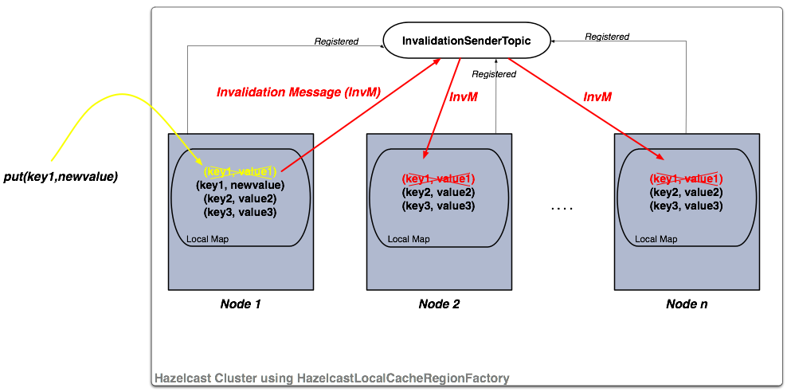
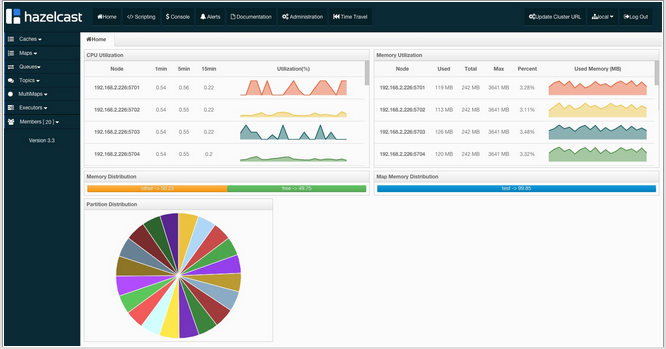
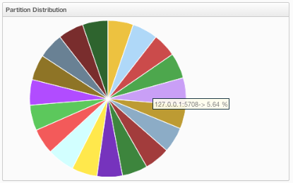
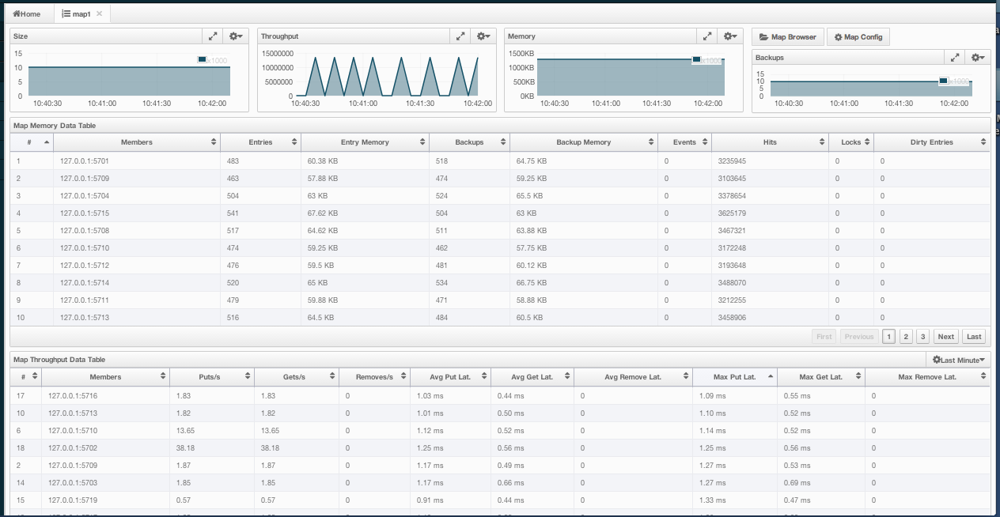
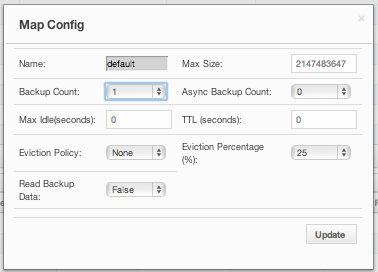
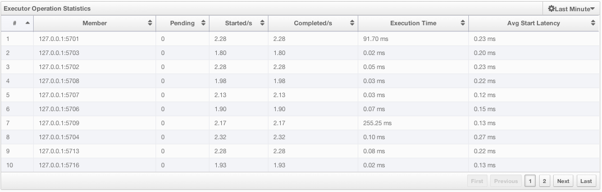
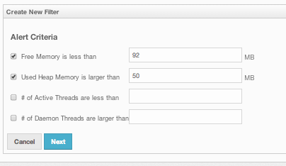
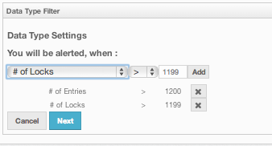

Preface
Welcome to Hazelcast Reference Manual. This manual includes concepts, instructions and samples to guide you on how to use Hazelcast and build Hazelcast applications.
As the reader of this manual, you must be familiar with Java programming language and should have your preferred IDE.
Product Naming
Throughout this manual;
- Hazelcast refers to the open source edition of Hazelcast in-memory data grid middleware. It is also the name of company providing it.
- Hazelcast Enterprise refers to the commercial edition of Hazelcast.
Licensing
Hazelcast is free provided under Apache 2 license. Hazelcast Enterprise is commercially licensed by Hazelcast, Inc.
Trademarks
Hazelcast is a registered trademark of Hazelcast, Inc. All other trademarks in this manual are held by their respective owners.
Customer Support
Support for Hazelcast is provided via GitHub, Mail Group and StackOverflow.
For information on support for Hazelcast Enterprise, please see hazelcast.com/support/commercial.
Typographical Conventions
Below table shows the conventions used in this manual.
| Convention | Description |
|---|---|
| bold font | - Indicates words in a sentence requiring reader's specific attention. - Also indicates property/parameter values. |
| italic font | - When used with "<" and ">" before and after it, indicates a variable in a command or code syntax that you must replace, e.g. hazelcast-<version>.jar. - Also, Note and Related Information texts are in italic fonts. |
monospace |
- Indicates file, folder, class and library names, code snippets, and inline code words in a sentence. |
| RELATED INFORMATION | - Indicates a resource that is relevant to the topic, usually with a link or cross-reference. |
| NOTE | Indicates information that is of special interest or importance, e.g. an additional action required only in certain circumstances. |
What's New in Hazelcast 3.3
Release Notes
New Features
This section provides the new features introduced with Hazelcast 3.3 release.
- Heartbeat for Java client: Before this release, a Java client could not detect a node as dead, if the client is not trying to connect to it. With this heartbeat feature, each node will be pinged periodically. If no response is returned from a node, it will be deemed as dead. Main goal of this feature is to decrease the time for detection of dead (disconnected) nodes by Java clients, so that the user operations will be sent directly to a responsive one. For more information, please see Client Properties.
- Tomcat 6 and 7 Web Sessions Clustering: Please see Web Session Replication.
- Replicated Map implemented: Please see Replicated Map
- WAN Replication improved: Added configurable replication queue size WAN Replication Queue Size.
- Data Aggregation implemented: Added common data aggregations, please find Aggregators documentation.
- EvictAll and LoadAll features for IMap:
evictAllandloadAllmethods have been introduced to be able to evict all entries except the locked ones and that loads all or a set of keys from a configured map store, respectively. Please see Evicting All Entries and Forcing All Keys to be Loaded sections for more information. - Hazelcast JCache implementation introduced: Starting with release 3.3.1, Hazelcast offers its JCache implementation. Please see Hazelcast JCache Implementation for details.
Fixes
3.3.2 Fixes
This section lists issues solved for Hazelcast 3.3.2 release.
- Reject multicast messages if the group configuration is not matching [#3806].
Map#getEntryViewshould check expiration of a key [#3801].- Hazelcast gets stuck in
HazelcastInstanceNotActiveExceptionloop during multicast join [#3732]. - Hazelcast fails to comply with
maxIdleTimeexpiration when running EntryProcessors. A delay should be added to expiration times on backups [#3710]. containsKey()in transactional context returns wrong value for keys deleted within transaction [#3682].TransactionalMap.values()returns stale values that was updated within the transaction boundary [#3668].- Number of loaded keys should not exceed map's maximum size [#3608].
- During client node shutdown, if the cluster happens to be down, Hazelcast logs some extra messages at SEVERE level [#3493].
3.3.1 Fixes
This section lists issues solved for Hazelcast 3.3.1 release.
- MapReduce Combiner creation is not threadsafe, but certain operations on mapping phase might need a concurrent creation of the combiners [#3625].
- When
connectionTimeoutproperty in ClientNetworkConfig is set toInteger.MAX_VALUE, the client could not connect to cluster since a default 2000 ms. extra value is added toconnectionTimeoutwhile connecting [#3615]. - User provided list results from combiner is colliding with the internally used multi-result list [#3614].
- While committing collection transactions, the collection item is being added to the collection container. However, this gives the warning "There is no suitable de-serializer for type" warning. Instead of collection item, transactional item should be added to the container [#3603].
MaxSizeConfigconstructor should convert zero size toInteger.MAX_VALUE[#3579].- If deserialization of the client request fails, the exception is not propagated back to the client [#3557].
- "Lock is not owned by by the transaction" exception. This exception was received while testing how transactions are working with Map and MultiMap for some last Hazelcast releases [#3545].
- Main classes in
manifest.mffiles are not correctly set #3537. - Count of evicted events may exceed the map size when "read backup data" feature is enabled #3515.
mancenter.warfrom Hazelcast release 3.2.5 cannot be deployed to Glassfish 3.1.2.2 and it fails to deploy #3501.- While evicting entries from a map with the method
evictAll, locked keys should stay in the map #3473. - In
hazelcast-vmmodule, before every test, new server container is started. And after every test, running server is terminated. This behavior causes a long test execution time. Server start-up and termination should be done before and after test class initialization and finalization #3473. - The method
IQueue.take()method should throw InterruptedException, but throws HazelcastException instead #3133. - Multicast discovery doesn't work without network #2594.
3.3 Fixes
This section lists issues solved for Hazelcast 3.3 release.
- TxQueue cannot find reserved items upon ownership changes [#3432].
- Documentation update is needed to tell that PagingPredicate is only supported for Comparable objects if there is no comparator [#3428].
java.lang.NullPointerExceptionis thrown when publishing an event in ClientEndPointImpl [#3407].- The
entryUpdated()callback of a listener during a transaction always has a nulloldValuein the EntryEvent [#3406]. - Documentation update with the links to code samples for integration modules [#3389].
- Hazelcast write-behind with
map.replace()stores replaced items [#3386]. - XAResource's
setTransactionTimeout()method is not correctly implemented [#3384]. - Hazelcast web session replication filter may die if response committed [#3360].
- Resource adapter state is never reset to
isStarted == false, resulting in errors down the line [#3350]. PagingPredicate.getAnchordoes not return the correct value [#3241].- If deserialization fails, calling node is not informed [#2509].
- CallerNotMemberException and WrongTargetException exceptions are thrown at random intervals [#2253].
RC3 Fixes
This section lists issues solved for Hazelcast 3.3-RC3 release.
- Parallel execution of
MapStore#storemethod for the same key triggered byIMap#flush[#3338]. - When offering null argument in queue throws an exception but it adds null argument to collection, then
addAll()performed on this list does not throw an exception [#3330]. java.io.FileNotFoundExceptionthrown by MapLoaderTest [#3324].- MapMaxSizeTest Stabilizer test with SoftKill [#3291].
- Incompatible Spring and Hazelcast configuration XSDs [#3275].
ExpirationManagerpartition sorting can fail [#3271].- Configuration validation is broken [#3257].
- Code Samples for Spring Security and WebFilter Integration [#3252].
- WebFilter Test Cases are slow [#3250].
- Management Center and Weblogic Deployment Problem [#3247].
- Enabling Multicast and TCP/IP node discovery methods freeze the instances [#3246].
getOldValueandgetValuereturns the same value when removing item from IMap [#3198].- MapTransactionContextTest: member SoftKill and then HazelcastSerializationException and IegalStateException: Nested are thrown [#3196].
IMap.delete()should not callMapLoader.load()[#3178].- 3.3-RC3+: NPE in the method
connectionMarkedAsNotResponsive[#3169]. WebFilter.HazelcastHttpSession.isNew()does not check the Hazelcast Session Cache [#3132].- Hazelcast Spring XSD files are not version agnostic [#3131].
ClassCastException: java.lang.Integercannot be cast tojava.lang.StringQuery [#3091].- Predicate returns a value not matching the predicate [#3090].
- Modifications made by Entry Processor are lost in 3.3-RC-2 [#3062].
- Hazelcast Session Clustering with Spring Security Problem [#3049].
- PagingPredicate returning duplicated elements results in an infinite loop [#3047].
expirationTimeon EntryView is not set [#3038].BasicRecordStoreLoadercannot handle retry responses [#3033].- Short
await()on condition of contended lock causes IllegalStateException [#3025]. - Indices and Comparable
: not documented [#3024]. - Marking Heartbeat as healthy is too late [#3014].
- 3.3-RC2:
IMap#keySettriggers value deserialization [#3008]. map.destroy()throws DistributedObjectDestroyedException [#3001].- Stabilizer tests Final profile, Xlarge cluster OperationTimeoutException [#2999].
com.hazelcast.jca.HazelcastConnection::getExecutorServicereturns plain ExecutorService [#2986].- Serialization NPE in MapStoreTest stabilizer, 3.3-RC3-SNAPSHOT [#2985].
- Bug with
IMap.getAll()[#2982]. - Client deadlock on single core machines [#2971].
- Retrieve number of futures in loop in calling thread [#2964].
RC2 Fixes
This section lists issues solved for Hazelcast 3.3-RC2 release.
evictAllshould flush to staging area #2969.- NPE exception in MapStoreTest [#2956].
- Fixed
AddSessionEntryProcessor[#2955]. - Added
StripedExecutorto WanReplicationService [#2947]. - All read operations of map should respect expired keys [#2946].
- Fix test EvictionTest#testMapWideEviction [#2944].
- Heartbeat check of clients from nodes [#2936].
- WebFilter does not clean up timed- out sessions [#2930].
- Fix leaking empty concurrent hashmaps [#2929].
- Data loss fix in
hazelcast-wmmodule [#2927]. - Configured event queue capacity [#2924].
- Client closes owner connection when a connection to the same address is closed [#2921].
- Close the owner connection if heartbeat timeout when client is smart [#2916].
- Set application buffer size to not exceed
tlsrecord size [#2914]. - EntryProcessor makes unnecessary serialization [#2913].
- Make evictable time window configurable [#2910].
- Fixes data loss issue when partition table is being synced and a node is gracefully shutdown [#2908].
- MapStoreConfig; implementation instance is not set, when configured via XML [#2898].
- LocalMapStats does not record stats about locked entries in 3.x [#2876].
- Concurrency security interceptor [#2874].
- Client hangs during split, if split occurs due to network error [#2850].
- Network connection loss does not release lock [#2818].
RC1 Fixes
This section lists issues solved for Hazelcast 3.3-RC1 release.
- It is not possible to copy the link from http://hazelcast.org/download/ and run
wgeton it [#2814]. mapClearedmethod for EntryListener is needed [#2789].- The method
keySetwith predicate should trigger loading of MapStore [#2692]. - MapStore with write-behind: The method
IMap.remove()followed byIMap.putIfAbsent(key,value)still returns the old value [#2685]. - Hazelcast cannot read UTF-8 String if "multiple-byte" characters end up at position that is an even multiple of buffer size [#2674].
- Current implementation of record expiration relies on undefined behavior of
System.nanoTime()[#2666]. - Inconsistency at Hazelcast Bootup "Editions" message [#2641].
AbstractReachabilityHandlerwrites to standard output [#2591].IMap.set()does not not remove a key from write behind deletions queue [#2588].com.hazelcast.core.EntryView#getLastAccessTimeis invalid[#2581].
Upgrading from 2.x versions
In this section, we list the changes what users should take into account before upgrading to latest Hazelcast from earlier versions.
- Removal of deprecated static methods: The static methods of Hazelcast class reaching Hazelcast data components have been removed. The functionality of these methods can be reached from HazelcastInstance interface. Namely you should replace following:
Map<Integer, String> customers = Hazelcast.getMap( "customers" );
with
HazelcastInstance hazelcastInstance = Hazelcast.newHazelcastInstance();
// or if you already started an instance named "instance1"
// HazelcastInstance hazelcastInstance = Hazelcast.getHazelcastInstanceByName( "instance1" );
Map<Integer, String> customers = hazelcastInstance.getMap( "customers" );
Removal of lite members: With 3.0 there will be no member type as lite member. As 3.0 clients are smart client that they know in which node the data is located, you can replace your lite members with native clients.
Renaming "instance" to "distributed object": Before 3.0 there was a confusion for the term "instance". It was used for both the cluster members and the distributed objects (map, queue, topic, etc. instances). Starting 3.0, the term instance will be only used for Hazelcast instances, namely cluster members. We will use the term "distributed object" for map, queue, etc. instances. So you should replace the related methods with the new renamed ones. As 3.0 clients are smart client that they know in which node the data is located, you can replace your lite members with native clients.
public static void main( String[] args ) throws InterruptedException {
HazelcastInstance hazelcastInstance = Hazelcast.newHazelcastInstance();
IMap map = hazelcastInstance.getMap( "test" );
Collection<Instance> instances = hazelcastInstance.getInstances();
for ( Instance instance : instances ) {
if ( instance.getInstanceType() == Instance.InstanceType.MAP ) {
System.out.println( "There is a map with name: " + instance.getId() );
}
}
}
with
public static void main( String[] args ) throws InterruptedException {
HazelcastInstance hazelcastInstance = Hazelcast.newHazelcastInstance();
IMap map = hz.getMap( "test" );
Collection<DistributedObject> objects = hazelcastInstance.getDistributedObjects();
for ( DistributedObject distributedObject : objects ) {
if ( distributedObject instanceof IMap ) {
System.out.println( "There is a map with name: " + distributedObject.getName() );
}
}
}
- Package structure change:
PartitionService has been moved to package
com.hazelcast.corefromcom.hazelcast.partition.
- Listener API change:
Before 3.0,
removeListenermethods was taking the Listener object as parameter. But, it causes confusion as same listener object may be used as parameter for different listener registrations. So we have changed the listener API.addListenermethods return you an unique ID and you can remove listener by using this ID. So you should do following replacement if needed:
IMap map = hazelcastInstance.getMap( "map" );
map.addEntryListener( listener, true );
map.removeEntryListener( listener );
with
IMap map = hazelcastInstance.getMap( "map" );
String listenerId = map.addEntryListener( listener, true );
map.removeEntryListener( listenerId );
- IMap changes:
tryRemove(K key, long timeout, TimeUnit timeunit)returns boolean indicating whether operation is successful.tryLockAndGet(K key, long time, TimeUnit timeunit)is removed.putAndUnlock(K key, V value)is removed.lockMap(long time, TimeUnit timeunit)andunlockMap()are removed.getMapEntry(K key)is renamed asgetEntryView(K key). The returned object's type, MapEntry class is renamed as EntryView.- There is no predefined names for merge policies. You just give the full class name of the merge policy implementation.
<merge-policy>com.hazelcast.map.merge.PassThroughMergePolicy</merge-policy>
Also MergePolicy interface has been renamed to MapMergePolicy and also returning null from the implemented merge() method causes the existing entry to be removed.
- IQueue changes:
There is no change on IQueue API but there are changes on how
IQueueis configured. With Hazelcast 3.0 there will not be backing map configuration for queue. Settings like backup count will be directly configured on queue config. For queue configuration details, please see Queue. - Transaction API change: In Hazelcast 3.0, transaction API is completely different. Please see Transactions.
- ExecutorService API change: Classes MultiTask and DistributedTask have been removed. All the functionality is supported by the newly presented interface IExecutorService. Please see Executor Service.
- LifeCycleService API:
The lifecycle has been simplified.
pause(),resume(),restart()methods have been removed. - AtomicNumber:
AtomicNumberclass has been renamed toIAtomicLong. - ICountDownLatch:
await()operation has been removed. We expect users to useawait()method with timeout parameters. - ISemaphore API:
The
ISemaphorehas been substantially changed.attach(),detach()methods have been removed. - In 2.x releases, the default value for
max-sizeeviction policy was cluster_wide_map_size. In 3.x releases, default is PER_NODE. After upgrading, themax-sizeshould be set according to this new default, if it is not changed. Otherwise, it is likely that OutOfMemory exception may be thrown.
Document Revision History
| Chapter | Section | Description |
|---|---|---|
| Chapter 1 - Preface | Added as a new chapter. | |
| Chapter 4 - Distributed Data Structures | IdGenerator, ICountDownLatch, IAtomicReference | Added as new sections. |
| MultiMap | Section improved by adding information about how it is implemented and by providing configuration information. | |
| Map | Eviction section improved by adding the detailed policy and parameter explanations. A subsection on how to evict particular map entries added (Evicting Specific Entries). Also Map Overview and Backups sections enhanced with "how it works" information. Added Entry Listener and Map Locks as new sections. Added Evicting All Entries section to explain the method evictAll. |
|
| Map Persistence | Added Forcing All Keys To Be Loaded section to explain the method loadAll. Also, added Read-Through, Write-Through and Write-Behind sections. Section also enhanced by adding MapStore and MapLoader descriptions with a sample code. Thread information related to MapLoader interface added as a note. |
|
| Queue | Section improved with new subsections. QueueStore interface explanations added. Bounded Queue section modified for a cleaner description. | |
| Lock, ISemaphore | Sections updated by adding fairness related warnings. | |
| Chapter 6 - Distributed Computing | Executor Service | HazelcastInstanceAware related information added. |
| Chapter 7 - Distributed Query | Query section improved by adding 'how it works' information. Also, Continuous Query section re-written and sample codes added. Aggregators added as a new section. A note related to the indexing of non-primitive types added to Indexing section. | |
| Chapter 8 - User Defined Services | Added as a new chapter explaining Hazelcast's Service Provider Interface (SPI). | |
| Chapter 9 - Transactions | XA Transactions | Added as a new section. |
| Sample JBoss AS 7 - EAP 6 Web Application Configuration | Added as a new section. | |
| Chapter 10 - Hazelcast JCache Implementation | Added as a new chapter. | |
| Chapter 11 - Integrated Clustering | Tomcat Based Web Session Replication | Added as a new section (Enterprise Only feature). |
| Filter Based Web Session Replication | Updated by adding SpringAwareWebFilter related information. | |
| Chapter 13 - Clients | Java Client | Client configuration related to AWS added and the whole section enhanced. Also, Load Balancer related configuration information added. |
| Chapter 14 - Serialization | All sections under this chapter re-written and enhanced. Also added HazelcastInstanceAware, Stream & ByteArray Serializer, Serializable & Externalizable sections. Chapter introduction enhanced by adding an overview, a section explaining serialization interfaces and a comparison table for these interfaces. | |
| Null Portable Serialization | Added as a new section. | |
| Chapter 15 - Management | Clustered JMX | Added as a new section explaining how to monitor the statistics of distributed objects from a JMX interface (Enterprise Only feature). |
| Cluster Utilities | Member Attributes added as a new section. Also, Cluster-Member Safety Check section added explaining the PartitionService interface of Hazelcast. | |
| Clustered REST | Added as a new section (Enterprise Only feature). | |
| Chapter 17 - Performance | Threading Model | Added as a new section. |
| Chapter 18 - WAN | WAN Replication Queue Size | Added as a new section (Enterprise only feature). |
| Chapter 19 - Configuration | Configuring TCP/IP Cluster | Section improved by adding more detailed configuration options. |
| EC2 Auto Discovery | Section improved by adding AWSClient Class description, Debugging information and more detailed tag explanations. | |
| Ports | Added as a new section explaining how to configure ports which Hazelcast uses to communicate between nodes. Also existing "Restricting Outbound Ports" moved under this new section with the heading "Outbound Ports". | |
| System Property | Updated by adding the descriptions of missing system properties. | |
| Chapter 20 - Network Partitioning | Added as a new chapter. | |
| Chapter 21 - FAQ | Updated with new questions. | |
| Chapter 22 - Glossary | Added as a new chapter. |
Getting Started
Hazelcast Overview
Hazelcast is an open source In-Memory Data Grid (IMDG). As such it provides elastically scalable distributed In-Memory computing, widely recognized as the fastest and most scalable approach to application performance, and Hazelcast does so in open source. More importantly it makes distributed computing simple by offering distributed implementations of developer friendly interfaces from Java such as Map, Queue, ExecutorService, Lock, JCache and many more. For example, the Map interface provides an In-Memory Key Value store which confers many of the advantages of NoSQL in terms of developer friendliness and developer productivity.
In addition to distributing data In-Memory, Hazelcast provides a convenient set of APIs to access the CPUs in your cluster for maximum processing speed. Hazelcast is designed to be lightweight and easy to use. Since Hazelcast is delivered as a compact library (JAR) and has no external dependencies other than Java, it is easily pluggable into your software solution to provide distributed data structures and distributed computing utilities.
Hazelcast is highly scalable and available. Distributed applications can use Hazelcast for distributed caching, synchronization, clustering, processing, pub/sub messaging, etc. Hazelcast is implemented in Java and has clients for Java, C/C++, .NET as well as REST. Hazelcast can also speak memcache protocol. It also plugs in to Hibernate and can easily be used with any existing database system.
If you are looking for In-Memory speed, elastic scalability and the developer friendliness of NoSQL, Hazelcast is a great choice for you.
Hazelcast is simple
Hazelcast is written in Java with no other dependencies. It exposes the same API from the familiar Java util package. Just add hazelcast.jar to your classpath, enjoy JVMs clustering in less than a minute and start building scalable applications.
Hazelcast is Peer-to-Peer
Unlike many NoSQL solutions, Hazelcast is peer-to-peer. There is no master and slave; there is no single point of failure. All nodes store equal amount of data and do equal amount of processing. Hazelcast can be embedded to your existing application or used in client and server mode where your application is client to the Hazelcast nodes.
Hazelcast is scalable
Hazelcast is designed to scale up to hundreds and thousands of nodes. Simply add new nodes and they will automatically discover the cluster and will linearly increase both memory and processing capacity. The nodes maintain a TCP connection between each other and all communication is performed through this layer.
Hazelcast is fast
Hazelcast stores everything in-memory. It is designed to perform very fast reads and updates.
Hazelcast is redundant
Hazelcast keeps the backup of each data entry on multiple nodes. On a node failure, the data is restored from the backup and cluster will continue to operate without a downtime.
Sharding in Hazelcast
Hazelcast shards are called Partitions. By default, Hazelcast has 271 partitions. Given a key; we serialize, hash and mode it with the number of partitions to find the partition it belongs to. The partitions themselves are distributed equally among the members of the cluster. Hazelcast also creates the backups of partitions and also distributes them among nodes for redundancy.
Partitions in a 1 node Hazelcast cluster.

Partitions in a 2 node cluster.
The blacks are primary partitions and reds are backups. In the above illustration, first node has 135 primary partitions (black) and each of these partitions are backed up in the second node (red). At the same time, first node has the backup partitions of second node's primary partitions.
As you add more nodes, Hazelcast will move one by one some of the primary and backup partitions to new nodes to make all nodes equal and redundant. Only minimum amount of partitions will be moved to scale out Hazelcast.

Hazelcast Topology
If you have an application whose main focal point is asynchronous or high performance computing and lots of task executions, then embedded deployment is the most useful. In this type, nodes include both the application and data, see the below illustration.

You can have a cluster of server nodes that can be independently created and scaled. Your clients communicate with these server nodes to reach to the data on them. Hazelcast provides native clients (Java, .NET and C++), Memcache clients and REST clients. See the below illustration.

Why Hazelcast?
A Glance at Traditional Data Persistence
Data is at the core of software systems and in conventional architectures, relational database persists and provides access to data. Basically, applications are talking directly with a database which has its backup as another machine. To increase the performance, tuning or a faster machine is required. This leads to a large amount of money or effort.
Then, there is the idea of keeping copies of data next to the database. This is performed using technologies like external key-value stores or second level caching. This helps to offload the database. However, when the database is saturated or if the applications perform mostly "put" operations (writes), this approach is of no use, since it insulates the database only from the "get" loads (reads). Even if the applications is read intensive, then there can be consistency problems: when data changes, what happens to the cache, and how are the changes handled? This is when concepts like time-to-live (TTL) or write-through come in.
However, in the case of TTL, if the access is less frequent then the TTL, the result will always be a cache miss. On the other hand, in the case of write-through caches; if there are more than one of these caches in a cluster, then we again have consistency issues. This can be avoided by having the nodes communicating with each other so that entry invalidations can be propagated.
We can conclude that an ideal cache would combine TTL and write-through features. And, there are several cache servers and in-memory database solutions in this field. However, those are stand-alone single instances with a distribution mechanism to an extent provided by other technologies. This brings us back to square one: we would experience saturation or capacity issues if the product is a single instance or if consistency is not provided by the distribution.
And, there is Hazelcast
Hazelcast, a brand new approach to data, is designed around the concept of distribution. Data is shared around the cluster for flexibility and performance. It is an in-memory data grid for clustering and highly scalable data distribution.
One of the main features of Hazelcast is not having a master node. Each node in the cluster is configured to be the same in terms of functionality. The oldest node manages the cluster members, i.e. automatically performs the data assignment to nodes.
Another main feature is the data being held entirely in-memory. This is fast. In the case of a failure, such as a node crash, no data will be lost since Hazelcast distributes copies of data across all the nodes of cluster.
As it can be seen in the feature list given in Hazelcast Overview section, Hazelcast supports a number of distributed data structures and distributed computing utilities. This provides powerful ways of accessing distributed clustered memory, but also CPUs for true distributed computing.
Hazelcast's Distinctive Strengths
- It is open source.
- It is a small JAR file. You do not need to install software.
- It is a library, it does not impose an architecture on Hazelcast users.
- It provides out of the box distributed data structures (i.e. Map, Queue, MultiMap, Topic, Lock, Executor, etc.).
- There is no "master", so no single point of failure in Hazelcast cluster; each node in the cluster is configured to be functionally the same.
- When the size of your memory and compute requirement increases, new nodes can be dynamically joined to the cluster to scale elastically.
- Data is resilient to node failure. Data backups are also distributed across the cluster. As can be noticed, this is a big benefit when a node in the cluster is gone (e.g. crashes). Data will not be lost.
- Nodes are always aware of each other (and they communicate) unlike traditional key-value caching solutions.
- You can build your own custom distributed data structures using the Service Programming Interface (SPI), if you are not happy with the ones provided.
Finally, Hazelcast has a vibrant open source community enabling it to be continuously developed.
Hazelcast is a fit when you need:
- Analytic applications requiring big data processing by partitioning the data,
- Retaining frequently accessed data in the grid,
- A cache, particularly an open source JCache provider with elastic distributed scalability,
- A primary data store for applications with utmost performance, scalability and low-latency requirements,
- An In-Memory NoSQL Key Value Store,
- Publish/subscribe communication at highest speed and scalability between applications,
- Applications that need to scale elastically in distributed and cloud environments,
- A highly available distributed cache for applications,
- As an alternative to Coherence, Gemfire and Terracotta.
Installation
Hazelcast
It is more than simple to start enjoying Hazelcast:
Download
hazelcast-<version>.zipfrom www.hazelcast.org.Unzip
hazelcast-<version>.zipfile.Add
hazelcast-<version>.jarfile into your classpath.
That is all.
Alternatively, Hazelcast can be found in standard Maven repositories. So, if your project uses Maven, you do not need to add additional repositories to your pom.xml. Just add the following lines to pom.xml:
<dependencies>
<dependency>
<groupId>com.hazelcast</groupId>
<artifactId>hazelcast</artifactId>
<version>3.3</version>
</dependency>
</dependencies>
Hazelcast Enterprise
There are two Maven repositories defined for Hazelcast Enterprise:
<repository>
<id>Hazelcast Private Snapshot Repository</id>
<url>https://repository-hazelcast-l337.forge.cloudbees.com/snapshot/</url>
</repository>
<repository>
<id>Hazelcast Private Release Repository</id>
<url>https://repository-hazelcast-l337.forge.cloudbees.com/release/</url>
</repository>
Hazelcast Enterprise customers may also define dependencies, a sample of which is shown below.
<dependency>
<groupId>com.hazelcast</groupId>
<artifactId>hazelcast-enterprise-tomcat6</artifactId>
<version>${project.version}</version>
</dependency>
<dependency>
<groupId>com.hazelcast</groupId>
<artifactId>hazelcast-enterprise-tomcat7</artifactId>
<version>${project.version}</version>
</dependency>
<dependency>
<groupId>com.hazelcast</groupId>
<artifactId>hazelcast-enterprise</artifactId>
<version>${project.version}</version>
</dependency>
<dependency>
<groupId>com.hazelcast</groupId>
<artifactId>hazelcast-enterprise-all</artifactId>
<version>${project.version}</version>
</dependency>
Setting the License Key for Hazelcast Enterprise
To be able to use Hazelcast Enterprise, you need to set license the key in configuration.
- Declarative Configuration
<hazelcast>
...
<license-key>HAZELCAST_ENTERPRISE_LICENSE_KEY</license-key>
...
</hazelcast>
- Programmatic Configuration
Config config = new Config();
config.setLicenseKey( "HAZELCAST_ENTERPRISE_LICENSE_KEY" );
- Spring XML Configuration
<hz:config>
...
<hz:license-key>HAZELCAST_ENTERPRISE_LICENSE_KEY</hz:license-key>
...
</hz:config>
- JVM System Property
-Dhazelcast.enterprise.license.key=HAZELCAST_ENTERPRISE_LICENSE_KEY
Starting the Cluster and Client
Having hazelcast-<version>.jar added to your classpath, it is time to get started.
In this short tutorial, we will:
- Create a simple Java application using Hazelcast distributed map and queue.
- Then, we will run our application twice to have two nodes (JVMs) clustered.
- And, connect to our cluster from another Java application by using Hazelcast Native Java Client API.
Let's begin.
- Following code will start the first node and create and use
customersmap and queue.
import com.hazelcast.core.Hazelcast;
import com.hazelcast.core.HazelcastInstance;
import java.util.Map;
import java.util.Queue;
public class GettingStarted {
public static void main( String[] args ) {
HazelcastInstance hazelcastInstance = Hazelcast.newHazelcastInstance();
Map<Integer, String> customers = hazelcastInstance.getMap( "customers" );
customers.put( 1, "Joe" );
customers.put( 2, "Ali" );
customers.put( 3, "Avi" );
System.out.println( "Customer with key 1: " + customers.get(1) );
System.out.println( "Map Size:" + hazelcastInstance.size() );
Queue<String> queueCustomers = hazelcastInstance.getQueue( "customers" );
queueCustomers.offer( "Tom" );
queueCustomers.offer( "Mary" );
queueCustomers.offer( "Jane" );
System.out.println( "First customer: " + queueCustomers.poll() );
System.out.println( "Second customer: "+ queueCustomers.peek() );
System.out.println( "Queue size: " + queueCustomers.size() );
}
}
- Run this class second time to get the second node started. Have you seen they formed a cluster? You should see something like this:
Members [2] {
Member [127.0.0.1:5701]
Member [127.0.0.1:5702] this
}
Now, add
hazelcast-client-<version>.jarto your classpath, too. This is required to be able to use a Hazelcast client.Following code will start a Hazelcast Client, connect to our two node cluster and print the size of our
customersmap.
package com.hazelcast.test;
import com.hazelcast.client.config.ClientConfig;
import com.hazelcast.client.HazelcastClient;
import com.hazelcast.core.HazelcastInstance;
import com.hazelcast.core.IMap;
public class GettingStartedClient {
public static void main( String[] args ) {
ClientConfig clientConfig = new ClientConfig();
HazelcastInstance client = HazelcastClient.newHazelcastClient( clientConfig );
IMap map = client.getMap( "customers" );
System.out.println( "Map Size:" + map.size() );
}
}
- When you run it, you will see the client properly connecting to the cluster and printing the map size as 3.
Hazelcast also offers a tool, Management Center, that enables monitoring your cluster. To be able to use it, deploy the mancenter-<version>.war included in the ZIP file to your web server. You can use it to monitor your maps, queues, other distributed data structures and nodes. Please see Management Center for usage explanations.
By default Hazelcast uses Multicast to discover other nodes to form a cluster. If you are working with other Hazelcast developers on the same network, you may find yourself joining their clusters using the default settings. Hazelcast provides a way to segregate clusters within the same network when using Multicast. Please see How do I create separate clusters for more information. Alternatively, if you do not wish to use the default Multicast mechanism, you can provide a fixed list of IP addresses that are allowed to join. Please see the section Configuring TCP/IP Cluster for more information.
RELATED INFORMATION
You can also check the video tutorials here.
Configuring Hazelcast
While Hazelcast is starting up, it checks for the configuration as follows:
First, it looks for
hazelcast.configsystem property. If it is set, its value is used as the path. It is useful if you want to be able to change your Hazelcast configuration. This is possible because it is not embedded within the application. Theconfigoption can be set by the below command:- Dhazelcast.config=<path to the hazelcast.xml>.The path can be a normal one or a classpath reference with the prefix
CLASSPATH.- If the above system property is not set, Hazelcast then checks whether there is a
hazelcast.xmlfile in the working directory. - If not, then it checks whether
hazelcast.xmlexists on the classpath. - If none of the above works, Hazelcast loads the default configuration, i.e.
hazelcast-default.xmlthat comes withhazelcast.jar.
When you download and unzip hazelcast-<version>.zip you will see the hazelcast.xml in /bin folder. This is the configuration XML file for Hazelcast, a part of which is shown below.
For most of the users, default configuration should be fine. If not, you can tailor this XML file according to your needs by adding/removing/modifying properties (Declarative Configuration). Please refer to Configuration Properties for details.
Besides declarative configuration, you can configure your cluster programmatically (Programmatic Configuration). Just instantiate a Config object and add/remove/modify properties.
You can also use wildcards while configuring Hazelcast. Please refer to the section Using Wildcard for details.
RELATED INFORMATION
Please refer to Configuration chapter for more information.
Use Cases
Some example usages are listed below. Hazelcast can be used:
- To share server configuration/information to see how a cluster performs,
- To cluster highly changing data with event notifications (e.g. user based events) and to queue and distribute background tasks,
- As a simple Memcache with near cache,
- As a cloud-wide scheduler of certain processes that need to be performed on some nodes,
- To share information (user information, queues, maps, etc.) on the fly with multiple nodes in different installations under OSGI environments,
- To share thousands of keys in a cluster where there is a web service interface on application server and some validation,
- As a distributed topic (publish/subscribe server) to build scalable chat servers for smartphones,
- As a front layer for Cassandra back end,
- To distribute user object states across the cluster, to pass messages between objects and to share system data structures (static initialization state, mirrored objects, object identity generators),
- As a multi-tenancy cache where each tenant has its own map,
- To share datasets (e.g. table-like data structure) to be used by applications,
- To distribute the load and collect status from Amazon EC2 servers where front-end is developed using, for example, Spring framework,
As a real time streamer for performance detection,
As a storage for session data in web applications (enables horizontal scalability of the web application).
Resources
- Hazelcast source code can be found at Github/Hazelcast.
- Hazelcast API can be found at Hazelcast.org/docs/Javadoc.
- Code samples can be downloaded from Hazelcast.org/download.
- More use cases and resources can be found at Hazelcast.com.
- Questions and discussions can be post at Hazelcast mail group.
Distributed Data Structures
As mentioned in the Overview section, Hazelcast offers distributed implementations of Java interfaces. Below is the full list with links to their sections in this manual.
Standard utility collections:
- Map: Distributed implementation of
java.util.Map. Operations like reading and writing from/to a Hazelcast map can be performed with the well known methods like get and put. - Queue: Distributed queue is an implementation of
java.util.concurrent.BlockingQueue. You can add an item in one machine and remove it from another one. - Set: Distributed and concurrent implementation of
java.util.Set. It does not allow duplicate elements and does not preserve their order. - List: Very similar to Hazelcast List, except that it allows duplicate elements and preserver their order.
- MultiMap: It is a specialized Hazelcast map, meaning it is distributed, where multiple values under a single key can be stored.
- ReplicatedMap: It does not partition data, i.e. it does not spread data to different cluster members, but replicates the data to all nodes.
- Map: Distributed implementation of
- Topic: Distributed mechanism for publishing messages that are delivered to multiple subscribers which is also known as publish/subscribe (pub/sub) messaging model. Please see Topic for more information.
- Concurrency utilities:
- Lock: Distributed implementation of
java.util.concurrent.locks.Lock. When you lock using Hazelcast Lock, the critical section that it guards is guaranteed to be executed by only one thread in entire cluster. - Semaphore: Distributed implementation of
java.util.concurrent.Semaphore. When performing concurrent activities semaphores offer permits to control the thread counts. - AtomicLong: Distributed implementation of
java.util.concurrent.atomic.AtomicLong. Most of AtomicLong's operations are offered but these operations involve remote calls and hence their performances differ from AtomicLong, due to being distributed. - AtomicReference: When you need to deal with a reference in a distributed environment, you can use Hazelcast AtomicReference that is the distributed version of
java.util.concurrent.atomic.AtomicReference. - IdGenerator: Hazelcast IdGenerator is used to generate cluster-wide unique identifiers and ID generation occurs almost at the speed of
AtomicLong.incrementAndGet(). - CountdownLatch: Distributed implementation of
java.util.concurrent.CountDownLatch. It is a gate keeper for concurrent activities, enabling the threads to wait for other threads to complete their operations.
- Lock: Distributed implementation of
Common Features of all Hazelcast Data Structures:
- If a member goes down, its backup replica that also holds the same data, will dynamically redistribute the data including the ownership and locks on them to remaining live nodes. As a result, no data will get lost.
- There is no single cluster master or something that can cause single point of failure. Every node in the cluster has equal rights and responsibilities. No-one is superior. And no dependency on external 'server' or 'master' kind of concept.
Here is how you can retrieve existing data structure instances (map, queue, set, lock, topic, etc.) and how you can listen for instance events to get notified when an instance is created or destroyed.
import java.util.Collection;
import com.hazelcast.config.Config;
import com.hazelcast.core.*;
public class Sample implements DistributedObjectListener {
public static void main(String[] args) {
Sample sample = new Sample();
Config config = new Config();
HazelcastInstance hazelcastInstance = Hazelcast.newHazelcastInstance(config);
hazelcastInstance.addDistributedObjectListener(sample);
Collection<DistributedObject> distributedObjects = hazelcastInstance.getDistributedObjects();
for (DistributedObject distributedObject : distributedObjects) {
System.out.println(distributedObject.getName() + "," + distributedObject.getId());
}
}
@Override
public void distributedObjectCreated(DistributedObjectEvent event) {
DistributedObject instance = event.getDistributedObject();
System.out.println("Created " + instance.getName() + "," + instance.getId());
}
@Override
public void distributedObjectDestroyed(DistributedObjectEvent event) {
DistributedObject instance = event.getDistributedObject();
System.out.println("Destroyed " + instance.getName() + "," + instance.getId());
}
}
Map
Map Overview
Hazelcast Map (IMap) extends the interface java.util.concurrent.ConcurrentMap and hence java.util.Map. In simple terms, it is the distributed implementation of Java map. And operations like reading and writing from/to a Hazelcast map can be performed with the well known methods like get and put.
How Distributed Map Works
Hazelcast will partition your map entries and almost evenly distribute onto all Hazelcast members. Each member carries approximately "(1/n * total-data) + backups", n being the number of nodes in the cluster.
Just for exemplary purposes, let's create a Hazelcast instance (node) and fill a map named Capitals with key-value pairs using the below code.
public class FillMapMember {
public static void main( String[] args ) {
HazelcastInstance hzInstance = Hazelcast.newHazelcastInstance();
Map<String, String> capitalcities = hzInstance.getMap( "capitals" );
capitalcities.put( "1", "Tokyo" );
capitalcities.put( "2", "Paris );
capitalcities.put( "3", "Washington" );
capitalcities.put( "4", "Ankara" );
capitalcities.put( "5", "Brussels" );
capitalcities.put( "6", "Amsterdam" );
capitalcities.put( "7", "New Delhi" );
capitalcities.put( "8", "London" );
capitalcities.put( "9", "Berlin" );
capitalcities.put( "10", "Oslo" );
capitalcities.put( "11", "Moscow" );
...
...
capitalcities.put( "120", "Stockholm" )
}
}
When you run this code, a node is created with a map whose entries are distributed across the node's partitions. See the below illustration. This is a single node cluster for now.
NOTE: Please note that some of the partitions will not contain any data entries since we only have 120 objects and the partition count is 271 by default. This count is configurable and can be changed using the system property hazelcast.partition.count. Please see Advanced Configuration Properties.
Now, let's create a second node which will result in a cluster with 2 nodes. This is where backups of entries are created, too. Please remember the backup partitions mentioned in Hazelcast Overview section. So, run the above code again to create the second node. Below illustration shows two nodes and how the data and its backup is distributed.
As you see, when a new member joins the cluster, it takes ownership (responsibility) and load of -some- of the entire data in the cluster. Eventually, it will carry almost "(1/n * total-data) + backups" and reduces the load on others.
HazelcastInstance::getMap actually returns an instance of com.hazelcast.core.IMap which extends java.util.concurrent.ConcurrentMap interface. So methods like ConcurrentMap.putIfAbsent(key,value) and ConcurrentMap.replace(key,value) can be used on distributed map as shown in the example below.
import com.hazelcast.core.Hazelcast;
import com.hazelcast.core.HazelcastInstance;
import java.util.concurrent.ConcurrentMap;
HazelcastInstance hazelcastInstance = Hazelcast.newHazelcastInstance();
Customer getCustomer( String id ) {
ConcurrentMap<String, Customer> customers = hazelcastInstance.getMap( "customers" );
Customer customer = customers.get( id );
if (customer == null) {
customer = new Customer( id );
customer = customers.putIfAbsent( id, customer );
}
return customer;
}
public boolean updateCustomer( Customer customer ) {
ConcurrentMap<String, Customer> customers = hazelcastInstance.getMap( "customers" );
return ( customers.replace( customer.getId(), customer ) != null );
}
public boolean removeCustomer( Customer customer ) {
ConcurrentMap<String, Customer> customers = hazelcastInstance.getMap( "customers" );
return customers.remove( customer.getId(), customer );
}
All ConcurrentMap operations such as put and remove might wait if the key is locked by another thread in the local or remote JVM. But, they will eventually return with success. ConcurrentMap operations never throw java.util.ConcurrentModificationException.
Also see:
Map Backups
Hazelcast will distribute map entries onto multiple JVMs (cluster members). Each JVM holds some portion of the data but you do not want to lose data when a JVM crashes.
Distributed maps have 1 backup by default so that if a member goes down, you do not lose data. Backup operations are synchronous, so when a map.put(key, value) returns, it is guaranteed that the entry is replicated to one other node. For the reads, it is also guaranteed that map.get(key) returns the latest value of the entry. Consistency is strictly enforced.
Sync Backup
To provide data safety, Hazelcast allows you to specify the number of backup copies you want to have. That way, data on a JVM will be copied onto other JVM(s). It is configured using the backup-count property.
<hazelcast>
<map name="default">
<backup-count>1</backup-count>
</map>
</hazelcast>
When this count is 1, it means that a map entry will have its backup on another node in the cluster. If it is set as 2, then it will have its backup on two other nodes. It can be set as 0, if you do not want your entries to be backed up, e.g. if performance is more important than backing up. Maximum value for this property is 6.
Hazelcast supports both synchronous and asynchronous backups. By default, backup operations are synchronous (configured with backup-count). In this case, backup operations block operations until backups are successfully copied to backups nodes (or deleted from backup nodes in case of remove) and acknowledgements are received. Therefore, for example, you can be sure that backups are updated before a put operation is completed. Of course, sync backup operations have a blocking cost which may lead to latency issues.
Async Backup
Asynchronous backups, on the other hand, do not block operations. They are fire & forget and do not require acknowledgements (backup operations are performed at some point in time). Async backup is configured using the async-backup-count property.
<hazelcast>
<map name="default">
<backup-count>0</backup-count>
<async-backup-count>1</async-backup-count>
</map>
</hazelcast>
NOTE: Backups increase memory usage since they are also kept in memory. So for every backup, you double the original memory consumption.
NOTE: A map can have both sync and aysnc backups at the same time.
Read Backup Data
By default, Hazelcast will have one sync backup copy. If backup count is more than 1, then each member will carry both owned entries and backup copies of other member(s). So for the map.get(key) call, it is possible that calling member has backup copy of that key but by default, map.get(key) will always read the value from the actual owner of the key for consistency.
It is possible to enable backup reads (read local backup entries) by setting the value of read-backup-data property to true. Its default value is false for strong consistency. Enabling backup reads can improve the performance.
<hazelcast>
<map name="default">
<backup-count>0</backup-count>
<async-backup-count>1</async-backup-count>
<read-backup-data>true</read-backup-data>
</map>
</hazelcast>
This feature is available when there is at least 1 sync or async backup.
Eviction
Unless you delete the map entries manually or use an eviction policy, they will remain in the map. Hazelcast supports policy based eviction for distributed maps. Currently supported policies are LRU (Least Recently Used) and LFU (Least Frequently Used). There are also other properties as shown in the below sample declarative configuration.
<hazelcast>
<map name="default">
...
<time-to-live-seconds>0</time-to-live-seconds>
<max-idle-seconds>0</max-idle-seconds>
<eviction-policy>LRU</eviction-policy>
<max-size policy="PER_NODE">5000</max-size>
<eviction-percentage>25</eviction-percentage>
...
</map>
</hazelcast>
Let's describe each property.
time-to-live: Maximum time in seconds for each entry to stay in the map. If it is not 0, entries that are older than and not updated for this time are evicted automatically. Valid values are integers between 0 andInteger.MAX VALUE. Default value is 0 and it means infinite. Moreover, if it is not 0, entries are evicted regardless of the seteviction-policy.max-idle-seconds: Maximum time in seconds for each entry to stay idle in the map. Entries that are idle for more than this time are evicted automatically. An entry is idle if noget,putorcontainsKeyis called. Valid values are integers between 0 andInteger.MAX VALUE. Default value is 0 and it means infinite.eviction-policy: Valid values are described below.- NONE: Default policy. If set, no items will be evicted and the property
max-sizewill be ignored. Of course, you still can combine it withtime-to-live-secondsandmax-idle-seconds. - LRU: Least Recently Used.
- LFU: Least Frequently Used.
- NONE: Default policy. If set, no items will be evicted and the property
max-size: Maximum size of the map. When maximum size is reached, map is evicted based on the policy defined. Valid values are integers between 0 andInteger.MAX VALUE. Default value is 0. If you wantmax-sizeto work,eviction-policyproperty must be set to a value other than NONE. Its attributes are described below.PER_NODE: Maximum number of map entries in each JVM. This is the default policy.<max-size policy="PER_NODE">5000</max-size>PER_PARTITION: Maximum number of map entries within each partition. Storage size depends on the partition count in a JVM. So, this attribute may not be used often. If the cluster is small it will be hosting more partitions and therefore map entries, than that of a larger cluster.<max-size policy="PER_PARTITION">27100</max-size>USED_HEAP_SIZE: Maximum used heap size in megabytes for each JVM.<max-size policy="USED_HEAP_SIZE">4096</max-size>USED_HEAP_PERCENTAGE: Maximum used heap size percentage for each JVM. If, for example, JVM is configured to have 1000 MB and this value is 10, then the map entries will be evicted when used heap size exceeds 100 MB.<max-size policy="USED_HEAP_PERCENTAGE">10</max-size>
eviction-percentage: Whenmax-sizeis reached, specified percentage of the map will be evicted. If 25 is set for example, 25% of the entries will be evicted. Setting this property to a smaller value will cause eviction of small number of map entries. So, if map entries are inserted frequently, smaller percentage values may lead to overheads. Valid values are integers between 0 and 100. Default value is 25.
Sample Eviction Configuration
<map name="documents">
<max-size policy="PER_NODE">10000</max-size>
<eviction -policy>LRU</eviction -policy>
<max-idle-seconds>60</max-idle-seconds>
</map>
In the above sample, documents map starts to evict its entries from a member when the map size exceeds 10000 in that member. Then, the entries least recently used will be evicted. And, the entries not used for more than 60 seconds will be evicted as well.
Evicting Specific Entries
Above explained eviction policies and configurations apply to all the entries of a map. The entries that meet the specified eviction conditions are evicted.
But, you may particularly want to evict some specific map entries. In this case, you can use the ttl and timeunit parameters of the method map.put(). A sample code line is given below.
myMap.put( "1", "John", 50, TimeUnit.SECONDS )
So, the map entry with the key "1" will be evicted in 50 seconds after it is put into myMap.
Evicting All Entries
The method evictAll() is developed for evicting all keys from the map except the locked ones. If a MapStore is defined for the map, deleteAll is not called by evictAll. If you want to call the method deleteAll, use clear().
A sample is given below.
public class EvictAll {
public static void main(String[] args) {
final int numberOfKeysToLock = 4;
final int numberOfEntriesToAdd = 1000;
HazelcastInstance node1 = Hazelcast.newHazelcastInstance();
HazelcastInstance node2 = Hazelcast.newHazelcastInstance();
IMap<Integer, Integer> map = node1.getMap(EvictAll.class.getCanonicalName());
for (int i = 0; i < numberOfEntriesToAdd; i++) {
map.put(i, i);
}
for (int i = 0; i < numberOfKeysToLock; i++) {
map.lock(i);
}
// should keep locked keys and evict all others.
map.evictAll();
System.out.printf("# After calling evictAll...\n");
System.out.printf("# Expected map size\t: %d\n", numberOfKeysToLock);
System.out.printf("# Actual map size\t: %d\n", map.size());
}
}
NOTE: Only EVICT_ALL event is fired for any registered listeners.
In Memory Format
IMap has in-memory-format configuration option. By default, Hazelcast stores data into memory in binary (serialized) format. But sometimes, it can be efficient to store the entries in their object form, especially in cases of local processing like entry processor and queries. Setting in-memory-format in map's configuration, you can decide how the data will be stored in memory. There are below options.
BINARY(default): This is the default option. The data will be stored in serialized binary format. You can use this option if you mostly perform regular map operations like put and get.OBJECT: The data will be stored in deserialized form. This configuration is good for maps where entry processing and queries form the majority of all operations and the objects are complex ones, so serialization cost is respectively high. By storing objects, entry processing will not contain the deserialization cost.
Regular operations like get rely on the object instance. When OBJECT format is used and, for example, when a get is performed, the map does not return the stored instance, but creates a clone. So, this whole get operation includes a serialization first (on the node owning the instance) and then deserialization (on the node calling the instance). But, when BINARY format is used, only a deserialization is required and this is faster.
Similarly, put operation is faster when BINARY format is used. If it was OBJECT, map would create a clone of the instance. So, there would first a serialization and then deserialization. Again, when BINARY is used, only a deserialization is needed.
NOTE: If a value is stored in OBJECT format, a change on a returned value does not effect the stored instance. In this case, the returned instance is not the actual one but a clone. Therefore, changes made on an object after it is returned will not reflect on the actual stored data. Similarly, when a value is written to a map and the value is stored in OBJECT format, it will be a copy of the put value. So changes made on the object after it is stored, will not reflect on the actual stored data.
Map Persistence
Hazelcast allows you to load and store the distributed map entries from/to a persistent data store such as a relational database. For these, you can use Hazelcast's MapStore and MapLoader interfaces.
When you provide a MapLoader implementation and request an entry (IMap.get()) that does not exist in the memory, MapLoader's load or loadAll methods will load that entry from the data store. This loaded entry is placed into the map and will stay there until it is removed or evicted.
When a MapStore implementation is provided, an entry is put also into a user defined data store.
NOTE: Data store needs to be a centralized system that is accessible from all Hazelcast Nodes. Persisting to local file system is not supported.
Please see the below example.
public class PersonMapStore implements MapStore<Long, Person> {
private final Connection con;
public PersonMapStore() {
try {
con = DriverManager.getConnection("jdbc:hsqldb:mydatabase", "SA", "");
con.createStatement().executeUpdate(
"create table if not exists person (id bigint, name varchar(45))");
} catch (SQLException e) {
throw new RuntimeException(e);
}
}
public synchronized void delete(Long key) {
System.out.println("Delete:" + key);
try {
con.createStatement().executeUpdate(
format("delete from person where id = %s", key));
} catch (SQLException e) {
throw new RuntimeException(e);
}
}
public synchronized void store(Long key, Person value) {
try {
con.createStatement().executeUpdate(
format("insert into person values(%s,'%s')", key, value.name));
} catch (SQLException e) {
throw new RuntimeException(e);
}
}
public synchronized void storeAll(Map<Long, Person> map) {
for (Map.Entry<Long, Person> entry : map.entrySet())
store(entry.getKey(), entry.getValue());
}
public synchronized void deleteAll(Collection<Long> keys) {
for (Long key : keys) delete(key);
}
public synchronized Person load(Long key) {
try {
ResultSet resultSet = con.createStatement().executeQuery(
format("select name from person where id =%s", key));
try {
if (!resultSet.next()) return null;
String name = resultSet.getString(1);
return new Person(name);
} finally {
resultSet.close();
}
} catch (SQLException e) {
throw new RuntimeException(e);
}
}
public synchronized Map<Long, Person> loadAll(Collection<Long> keys) {
Map<Long, Person> result = new HashMap<Long, Person>();
for (Long key : keys) result.put(key, load(key));
return result;
}
public Set<Long> loadAllKeys() {
return null;
}
}
NOTE: Loading process is performed on a thread different than the partition threads using ExecutorService.
RELATED INFORMATION
For more MapStore/MapLoader code samples please see here.
Hazelcast supports read-through, write-through and write-behind persistence modes which are explained in below subsections.
Read-Through
If an entry does not exist in the memory when an application asks, Hazelcast asks your loader implementation to load that entry from the data store. If the entry exists there, the loader implementation gets it, hands it to Hazelcast, and Hazelcast puts it into the memory. This is read-through persistence mode.
Write-Through
MapStore can be configured as write-through by setting the write-delay-seconds property to 0. This means the entries will be put to the data store synchronously.
In this mode, when the map.put(key,value) call returns, you can be sure that
MapStore.store(key,value)is successfully called so the entry is persisted.In-Memory entry is updated
In-Memory backup copies are successfully created on other JVMs (if
backup-countis greater than 0)
Same behavior goes for the map.remove(key), only difference is that MapStore.delete(key) is called when it will be deleted.
If MapStore throws an exception, then the exception will be propagated back to the original put or remove call in the form of RuntimeException.
Write-Behind
MapStore can be configured as write-behind by setting the write-delay-seconds property to a value bigger than 0. This means the modified entries will be put to the data store asynchronously after a configured delay.
NOTE: In write-behind mode, Hazelcast coalesces updates on a specific key, i.e. applies only the last update on it.
In this mode, when the map.put(key,value) call returns, you can be sure that
In-Memory entry is updated
In-Memory backup copies are successfully created on other JVMs (if
backup-countis greater than 0)The entry is marked as dirty so that after
write-delay-seconds, it can be persisted withMapStore.store(key,value)call.
Same behavior goes for the map.remove(key), only difference is that MapStore.delete(key) is called when it will be deleted.
If MapStore throws an exception, then Hazelcast retries to store the entry. If it still cannot be stored, a log message is printed and the entry is re-queued.
For batch write operations, which are only allowed in write-behind mode, Hazelcast will call MapStore.storeAll(map), and MapStore.deleteAll(collection) to do all writes in a single call.
NOTE: If a map entry is marked as dirty, i.e. it is waiting to be persisted to the MapStore in a write-behind scenario, the eviction process forces the entry to be stored. By this way, you will have control on the number of entries waiting to be stored, so that a possible OutOfMemory exception can be prevented.
NOTE: MapStore or MapLoader implementations should not use Hazelcast Map/Queue/MultiMap/List/Set operations. Your implementation should only work with your data store. Otherwise, you may get into deadlock situations.
Here is a sample configuration:
<hazelcast>
...
<map name="default">
...
<map-store enabled="true">
<!--
Name of the class implementing MapLoader and/or MapStore.
The class should implement at least of these interfaces and
contain no-argument constructor. Note that the inner classes are not supported.
-->
<class-name>com.hazelcast.examples.DummyStore</class-name>
<!--
Number of seconds to delay to call the MapStore.store(key, value).
If the value is zero then it is write-through so MapStore.store(key, value)
will be called as soon as the entry is updated.
Otherwise it is write-behind so updates will be stored after write-delay-seconds
value by calling Hazelcast.storeAll(map). Default value is 0.
-->
<write-delay-seconds>60</write-delay-seconds>
<!--
Used to create batch chunks when writing map store.
In default mode all entries will be tried to persist in one go.
To create batch chunks, minimum meaningful value for write-batch-size
is 2. For values smaller than 2, it works as in default mode.
-->
<write-batch-size>1000</write-batch-size>
</map-store>
</map>
</hazelcast>
MapStoreFactory and MapLoaderLifecycleSupport Interfaces
As you know, a configuration can be applied to more than one map using wildcards (Please see Using Wildcard), meaning the configuration is shared among the maps. But, MapStore does not know which entries to be stored when there is one configuration applied to multiple maps. To overcome this, Hazelcast provides MapStoreFactory interface.
Using this factory, MapStores for each map can be created, when a wildcard configuration is used. A sample code is given below.
Config config = new Config();
MapConfig mapConfig = config.getMapConfig( "*" );
MapStoreConfig mapStoreConfig = mapConfig.getMapStoreConfig();
mapStoreConfig.setFactoryImplementation( new MapStoreFactory<Object, Object>() {
@Override
public MapLoader<Object, Object> newMapStore( String mapName, Properties properties ) {
return null;
}
});
Moreover, if the configuration implements MapLoaderLifecycleSupport interface, then the user will have the control to initialize the MapLoader implementation with the given map name, configuration properties and the Hazelcast instance. See the below code portion.
public interface MapLoaderLifecycleSupport {
/**
* Initializes this MapLoader implementation. Hazelcast will call
* this method when the map is first used on the
* HazelcastInstance. Implementation can
* initialize required resources for the implementing
* mapLoader such as reading a config file and/or creating
* database connection.
*/
void init( HazelcastInstance hazelcastInstance, Properties properties, String mapName );
/**
* Hazelcast will call this method before shutting down.
* This method can be overridden to cleanup the resources
* held by this map loader implementation, such as closing the
* database connections etc.
*/
void destroy();
}
Initialization on startup
MapLoader.loadAllKeys API is used for pre-populating the in-memory map when the map is first touched/used. If MapLoader.loadAllKeys returns NULL then nothing will be loaded. Your MapLoader.loadAllKeys implementation can return all or some of the keys. You may select and return only the hot keys, for instance. Also note that this is the fastest way of pre-populating the map as Hazelcast will optimize the loading process by having each node loading owned portion of the entries.
Moreover, there is InitialLoadMode configuration parameter in the class MapStoreConfig class. This parameter has two values: LAZY and EAGER. If InitialLoadMode is set as LAZY, data is not loaded during the map creation. If it is set as EAGER, whole data is loaded while the map is being created and everything becomes ready to use. Also, if you add indices to your map by MapIndexConfig class or addIndex method, then InitialLoadMode is overridden and MapStoreConfig behaves as if EAGER mode is on.
Here is MapLoader initialization flow:
- When
getMap()is first called from any node, initialization will start depending on the the value of InitialLoadMode. If it is set as EAGER, initialization starts. If it is set as LAZY, initialization actually does not start but data is loaded at each time a partition loading is completed. - Hazelcast will call
MapLoader.loadAllKeys()to get all your keys on each node - Each node will figure out the list of keys it owns
- Each node will load all its owned keys by calling
MapLoader.loadAll(keys) - Each node puts its owned entries into the map by calling
IMap.putTransient(key,value)
NOTE: If the load mode is LAZY and when clear() method is called (which triggers MapStore.deleteAll()), Hazelcast will remove ONLY the loaded entries from your map and datastore. Since the whole data is not loaded for this case (LAZY mode), please note that there may be still entries in your datastore.
Forcing All Keys To Be Loaded
The method loadAll is developed to load some or all keys into a data store in order to optimize the multiple load operations. The method has two signatures (i.e. same method can take two different parameter lists). One loads the given keys and the other loads all keys. Please see the sample code below.
public class LoadAll {
public static void main(String[] args) {
final int numberOfEntriesToAdd = 1000;
final String mapName = LoadAll.class.getCanonicalName();
final Config config = createNewConfig(mapName);
final HazelcastInstance node = Hazelcast.newHazelcastInstance(config);
final IMap<Integer, Integer> map = node.getMap(mapName);
populateMap(map, numberOfEntriesToAdd);
System.out.printf("# Map store has %d elements\n", numberOfEntriesToAdd);
map.evictAll();
System.out.printf("# After evictAll map size\t: %d\n", map.size());
map.loadAll(true);
System.out.printf("# After loadAll map size\t: %d\n", map.size());
}
}
Post Processing Map Store
In some scenarios, you may need to modify the object after storing it into the map store.
For example, you can get ID or version auto generated by your database and you need to modify your object stored in distributed map, not to break the sync between database and data grid. You can do that by implementing PostProcessingMapStore interface;
so the modified object will be put to the distributed map. That will cause an extra step of Serialization, so use it just when needed (This explanation is only valid when using write-through map store configuration).
Here is an example of post processing map store:
class ProcessingStore extends MapStore<Integer, Employee> implements PostProcessingMapStore {
@Override
public void store( Integer key, Employee employee ) {
EmployeeId id = saveEmployee();
employee.setId( id.getId() );
}
}
Near Cache
Map entries in Hazelcast are partitioned across the cluster. Imagine that you are reading key k so many times and k is owned by another member in your cluster. Each map.get(k) will be a remote operation, meaning lots of network trips. If you have a map that is read-mostly, then you should consider creating a Near Cache for the map so that reads can be much faster and consume less network traffic. All these benefits do not come free. When using near cache, you should consider the following issues:
JVM will have to hold extra cached data so it will increase the memory consumption.
If invalidation is turned on and entries are updated frequently, then invalidations will be costly.
Near cache breaks the strong consistency guarantees; you might be reading stale data.
Near cache is highly recommended for the maps that are read-mostly. Here is a near cache configuration for a map:
<hazelcast>
...
<map name="my-read-mostly-map">
...
<near-cache>
<!--
Maximum size of the near cache. When max size is reached,
cache is evicted based on the policy defined.
Any integer between 0 and Integer.MAX_VALUE. 0 means
Integer.MAX_VALUE. Default is 0.
-->
<max-size>5000</max-size>
<!--
Maximum number of seconds for each entry to stay in the near cache. Entries that are
older than <time-to-live-seconds> will get automatically evicted from the near cache.
Any integer between 0 and Integer.MAX_VALUE. 0 means infinite. Default is 0.
-->
<time-to-live-seconds>0</time-to-live-seconds>
<!--
Maximum number of seconds each entry can stay in the near cache as untouched (not-read).
Entries that are not read (touched) more than <max-idle-seconds> value will get removed
from the near cache.
Any integer between 0 and Integer.MAX_VALUE. 0 means
Integer.MAX_VALUE. Default is 0.
-->
<max-idle-seconds>60</max-idle-seconds>
<!--
Valid values are:
NONE (no extra eviction, <time-to-live-seconds> may still apply),
LRU (Least Recently Used),
LFU (Least Frequently Used).
NONE is the default.
Regardless of the eviction policy used, <time-to-live-seconds> will still apply.
-->
<eviction-policy>LRU</eviction-policy>
<!--
Should the cached entries get evicted if the entries are changed (updated or removed).
true of false. Default is true.
-->
<invalidate-on-change>true</invalidate-on-change>
<!--
You may want also local entries to be cached.
This is useful when in memory format for near cache is different than the map's one.
By default it is disabled.
-->
<cache-local-entries>false</cache-local-entries>
</near-cache>
</map>
</hazelcast>
NOTE: Programmatically, near cache configuration is done by using the class NearCacheConfig. And this class is used both in nodes and clients. To create a near cache in a client (native Java client), use the method addNearCacheConfig in the class ClientConfig (please see Java Client section). Please note that near cache configuration is specific to the node or client itself, a map in a node may not have near cache configured while the same map in a client may have.
Map Locks
Hazelcast Distributed Map (IMap) is thread-safe and meets your thread safety requirements. When these requirements increase or you want to have more control on the concurrency, below features and solutions provided by Hazelcast can be considered.
Let's work on a sample case as shown below.
public class RacyUpdateMember {
public static void main( String[] args ) throws Exception {
HazelcastInstance hz = Hazelcast.newHazelcastInstance();
IMap<String, Value> map = hz.getMap( "map" );
String key = "1";
map.put( key, new Value() );
System.out.println( "Starting" );
for ( int k = 0; k < 1000; k++ ) {
if ( k % 100 == 0 ) System.out.println( "At: " + k );
Value value = map.get( key );
Thread.sleep( 10 );
value.amount++;
map.put( key, value );
}
System.out.println( "Finished! Result = " + map.get(key).amount );
}
static class Value implements Serializable {
public int amount;
}
}
If the above code is run by more than one cluster members simultaneously, there will be likely a race condition.
Pessimistic Locking
One usual way to solve this race issue is using the lock mechanism provided by Hazelcast distributed map, i.e. map.lock and map.unlock methods. You simply lock the entry until you finished with it. See the below sample code.
public class PessimisticUpdateMember {
public static void main( String[] args ) throws Exception {
HazelcastInstance hz = Hazelcast.newHazelcastInstance();
IMap<String, Value> map = hz.getMap( "map" );
String key = "1";
map.put( key, new Value() );
System.out.println( "Starting" );
for ( int k = 0; k < 1000; k++ ) {
map.lock( key );
try {
Value value = map.get( key );
Thread.sleep( 10 );
value.amount++;
map.put( key, value );
} finally {
map.unlock( key );
}
}
System.out.println( "Finished! Result = " + map.get( key ).amount );
}
static class Value implements Serializable {
public int amount;
}
}
The IMap lock will automatically be collected by the garbage collector when the map entry is removed.
The IMap lock is reentrant, but it does not support fairness.
Another way can be acquiring a predictable Lock object from Hazelcast. By this way, every value in the map can be given a lock or you can create a stripe of locks.
Optimistic Locking
Hazelcast way of optimistic locking is to use map.replace method. See the below sample code.
public class OptimisticMember {
public static void main( String[] args ) throws Exception {
HazelcastInstance hz = Hazelcast.newHazelcastInstance();
IMap<String, Value> map = hz.getMap( "map" );
String key = "1";
map.put( key, new Value() );
System.out.println( "Starting" );
for ( int k = 0; k < 1000; k++ ) {
if ( k % 10 == 0 ) System.out.println( "At: " + k );
for (; ; ) {
Value oldValue = map.get( key );
Value newValue = new Value( oldValue );
Thread.sleep( 10 );
newValue.amount++;
if ( map.replace( key, oldValue, newValue ) )
break;
}
}
System.out.println( "Finished! Result = " + map.get( key ).amount );
}
static class Value implements Serializable {
public int amount;
public Value() {
}
public Value( Value that ) {
this.amount = that.amount;
}
public boolean equals( Object o ) {
if ( o == this ) return true;
if ( !( o instanceof Value ) ) return false;
Value that = ( Value ) o;
return that.amount == this.amount;
}
}
}
NOTE: Above sample code is intentionally broken.
Pessimistic vs. Optimistic Locking
Depending on the locking requirements, one locking strategy can be picked.
Optimistic locking is better for mostly read only systems and it brings a performance boost over pessimistic locking.
Pessimistic locking is good if there are lots of updates on the same key and it is more robust than optimistic one from the perspective of data consistency.
In Hazelcast, use IExecutorService for submitting a task to a key owner or to a member, or members. This is the recommended way of task executions which uses pessimistic or optimistic locking techniques. By following this manner, there will be less network hops and less data over wire and also tasks will be executed very near to data. Please refer to Data Affinity.
ABA Problem
ABA problem occurs in environments when a shared resource is open to change by multiple threads. So, even one thread sees the same value for a particular key in consecutive reads, it does not mean nothing has changed between the reads. Because one another thread may come and change the value, do another work and change the value back, but the first thread can think that nothing has changed.
To prevent these kind of problems, one possible solution is to use a version number and to check it before any write to be sure that nothing has changed between consecutive reads. Although all the other fields will be equal, the version field will prevent objects from being seen as equal. This is called the optimistic locking strategy and it is used in environments which do not expect intensive concurrent changes on a specific key.
In Hazelcast, you can apply optimistic locking strategy by using replace method of map. This method compares values in object or data forms depending on the in memory format configuration. If the values are equal, it replaces the old value with the new one. If you want to use your defined equals method, in memory format should be Object. Otherwise, Hazelcast serializes objects to binary forms and compares them.
Entry Statistics
Hazelcast keeps extra information about each map entry such as creation time, last update time, last access time, number of hits, version, and this information is exposed to the developer via IMap.getEntryView(key) call. Here is an example:
import com.hazelcast.core.Hazelcast;
import com.hazelcast.core.EntryView;
HazelcastInstance hz = Hazelcast.newHazelcastInstance();
EntryView entry = hz.getMap( "quotes" ).getEntryView( "1" );
System.out.println ( "size in memory : " + entry.getCost() );
System.out.println ( "creationTime : " + entry.getCreationTime() );
System.out.println ( "expirationTime : " + entry.getExpirationTime() );
System.out.println ( "number of hits : " + entry.getHits() );
System.out.println ( "lastAccessedTime: " + entry.getLastAccessTime() );
System.out.println ( "lastUpdateTime : " + entry.getLastUpdateTime() );
System.out.println ( "version : " + entry.getVersion() );
System.out.println ( "key : " + entry.getKey() );
System.out.println ( "value : " + entry.getValue() );
Entry Listener
Map entry events can be listened. Hazelcast distributed map offers the method addEntryListener to add an entry listener to the map and listen to the entry events.
Let's take a look at the below sample code.
public class Listen {
public static void main( String[] args ) {
HazelcastInstance hz = Hazelcast.newHazelcastInstance();
IMap<String, String> map = hz.getMap( "somemap" );
map.addEntryListener( new MyEntryListener(), true );
System.out.println( "EntryListener registered" );
}
static class MyEntryListener implements EntryListener<String, String> {
@Override
public void entryAdded( EntryEvent<String, String> event ) {
System.out.println( "Entry Added:" + event );
}
@Override
public void entryRemoved( EntryEvent<String, String> event ) {
System.out.println( "Entry Removed:" + event );
}
@Override
public void entryUpdated( EntryEvent<String, String> event ) {
System.out.println( "Entry Updated:" + event );
}
@Override
public void entryEvicted( EntryEvent<String, String> event ) {
System.out.println( "Entry Evicted:" + event );
}
@Override
public void mapEvicted( MapEvent event ) {
System.out.println( "Map Evicted:" + event );
}
@Override
public void mapCleared( MapEvent event ) {
System.out.println( "Map Cleared:" + event );
}
}
}
And, now let's perform some modifications on the map entries using the below sample code.
public class Modify {
public static void main( String[] args ) {
HazelcastInstance hz = Hazelcast.newHazelcastInstance();
IMap<String, String> map = hz.getMap( "somemap");
String key = "" + System.nanoTime();
String value = "1";
map.put( key, value );
map.put( key, "2" );
map.delete( key );
}
}
Now, let's first execute the class Listen and then execute Modify. Check out the below output produced by Listen.
entryAdded:EntryEvent {Address[192.168.1.100]:5702} key=251359212222282,
oldValue=null, value=1, event=ADDED, by Member [192.168.1.100]:5702
entryUpdated:EntryEvent {Address[192.168.1.100]:5702} key=251359212222282,
oldValue=1, value=2, event=UPDATED, by Member [192.168.1.100]:5702
entryRemoved:EntryEvent {Address[192.168.1.100]:5702} key=251359212222282,
oldValue=2, value=2, event=REMOVED, by Member [192.168.1.100]:5702
Entry Listener runs on event threads which are also used by other listeners (e.g. collection listeners, pub/sub message listeners, etc.). This means entry listeners can access to other partitions. So, consideration should be given when running long tasks since listening to those tasks may cause other event listeners to starve.
Interceptors
You can add intercept operations and then execute your own business logic synchronously blocking the operations. You can change the returned value from a get operation, change the value to be put or cancel operations by throwing an exception.
Interceptors are different from listeners. With listeners, you take an action after the operation has been completed. Interceptor actions are synchronous and you can alter the behavior of operation, change the values, or totally cancel it.
Map interceptors are chained, so adding the same interceptor multiple times to the same map can result in duplicate effects. This can easily happen when the interceptor is added to the map at node initialization, so that each node adds the same interceptor. When adding the interceptor in this way, be sure that the hashCode() method is implemented to return the same value for every instance of the interceptor. It is not strictly necessary, but it is a good idea to also implement equals() as this will ensure that the map interceptor can be removed reliably.
IMap API has two methods for adding and removing an interceptor to the map,addInterceptor and removeInterceptor:
/**
* Adds an interceptor for this map. Added interceptor will intercept operations
* and execute user defined methods and will cancel operations if user defined method throw exception.
*
*
* @param interceptor map interceptor
* @return id of registered interceptor
*/
String addInterceptor( MapInterceptor interceptor );
/**
* Removes the given interceptor for this map. So it will not intercept operations anymore.
*
*
* @param id registration id of map interceptor
*/
void removeInterceptor( String id );
Here is the MapInterceptor interface:
public interface MapInterceptor extends Serializable {
/**
* Intercept the get operation before it returns a value.
* Return another object to change the return value of get(..)
* Returning null will cause the get(..) operation to return the original value,
* namely return null if you do not want to change anything.
*
*
* @param value the original value to be returned as the result of get(..) operation
* @return the new value that will be returned by get(..) operation
*/
Object interceptGet( Object value );
/**
* Called after get(..) operation is completed.
*
*
* @param value the value returned as the result of get(..) operation
*/
void afterGet( Object value );
/**
* Intercept put operation before modifying map data.
* Return the object to be put into the map.
* Returning null will cause the put(..) operation to operate as expected,
* namely no interception. Throwing an exception will cancel the put operation.
*
*
* @param oldValue the value currently in map
* @param newValue the new value to be put
* @return new value after intercept operation
*/
Object interceptPut( Object oldValue, Object newValue );
/**
* Called after put(..) operation is completed.
*
*
* @param value the value returned as the result of put(..) operation
*/
void afterPut( Object value );
/**
* Intercept remove operation before removing the data.
* Return the object to be returned as the result of remove operation.
* Throwing an exception will cancel the remove operation.
*
*
* @param removedValue the existing value to be removed
* @return the value to be returned as the result of remove operation
*/
Object interceptRemove( Object removedValue );
/**
* Called after remove(..) operation is completed.
*
*
* @param value the value returned as the result of remove(..) operation
*/
void afterRemove( Object value );
}
Example Usage:
public class InterceptorTest {
@Test
public void testMapInterceptor() throws InterruptedException {
HazelcastInstance hazelcastInstance1 = Hazelcast.newHazelcastInstance();
HazelcastInstance hazelcastInstance2 = Hazelcast.newHazelcastInstance();
IMap<Object, Object> map = hazelcastInstance1.getMap( "testMapInterceptor" );
SimpleInterceptor interceptor = new SimpleInterceptor();
map.addInterceptor( interceptor );
map.put( 1, "New York" );
map.put( 2, "Istanbul" );
map.put( 3, "Tokyo" );
map.put( 4, "London" );
map.put( 5, "Paris" );
map.put( 6, "Cairo" );
map.put( 7, "Hong Kong" );
try {
map.remove( 1 );
} catch ( Exception ignore ) {
}
try {
map.remove( 2 );
} catch ( Exception ignore ) {
}
assertEquals( map.size(), 6) ;
assertEquals( map.get( 1 ), null );
assertEquals( map.get( 2 ), "ISTANBUL:" );
assertEquals( map.get( 3 ), "TOKYO:" );
assertEquals( map.get( 4 ), "LONDON:" );
assertEquals( map.get( 5 ), "PARIS:" );
assertEquals( map.get( 6 ), "CAIRO:" );
assertEquals( map.get( 7 ), "HONG KONG:" );
map.removeInterceptor( interceptor );
map.put( 8, "Moscow" );
assertEquals( map.get( 8 ), "Moscow" );
assertEquals( map.get( 1 ), null );
assertEquals( map.get( 2 ), "ISTANBUL" );
assertEquals( map.get( 3 ), "TOKYO" );
assertEquals( map.get( 4 ), "LONDON" );
assertEquals( map.get( 5 ), "PARIS" );
assertEquals( map.get( 6 ), "CAIRO" );
assertEquals( map.get( 7 ), "HONG KONG" );
}
static class SimpleInterceptor implements MapInterceptor, Serializable {
@Override
public Object interceptGet( Object value ) {
if (value == null)
return null;
return value + ":";
}
@Override
public void afterGet( Object value ) {
}
@Override
public Object interceptPut( Object oldValue, Object newValue ) {
return newValue.toString().toUpperCase();
}
@Override
public void afterPut( Object value ) {
}
@Override
public Object interceptRemove( Object removedValue ) {
if(removedValue.equals( "ISTANBUL" ))
throw new RuntimeException( "you can not remove this" );
return removedValue;
}
@Override
public void afterRemove( Object value ) {
// do something
}
}
}
Queue
Queue Overview
Hazelcast distributed queue is an implementation of java.util.concurrent.BlockingQueue. Being distributed, it enables all cluster members to interact with it. Meaning that, you can add an item in one machine and remove it from another one.
import com.hazelcast.core.Hazelcast;
import java.util.concurrent.BlockingQueue;
import java.util.concurrent.TimeUnit;
HazelcastInstance hazelcastInstance = Hazelcast.newHazelcastInstance();
BlockingQueue<MyTask> queue = hazelcastInstance.getQueue( "tasks" );
queue.put( new MyTask() );
MyTask task = queue.take();
boolean offered = queue.offer( new MyTask(), 10, TimeUnit.SECONDS );
task = queue.poll( 5, TimeUnit.SECONDS );
if ( task != null ) {
//process task
}
FIFO ordering will apply to all queue operations cluster wide. User objects (such as MyTask in the example above), that are (en/de)queued have to be Serializable.
There is no batching while iterating over Queue. All items will be copied to local and iteration will occur locally.
Sample Queue Code
Below sample codes illustrate a producer and consumer connected by a distributed queue.
Let's put one integer at each second on a queue, 100 integers in total.
import com.hazelcast.core.Hazelcast;
import com.hazelcast.core.HazelcastInstance;
import com.hazelcast.core.IQueue;
public class ProducerMember {
public static void main( String[] args ) throws Exception {
HazelcastInstance hz = Hazelcast.newHazelcastInstance();
IQueue<Integer> queue = hz.getQueue( "queue" );
for ( int k = 1; k < 100; k++ ) {
queue.put( k );
System.out.println( "Producing: " + k );
Thread.sleep(1000);
}
queue.put( -1 );
System.out.println( "Producer Finished!" );
}
}
Producer puts a -1 on the queue to show that put's are finished. Now, let's create a Consumer class that take a message from this queue, as shown below.
import com.hazelcast.core.Hazelcast;
import com.hazelcast.core.HazelcastInstance;
import com.hazelcast.core.IQueue;
public class ConsumerMember {
public static void main( String[] args ) throws Exception {
HazelcastInstance hz = Hazelcast.newHazelcastInstance();
IQueue<Integer> queue = hz.getQueue( "queue" );
while ( true ) {
int item = queue.take();
System.out.println( "Consumed: " + item );
if ( item == -1 ) {
queue.put( -1 );
break;
}
Thread.sleep( 5000 );
}
System.out.println( "Consumer Finished!" );
}
}
As seen in the above sample code, Consumer waits 5 seconds before it consumes the next message. It stops once it receives -1. Also note that, Consumer puts -1 back on the queue before the loop is ended.
When you start first the Producer and then the Consumer, items produced on the queue will be consumed from that same queue.
From the above codes, you can see that item production is done at every second, and the consumption is performed at every 5 seconds. So, it can be realized that the consumer keeps growing. To balance the produce/consume operation, let's start another consumer. By this way, consumption is distributed to these two consumers, see the sample outputs below.
Once the second consumer is started after a while, first consumer output:
...
Consumed 13
Consumed 15
Consumer 17
...
Second consumer output:
...
Consumed 14
Consumed 16
Consumer 18
...
In the case of a lot of producers and consumers for the queue, using a list of queues may solve the queue bottlenecks. Of course, in this case, you should be aware that ordering of messages being sent to different queues is not guaranteed. But, since in most cases strict ordering is not important, list of queues would be a good solution.
NOTE: The items are taken from the queue in the same order they were put. However, if there are more than one consumers, this ordering is not guaranteed.
Bounded Queue
A bounded queue is a queue with a limited capacity. When the bounded queue is full, no more items can be put into the queue until some items are taken out.
A Hazelcast distributed queue can be turned into a bounded queue by setting the capacity limit using the max-size property.
Queue capacity can be set using the max-size property in the configuration, as shown below. max-size specifies the maximum size of the queue. Once the queue size reaches this value, put operations will be blocked until the queue size goes below max-size, that happens when a consumer removes items from the queue.
Let's set 10 as the maximum size of our sample queue in the Sample Queue Code.
<hazelcast>
...
<queue name="queue">
<max-size>10</max-size>
</queue>
...
</hazelcast>
When the producer is started, 10 items are put into the queue and then the queue will not allow more put operations. When the consumer is started, it will remove items from the queue. This means that the producer can put more items into the queue until there are 10 items in the queue again, at which point put operation again become blocked.
But in this sample code, the producer is 5 times faster than the consumer. It will effectively always be waiting for the consumer to remove items before it can put more on the queue. For this sample code, if maximum throughput was the goal, it would be a good option to start multiple consumers to prevent the queue from filling up.
Queue Persistence
Hazelcast allows you to load and store the distributed queue entries from/to a persistent datastore using the interface QueueStore. If queue store is enabled, each entry added to queue will also be stored at the configured queue store. When the number of items in queue exceeds the memory limit, items will only persisted to queue store, they will not be stored in queue memory.
QueueStore interface enables you store, load and delete entries with its methods like store, storeAll, load and delete. Below sample class includes all the QueueStore methods.
public class TheQueueStore implements QueueStore<Item> {
@Override
public void delete(Long key) {
System.out.println("delete");
}
@Override
public void store(Long key, Item value) {
System.out.println("store");
}
@Override
public void storeAll(Map<Long, Item> map) {
System.out.println("store all");
}
@Override
public void deleteAll(Collection<Long> keys) {
System.out.println("deleteAll");
}
@Override
public Item load(Long key) {
System.out.println("load");
return null;
}
@Override
public Map<Long, Item> loadAll(Collection<Long> keys) {
System.out.println("loadAll");
return null;
}
@Override
public Set<Long> loadAllKeys() {
System.out.println("loadAllKeys");
return null;
}
As you can guess, Item must be serializable. And below is a sample queue store configuration.
<queue-store>
<class-name>com.hazelcast.QueueStoreImpl</class-name>
<properties>
<property name="binary">false</property>
<property name="memory-limit">10000</property>
<property name="bulk-load">500</property>
</properties>
</queue-store>
Let's explain the properties.
Binary: By default, Hazelcast stores queue items in serialized form in memory and before inserting into datastore, deserializes them. But if you will not reach the queue store from an external application, you can prefer the items to be inserted in binary form. So you get rid of de-serialization step which is a performance optimization. Binary feature is disabled by default.
Memory Limit: This is the number of items after which Hazelcast will just store items to datastore. For example, if memory limit is 1000, then 1001st item will be just put into datastore. This feature is useful when you want to avoid out-of-memory conditions. Default number for memory limit is 1000. If you want to always use memory, you can set it to
Integer.MAX_VALUE.Bulk Load: At initialization of queue, items are loaded from QueueStore in bulks. Bulk load is the size of these bulks. By default it is 250.
MultiMap
MultiMap is a specialized map where you can store multiple values under a single key. Just like any other distributed data structure implementation in Hazelcast, MultiMap is distributed and thread-safe.
MultiMap is not an implementation of java.util.Map due to the difference in method signatures. It supports most features of IMap except for indexing, predicates and MapLoader/MapStore. Yet, like map, entries are almost evenly distributed onto all cluster members and when a new member joins to the cluster, the same ownership logic used in distributed map applies.
Sample MultiMap Code
Let's write a code that puts data into a MultiMap.
public class PutMember {
public static void main( String[] args ) {
HazelcastInstance hazelcastInstance = Hazelcast.newHazelcastInstance();
MultiMap <String , String > map = hazelcastInstance.getMultiMap( "map" );
map.put( "a", "1" );
map.put( "a", "2" );
map.put( "b", "3" );
System.out.println( "PutMember:Done" );
}
}
And, now let's print the entries in this MultiMap.
public class PrintMember {
public static void main( String[] args ) {
HazelcastInstance hazelcastInstance = Hazelcast.newHazelcastInstance();
MultiMap <String, String > map = hazelcastInstance.getMultiMap( "map" );
for ( String key : map.keySet() ){
Collection <String > values = map.get( key );
System.out.println( "%s -> %s\n",key, values );
}
}
}
After you run the first code, run the PrintMember. You will see the key a has two values, as shown below.
b -> [3]
a -> [2, 1]
MultiMap Configuration
When using MultiMap, the collection type of values can be either a Set or a List. This is configured with valueCollectionType parameter. If you choose Set, duplicate and null values are not allowed in your collection and ordering is irrelevant. If you choose List, ordering is relevant and your collection can include duplicate and null values.
You can also enable statistics for your MultiMap using the statisticsEnabled parameter. If enabled, statistics can be retrieved with getLocalMultiMapStats() method.
RELATED INFORMATION
Please refer to MultiMapConfig.java for more information on configuration options.
Set
Hazelcast Set is distributed and concurrent implementation of java.util.Set.
- Hazelcast Set does not allow duplicate elements.
- Hazelcast Set does not preserve the order of elements.
- Hazelcast Set is non-partitioned data structure which means all the data that belongs to a Set will live on one single partition in that node.
- Hazelcast Set cannot be scaled beyond the capacity of a single machine. Since the whole Set lives on a single partition, storing large amount of data on a single Set may result in causing memory pressures. Therefore, it is advisable to use multiple sets to store large amount of data; this way all the sets will be spread across the cluster, hence sharing the load.
- Backup of Hazelcast Set is stored on partition of another node in the cluster so that data is not lost in the event of primary node failure.
- There is no batching while iterating over Set. All items will be copied to local and iteration will occur locally.
- Equals method implementation of Hazelcast Set uses serialized byte version of objects compared to
java.util.HashSet.
Sample Set Code
import com.hazelcast.core.Hazelcast;
import java.util.Set;
import java.util.Iterator;
HazelcastInstance hazelcastInstance = Hazelcast.newHazelcastInstance();
Set<Price> set = hazelcastInstance.getSet( "IBM-Quote-History" );
set.add( new Price( 10, time1 ) );
set.add( new Price( 11, time2 ) );
set.add( new Price( 12, time3 ) );
set.add( new Price( 11, time4 ) );
//....
Iterator<Price> iterator = set.iterator();
while ( iterator.hasNext() ) {
Price price = iterator.next();
//analyze
}
Event Registration and Configuration for Set
Hazelcast Set uses ItemListener to listen to events which occur when items are added and removed.
import java.util.Queue;
import java.util.Map;
import java.util.Set;
import com.hazelcast.core.Hazelcast;
import com.hazelcast.core.ItemListener;
import com.hazelcast.core.EntryListener;
import com.hazelcast.core.EntryEvent;
public class Sample implements ItemListener {
public static void main( String[] args ) {
Sample sample = new Sample();
HazelcastInstance hazelcastInstance = Hazelcast.newHazelcastInstance();
ISet<Price> set = hazelcastInstance.getSet( "default" );
set.addItemListener( sample, true );
Price price = new Price( 10, time1 )
set.add( price );
set.remove( price );
}
public void itemAdded( Object item ) {
System.out.println( "Item added = " + item );
}
public void itemRemoved( Object item ) {
System.out.println( "Item removed = " + item );
}
}
NOTE: To learn more about the configuration of listeners please refer to Listener Configurations.
List
Hazelcast List is very similar to Hazelcast Set but it allows duplicate elements.
- Besides allowing duplicate elements, Hazelcast List preserves the order of elements.
- Hazelcast List is non-partitioned data structure where values and each backup is represented by its own single partition.
- Hazelcast List cannot be scaled beyond the capacity of a single machine.
- There is no batching while iterating over List. All items will be copied to local and iteration will occur locally.
Sample List Code
import com.hazelcast.core.Hazelcast;
import java.util.List;
import java.util.Iterator;
HazelcastInstance hz = Hazelcast.newHazelcastInstance();
List<Price> list = hz.getList( "IBM-Quote-Frequency" );
list.add( new Price( 10 ) );
list.add( new Price( 11 ) );
list.add( new Price( 12 ) );
list.add( new Price( 11 ) );
list.add( new Price( 12 ) );
//....
Iterator<Price> iterator = list.iterator();
while ( iterator.hasNext() ) {
Price price = iterator.next();
//analyze
}
Event Registration and Configuration for List
Hazelcast List uses ItemListener to listen to events which occur when items are added and removed.
import java.util.Queue;
import java.util.Map;
import java.util.Set;
import com.hazelcast.core.Hazelcast;
import com.hazelcast.core.ItemListener;
import com.hazelcast.core.EntryListener;
import com.hazelcast.core.EntryEvent;
public class Sample implements ItemListener{
public static void main( String[] args ) {
Sample sample = new Sample();
HazelcastInstance hazelcastInstance = Hazelcast.newHazelcastInstance();
IList<Price> list = hazelcastInstance.getList( "default" );
list.addItemListener( sample, true );
Price price = new Price( 10, time1 )
list.add( price );
list.remove( price );
}
public void itemAdded( Object item ) {
System.out.println( "Item added = " + item );
}
public void itemRemoved( Object item ) {
System.out.println( "Item removed = " + item );
}
}
NOTE: To learn more about the configuration of listeners please refer to Listener Configurations.
Topic
Hazelcast provides distribution mechanism for publishing messages that are delivered to multiple subscribers which is also known as publish/subscribe (pub/sub) messaging model. Publishing and subscribing operations are cluster wide. When a member subscribes for a topic, it is actually registering for messages published by any member in the cluster, including the new members joined after you add the listener.
NOTE: Publish operation is async. It does not wait for operations to run in remote nodes, it works as fire and forget.
Sample Topic Code
import com.hazelcast.core.Topic;
import com.hazelcast.core.Hazelcast;
import com.hazelcast.core.MessageListener;
public class Sample implements MessageListener<MyEvent> {
public static void main( String[] args ) {
Sample sample = new Sample();
HazelcastInstance hazelcastInstance = Hazelcast.newHazelcastInstance();
ITopic topic = hazelcastInstance.getTopic( "default" );
topic.addMessageListener( sample );
topic.publish( new MyEvent() );
}
public void onMessage( Message<MyEvent> message ) {
MyEvent myEvent = message.getMessageObject();
System.out.println( "Message received = " + myEvent.toString() );
if ( myEvent.isHeavyweight() ) {
messageExecutor.execute( new Runnable() {
public void run() {
doHeavyweightStuff( myEvent );
}
} );
}
}
// ...
private final Executor messageExecutor = Executors.newSingleThreadExecutor();
}
Statistics
Topic has two statistic variables that can be queried. These values are incremental and local to the member.
HazelcastInstance hazelcastInstance = Hazelcast.newHazelcastInstance();
ITopic<Object> myTopic = hazelcastInstance.getTopic( "myTopicName" );
myTopic.getLocalTopicStats().getPublishOperationCount();
myTopic.getLocalTopicStats().getReceiveOperationCount();
getPublishOperationCount and getReceiveOperationCount returns total number of publishes and received messages since the start of this node, respectively. Please note that, these values are not backed up and if the node goes down, they will be lost.
This feature can be disabled with topic configuration. Please see Topic Configuration.
NOTE: These statistics values can be also viewed in Management Center. Please see Topics.
Internals
Each node has the list of all registrations in the cluster. When a new node is registered for a topic, it will send a registration message to all members in the cluster. Also, when a new node joins the cluster, it will receive all registrations made so far in the cluster.
The behavior of topic varies depending on the value of configuration parameter globalOrderEnabled.
- If
globalOrderEnabledis disabled:
Messages are ordered, i.e. listeners (subscribers) will process the messages in the order they are actually published. If cluster member M publishes messages m1, m2, m3,...,mn to a topic T, then Hazelcast makes sure that all of the subscribers of topic T will receive and process m1, m2, m3,...,mn in the given order.
Here is how it works. Let's say that we have three nodes (node1, node2 and node3) and that node1 and node2 are registered to a topic named news. Notice that, all three nodes know that node1 and node2 registered to news.
In this example, node1 publishes two messages: a1 and a2. And, node3 publishes two messages: c1 and c2. When node1 and node3 publishes a message, they will check their local list for registered nodes. They discover that node1 and node2 are in the list. Then, it fires messages to those nodes. One of the possible order of messages received can be following.
Node1 -> c1, b1, a2, c2
Node2 -> c1, c2, a1, a2
- If
globalOrderEnabledis enabled:
When enabled, it guarantees that all nodes listening the same topic will get messages in the same order.
Here is how it works. Let's say that again we have three nodes (node1, node2 and node3) and that node1 and node2 are registered to a topic named news. Notice that all three nodes know that node1 and node2 registered to news.
In this example, node1 publishes two messages: a1 and a2. And, node3 publishes two messages: c1 and c2. When a node publishes messages over topic news, it first calculates which partition news ID corresponds to. Then, send an operation to owner of the partition for that node to publish messages. Let's assume that news corresponds to a partition that node2 owns. Then, node1 and node3 first sends all messages to node2. Assume that the messages are published in the following order.
Node1 -> a1, c1, a2, c2
Then, node2 publishes these messages by looking at registrations in its local list. It sends these messages to node1 and node2 (it will make a local dispatch for itself).
Node1 -> a1, c1, a2, c2
Node2 -> a1, c1, a2, c2
This way we guarantee that all nodes will see the events in same order.
In both cases, there is a StripedExecutor in EventService responsible for dispatching the received message. For all events in Hazelcast, the order that events are generated and the order they are published to the user are guaranteed to be the same via this StripedExecutor.
In StripedExecutor, there are as much threads specified in the property hazelcast.event.thread.count (default is 5). For a specific event source (for topic, for a particular topic name), hash of that source's name % 5 gives the ID of responsible thread. Note that, there can be another event source (entry listener of a map, item listener of a collection, etc.) corresponding to the same thread. In order not to make other messages to block, heavy process should not be done in this thread. If there is a time consuming work needs to be done, the work should be handed over to another thread. Please see Sample Topic Code.
Topic Configuration
Declarative Configuration:
<hazelcast>
...
<topic name="yourTopicName">
<global-ordering-enabled>true</global-ordering-enabled>
<statistics-enabled>true</statistics-enabled>
<message-listeners>
<message-listener>MessageListenerImpl</message-listener>
</message-listeners>
</topic>
...
</hazelcast>
Programmatic Configuration:
TopicConfig topicConfig = new TopicConfig();
topicConfig.setGlobalOrderingEnabled( true );
topicConfig.setStatisticsEnabled( true );
topicConfig.setName( "yourTopicName" );
MessageListener<String> implementation = new MessageListener<String>() {
@Override
public void onMessage( Message<String> message ) {
// process the message
}
};
topicConfig.addMessageListenerConfig( new ListenerConfig( implementation ) );
HazelcastInstance instance = Hazelcast.newHazelcastInstance()
Default values are
Global ordering is false, meaning there is no global order guarantee by default.
Statistics are true, meaning statistics are calculated by default.
Topic related but not topic specific configuration parameters
hazelcast.event.queue.capacity: default value is 1,000,000hazelcast.event.queue.timeout.millis: default value is 250hazelcast.event.thread.count: default value is 5
RELATED INFORMATION
For description of these parameters, please see Global Event Configuration
Lock
ILock is the distributed implementation of java.util.concurrent.locks.Lock. Meaning if you lock on an ILock, the critical
section that it guards is guaranteed to be executed by only one thread in entire cluster. Even though locks are great for synchronization, they can lead to problems if not used properly. And also please note that Hazelcast Lock does not support fairness.
A few warnings when using locks:
- Always use lock with try-catch blocks. It will ensure that lock will be released if an exception is thrown from the code in critical section. Also note that lock method is outside try-catch block, because we do not want to unlock if lock operation itself fails.
import com.hazelcast.core.Hazelcast;
import java.util.concurrent.locks.Lock;
HazelcastInstance hazelcastInstance = Hazelcast.newHazelcastInstance();
Lock lock = hazelcastInstance.getLock( "myLock" );
lock.lock();
try {
// do something here
} finally {
lock.unlock();
}
- If a lock is not released in the cluster, another thread that is trying to get the
lock can wait forever. To avoid this,
tryLockwith a timeout value can be used. One can set a high value (normally should not take that long) fortryLock. Return value oftryLockcan be checked as follows:
if ( lock.tryLock ( 10, TimeUnit.SECONDS ) ) {
try {
// do some stuff here..
} finally {
lock.unlock();
}
} else {
// warning
}
Another method to avoid ending up with indefinitely waiting threads is using lock with lease time. This will cause lock to be released in the given time. Lock can be unlocked before time expires safely. Note that the unlock operation can throw
IllegalMonitorStateExceptionif lock is released because of lease time expiration. If it is the case, it means that critical section guarantee is broken.Please see the below example.
lock.lock( 5, TimeUnit.SECONDS )
try {
// do some stuff here..
} finally {
try {
lock.unlock();
} catch ( IllegalMonitorStateException ex ){
// WARNING Critical section guarantee can be broken
}
}
- Locks are fail-safe. If a member holds a lock and some other members go down, cluster will keep your locks safe and available. Moreover, when a member leaves the cluster, all the locks acquired by this dead member will be removed so that these locks can be available for live members immediately.
Locks are re-entrant, meaning same thread can lock multiple times on the same lock. Note that for other threads to be able to require this lock, owner of the lock should call unlock as many times as it called lock.
In split-brain scenario, cluster behaves as if there are two different clusters. Since two separate clusters are not aware of each other, two nodes from different clusters can acquire the same lock. For more information on places where split brain can be handled, please see Split Brain.
Locks are not automatically removed. If a lock is not used anymore, Hazelcast will not automatically garbage collect the lock and this can lead to an OutOfMemoryError. So if you create locks on the fly, make sure they are destroyed.
Hazelcast IMap also provides a locking support on the entry level using the method
IMap.lock(key). Although the same infrastructure is being used,IMap.lock(key)is not an ILock and it is not possible to expose it directly.
ICondition
ICondition is the distributed implementation of notify, notifyAll and wait operations on Java object . It can be used to synchronize
threads across the cluster. More specifically, it is used when a thread's work depends on another thread's output. A good example
can be producer/consumer methodology.
Please see the below code snippets for a sample producer/consumer implementation.
Producer thread:
HazelcastInstance hazelcastInstance = Hazelcast.newHazelcastInstance();
Lock lock = hazelcastInstance.getLock( "myLockId" );
ICondition condition = lock.newCondition( "myConditionId" );
lock.lock();
try {
while ( !shouldProduce() ) {
condition.await(); // frees the lock and waits for signal
// when it wakes up it re-acquires the lock
// if available or waits for it to become
// available
}
produce();
condition.signalAll();
} finally {
lock.unlock();
}
Consumer thread:
HazelcastInstance hazelcastInstance = Hazelcast.newHazelcastInstance();
Lock lock = hazelcastInstance.getLock( "myLockId" );
ICondition condition = lock.newCondition( "myConditionId" );
lock.lock();
try {
while ( !canConsume() ) {
condition.await(); // frees the lock and waits for signal
// when it wakes up it re-acquires the lock if
// available or waits for it to become
// available
}
consume();
condition.signalAll();
} finally {
lock.unlock();
}
IAtomicLong
Hazelcast IAtomicLong is the distributed implementation of java.util.concurrent.atomic.AtomicLong. It offers most of AtomicLong's operations such as get, set, getAndSet, compareAndSet and incrementAndGet. Since IAtomicLong is a distributed implementation, these operations involve remote calls and hence their performances differ from AtomicLong.
Below sample code creates an instance, increments it by a million and prints the count.
public class Member {
public static void main( String[] args ) {
HazelcastInstance hazelcastInstance = Hazelcast.newHazelcastInstance();
IAtomicLong counter = hazelcastInstance.getAtomicLong( "counter" );
for ( int k = 0; k < 1000 * 1000; k++ ) {
if ( k % 500000 == 0 ) {
System.out.println( "At: " + k );
}
counter.incrementAndGet();
}
System.out.printf( "Count is %s\n", counter.get() );
}
}
When you start other instances with the code above, you will see the count as member count times a million.
You can send functions to an IAtomicLong. Function is a Hazelcast owned, single method interface. Below sample Function implementation doubles the original value.
private static class Add2Function implements Function <Long, Long> {
@Override
public Long apply( Long input ) {
return input + 2;
}
}
Below methods can be used to execute functions on IAtomicLong.
apply: It applies the function to the value in IAtomicLong without changing the actual value and returning the result.alter: It alters the value stored in the IAtomicLong by applying the function. It will not send back a result.alterAndGet: It alters the value stored in the IAtomicLong by applying the function, storing the result in the IAtomicLong and returning the result.getAndAlter: It alters the value stored in the IAtomicLong by applying the function and returning the original value.
Below sample code includes these methods.
public class Member {
public static void main( String[] args ) {
HazelcastInstance hazelcastInstance = Hazelcast.newHazelcastInstance();
IAtomicLong atomicLong = hazelcastInstance.getAtomicLong( "counter" );
atomicLong.set( 1 );
long result = atomicLong.apply( new Add2Function() );
System.out.println( "apply.result: " + result);
System.out.println( "apply.value: " + atomicLong.get() );
atomicLong.set( 1 );
atomicLong.alter( new Add2Function() );
System.out.println( "alter.value: " + atomicLong.get() );
atomicLong.set( 1 );
result = atomicLong.alterAndGet( new Add2Function() );
System.out.println( "alterAndGet.result: " + result );
System.out.println( "alterAndGet.value: " + atomicLong.get() );
atomicLong.set( 1 );
result = atomicLong.getAndAlter( new Add2Function() );
System.out.println( "getAndAlter.result: " + result );
System.out.println( "getAndAlter.value: " + atomicLong.get() );
}
}
The reason for using a function instead of a simple code line like atomicLong.set(atomicLong.get() + 2)); is that, read and write operations of IAtomicLong are not atomic. Since it is a distributed implementation, those operations can be remote ones, which may lead to race problems. By using functions, the data is not pulled into the code, but the code is sent to the data. And this makes it more scalable.
NOTE: IAtomicLong has 1 synchronous backup and no asynchronous backups. Its backup count is not configurable.
ISemaphore
Hazelcast ISemaphore is the distributed implementation of java.util.concurrent.Semaphore. As you may know, semaphores offer permits to control the thread counts in the case of performing concurrent activities. To execute a concurrent activity, a thread grants a permit or waits until a permit becomes available. When the execution is completed, permit is released.
NOTE: Semaphore with a single permit may be considered as a lock. But, unlike the locks, when semaphores are used any thread can release the permit and also semaphores can have multiple permits.
NOTE: Hazelcast Semaphore does not support fairness.
When a permit is acquired on ISemaphore:
- if there are permits, number of permits in the semaphore is decreased by one and calling thread performs its activity. If there is contention, the longest waiting thread will acquire the permit before all other threads.
- if no permits are available, calling thread blocks until a permit comes available. And when a timeout happens during this block, thread is interrupted. In the case where the semaphore
is destroyed, an
InstanceDestroyedExceptionis thrown.
Below sample code uses an IAtomicLong resource for 1000 times, increments the resource when a thread starts to use it and decrements it when the thread completes.
public class SemaphoreMember {
public static void main( String[] args ) throws Exception{
HazelcastInstance hazelcastInstance = Hazelcast.newHazelcastInstance();
ISemaphore semaphore = hazelcastInstance.getSemaphore( "semaphore" );
IAtomicLong resource = hazelcastInstance.getAtomicLong( "resource" );
for ( int k = 0 ; k < 1000 ; k++ ) {
System.out.println( "At iteration: " + k + ", Active Threads: " + resource.get() );
semaphore.acquire();
try {
resource.incrementAndGet();
Thread.sleep( 1000 );
resource.decrementAndGet();
} finally {
semaphore.release();
}
}
System.out.println("Finished");
}
}
Let's limit the concurrent access to this resource by allowing at most 3 threads. This can be configured declaratively by setting the initial-permits property, as shown below.
<semaphore name="semaphore">
<initial-permits>3</initial-permits>
</semaphore>
NOTE: If there is a shortage of permits while the semaphore is being created, value of this property can be set to a negative number.
If you execute the above SemaphoreMember class 5 times, output will be similar to the following:
At iteration: 0, Active Threads: 1
At iteration: 1, Active Threads: 2
At iteration: 2, Active Threads: 3
At iteration: 3, Active Threads: 3
At iteration: 4, Active Threads: 3
As can be seen, maximum count of concurrent threads is equal or smaller than 3. If you remove the semaphore acquire/release statements in SemaphoreMember, you will see that there is no limitation on the number of concurrent usages.
Hazelcast also provides backup support for ISemaphore. When a member goes down, another member can take over the semaphore with the permit information (permits are automatically released when a member goes down). To enable this, synchronous or asynchronous backup should be configured with the properties backup-count and async-backup-count(by default, synchronous backup is already enabled).
A sample configuration is shown below.
<semaphore name="semaphore">
<initial-permits>3</initial-permits>
<backup-count>1</backup-count>
</semaphore>
NOTE: If high performance is more important (than not losing the permit information), you can disable the backups by setting backup-count to 0.
IAtomicReference
The IAtomicLong is very useful if you need to deal with a long, but in some cases you need to deal with a reference. That is why Hazelcast also supports the IAtomicReference which is the distributed version of the java.util.concurrent.atomic.AtomicReference.
So lets see the IAtomicReference in action:
public class Member {
public static void main(String[] args) {
Config config = new Config();
HazelcastInstance hz = Hazelcast.newHazelcastInstance(config);
IAtomicReference<String> ref = hz.getAtomicReference("reference");
ref.set("foo");
System.out.println(ref.get());
System.exit(0);
}
}
When you execute the above sample, you will see the below output.
foo
Just like the IAtomicLong, the IAtomicReference has a bunch of methods that accept a 'function' as argument like alter, alterAndGet, getAndAlter and apply. There are two big advantages of using these methods:
- It is better to send the function to the data, then the data to the function from a performance point of view. Often the function is a lot smaller than the value and therefore cheaper to send over the line. Also the function only needs to be transferred once to the target machine, and the value needs to be transferred twice.
- You do not need to deal with concurrency control. If you would perform a load, transform, store, you could run into a data race since another thread might have updated the value you are about to overwrite.
Of course there are some issues you need to be aware of as described below.
- IAtomicReference works based on the byte-content and not on the object-reference. So if you are using the
compareAndSetmethod, it is important not to change to original value because its serialized content will then be different. Also important to know is that, if you rely on Java serialization, sometimes (especially with hashmaps) the same object can result in different binary content. - IAtomicReference will always have 1 synchronous backup.
- All methods returning an object will return a private copy. So you can modify it, but the rest of the world will be shielded from your changes. If you want these changes to be visible to the rest of the world, you need to write the change back to the IAtomicReference; but be careful with introducing a data-race.
- The 'in memory format' of an IAtomicReference is
binary. So the receiving side does not need to have the class definition available, unless it needs to be deserialized on the other side (e.g. because a method like 'alter' is executed. This deserialization is done for every call that needs to have the object instead of the binary content, so be careful with expensive object graphs that need to be deserialized. - If you have an object with many fields or an object graph, and you only need to calculate some information or need a subset of fields, you can use the
applymethod for that. This way the whole object does not need to be sent over the line, only the information that is relevant.
ICountDownLatch
Hazelcast ICountDownLatch is the distributed implementation of java.util.concurrent.CountDownLatch. As you may know, CountDownLatch is considered to be a gate keeper for concurrent activities. It enables the threads to wait for other threads to complete their operations.
Below sample codes describe the mechanism of ICountDownLatch. Assume that there is a leader process and there are follower ones that will wait until the leader completes. Here is the leader:
public class Leader {
public static void main( String[] args ) throws Exception {
HazelcastInstance hazelcastInstance = Hazelcast.newHazelcastInstance();
ICountDownLatch latch = hazelcastInstance.getCountDownLatch( "countDownLatch" );
System.out.println( "Starting" );
latch.trySetCount( 1 );
Thread.sleep( 30000 );
latch.countDown();
System.out.println( "Leader finished" );
latch.destroy();
}
}
Since only a single step is needed to be completed as a sample, above code initializes the latch with 1. Then, sleeps for a while to simulate a process and starts the countdown. Finally, it clears up the latch. And now, let's write a follower:
public class Follower {
public static void main( String[] args ) throws Exception {
HazelcastInstance hazelcastInstance = Hazelcast.newHazelcastInstance();
ICountDownLatch latch = hazelcastInstance.getCountDownLatch( "countDownLatch" );
System.out.println( "Waiting" );
boolean success = latch.await( 10, TimeUnit.SECONDS );
System.out.println( "Complete: " + success );
}
}
The follower class above first retrieves ICountDownLatch and then calls the await method to enable the thread to listen for the latch. The method await has a timeout value as a parameter. This is useful when countDown method fails. To see ICountDownLatch on action, start the leader first and then start one or more followers. You will see that followers will wait until the leader completes.
In a distributed environment, it is possible that the counting down cluster member may go down. In this case, all listeners are notified immediately and automatically by Hazelcast. Of course, state of the current process just before the failure should be verified and 'how to continue now' should be decided (e.g. restart all process operations, continue with the first failed process operation, throw an exception, etc.).
Although the ICountDownLatch is a very useful synchronization aid, it probably is not one you will use on a daily basis. Unlike Javas implementation, Hazelcasts ICountDownLatch count can be re-set after a countdown has finished but not during an active count.
NOTE: ICountDownLatch has 1 synchronous backup and no asynchronous backups. Its backup count is not configurable. Also, the count cannot be re-set during an active count, it should be re-set after the countdown is finished.
IdGenerator
Hazelcast IdGenerator is used to generate cluster-wide unique identifiers. Generated identifiers are long type primitive values between 0 and Long.MAX_VALUE.
ID generation occurs almost at the speed of AtomicLong.incrementAndGet(). A group of 1 million identifiers is allocated for each cluster member. In the background, this allocation takes place with an IAtomicLong incremented by 1 million. Once cluster member claims to generate IDs (allocation is done), IdGenerator is able to increment a local counter. If a cluster member uses all IDs in the group, it will have another 1 million IDs. By this way, only one time of network traffic is needed, meaning 999.999 identifiers are generated in memory. And this is fast.
Let's write a sample identifier generator.
public class IdGeneratorExample {
public static void main( String[] args ) throws Exception {
HazelcastInstance hazelcastInstance = Hazelcast.newHazelcastInstance();
IdGenerator idGen = hazelcastInstance.getIdGenerator( "newId" );
while (true) {
Long id = idGen.newId();
System.err.println( "Id: " + id );
Thread.sleep( 1000 );
}
}
}
And let's run the above code two times. Output will be similar to the below.
Members [1] {
Member [127.0.0.1]:5701 this
}
Id: 1
Id: 2
Id: 3
Members [2] {
Member [127.0.0.1]:5701
Member [127.0.0.1]:5702 this
}
Id: 1000001
Id: 1000002
Id: 1000003
You can see that the generated IDs are unique and counting upwards. If you see duplicated identifiers, it means your instances could not form a cluster.
NOTE: Generated IDs are unique during the life cycle of the cluster. If the entire cluster is restarted, IDs start from 0 again or you can initialize to a value using the init() method of IdGenerator.
NOTE: IdGenerator has 1 synchronous backup and no asynchronous backups. Its backup count is not configurable.
Replicated Map
A replicated map is a weakly consistent, distributed key-value data structure provided by Hazelcast.
In difference to all other data structures which are partitioned in design, a replicated map does not partition data (it does not spread data to different cluster members) but replicates the data to all nodes.
This leads to higher memory consumption but faster read and write access since data are available on all nodes and writes take place on local nodes, eventually being replicated to all other nodes.
Weak consistency compared to eventually consistency means that replication is done on a best efforts basis. Lost or missing updates are neither tracked nor resent. This kind of data structures is suitable for immutable objects, catalogue data or idempotent calculable data (like HTML pages).
It nearly fully implements the java.util.Map interface but lacks the methods from java.util.concurrent.ConcurrentMap since
there are no atomic guarantees to writes or reads.
import com.hazelcast.core.Hazelcast;
import com.hazelcast.core.HazelcastInstance;
import java.util.Collection;
import java.util.Map;
HazelcastInstance hazelcastInstance = Hazelcast.newHazelcastInstance();
Map<String, Customer> customers = hazelcastInstance.getReplicatedMap("customers");
customers.put( "1", new Customer( "Joe", "Smith" ) );
customers.put( "2", new Customer( "Ali", "Selam" ) );
customers.put( "3", new Customer( "Avi", "Noyan" ) );
Collection<Customer> colCustomers = customers.values();
for ( Customer customer : colCustomers ) {
// process customer
}
HazelcastInstance::getReplicatedMap actually returns com.hazelcast.core.ReplicatedMap which, as stated above, extends
java.util.Map interface.
The com.hazelcast.core.ReplicatedMap interface has some additional methods for registering entry listeners or retrieving
values in an expected order.
For Consideration
A replicated map does not support ordered writes! In case of a conflict by two nodes simultaneously written to the same key, a vector clock algorithm is used to resolve and decide on one of the values.
Due to the weakly consistent nature and the previously mentioned behaviors of replicated map, there is a chance of reading staled data at any time. There is no read guarantee like repeatable reads.
Breakage of the Map-Contract
ReplicatedMap does offer a distributed java.util.Map::clear implementation, but due to the asynchronous nature and the
weakly consistency of it, there is no point in time where you can say the map is empty. Every node on itself
applies it to its local dataset in "a near point in time".
If you need a definite point in time to empty the map, you may want to consider using a lock around the clear operation.
There are ways to simulate this method by locking your user codebase and executing a remote operation that will
utilize DistributedObject::destroy to destroy the node's own proxy and storage of the ReplicatedMap. A new proxy instance
and storage will be created on next retrieval of the ReplicatedMap using HazelcastInstance::getReplicatedMap.
That means, you have to reallocate the ReplicatedMap in your code. Afterwards, just release the lock when finished.
Technical design
There are several technical design decisions that worth mentioning. We strongly suggest reading the following section to be aware of the configurable behavior.
Initial provisioning
If a new member joins, there are two ways of handling the initial provisioning that is executed to replicate all existing values to the new member.
First of all, you can have an async fill up which does not block reads while fill up operation is underway. That way, you have immediate access on the new member but it will take time until all values are eventually accessible. Not yet replicated values are returned as non existing (null). Write operations to already existing keys during this async phase can be lost since the vector clock for an entry might not be initialized by another member yet and might be seen as an old update by other members.
The second way is to have a synchronous initial fill up which blocks every read or write access to the map until the fill up operation is finished. This way should be used with caution since it might block your application from operation.
Replication delay
By default, the replication of values is delayed by 100 milliseconds when no current waiting replication is found. This is used
to collect multiple updates and to minimize the operations overhead on replication. A hard limit of 1000 replications
is built into the system to prevent OutOfMemory situations where you put lots of data into the replicated map in a really
short time.
The delay is configurable and a value of "0" means immediate replication. That way, you can configure the trade off between
replication overhead and time for the value to be replicated.
Concurrency Level
The concurrency level configuration is used to define the number of mutexes and segments inside the replicated map storage.
A mutex/segment is chosen by calculating the hashCode of the key and using module by the concurrency level. If multiple
keys fall into the same mutex ,they will have to wait for other mutex holders on the same mutex to finish their operation.
For high amount of values or high contention on the mutexes, this value might be interesting to be changed.
In Memory Format on ReplicatedMap
Currently two in-memory-format values are usable with the ReplicatedMap.
OBJECT(default): The data will be stored in deserialized form. This configuration is the default choice since data replication is mostly used for high speed access. Please be aware that, changing values without aMap::putis not reflected on other nodes but is visible on the changing nodes for later value accesses.BINARY: The data will be stored in serialized binary format and have to be deserialized on every request. This option offers higher encapsulation since changes to values are always discarded as long as the newly changed object is not explicitlyMap::putinto the map again.
EntryListener on ReplicatedMap
In general a com.hazelcast.core.EntryListener used on a ReplicatedMap serves the same purpose as it would on other
data structures in Hazelcast. You can use it to react on add, update, remove operations whereas eviction is not yet
supported by replicated maps.
The fundamental difference in behavior, compared to the other data structures, is that an EntryListener only reflects changes on local data. Since replication is asynchronous, all listener events are fired only when an operation is finished on a local node. With that in mind, events can fire at different times on different nodes.
import com.hazelcast.core.EntryEvent;
import com.hazelcast.core.EntryListener;
import com.hazelcast.core.Hazelcast;
import com.hazelcast.core.HazelcastInstance;
import com.hazelcast.core.ReplicatedMap;
HazelcastInstance hazelcastInstance = Hazelcast.newHazelcastInstance();
ReplicatedMap<String, Customer> customers = hazelcastInstance.getReplicatedMap("customers");
customers.addEntryListener( new EntryListener<String, Customer>() {
@Override
public void entryAdded( EntryEvent<String, Customer> event ) {
log( "Entry added: " + event );
}
@Override
public void entryUpdated( EntryEvent<String, Customer> event ) {
log( "Entry updated: " + event );
}
@Override
public void entryRemoved( EntryEvent<String, Customer> event ) {
log( "Entry removed: " + event );
}
@Override
public void entryEvicted( EntryEvent<String, Customer> event ) {
// Currently not supported, will never fire
}
});
customers.put( "1", new Customer( "Joe", "Smith" ) ); // add event
customers.put( "1", new Customer( "Ali", "Selam" ) ); // update event
customers.remove( "1" ); // remove event
Distributed Events
Hazelcast allows you to register for entry events to get notified when events occurred. Event Listeners are cluster-wide so when a listener is registered in one member of cluster, it is actually registering for events originated at any member in the cluster. When a new member joins, events originated at the new member will also be delivered.
An Event is created only if there is a listener registered. If there is no listener registered, then no event will be created. If a predicate provided while registering the listener, predicate should be passed before sending the event to the listener (node/client).
As a rule of thumb, event listener should not implement heavy processes in its event methods which block the thread for long time. If needed, ExecutorService can be used to transfer long running processes to another thread and offload current listener thread.
Event Listeners
- MembershipListener for cluster membership events
- DistributedObjectListener for distributed object creation and destroy events
- MigrationListener for partition migration start and complete events
- LifecycleListener for HazelcastInstance lifecycle events
- EntryListener for IMap and MultiMap entry events
- ItemListener for IQueue, ISet and IList item events (please refer to Event Registration and Configuration sections of Set and List).
- MessageListener for ITopic message events
- ClientListener for client connection events
Global Event Configuration
hazelcast.event.queue.capacity: default value is 1000000hazelcast.event.queue.timeout.millis: default value is 250hazelcast.event.thread.count: default value is 5
There is a striped executor in each node to control and dispatch received events to user. This striped executor also guarantees the order. For all events in Hazelcast, the order that events are generated and the order they are published to the user are guaranteed for given keys. For map and multimap, order is preserved for the operations on same key of the entry. For list, set, topic and queue, order is preserved for events on that instance of the distributed data structure.
Order guarantee is achieved by making only one thread responsible for a particular set of events (entry events of a key in a map, item events of a collection, etc.) in StripedExecutor.
If event queue reaches the capacity (hazelcast.event.queue.capacity) and last item cannot be put to the event queue for the period specified in hazelcast.event.queue.timeout.millis, these events will be dropped with a warning message like "EventQueue overloaded".
If listeners are doing a computation that requires a long time, this can cause event queue to reach its maximum capacity and lost of events. For map and multimap, hazelcast.event.thread.count can be configured to a higher value so that less collision occurs for keys, therefore worker threads will not block each other in StripedExecutor. For list, set, topic and queue, heavy work should be offloaded to another thread. Notice that, in order to preserve order guarantee, the user should implement similar logic with StripedExecutor in offloaded thread pool.
RELATED INFORMATION
Please refer to Listener Configurations section on how to configure each listener.
Distributed Computing
Executor Service
Executor Overview
One of the coolest features of Java 1.5 is the Executor framework, which allows you to asynchronously execute your tasks, logical units of works, such as database query, complex calculation, image rendering, etc.
The default implementation of this framework (ThreadPoolExecutor) is designed to run within a single JVM. In distributed systems, this implementation is not desired since you may want a task submitted in a JVM and processed in another one. Hazelcast offers IExecutorService to be used in distributed environments that implements java.util.concurrent.ExecutorService, to serve the applications requiring computational and data processing power.
With IExecutorService, you can execute tasks asynchronously and perform other useful things meanwhile. When ready, get the result and move on. If execution of the task takes longer than expected, you may consider canceling the task execution. In Java Executor framework, tasks are implemented as java.util.concurrent.Callable and java.util.Runnable. If you need to return a value and submit to Executor, Callable is used. Otherwise, Runnable is used (if you do not need to return a value). Naturally, tasks should be Serializable since they will be distributed.
Callable
Below is a sample Callable.
import com.hazelcast.core.HazelcastInstance;
import com.hazelcast.core.HazelcastInstanceAware;
import com.hazelcast.core.IMap;
import java.io.Serializable;
import java.util.concurrent.Callable;
public class SumTask
implements Callable<Integer>, Serializable, HazelcastInstanceAware {
private transient HazelcastInstance hazelcastInstance;
public void setHazelcastInstance( HazelcastInstance hazelcastInstance ) {
this.hazelcastInstance = hazelcastInstance;
}
public Integer call() throws Exception {
IMap<String, Integer> map = hazelcastInstance.getMap( "map" );
int result = 0;
for ( String key : map.localKeySet() ) {
System.out.println( "Calculating for key: " + key );
result += map.get( key );
}
System.out.println( "Local Result: " + result );
return result;
}
}
Executing a task by using executor framework is very straight forward. Simply obtain an ExecutorService instance, generally via Executors and submit the task which returns a Future. After executing task, you do not have to wait for execution to complete, you can process other things and when ready use the future object to retrieve the result as shown in code below.
ExecutorService executorService = Executors.newSingleThreadExecutor();
Future<String> future = executorService.submit( new Echo( "myinput" ) );
//while it is executing, do some useful stuff
//when ready, get the result of your execution
String result = future.get();
Please note that Echo callable in the very above sample also implements Serializable interface, since it may be sent to another JVM to be processed.
NOTE: When a task is deserialized, HazelcastInstance needs to be accessed. To do this, the task should implement HazelcastInstanceAware interface. Please see HazelcastInstanceAware Interface for more information.
Runnable
Let's now go with a sample that is Runnable. Below is a task that waits for some time and echoes a message.
public class EchoTask implements Runnable, Serializable {
private final String msg;
public EchoTask( String msg ) {
this.msg = msg;
}
@Override
public void run() {
try {
Thread.sleep( 5000 );
} catch ( InterruptedException e ) {
}
System.out.println( "echo:" + msg );
}
}
Then let's write a class that submits and executes echo messages:
public class MasterMember {
public static void main( String[] args ) throws Exception {
HazelcastInstance hazelcastInstance = Hazelcast.newHazelcastInstance();
IExecutorService executor = hazelcastInstance.getExecutorService( "exec" );
for ( int k = 1; k <= 1000; k++ ) {
Thread.sleep( 1000 );
System.out.println( "Producing echo task: " + k );
executor.execute( new EchoTask( String.valueOf( k ) ) );
}
System.out.println( "EchoTaskMain finished!" );
}
}
Above, Executor is retrieved from HazelcastInstance and 1000 echo tasks are submitted.
Executor Thread Configuration
By default, Executor is configured to have 8 threads in the pool. It can be changed through the pool-size property using declarative configuration (hazelcast.xml). A sample is shown below (using above Executor).
<executor-service name="exec">
<pool-size>1</pool-size>
</executor-service>
Scaling
Executor service can be scaled both vertically (scale up) and horizontally (scale out).
To scale up, processing capacity of the JVM should be improved. This can be done by increasing the pool-size property mentioned in the previous subsection (i.e., increasing the thread count). However, please be aware of your JVM's capacity. If you think it cannot handle such additional load caused by increasing the thread count, you may want to consider improving the JVM's resources (CPU, memory, etc.). As an example, please set the pool-size to 5 and run the above MasterMember. You will see that EchoTask is run as soon as it is produced.
To scale out, more JVMs should be added instead of increasing only one JVM's capacity. In reality, you may want to expand your cluster by adding more physical or virtual machines. For the EchoTask sample above, you can simply create another Hazelcast instance. It will automatically get involved in the executions started in MasterMember and start processing.
Execution
Distributed executor service is a distributed implementation of java.util.concurrent.ExecutorService. It allows you to execute your code in the cluster. In this section, all the code samples are based on the Echo class above. Please note that Echo class is Serializable. You can ask Hazelcast to execute your code (Runnable, Callable);
- on a specific cluster member you choose,
- on the member owning the key you choose,
- on the member Hazelcast will pick, and
- on all or subset of the cluster members.
import com.hazelcast.core.Member;
import com.hazelcast.core.Hazelcast;
import com.hazelcast.core.IExecutorService;
import java.util.concurrent.Callable;
import java.util.concurrent.Future;
import java.util.Set;
public void echoOnTheMember( String input, Member member ) throws Exception {
Callable<String> task = new Echo( input );
HazelcastInstance hazelcastInstance = Hazelcast.newHazelcastInstance();
IExecutorService executorService =
hazelcastInstance.getExecutorService( "default" );
Future<String> future = executorService.submitToMember( task, member );
String echoResult = future.get();
}
public void echoOnTheMemberOwningTheKey( String input, Object key ) throws Exception {
Callable<String> task = new Echo( input );
HazelcastInstance hazelcastInstance = Hazelcast.newHazelcastInstance();
IExecutorService executorService =
hazelcastInstance.getExecutorService( "default" );
Future<String> future = executorService.submitToKeyOwner( task, key );
String echoResult = future.get();
}
public void echoOnSomewhere( String input ) throws Exception {
HazelcastInstance hazelcastInstance = Hazelcast.newHazelcastInstance();
IExecutorService executorService =
hazelcastInstance.getExecutorService( "default" );
Future<String> future = executorService.submit( new Echo( input ) );
String echoResult = future.get();
}
public void echoOnMembers( String input, Set<Member> members ) throws Exception {
HazelcastInstance hazelcastInstance = Hazelcast.newHazelcastInstance();
IExecutorService executorService =
hazelcastInstance.getExecutorService( "default" );
Map<Member, Future<String>> futures = executorService
.submitToMembers( new Echo( input ), members );
for ( Future<String> future : futures.values() ) {
String echoResult = future.get();
// ...
}
}
NOTE: You can obtain the set of cluster members via HazelcastInstance#getCluster().getMembers() call.
Execution Cancellation
What if the code you execute in cluster takes longer than expected. If you cannot stop/cancel that task, it will keep eating your resources. Standard Java executor framework solves this problem with by introducing cancel() API and "encouraging" us to code and design for cancellations, which is highly ignored part of software development.
public class Fibonacci<Long> implements Callable<Long>, Serializable {
int input = 0;
public Fibonacci() {
}
public Fibonacci( int input ) {
this.input = input;
}
public Long call() {
return calculate( input );
}
private long calculate( int n ) {
if ( Thread.currentThread().isInterrupted() ) {
return 0;
}
if ( n <= 1 ) {
return n;
} else {
return calculate( n - 1 ) + calculate( n - 2 );
}
}
}
The callable class above calculates the Fibonacci number for a given number. In the calculate method, we are checking to see if the current thread is interrupted so that code can be responsive to cancellations once the execution is started. Below fib() method submits the Fibonacci calculation task for number 'n' and waits maximum 3 seconds for result. If the execution does not completed in 3 seconds, future.get() will throw TimeoutException and upon catching it, we cancel the execution for saving some CPU cycles.
long fib( int n ) throws Exception {
HazelcastInstance hazelcastInstance = Hazelcast.newHazelcastInstance();
IExecutorService es = hazelcastInstance.getExecutorService();
Future future = es.submit( new Fibonacci( n ) );
try {
return future.get( 3, TimeUnit.SECONDS );
} catch ( TimeoutException e ) {
future.cancel( true );
}
return -1;
}
fib(20) will probably take less than 3 seconds but, fib(50) will take way longer. (This is not the example for writing better Fibonacci calculation code, but for showing how to cancel a running execution that takes too long). The method future.cancel(false) can only cancel execution before it is running (executing), but future.cancel(true) can interrupt running executions if your code is able to handle the interruption. So, if you are willing to be able to cancel already running task, then your task has to be designed to handle interruption. If calculate (int n) method did not have (Thread.currentThread().isInterrupted()) line, then you would not be able to cancel the execution after it is started.
Execution Callback
ExecutionCallback offered by Hazelcast allows you to asynchronously get notified when the execution is done.
Let's use the Fibonacci series to explain this. Below sample code is the calculation.
public class Fibonacci<Long> implements Callable<Long>, Serializable {
int input = 0;
public Fibonacci() {
}
public Fibonacci( int input ) {
this.input = input;
}
public Long call() {
return calculate( input );
}
private long calculate( int n ) {
if (n <= 1) {
return n;
} else {
return calculate( n - 1 ) + calculate( n - 2 );
}
}
}
And, below sample code prints the result asynchronously.
import com.hazelcast.core.Hazelcast;
import com.hazelcast.core.ExecutionCallback;
import com.hazelcast.core.IExecutorService;
import java.util.concurrent.Future;
HazelcastInstance hazelcastInstance = Hazelcast.newHazelcastInstance();
IExecutorService es = hazelcastInstance.getExecutorService();
Callable<Long> task = new Fibonacci( 10 );
es.submit(task, new ExecutionCallback<Long> () {
@Override
public void onResponse( Long response ) {
System.out.println( "Fibonacci calculation result = " + response );
}
@Override
public void onFailure( Throwable t ) {
t.printStackTrace();
}
};
As it can be seen, ExecutionCallback has the methods onResponse and onFailure. The former one in the above code is called upon a valid response and prints the calculation result, whereas the latter one is called upon a failure and prints the stacktrace.
Entry Processor
Entry Processor Overview
Hazelcast supports entry processing. Entry processor is a function that executes your code on a map entry in an atomic way.
Entry processor enables fast in-memory operations on a map without having to worry about locks or concurrency issues. It can be applied to a single map entry or on all map entries and supports choosing target entries using predicates. You do not need any explicit lock on entry. Practically, Hazelcast locks the entry, runs the EntryProcessor, and then unlocks the entry.
Hazelcast sends the entry processor to each cluster member and these members apply it to map entries. So, if you add more members, your processing is completed faster.
If entry processing is the major operation for a map and the map consists of complex objects, then using OBJECT as in-memory-format is recommended to minimize serialization cost. By default, the entry value is stored as a byte array (BINARY format), but when it is stored as an object (OBJECT format), then entry processor is applied directly on the object. In that case, no serialization or deserialization is performed. But if there is a defined event listener, new entry value will be serialized when passing to event publisher service.
NOTE: When in-memory-format is OBJECT, old value of the updated entry will be null.
There are below methods in IMap interface for entry processing:
/**
* Applies the user defined EntryProcessor to the entry mapped by the key.
* Returns the the object which is result of the process() method of EntryProcessor.
*/
Object executeOnKey( K key, EntryProcessor entryProcessor );
/**
* Applies the user defined EntryProcessor to the entries mapped by the collection of keys.
* the results mapped by each key in the collection.
*/
Map<K, Object> executeOnKeys( Set<K> keys, EntryProcessor entryProcessor );
/**
* Applies the user defined EntryProcessor to the entry mapped by the key with
* specified ExecutionCallback to listen event status and returns immediately.
*/
void submitToKey( K key, EntryProcessor entryProcessor, ExecutionCallback callback );
/**
* Applies the user defined EntryProcessor to the all entries in the map.
* Returns the results mapped by each key in the map.
*/
Map<K, Object> executeOnEntries( EntryProcessor entryProcessor );
/**
* Applies the user defined EntryProcessor to the entries in the map which satisfies
provided predicate.
* Returns the results mapped by each key in the map.
*/
Map<K, Object> executeOnEntries( EntryProcessor entryProcessor, Predicate predicate );
And, here is the EntryProcessor interface:
public interface EntryProcessor<K, V> extends Serializable {
Object process( Map.Entry<K, V> entry );
EntryBackupProcessor<K, V> getBackupProcessor();
}
NOTE: If you want to execute a task on a single key, you can also use executeOnKeyOwner provided by Executor Service. But, in this case, you need to perform a lock and serialization.
When using executeOnEntries method, if the number of entries is high and you do need the results, then returning null in process() method is a good practice. By this way, results of the processing is not stored in the map and hence out of memory errors are eliminated.
If your code is modifying the data, then you should also provide a processor for backup entries:
public interface EntryBackupProcessor<K, V> extends Serializable {
void processBackup( Map.Entry<K, V> entry );
}
This is required to prevent the primary map entries from having different values than backups. Because entry processor is applied both on primary and backup entries.
NOTE: You should explicitly call setValue method of Map.Entry when modifying data in Entry Processor. Otherwise, Entry Processor will be accepted as read-only.
Sample Entry Processor Code
public class EntryProcessorTest {
@Test
public void testMapEntryProcessor() throws InterruptedException {
Config config = new Config().getMapConfig( "default" )
.setInMemoryFormat( MapConfig.InMemoryFormat.OBJECT );
HazelcastInstance hazelcastInstance1 = Hazelcast.newHazelcastInstance( config );
HazelcastInstance hazelcastInstance2 = Hazelcast.newHazelcastInstance( config );
IMap<Integer, Integer> map = hazelcastInstance1.getMap( "mapEntryProcessor" );
map.put( 1, 1 );
EntryProcessor entryProcessor = new IncrementingEntryProcessor();
map.executeOnKey( 1, entryProcessor );
assertEquals( map.get( 1 ), (Object) 2 );
hazelcastInstance1.getLifecycleService().shutdown();
hazelcastInstance2.getLifecycleService().shutdown();
}
@Test
public void testMapEntryProcessorAllKeys() throws InterruptedException {
StaticNodeFactory factory = new StaticNodeFactory( 2 );
Config config = new Config().getMapConfig( "default" )
.setInMemoryFormat( MapConfig.InMemoryFormat.OBJECT );
HazelcastInstance hazelcastInstance1 = factory.newHazelcastInstance( config );
HazelcastInstance hazelcastInstance2 = factory.newHazelcastInstance( config );
IMap<Integer, Integer> map = hazelcastInstance1
.getMap( "mapEntryProcessorAllKeys" );
int size = 100;
for ( int i = 0; i < size; i++ ) {
map.put( i, i );
}
EntryProcessor entryProcessor = new IncrementingEntryProcessor();
Map<Integer, Object> res = map.executeOnEntries( entryProcessor );
for ( int i = 0; i < size; i++ ) {
assertEquals( map.get( i ), (Object) (i + 1) );
}
for ( int i = 0; i < size; i++ ) {
assertEquals( map.get( i ) + 1, res.get( i ) );
}
hazelcastInstance1.getLifecycleService().shutdown();
hazelcastInstance2.getLifecycleService().shutdown();
}
static class IncrementingEntryProcessor
implements EntryProcessor, EntryBackupProcessor, Serializable {
public Object process( Map.Entry entry ) {
Integer value = (Integer) entry.getValue();
entry.setValue( value + 1 );
return value + 1;
}
public EntryBackupProcessor getBackupProcessor() {
return IncrementingEntryProcessor.this;
}
public void processBackup( Map.Entry entry ) {
entry.setValue( (Integer) entry.getValue() + 1 );
}
}
}
Abstract Entry Processor
AbstractEntryProcessor class can be used when the same processing will be performed both on primary and backup map entries (i.e. same logic applies to them). If EntryProcessor is used, you need to apply the same logic to backup entries separately. AbstractEntryProcessor class brings an easiness on this primary/backup processing.
Please see below sample code.
public abstract class AbstractEntryProcessor <K, V>
implements EntryProcessor <K, V> {
private final EntryBackupProcessor <K,V> entryBackupProcessor;
public AbstractEntryProcessor() {
this(true);
}
public AbstractEntryProcessor(boolean applyOnBackup) {
if ( applyOnBackup ) {
entryBackupProcessor = new EntryBackupProcessorImpl();
} else {
entryBackupProcessor = null;
}
}
@Override
public abstract Object process(Map.Entry<K, V> entry);
@Override
public final EntryBackupProcessor <K, V> getBackupProcessor() {
return entryBackupProcessor;
}
private class EntryBackupProcessorImpl implements EntryBackupProcessor <K,V>{
@Override
public void processBackup(Map.Entry<K, V> entry) {
process(entry);
}
}
}
In the above sample, the method getBackupProcessor returns an EntryBackupProcessor instance. This means, the same processing will be applied to both primary and backup entries. If you want to apply the processing only on the primary entries, then getBackupProcessor method should return null.
Distributed Query
Query Overview
Hazelcast partitions your data and spreads across cluster of servers. You can surely iterate over the map entries and look for certain entries (specified by predicates) you are interested in but this is not very efficient as you will have to bring entire entry set and iterate locally. Instead, Hazelcast allows you to run distributed queries on your distributed map.
How It Works
- Requested predicate is sent to each member in the cluster.
- Each member looks at its own local entries and filters them according to the predicate. At this stage, key/value pairs of the entries are deserialized and then passed to the predicate.
- Then the predicate requester merges all the results come from each member into a single set.
If you add new members to the cluster, partition count for each member is reduced and hence the time spent by each member on iterating its entries is reduced, too. So, the above querying approach is highly scalable. Another reason for being highly scalable is that, it is the pool of partition threads that evaluates the entries concurrently in each member. And, as you can guess, the network traffic is also reduced since only filtered data is sent to the requester.
Hazelcast offers below APIs for distributed query purposes:
- Criteria API
- Distributed SQL Query
Assume that you have an "employee" map containing values of Employee objects, as coded below.
import java.io.Serializable;
public class Employee implements Serializable {
private String name;
private int age;
private boolean active;
private double salary;
public Employee(String name, int age, boolean live, double price) {
this.name = name;
this.age = age;
this.active = live;
this.salary = price;
}
public Employee() {
}
public String getName() {
return name;
}
public int getAge() {
return age;
}
public double getSalary() {
return salary;
}
public boolean isActive() {
return active;
}
}
Now, let's look for the employees who are active and with age less than 30 using the aforementioned APIs (Criteria API and Distributed SQL Query). Below subsections describes each query mechanism for this sample.
Criteria API
Criteria API is a programming interface offered by Hazelcast similar to Java Persistence Query Language (JPQL). Below is the code for the above sample query.
import com.hazelcast.core.IMap;
import com.hazelcast.query.Predicate;
import com.hazelcast.query.PredicateBuilder;
import com.hazelcast.query.EntryObject;
import com.hazelcast.config.Config;
IMap<String, Employee> map = hazelcastInstance.getMap( "employee" );
EntryObject e = new PredicateBuilder().getEntryObject();
Predicate predicate = e.is( "active" ).and( e.get( "age" ).lessThan( 30 ) );
Set<Employee> employees = map.values( predicate );
In the above sample, predicate verifies whether the entry is active and its age value is less than 30. This predicate is
applied to the employee map using the map.values(predicate) method. This method sends the predicate to all cluster members
and merges the results coming from them. As you can guess, since the predicate is communicated between the members, it needs to
be serializable.
NOTE: Predicates can also be applied to keySet, entrySet and localKeySet of Hazelcast distributed
map.
Predicates Class
Predicates class offered by Hazelcast includes a lot of operators that will meet your query requirements. Some of them are
explained below.
equal: checks if the result of an expression is equal to a given value.notEqual: checks if the result of an expression is not equal to a given value.instanceOf: checks if the result of an expression has a certain typelike: checks if the result of an expression matches some string pattern. % (percentage sign) is placeholder for many characters, (underscore) is placeholder for only one character.greaterThan: checks if the result of an expression is greater than a certain value.greaterEqual: checks if the result of an expression is greater or equal than a certain value.lessThan: checks if the result of an expression is less than a certain valuelessEqual: checks if the result of an expression is than than or equal to a certain value.between: checks if the result of an expression is between 2 values (this is inclusive).in: checks if the result of an expression is an element of a certain collection.isNot: checks if the result of an expression is false.regex: checks if the result of an expression matches some regular expression.
RELATED INFORMATION: Please see Predicates class for all predicates provided.
Joining Predicates with AND, OR, NOT
Predicates can be joined using the and, or and not operators, as shown in the below examples.
public Set<Person> getWithNameAndAge( String name, int age ) {
Predicate namePredicate = Predicates.equal( "name", name );
Predicate agePredicate = Predicates.equal( "age", age );
Predicate predicate = Predicates.and( namePredicate, agePredicate );
return personMap.values( predicate );
}
public Set<Person> getWithNameOrAge( String name, int age ) {
Predicate namePredicate = Predicates.equal( "name", name );
Predicate agePredicate = Predicates.equal( "age", age );
Predicate predicate = Predicates.or( namePredicate, agePredicate );
return personMap.values( predicate );
}
public Set<Person> getNotWithName( String name ) {
Predicate namePredicate = Predicates.equal( "name", name );
Predicate predicate = Predicates.not( namePredicate );
return personMap.values( predicate );
}
PredicateBuilder
Predicate usage can be simplified using the PredicateBuilder class. It offers a more simpler predicate building. Please see the
below sample code which which selects all people with a certain name and age.
public Set<Person> getWithNameAndAgeSimplified( String name, int age ) {
EntryObject e = new PredicateBuilder().getEntryObject();
Predicate agePredicate = e.get( "age" ).equal( age );
Predicate predicate = e.get( "name" ).equal( name ).and( agePredicate );
return personMap.values( predicate );
}
Distributed SQL Query
com.hazelcast.query.SqlPredicate takes regular SQL where clause. Here is an example:
IMap<Employee> map = hazelcastInstance.getMap( "employee" );
Set<Employee> employees = map.values( new SqlPredicate( "active AND age < 30" ) );
Supported SQL syntax:
AND/OR: <expression> AND <expression> AND <expression>...
active AND age>30active=false OR age = 45 OR name = 'Joe'active AND ( age > 20 OR salary < 60000 )
Equality: =, !=, <, <=, >, >=
<expression> = valueage <= 30name = "Joe"salary != 50000
BETWEEN: <attribute> [NOT] BETWEEN <value1> AND <value2>
age BETWEEN 20 AND 33 ( same as age >= 20 AND age <= 33 )age NOT BETWEEN 30 AND 40 ( same as age < 30 OR age > 40 )
LIKE: <attribute> [NOT] LIKE 'expression'
The % (percentage sign) is placeholder for multiple characters, an _ (underscore) is placeholder for only one character.
name LIKE 'Jo%'(true for 'Joe', 'Josh', 'Joseph' etc.)name LIKE 'Jo_'(true for 'Joe'; false for 'Josh')name NOT LIKE 'Jo_'(true for 'Josh'; false for 'Joe')name LIKE 'J_s%'(true for 'Josh', 'Joseph'; false 'John', 'Joe')
IN: <attribute> [NOT] IN (val1, val2,...)
age IN ( 20, 30, 40 )age NOT IN ( 60, 70 )active AND ( salary >= 50000 OR ( age NOT BETWEEN 20 AND 30 ) )age IN ( 20, 30, 40 ) AND salary BETWEEN ( 50000, 80000 )
Paging Predicate (Order & Limit)
Hazelcast provides paging for defined predicates. For this purpose, PagingPredicate class has been developed. You may want to
get collection of keys, values or entries page by page, by filtering them with predicates and giving the size of pages. Also, you
can sort the entries by specifying comparators.
Below is a sample code where the greaterEqual predicate is used to get values from "students" map. This predicate puts a filter
such that the objects with value of "age" is greater than or equal to 18 will be retrieved. Then, a PagingPredicate is
constructed in which the page size is 5. So, there will be 5 objects in each page.
The first time the values are called will constitute the first page. You can get the subsequent pages by using the nextPage()
method of PagingPredicate and querying the map again with updated PagingPredicate.
IMap<Integer, Student> map = hazelcastInstance.getMap( "students" );
Predicate greaterEqual = Predicates.greaterEqual( "age", 18 );
PagingPredicate pagingPredicate = new PagingPredicate( greaterEqual, 5 );
// Retrieve the first page
Collection<Student> values = map.values( pagingPredicate );
...
// Set up next page
pagingPredicate.nextPage();
// Retrieve next page
values = map.values( pagingPredicate );
...
If a comparator is not specified for PagingPredicate and when you want to get collection of keys or values page by page, this collection must be an instance of Comparable (i.e. it must implement java.lang.Comparable). Otherwise, java.lang.IllegalArgument exception is thrown.
Paging Predicate is not supported in Transactional Context.
RELATED INFORMATION
Please refer to the Javadoc for all predicates.
Indexing
Hazelcast distributed queries will run on each member in parallel and only results will return the conn. When a query runs on a
member, Hazelcast will iterate through the entire owned entries and find the matching ones. This can be made faster by indexing
the mostly queried fields. Just like you would do for your database. Of course, indexing will add overhead for each write
operation but queries will be a lot faster. If you are querying your map a lot, make sure to add indexes for most frequently
queried fields. So, if your active and age < 30 query, for example, is used a lot, make sure you add index for active and
age fields. Here is how:
IMap map = hazelcastInstance.getMap( "employees" );
// ordered, since we have ranged queries for this field
map.addIndex( "age", true );
// not ordered, because boolean field cannot have range
map.addIndex( "active", false );
IMap.addIndex(fieldName, ordered) is used for adding index. For each indexed field, if you have ranged queries such as age>30,
age BETWEEN 40 AND 60, then ordered parameter should be true. Otherwise, set it to false.
Also, you can define IMap indexes in configuration, a sample of which is shown below.
<map name="default">
...
<indexes>
<index ordered="false">name</index>
<index ordered="true">age</index>
</indexes>
</map>
This sample in programmatic configuration looks like below.
mapConfig.addMapIndexConfig( new MapIndexConfig( "name", false ) );
mapConfig.addMapIndexConfig( new MapIndexConfig( "age", true ) );
And, the following is the Spring declarative configuration for the same sample.
<hz:map name="default">
<hz:indexes>
<hz:index attribute="name"/>
<hz:index attribute="age" ordered="true"/>
</hz:indexes>
</hz:map>
NOTE: Non-primitive types to be indexed should implement Comparable.
Query Thread Configuration
Size of the thread pool dedicated to query operations can be changed using the pool-size property. Below is a sample declarative configuration.
<executor-service name="hz:query">
<pool-size>100</pool-size>
</executor-service>
And, below is the programmatic configuration equivalent to the sample above.
Config cfg = new Config();
cfg.getExecutorConfig("hz:query").setPoolSize(100);
MapReduce
You have heard about MapReduce ever since Google released its research white paper on this concept. With Hadoop as the most common and well known implementation, MapReduce gained a broad audience and made it into all kinds of business applications dominated by data warehouses.
From what we see at the white paper, MapReduce is a software framework for processing large amounts of data in a distributed way. Therefore, the processing is normally spread over several machines. The basic idea behind MapReduce is to map your source data into a collection of key-value pairs and reducing those pairs, grouped by key, in a second step towards the final result.
The main idea can be summarized with below 3 simple steps.
- Read source data
- Map data to one or multiple key-value pairs
- Reduce all pairs with the same key
Use Cases
The best known examples for MapReduce algorithms are text processing tools like counting the word frequency in large texts or websites. Apart from that, there are more interesting example use cases as listed below.
- Log Analysis
- Data Querying
- Aggregation and summing
- Distributed Sort
- ETL (Extract Transform Load)
- Credit and Risk management
- Fraud detection
- and more...
MapReduce Essentials
This section will give a deeper insight on the MapReduce pattern and help to understand the semantics behind the different MapReduce phases and how they are implemented in Hazelcast.
In addition to this, there are hints in the sections which compare Hadoop and Hazelcast MapReduce implementation to help adopters with Hadoop background to quickly get familiar with their new target.
MapReduce Workflow Example
Below flowchart demonstrates a basic workflow of the already mentioned word count example (distributed occurrences analysis). From left to right, it iterates over all entries of a data structure (in this case an IMap). In the mapping phase, it splits the sentence in single words and emits a key-value pair per word with the word as a key and 1 as the value. In the next phase, values are collected (grouped) and transported to their corresponding reducers where they are eventually reduced to a single key-value pair with the value as the number of occurrences of the word. As the last step, the different reducer results are grouped up to the final result and returned to the requester.

In pseudo code, the corresponding map and reduce function would look like the following. Hazelcast code example will be shown in the next section.
map( key:String, document:String ):Void ->
for each w:word in document:
emit( w, 1 )
reduce( word:String, counts:List[Int] ):Int ->
return sum( counts )
MapReduce Phases
As seen in the workflow example, a MapReduce process consists of multiple phases. The original MapReduce pattern describes two phases (map, reduce) and one optional phase (combine). In Hazelcast, these phases are either only existing virtually to explain the data flow or are executed in parallel during the real operation while the general idea is still persisting.
(K x V)* -> (L x W)*
[(k1, v1), ..., (kn, vn)] -> [(l1, w1), ..., (lm, wm)]
Mapping Phase
The mapping phase iterates all key-value pairs of any kind of legal input source. The mapper then analyzes the input pairs and emits zero or more new key-value pairs.
K x V -> (L x W)*
(k, v) -> [(l1, w1), ..., (ln, wn)]
Combine Phase
In the combine phase, multiple key-value pairs with the same key are collected and combined to an intermediate result before being send to the reducers. Combine phase is also optional in Hazelcast, but is highly recommended to use to lower the traffic.
In terms of the word count example, this can be explained using the sentences "Saturn is a planet but the Earth is a planet, too". As shown above, we would send two key-value pairs (planet, 1). The registered combiner now collects those two pairs and combines them to an intermediate result of (planet, 2). Instead of two key-value pairs sent through the wire, there is now only one for the key "planet".
The pseudo code for a combiner is pretty the same as for the reducer.
combine( word:String, counts:List[Int] ):Void ->
emit( word, sum( counts ) )
Grouping / Shuffling Phase
The grouping or shuffling phase only exists virtually in Hazelcast since it is not a real phase; emitted key-value pairs with the same key are always transferred to the same reducer in the same job. That way they are grouped together which is equivalent to the shuffling phase.
Reducing Phase
In the reducing phase, the collected intermediate key-value pairs are reduced by their keys to build the final by-key result. This value can be a sum of all the emitted values of the same key, an average value or something completely different depending on the use case.
A reduced representation of this phase:
L x W* -> X*
(l, [w1, ..., wn]) -> [x1, ..., xn]
Producing the Final Result
This also is not a real MapReduce phase but is the final step in Hazelcast after all reducers notified that reducing has finished. The original job initiator then requests all reduced results and builds the final result.
Additional MapReduce Resources
The Internet is full of useful resources to find deeper information on MapReduce. Below is a short collection of some more introduction material. In addition, there are a lot of amazing books written about all kinds of MapReduce patterns and how to write a MapReduce function for your use case. To name them all is sadly out of scope of this documentation.
- http://labs.google.com/papers/mapreduce.html
- http://en.wikipedia.org/wiki/MapReduce
- http://hci.stanford.edu/courses/cs448g/a2/files/map_reduce_tutorial.pdf
- http://ksat.me/map-reduce-a-really-simple-introduction-kloudo/
- http://www.slideshare.net/franebandov/an-introduction-to-mapreduce-6789635
Introduction to MapReduce API
This section explains basics of the Hazelcast MapReduce framework. While walking through the different API classes, we will build the word count example that was discussed earlier and create it step by step.
The Hazelcast API for MapReduce operations consists of a fluent DSL like configuration syntax to build and submit jobs. JobTracker is the basic entry point to all MapReduce operations and is retrieved from com.hazelcast.core.HazelcastInstance by calling getJobTracker and supplying the name of the required JobTracker configuration. The configuration for JobTrackers will be discussed later, for now we focus on the API itself.
In addition, the complete submission part of the API is built to support a fully reactive way of programming.
To give an easy introduction to people that are already used to Hadoop, we decided to create the class names as familiar as possible to their counterparts on Hadoop. That means while most users will recognize a lot of similar sounding classes, the way to configure the jobs is more fluent due to the already mentioned DSL like styled API.
While building the example, we will go through as much options as possible, e.g. we create a specialized JobTracker configuration (at the end). Special JobTracker configuration are not required, as for all other Hazelcast features you can use "default" as the configuration name, but special configurations offer better options to predict behavior of the framework while execution.
The full example is available here as a ready to run Maven project.
JobTracker
The JobTracker is used to create Job instances whereas every instance of com.hazelcast.mapreduce.Job defines a single MapReduce configuration. The same Job can be submitted multiple times, no matter if executed in parallel or after the previous execution is finished.
NOTE: After retrieving the JobTracker, be aware of the fact that it should only be used with data structures derived from the same HazelcastInstance. Otherwise you can get unexpected behavior
To retrieve a JobTracker from Hazelcast, we will start by using the "default" configuration for convenience reasons to show the basic way.
import com.hazelcast.mapreduce.*;
JobTracker jobTracker = hazelcastInstance.getJobTracker( "default" );
JobTracker is retrieved using the same kind of entry point as most of other Hazelcast features. After building the cluster connection, you use the created HazelcastInstance to request the configured (or default) JobTracker from Hazelcast.
Next step will be to create a new Job and configure it to execute our first MapReduce request against cluster data.
Job
As mentioned in the last section, a Job is created using the retrieved JobTracker instance. A Job defines exactly one configuration of a MapReduce task. Mapper, combiner and reducers will be defined per job but since the Job instance is only a configuration, it is possible to be submitted multiple times, no matter if executions happening in parallel or one after the other.
A submitted job is always identified using a unique combination of the JobTracker's name and a, on submit-time generated, jobId. The way for retrieving the jobId will be shown in one of the later sections.
To create a Job, a second class com.hazelcast.mapreduce.KeyValueSource is necessary. We will have a deeper look at the KeyValueSource class in the next section, for now it is enough to know that it is used to wrap any kind of data or data structure into a well defined set of key-value pairs.
Below example code is a direct follow up of the example of the JobTracker section and reuses the already created HazelcastInstance and JobTracker instances.
We start by retrieving an instance of our data map and create the Job instance afterwards. Implementations used to configure the Job will be discussed while walking further through the API documentation, they are not yet discussed.
NOTE: Since the Job class is highly depending on generics to support type safety, the generics change over time and may not be assignment compatible to old variable types. To make use of the full potential of the fluent API, we recommend to use fluent method chaining as shown in this example to prevent the need of too much variables.
IMap<String, String> map = hazelcastInstance.getMap( "articles" );
KeyValueSource<String, String> source = KeyValueSource.fromMap( map );
Job<String, String> job = jobTracker.newJob( source );
ICompletableFuture<Map<String, Long>> future = job
.mapper( new TokenizerMapper() )
.combiner( new WordCountCombinerFactory() )
.reducer( new WordCountReducerFactory() )
.submit();
// Attach a callback listener
future.andThen( buildCallback() );
// Wait and retrieve the result
Map<String, Long> result = future.get();
As seen above, we create the Job instance and define a mapper, combiner, reducer and eventually submit the request to the cluster. The submit method returns an ICompletableFuture that can be used to attach our callbacks or just to wait for the result to be processed in a blocking fashion.
There are more options available for job configuration like defining a general chunk size or on what keys the operation will be operate. For more information, please consolidate the Javadoc matching your used Hazelcast version.
KeyValueSource
The KeyValueSource is able to either wrap Hazelcast data structures (like IMap, MultiMap, IList, ISet) into key-value pair input sources or to build your own custom key-value input source. The latter option makes it possible to feed Hazelcast MapReduce with all kind of data like just-in-time downloaded web page contents or data files. People familiar with Hadoop will recognize similarities with the Input class.
You can imagine a KeyValueSource as a bigger java.util.Iterator implementation. Whereas most methods are required to be implemented, getAllKeys is optional to implement. If implementation is able to gather all keys upfront, it should be implemented and isAllKeysSupported must return true, that way Job configured KeyPredicates are able to be evaluate keys upfront before sending them to the cluster. Otherwise, they are serialized and transferred as well to be evaluated at execution time.
As shown in the example above, the abstract KeyValueSource class provides a number of static methods to easily wrap Hazelcast data structures into KeyValueSource implementations already provided by Hazelcast. The data structures' generics are inherited into the resulting KeyValueSource instance. For data structures like IList or ISet, the key type is always String. While mapping, the key is the data structure's name whereas the value type and value itself are inherited from the IList or ISet itself.
// KeyValueSource from com.hazelcast.core.IMap
IMap<String, String> map = hazelcastInstance.getMap( "my-map" );
KeyValueSource<String, String> source = KeyValueSource.fromMap( map );
// KeyValueSource from com.hazelcast.core.MultiMap
MultiMap<String, String> multiMap = hazelcastInstance.getMultiMap( "my-multimap" );
KeyValueSource<String, String> source = KeyValueSource.fromMultiMap( multiMap );
// KeyValueSource from com.hazelcast.core.IList
IList<String> list = hazelcastInstance.getList( "my-list" );
KeyValueSource<String, String> source = KeyValueSource.fromList( list );
// KeyValueSource from com.hazelcast.core.IList
ISet<String> set = hazelcastInstance.getSet( "my-set" );
KeyValueSource<String, String> source = KeyValueSource.fromSet( set );
PartitionIdAware
The com.hazelcast.mapreduce.PartitionIdAware interface can be implemented by the KeyValueSource implementation if the underlying data set is aware of the Hazelcast partitioning schema (as it is for all internal data structures). If this interface is implemented, the same KeyValueSource instance is reused multiple times for all partitions on the cluster node. As a consequence, the close and open methods are also executed
multiple times but once per partitionId.
Mapper
Using the Mapper interface, you will implement the mapping logic. Mappers can transform, split, calculate, aggregate data from data sources. In Hazelcast, it is also possible to integrate data from more than the KeyValueSource data source by implementing com.hazelcast.core.HazelcastInstanceAware and requesting additional maps, multimaps, list, sets.
The mappers map function is called once per available entry in the data structure. If you work on distributed data structures that operate in a partition based fashion, then multiple mappers work in parallel on the different cluster nodes, on the nodes' assigned partitions. Mappers then prepare and maybe transform the input key-value pair and emit zero or more key-value pairs for reducing phase.
For our word count example, we retrieve an input document (a text document) and we transform it by splitting the text into the available words. After that, as discussed in the pseudo code, we emit every single word with a key-value pair of the word itself as key and 1 as the value.
A common implementation of that Mapper might look like the following example:
public class TokenizerMapper implements Mapper<String, String, String, Long> {
private static final Long ONE = Long.valueOf( 1L );
@Override
public void map(String key, String document, Context<String, Long> context) {
StringTokenizer tokenizer = new StringTokenizer( document.toLowerCase() );
while ( tokenizer.hasMoreTokens() ) {
context.emit( tokenizer.nextToken(), ONE );
}
}
}
The code is pretty basic and just splits the mapped texts into their tokens and iterate over the tokenizer as long as there are more tokens and emits a pair per word. What is to note, we're not yet collecting multiple occurrences of the same word but just fire every word on its own.
LifecycleMapper / LifecycleMapperAdapter
The LifecycleMapper interface or its adapter class LifecycleMapperAdapter can be used to make the Mapper implementation lifecycle aware. That means it will be notified when mapping of a partition or set of data begins and when the last entry was mapped.
Only special algorithms might have a need for those additional lifecycle events to perform preparation, cleanup or emit additional values.
Combiner / CombinerFactory
As stated in the introduction, a Combiner is used to minimize traffic between the different cluster nodes when transmitting mapped values from mappers to the reducers by aggregating multiple values for the same emitted key. This is a fully optional operation but is highly recommended to be used.
Combiners can be seen as an intermediate reducer. The calculated value is always assigned back to the key for which the combiner initially was created. Since combiners are created per emitted key, not the Combiner implementation itself is defined in the jobs configuration but a CombinerFactory that is able to create the expected Combiner instance.
Due to the fact that Hazelcast MapReduce is executing mapping and reducing phase in parallel, the Combiner implementation must be able to deal with chunked data. That means, it is required to reset its internal state whenever finalizeChunk is called. Calling that method creates a chunk of intermediate data to be grouped (shuffled) and sent to the reducers.
Combiners can override beginCombine and finalizeCombine to perform preparation or cleanup work.
For our word count example, we are going to have a simple CombinerFactory and Combiner implementation similar to the following one:
public class WordCountCombinerFactory
implements CombinerFactory<String, Long, Long> {
@Override
public Combiner<Long, Long> newCombiner( String key ) {
return new WordCountCombiner();
}
private class WordCountCombiner extends Combiner<Long, Long> {
private long sum = 0;
@Override
public void combine( Long value ) {
sum++;
}
@Override
public Long finalizeChunk() {
return sum;
}
@Override
public void reset() {
sum = 0;
}
}
}
As mentioned before, the Combiner must be able to return its current value as a chunk and reset the internal state by setting sum back to 0. Since combiners are always called from a single thread, no synchronization or volatility of the variables is necessary.
Reducer / ReducerFactory
Reducers doing the last bit of algorithm work. This can be aggregating values, calculating averages or anything else that is expected by the algorithm to work.
Since values arrive in chunks, the reduce method is called multiple times for every emitted value of the creation key. This also can happen multiple times per chunk if no Combiner implementation was configured for a job configuration.
In difference of the combiners, a reducers finalizeReduce method is only called once per reducer (which means once per key). So, a reducer does not need to be able to reset its internal state at any time.
Reducers can override beginReduce to perform preparation work.
Again for our word count example, the implementation will look similar to the following code snippet:
public class WordCountReducerFactory implements ReducerFactory<String, Long, Long> {
@Override
public Reducer<Long, Long> newReducer( String key ) {
return new WordCountReducer();
}
private class WordCountReducer extends Reducer<Long, Long> {
private volatile long sum = 0;
@Override
public void reduce( Long value ) {
sum += value.longValue();
}
@Override
public Long finalizeReduce() {
return sum;
}
}
}
Different from combiners, reducer tends to switch threads if running out of data to prevent blocking threads from the JobTracker configuration. They are rescheduled at a later point when new data to be processed arrives but unlikely to be executed on the same thread as before. Due to this fact, some volatility of the internal state might be necessary.
Collator
A Collator is an optional operation that is executed on the job emitting node and is able to modify the finally reduced result before returned to the user's codebase. Only special use cases are likely to make use of collators.
For an imaginary use case, we might want to know how many words were all over in the documents we analyzed and for this case, a Collator implementation can be given to the submit method of the Job instance.
A collator would look like the following snippet:
public class WordCountCollator implements Collator<Map.Entry<String, Long>, Long> {
@Override
public Long collate( Iterable<Map.Entry<String, Long>> values ) {
long sum = 0;
for ( Map.Entry<String, Long> entry : values ) {
sum += entry.getValue().longValue();
}
return sum;
}
}
The definition of the input type is a bit strange but due to the fact that Combiner and Reducer implementations are optional, the input type heavily depends on the state of the data. As stated above, collators are non-typical use cases and the generics of the framework always help in finding the correct signature.
KeyPredicate
A KeyPredicate can be used to pre-select if a key should be selected for mapping in the mapping phase. If the KeyValueSource implementation is able to know all keys upfront to execution, the keys are filtered before the operations are divided to the different cluster nodes.
It is also possible to be used to select only a special range of data (e.g. a time-frame) or similar use cases.
A basic KeyPredicate implementation to only map keys containing the word "hazelcast" might look like the following code class:
public class WordCountKeyPredicate implements KeyPredicate<String> {
@Override
public boolean evaluate( String s ) {
return s != null && s.toLowerCase().contains( "hazelcast" );
}
}
TrackableJob and Job Monitoring
A TrackableJob instance can be retrieved after submitting a job. It is requested from the JobTracker using the, per JobTracker, unique jobId. It can be used to get runtime statistics of the job. At the moment, the information available are limited to the number of processed (mapped) records and the processing state of the different partitions or nodes (if KeyValueSource is not PartitionIdAware).
To retrieve the jobId after submission of the job, use com.hazelcast.mapreduce.JobCompletableFuture instead of the com.hazelcast.core.ICompletableFuture as variable type for the returned future.
Below snippet will give a quick introduction on how to retrieve the instance and the runtime data. For more information, please have a look at the Javadoc corresponding your running Hazelcast version.
IMap<String, String> map = hazelcastInstance.getMap( "articles" );
KeyValueSource<String, String> source = KeyValueSource.fromMap( map );
Job<String, String> job = jobTracker.newJob( source );
JobCompletableFuture<Map<String, Long>> future = job
.mapper( new TokenizerMapper() )
.combiner( new WordCountCombinerFactory() )
.reducer( new WordCountReducerFactory() )
.submit();
String jobId = future.getJobId();
TrackableJob trackableJob = jobTracker.getTrackableJob(jobId);
JobProcessInformation stats = trackableJob.getJobProcessInformation();
int processedRecords = stats.getProcessedRecords();
log( "ProcessedRecords: " + processedRecords );
JobPartitionState[] partitionStates = stats.getPartitionStates();
for ( JobPartitionState partitionState : partitionStates ) {
log( "PartitionOwner: " + partitionState.getOwner()
+ ", Processing state: " + partitionState.getState().name() );
}
NOTE: Caching of the JobProcessInformation does not work on Java native clients since current values are retrieved while retrieving the instance to minimize traffic between executing node and client.
JobTracker Configuration
The JobTracker configuration is used to setup behavior of the Hazelcast MapReduce framework.
Every JobTracker is capable of running multiple MapReduce jobs at once and so one configuration is meant as a shared resource for all jobs created by the same JobTracker. The configuration gives full control over the expected load behavior and thread counts to be used.
The following snippet shows a typical JobTracker configuration. We will discuss the configuration properties one by one:
<jobtracker name="default">
<max-thread-size>0</max-thread-size>
<!-- Queue size 0 means number of partitions * 2 -->
<queue-size>0</queue-size>
<retry-count>0</retry-count>
<chunk-size>1000</chunk-size>
<communicate-stats>true</communicate-stats>
<topology-changed-strategy>CANCEL_RUNNING_OPERATION</topology-changed-strategy>
</jobtracker>
- max-thread-size: Configures the maximum thread pool size of the JobTracker.
- queue-size: Defines the maximum number of tasks that are able to wait to be processed. A value of 0 means unbounded queue. Very low numbers can prevent successful execution since job might not be correctly scheduled or intermediate chunks are lost.
- retry-count: Currently not used but reserved for later use where the framework will automatically try to restart / retry operations from an available save point.
- chunk-size: Defines the number of emitted values before a chunk is sent to the reducers. If your emitted values are big or you want to better balance your work, you might want to change this to a lower or higher value. A value of 0 means immediate transmission but remember that low values mean higher traffic costs. A very high value might cause an OutOfMemoryError to occur if emitted values not fit into heap memory before being sent to reducers. To prevent this, you might want to use a combiner to pre-reduce values on mapping nodes.
- communicate-stats: Defines if statistics (for example about processed entries) are transmitted to the job emitter. This might be used to show any kind of progress to a user inside of an UI system but produces additional traffic. If not needed, you might want to deactivate this.
- topology-changed-strategy: Defines how the MapReduce framework will react on topology changes while executing a job. Currently, only CANCEL_RUNNING_OPERATION is fully supported which throws an exception to the job emitter (will throw a
com.hazelcast.mapreduce.TopologyChangedException).
Hazelcast MapReduce Architecture
This sub-chapter will explain some of the internals of the MapReduce framework. This is meant to be more advanced stuff. If you're not interested in how it works internally you might want to stop reading here.
Node Interoperation Example
To understand the following technical internals, we first will have a short look at what happens in terms of an example workflow.
To make the understanding simple, we think of an IMap<String, Integer> and emitted keys to have the same types. Imagine you have a three node cluster and initiate the MapReduce job on the first node. After you requested the JobTracker from your running / connected Hazelcast, we submit the task and retrieve the ICompletableFuture which gives us a chance of waiting for the result to be calculated or adding a callback to go a more reactive way.
The example expects that the chunk size is 0 or 1 so an emitted value is directly sent to the reducers. Internally, the job is prepared, started and executed on all nodes as shown below whereas the first node acts as the job owner (job emitter):
Node1 starts MapReduce job
Node1 emits key=Foo, value=1
Node1 does PartitionService::getKeyOwner(Foo) => results in Node3
Node2 emits key=Foo, value=14
Node2 asks jobOwner (Node1) for keyOwner of Foo => results in Node3
Node1 sends chunk for key=Foo to Node3
Node3 receives chunk for key=Foo and looks if there is already a Reducer,
if not creates one for key=Foo
Node3 processes chunk for key=Foo
Node2 sends chunk for key=Foo to Node3
Node3 receives chunk for key=Foo and looks if there is already a Reducer and uses
the previous one
Node3 processes chunk for key=Foo
Node1 send LastChunk information to Node3 because processing local values finished
Node2 emits key=Foo, value=27
Node2 has cached keyOwner of Foo => results in Node3
Node2 sends chunk for key=Foo to Node3
Node3 receives chunk for key=Foo and looks if there is already a Reducer and uses
the previous one
Node3 processes chunk for key=Foo
Node2 send LastChunk information to Node3 because processing local values finished
Node3 finishes reducing for key=Foo
Node1 registers its local partitions are processed
Node2 registers its local partitions are processed
Node1 sees all partitions processed and requests reducing from all nodes
Node1 merges all reduced results together in a final structure and returns it
As you can see, the flow is quite complex but extremely powerful since everything is executed in parallel. Reducers do not wait until all values are emitted but immediately begin to reduce (when first chunk for an emitted key arrives).
Internal Architecture
Beginning with the package level, there is one basic package: com.hazelcast.mapreduce. This includes the external API and the impl package which itself contains the internal implementation.
- The impl package contains all the default KeyValueSource implementations and abstract base and support classes for exposed API.
- The client package contains all classes that are needed on client and server (node) side when a MapReduce job is offered from a client.
- The notification package contains all "notification" or event classes that are used to notify other members about progress on operations.
- The operation package contains all operations that are used by the workers or job owner to coordinate work and sync partition or reducer processing.
- The task package contains all classes that execute the actual MapReduce operation. It features the supervisor, mapping phase implementation and mapping and reducing tasks.
And now to the technical walk-through: As stated above, a MapReduce Job is always retrieved from a named JobTracker which in case is implemented in NodeJobTracker (extends AbstractJobTracker) and is configured using the configuration DSL. All of the internal implementation is completely ICompletableFuture driven and mostly non-blocking in design.
On submit, the Job creates a unique UUID which afterwards acts as a jobId and is combined with the JobTracker's name to be uniquely identifiable inside the cluster. Then, the preparation is sent around the cluster and every member prepares its execution by creating a a JobSupervisor, MapCombineTask and ReducerTask. The job emitting JobSupervisor gains special capabilities to synchronize and control JobSupervisors on other nodes for the same job.
If preparation is finished on all nodes, the job itself is started by executing a StartProcessingJobOperation on every node. This initiates a MappingPhase implementation (defaults to KeyValueSourceMappingPhase) and starts the actual mapping on the nodes.
The mapping process is currently a single threaded operation per node, but will be extended to run in parallel on multiple partitions (configurable per Job) in future versions. The Mapper is now called on every available value on the partition and eventually emits values. For every emitted value, either a configured CombinerFactory is called to create a Combiner or a cached one is used (or the default CollectingCombinerFactory is used to create Combiners). When the chunk limit is reached on a node, a IntermediateChunkNotification is prepared by collecting emitted keys to their corresponding nodes. This is either done by asking the job owner to assign members or by an already cached assignment. In later versions, a PartitionStrategy might be configurable, too.
The IntermediateChunkNotification is then sent to the reducers (containing only values for this node) and is offered to the ReducerTask. On every offer, the ReducerTask checks if it is already running and if not, it submits itself to the configured ExecutorService (from the JobTracker configuration).
If reducer queue runs out of work, the ReducerTask is removed from the ExecutorService to not block threads but eventually will be resubmitted on next chunk of work.
On every phase, the partition state is changed to keep track of the currently running operations. A JobPartitionState can be in one of the following states with self-explanatory titles: [WAITING, MAPPING, REDUCING, PROCESSED, CANCELLED]. On deeper interest of the states, look at the Javadoc.
- Node asks for new partition to process: WAITING => MAPPING
- Node emits first chunk to a reducer: MAPPING => REDUCING
- All nodes signal that they finished mapping phase and reducing is finished, too: REDUCING => PROCESSED
Eventually (or hopefully), all JobPartitionStates are reached to the state PROCESSED. Then, the job emitter's JobSupervisor asks all nodes for their reduced results and executes a potentially offered Collator. With this Collator, the overall result is calculated before it removes itself from the JobTracker, doing some final cleanup and returning the result to the requester (using the internal TrackableJobFuture).
If a job is cancelled while execution, all partitions are immediately set to CANCELLED state and a CancelJobSupervisorOperation is executed on all nodes to kill the running processes.
While the operation is running in addition to the default operations, some more like ProcessStatsUpdateOperation (updates processed records statistics) or NotifyRemoteExceptionOperation (notifies the nodes that the sending node encountered an unrecoverable situation and the Job needs to be cancelled - e.g. NullPointerException inside of a Mapper) are executed against the job owner to keep track of the process.
Aggregators
Based on the Hazelcast MapReduce framework, Aggregators are ready-to-use data aggregations. These are typical operations like sum up values, finding minimum or maximum values, calculating averages and other operations that you would expect to be available in the relational database world.
Aggregation operations are implemented, as mentioned above, on top of the MapReduce framework and therefore all operations can be achieved using pure map-reduce calls but using the Aggregation feature is more convenient for a big set of standard operations.
Aggregations Basics
This short section will quickly guide you through the basics of the Aggregations framework and some of the available classes. We also will implement a first base example.
Aggregations are available on both types of map interfaces, com.hazelcast.core.IMap and com.hazelcast
.core.MultiMap, using
the aggregate methods. Two overloaded methods are available to customize resource management of the
underlying MapReduce framework by supplying a custom configured com.hazelcast.mapreduce.JobTracker instance. To find out how to
configure the MapReduce framework please see JobTracker Configuration section. We will
later see another way to configure the automatically used MapReduce framework if no special JobTracker is supplied.
To make Aggregations more convenient to use and future proof, the API is already heavily optimized for Java 8 and future version but still fully compatible to any Java version Hazelcast supports (Java 6 and Java 7). The biggest difference is how you have to work with the Java generics; on Java 6 and 7 the generics resolving process is not as strong as on Java 8 and upcoming Java versions. In addition, the whole Aggregations API has full Java 8 Project Lambda (or Closure, JSR 335) support.
For illustration of the differences in Java 6 and 7 in comparison to Java 8, we will have a quick look at both source code examples. After that, the documentation will focus on using Java 8 syntax to keep examples short and easy to understand but still offer some hints as to what it looks like in Java 6 or 7.
The first basic example will produce the sum of some int values stored in a Hazelcast IMap. This is a very basic example not yet
using a lot of the functionality of the Aggregations framework but will already perfectly show the main difference.
IMap<String, Integer> personAgeMapping = hazelcastInstance.getMap( "person-age" );
for ( int i = 0; i < 1000; i++ ) {
String lastName = RandomUtil.randomLastName();
int age = RandomUtil.randomAgeBetween( 20, 80 );
personAgeMapping.put( lastName, Integer.valueOf( age ) );
}
With our demo data prepared we can have a look at how to produce the sums in different Java versions.
Aggregations and Java 6 or Java 7
Since Java 6 and 7, as mentioned earlier, are not as strong on resolving generics as Java 8 we need to be a bit more verbose with what we write or you might want to consider using raw types but breaking the type safety to ease this process.
For a short introduction on what the following lines mean have a quick look at the source code comments. We will dig deeper into the different options in a bit.
// No filter applied, select all entries
Supplier<String, Integer, Integer> supplier = Supplier.all();
// Choose the sum aggregation
Aggregation<String, Integer, Integer> aggregation = Aggregations.integerSum();
// Execute the aggregation
int sum = personAgeMapping.aggregate( supplier, aggregation );
Aggregations and Java 8
On Java 8 the Aggregations API looks much simpler since Java is now able to resolve the generic parameters for us. That means the above lines of source will end up in one line on Java 8.
int sum = personAgeMapping.aggregate( Supplier.all(), Aggregations.integerSum() );
As you can see, this really looks stunning and easy to use.
Quick look at the MapReduce Framework
As mentioned before, the Aggregations implementation is based on the Hazelcast MapReduce framework and therefore you might find
overlaps of the different APIs and we have already seen one before. One overload of the aggregate method can be supplied with
a JobTracker which is part of the MapReduce framework.
If you are going to implement your own aggregations you also end up implementing them using a mixture of the Aggregations and the MapReduce API. If you are looking forward to implement your own aggregation, e.g. to make the life of colleagues easier, please read Implementing Aggregations.
For the full MapReduce documentation please see MapReduce.
Introduction to Aggregations API
Following the basic example, we now want to look into the real API, for the possible options and what can be achieved using the Aggregations API. To work on some more and deeper examples, let's quickly have a look at the available classes and interfaces and discuss their usage.
Supplier
The com.hazelcast.mapreduce.aggregation.Supplier is used to provide filtering and data extraction to the aggregation operation.
This class already provides a few different static methods to achieve most common cases. We already learned about Supplier.all()
which accepts all incoming values and does not apply any data extraction or transformation upon them before supplying them to
the aggregation function itself.
For filtering data sets, you have two different options by default. You can either supply a com.hazelcast.query.Predicate
if you want to filter on values and / or keys or a com.hazelcast.mapreduce.KeyPredicate if you can decide directly on the data
key without the need to deserialize the value.
As mentioned above, all APIs are fully Java 8 and Lambda compatible, so let's have a look on how we can do basic filtering using those two options.
First, we have a look at a KeyPredicate and only accept people whose last name is "Jones".
Supplier<...> supplier = Supplier.fromKeyPredicate(
lastName -> "Jones".equalsIgnoreCase( lastName )
);
class JonesKeyPredicate implements KeyPredicate<String> {
public boolean evaluate( String key ) {
return "Jones".equalsIgnoreCase( key );
}
}
Using the standard Hazelcast Predicate interface, you can also filter based on the value of a data entry. For example, you can
only select values which are divisible without remainder by 4 using the following example.
Supplier<...> supplier = Supplier.fromPredicate(
entry -> entry.getValue() % 4 == 0
);
class DivisiblePredicate implements Predicate<String, Integer> {
public boolean apply( Map.Entry<String, Integer> entry ) {
return entry.getValue() % 4 == 0;
}
}
As well as filtering, Supplier is also used to extract or transform data before providing it
to the aggregation operation itself. The following short example shows how to transform an input value to a string.
Supplier<String, Integer, String> supplier = Supplier.all(
value -> Integer.toString(value)
);
A Java 6 / 7 example will follow up below in the following section.
Apart from the fact we transformed the input value of type int (or Integer) to a string, we can see that the generic information
of the resulting Supplier has changed as well. This indicates that we now have an aggregation working on string values.
Another feature of Supplier is its ability to chain multiple filtering rules, so let's combine all of the
above examples into one rule set:
Supplier<String, Integer, String> supplier =
Supplier.fromKeyPredicate(
lastName -> "Jones".equalsIgnoreCase( lastName ),
Supplier.fromPredicate(
entry -> entry.getValue() % 4 == 0,
Supplier.all( value -> Integer.toString(value) )
)
);
Last but not least, you might prefer (or end up in a necessary situation) implementing your Supplier based on special
requirements. But do not be afraid, this is a very basic task. The Supplier abstract class has just one method.
NOTE: Due to a limitation of the Java Lambda API you cannot implement abstract classes using Lambdas, so instead it is recommended to create a standard named class instead.
class MyCustomSupplier extends Supplier<String, Integer, String> {
public String apply( Map.Entry<String, Integer> entry ) {
Integer value = entry.getValue();
if (value == null) {
return null;
}
return value % 4 == 0 ? String.valueOf( value ) : null;
}
}
Suppliers are expected to return null from the apply method whenever the input value should not be mapped to the aggregation
process. This can be used, as seen above, to implement filter rules directly. Implementing filters using the
KeyPredicate and Predicate interfaces might be more convenient.
To use your own Supplier, just pass it to the aggregate method or use it in combination with other Suppliers.
int sum = personAgeMapping.aggregate( new MyCustomSupplier(), Aggregations.count() );
Supplier<String, Integer, String> supplier =
Supplier.fromKeyPredicate(
lastName -> "Jones".equalsIgnoreCase( lastName ),
new MyCustomSupplier()
);
int sum = personAgeMapping.aggregate( supplier, Aggregations.count() );
Aggregation and Aggregations
The com.hazelcast.mapreduce.aggregation.Aggregation interface defines the aggregation operation itself. It contains a set of
MapReduce API implementations like Mapper, Combiner, Reducer, Collator. These implementations are normally unique to
the chosen Aggregation. This interface can also be implemented with your aggregation operations based on map-reduce calls. To
find deeper information on this, please have a look at Implementing Aggregations.
A common predefined set of aggregations are provided by the com.hazelcast.mapreduce.aggregation.Aggregations class. This class
contains type safe aggregations of the following types:
- Average (Integer, Long, Double, BigInteger, BigDecimal)
- Sum (Integer, Long, Double, BigInteger, BigDecimal)
- Min (Integer, Long, Double, BigInteger, BigDecimal, Comparable)
- Max (Integer, Long, Double, BigInteger, BigDecimal, Comparable)
- DistinctValues
- Count
Those aggregations are a lot like their counterparts on relational databases and can be equated to SQL statements as set out below.
Average
Calculates an average value based on all selected values.
map.aggregate( Supplier.all( person -> person.getAge() ),
Aggregations.integerAvg() );
SELECT AVG(person.age) FROM person;
Sum
Calculates a sum based on all selected values.
map.aggregate( Supplier.all( person -> person.getAge() ),
Aggregations.integerSum() );
SELECT SUM(person.age) FROM person;
Minimum (Min)
Finds the minimal value over all selected values.
map.aggregate( Supplier.all( person -> person.getAge() ),
Aggregations.integerMin() );
SELECT MIN(person.age) FROM person;
Maximum (Max)
Finds the maximal value over all selected values.
map.aggregate( Supplier.all( person -> person.getAge() ),
Aggregations.integerMax() );
SELECT MAX(person.age) FROM person;
Distinct Values
Returns a collection of distinct values over the selected values
map.aggregate( Supplier.all( person -> person.getAge() ),
Aggregations.distinctValues() );
SELECT DISTINCT person.age FROM person;
Count
Returns the element count over all selected values
map.aggregate( Supplier.all(), Aggregations.count() );
SELECT COUNT(*) FROM person;
PropertyExtractor
We have already used the com.hazelcast.mapreduce.aggregation.PropertyExtractor interface before when we had a look at the example
on how to use a Supplier to transform a value to another type. It can also be used to extract attributes from values.
class Person {
private String firstName;
private String lastName;
private int age;
// getters and setters
}
PropertyExtractor<Person, Integer> propertyExtractor = (person) -> person.getAge();
class AgeExtractor implements PropertyExtractor<Person, Integer> {
public Integer extract( Person value ) {
return value.getAge();
}
}
In this example, we extract the value from the person's age attribute and so the value type changes from Person to Integer which
again is reflected in the generics information to stay type safe.
PropertyExtractors are meant to be used for any kind of transformation of data, you might even want to have multiple
transformation steps chained one after another.
Aggregation Configuration
As stated before, the easiest way to configure the resources used by the underlying MapReduce framework is to supply a JobTracker
to the aggregation call itself by passing it to either IMap::aggregate or MultiMap::aggregate.
There is also a second way on how to implicitly configure the underlying used JobTracker. If no specific JobTracker was
passed for the aggregation call, internally the one to be used will be created using a naming specification as the following:
For IMap aggregation calls the naming spec is created as:
hz::aggregation-map-and concatenated the name of the map
For MultiMap it is very similar:
hz::aggregation-multimap-and concatenated the name of the MultiMap
knowing that (the specification of the name), we can configure the JobTracker as expected
(as described in the Jobtracker section) using the naming spec we just learned For more information on configuration of the
JobTracker please see JobTracker Configuration.
To finish this section, let's have a quick example for the above naming specs:
IMap<String, Integer> map = hazelcastInstance.getMap( "mymap" );
// The internal JobTracker name resolves to 'hz::aggregation-map-mymap'
map.aggregate( ... );
MultiMap<String, Integer> multimap = hazelcastInstance.getMultiMap( "mymultimap" );
// The internal JobTracker name resolves to 'hz::aggregation-multimap-mymultimap'
multimap.aggregate( ... );
Aggregations Examples
For the final example, imagine you are working for an international company and you have an employee database stored in Hazelcast
IMap with all employees worldwide and a MultiMap for assigning employees to their certain locations or offices. In addition,
there is another IMap which holds the salary per employee.
Let's have a look at our data model:
class Employee implements Serializable {
private String firstName;
private String lastName;
private String companyName;
private String address;
private String city;
private String county;
private String state;
private int zip;
private String phone1;
private String phone2;
private String email;
private String web;
// getters and setters
}
class SalaryMonth implements Serializable {
private Month month;
private int salary;
// getters and setters
}
class SalaryYear implements Serializable {
private String email;
private int year;
private List<SalaryMonth> months;
// getters and setters
public int getAnnualSalary() {
int sum = 0;
for ( SalaryMonth salaryMonth : getMonths() ) {
sum += salaryMonth.getSalary();
}
return sum;
}
}
The two IMaps and the MultiMap, they are both keyed by the string of email and are defined as follows:
IMap<String, Employee> employees = hz.getMap( "employees" );
IMap<String, SalaryYear> salaries = hz.getMap( "salaries" );
MultiMap<String, String> officeAssignment = hz.getMultiMap( "office-employee" );
So far, we know all important information to work out some example aggregations. We will look into some deeper implementation details and how we can work around some current limitations that will be eliminated in future versions of the API.
So let's start with an already seen, very basic example. We want to know the average salary of all of our employees. To do this,
we need a PropertyExtractor and the average aggregation for type Integer.
IMap<String, SalaryYear> salaries = hazelcastInstance.getMap( "salaries" );
PropertyExtractor<SalaryYear, Integer> extractor =
(salaryYear) -> salaryYear.getAnnualSalary();
int avgSalary = salaries.aggregate( Supplier.all( extractor ),
Aggregations.integerAvg() );
That's it. Internally, we created a map-reduce task based on the predefined aggregation and fire it up immediately. Currently, all
aggregation calls are blocking operations, so it is not yet possible to execute the aggregation in a reactive way (using
com.hazelcast.core.ICompletableFuture) but this will be part of one of the upcoming versions.
Map Join Example
The following example is already a bit more complex, so we only want to have our US based employees selected into the average salary calculation, so we need to execute some kind of a join operation between the employees and salaries maps.
class USEmployeeFilter implements KeyPredicate<String>, HazelcastInstanceAware {
private transient HazelcastInstance hazelcastInstance;
public void setHazelcastInstance( HazelcastInstance hazelcastInstance ) {
this.hazelcastInstance = hazelcastInstance;
}
public boolean evaluate( String email ) {
IMap<String, Employee> employees = hazelcastInstance.getMap( "employees" );
Employee employee = employees.get( email );
return "US".equals( employee.getCountry() );
}
}
Using the HazelcastInstanceAware interface, we get the current instance of Hazelcast injected into our filter and can perform data
joins on other data structures of the cluster. We now only select employees that work as part of our US offices into the
aggregation.
IMap<String, SalaryYear> salaries = hazelcastInstance.getMap( "salaries" );
PropertyExtractor<SalaryYear, Integer> extractor =
(salaryYear) -> salaryYear.getAnnualSalary();
int avgSalary = salaries.aggregate( Supplier.fromKeyPredicate(
new USEmployeeFilter(), extractor
), Aggregations.integerAvg() );
Grouping Example
For our next example, we will do some grouping based on the different worldwide offices. Currently, a group aggregator is not yet available, that means we need a small workaround to achieve this goal. In later versions of the Aggregations API this will not be required anymore since it will be available out of the box in a much more convenient way.
So again, let's start with our filter. This time we want to filter based on an office name and we again need to do some data joins to achieve this kind of filtering.
A short tip: to minimize the data transmission on the aggregation we can use Data Affinity rules to influence the partitioning of data. Be aware that this is an expert feature of Hazelcast.
class OfficeEmployeeFilter implements KeyPredicate<String>, HazelcastInstanceAware {
private transient HazelcastInstance hazelcastInstance;
private String office;
// Deserialization Constructor
public OfficeEmployeeFilter() {
}
public OfficeEmployeeFilter( String office ) {
this.office = office;
}
public void setHazelcastInstance( HazelcastInstance hazelcastInstance ) {
this.hazelcastInstance = hazelcastInstance;
}
public boolean evaluate( String email ) {
MultiMap<String, String> officeAssignment = hazelcastInstance
.getMultiMap( "office-employee" );
return officeAssignment.containsEntry( office, email );
}
}
Now, we can execute our aggregations. As mentioned, we currently need to do the grouping on our own by executing multiple aggregations in a row but that will go away soon.
Map<String, Integer> avgSalariesPerOffice = new HashMap<String, Integer>();
IMap<String, SalaryYear> salaries = hazelcastInstance.getMap( "salaries" );
MultiMap<String, String> officeAssignment =
hazelcastInstance.getMultiMap( "office-employee" );
PropertyExtractor<SalaryYear, Integer> extractor =
(salaryYear) -> salaryYear.getAnnualSalary();
for ( String office : officeAssignment.keySet() ) {
OfficeEmployeeFilter filter = new OfficeEmployeeFilter( office );
int avgSalary = salaries.aggregate( Supplier.fromKeyPredicate( filter, extractor ),
Aggregations.integerAvg() );
avgSalariesPerOffice.put( office, avgSalary );
}
Simple Count Example
After the previous example, we want to fade out from this section by executing one final, easy but nice aggregation. We just want to know how many employees we currently have on a worldwide basis. Before reading the next lines of source code, you can try to do it on your own to see if you understood the way of executing aggregations.
As said, this is again a very basic example but it is the perfect closing point for this section:
IMap<String, Employee> employees = hazelcastInstance.getMap( "employees" );
int count = employees.size();
Ok, after that quick joke, we look at the real two code lines:
IMap<String, Employee> employees = hazelcastInstance.getMap( "employees" );
int count = employees.aggregate( Supplier.all(), Aggregations.count() );
We now have a good overview of how to use aggregations in real life situations. If you want to do your colleagues a favor you might want to end up writing your own additional set of aggregations. Then please read on the next section, if not just stop here.
Implementing Aggregations
This section explains how to implement your own aggregations for convenient reasons in your own application. It is meant to be an advanced users section so if you do not intend to implement your own aggregation, you might want to stop reading here and probably come back at a later point in time when there is the need to know how to implement your own aggregation.
The main interface for making your own aggregation is com.hazelcast.mapreduce.aggregation.Aggregation. It consists of four
methods that can be explained very briefly.
interface Aggregation<Key, Supplied, Result> {
Mapper getMapper(Supplier<Key, ?, Supplied> supplier);
CombinerFactory getCombinerFactory();
ReducerFactory getReducerFactory();
Collator<Map.Entry, Result> getCollator();
}
As we can see, an Aggregation implementation is nothing more than defining a map-reduce task with a small difference. The Mapper
is always expected to work on a Supplier that filters and / or transforms the mapped input value to some output value.
Whereas, getMapper and getReducerFactory are expected to return non-null values, getCombinerFactory and getCollator are
optional operations and do not need to be implemented. If you want to implement these, it heavily depends on your use case you want
to achieve.
For more information on how you implement mappers, combiners, reducer and collators you should have a look at the MapReduce section, since it is out of the scope of this chapter to explain it.
For best speed and traffic usage, as mentioned in the map-reduce documentation, you should add a Combiner to your aggregation
whenever it is possible to do some kind of pre-reduction step.
Your implementation also should use DataSerializable or IdentifiedDataSerializable for best compatibility and speed / stream-size reasons.
Continuous Query
Continuous query enables to listen to the modifications performed on specific map entries. It is an entry listener with predicates. Please see Entry Listener for information on how to add entry listeners to a map.
As an example, let's listen to the changes made on an employee with the surname "Smith". First, let's create the Employee class.
import java.io.Serializable;
public class Employee implements Serializable {
private final String surname;
public Employee(String surname) {
this.surname = surname;
}
@Override
public String toString() {
return "Employee{" +
"surname='" + surname + '\'' +
'}';
}
}
Then, let's create the continuous query by adding the entry listener with the surname predicate.
import com.hazelcast.core.*;
import com.hazelcast.query.SqlPredicate;
public class ContinuousQuery {
public static void main(String[] args) {
HazelcastInstance hz = Hazelcast.newHazelcastInstance();
IMap<String, String> map = hz.getMap("map");
map.addEntryListener(new MyEntryListener(),
new SqlPredicate("surname=smith"), true);
System.out.println("Entry Listener registered");
}
static class MyEntryListener
implements EntryListener<String, String> {
@Override
public void entryAdded(EntryEvent<String, String> event) {
System.out.println("Entry Added:" + event);
}
@Override
public void entryRemoved(EntryEvent<String, String> event) {
System.out.println("Entry Removed:" + event);
}
@Override
public void entryUpdated(EntryEvent<String, String> event) {
System.out.println("Entry Updated:" + event);
}
@Override
public void entryEvicted(EntryEvent<String, String> event) {
System.out.println("Entry Evicted:" + event);
}
@Override
public void mapEvicted(MapEvent event) {
System.out.println("Map Evicted:" + event);
}
}
}
And now, let's play with the employee "smith" and see how that will be listened.
import com.hazelcast.core.Hazelcast;
import com.hazelcast.core.HazelcastInstance;
import com.hazelcast.core.IMap;
public class Modify {
public static void main(String[] args) {
HazelcastInstance hz = Hazelcast.newHazelcastInstance();
IMap<String, Employee> map = hz.getMap("map");
map.put("1", new Employee("smith"));
map.put("2", new Employee("jordan"));
System.out.println("done");
System.exit(0);
}
}
When you first run the class ContinuousQuery and then Modify, you will see the output similar to the one below.
entryAdded:EntryEvent {Address[192.168.178.10]:5702} key=1,oldValue=null,
value=Person{name= smith }, event=ADDED, by Member [192.168.178.10]:5702
User Defined Services
In the case of special/custom needs, Hazelcast's SPI (Service Provider Interface) module offers the users to develop their own distributed data structures and services.
Sample Case
Throughout this section, a distributed counter that we are going to create, will be the guide to reveal the usage of Hazelcast SPI.
Here is our counter.
public interface Counter{
int inc(int amount);
}
This counter will have the below features:
- It is planned to be stored in Hazelcast.
- Different cluster members can call it.
- It will be scalable, meaning that the capacity for the number of counters scales with the number of cluster members.
- It will be highly available, meaning that if a member hosting this counter goes down, a backup will be available on a different member.
All these features are going to be realized with the steps below. In each step, a new functionality to this counter will be added.
- Create the class.
- Enable the class.
- Add properties.
- Place a remote call.
- Create the containers.
- Enable partition migration.
- Create the backups.
Create the Class
To have the counter as a functioning distributed object, we need a class. This class (namely CounterService in our sample) will be the gateway between Hazelcast internals and the counter, so that we can add features to the counter. In this step the CounterService is created. Its lifecycle will be managed by Hazelcast.
CounterService should implement the interface com.hazelcast.spi.ManagedService as shown below.
import com.hazelcast.spi.ManagedService;
import com.hazelcast.spi.NodeEngine;
import java.util.Properties;
import java.util.concurrent.ConcurrentHashMap;
import java.util.concurrent.ConcurrentMap;
public class CounterService implements ManagedService {
private NodeEngine nodeEngine;
@Override
public void init( NodeEngine nodeEngine, Properties properties ) {
System.out.println( "CounterService.init" );
this.nodeEngine = nodeEngine;
}
@Override
public void shutdown( boolean terminate ) {
System.out.println( "CounterService.shutdown" );
}
@Override
public void reset() {
}
}
As can be seen from the code, below methods are implemented.
init: This is called when this CounterService is initialized.NodeEngineenables access to Hazelcast internals such asHazelcastInstanceandPartitionService. Also, the objectPropertieswill provide us with creating our own properties.shutdown: This is called when CounterService is shutdown. It cleans up the resources.reset: This is called when cluster members face with Split-Brain issue. This occurs when disconnected members that have created their own cluster are merged back into the main cluster. Services can also implement the SplitBrainHandleService to indicate that they can take part in the merge process. For the CounterService we are going to implement as a no-op.
Enable the Class
Now, we need to enable the class CounterService. Declarative way of doing this is shown below.
<network>
<join><multicast enabled="true"/> </join>
</network>
<services>
<service enabled="true">
<name>CounterService</name>
<class-name>CounterService</class-name>
</service>
</services>
CounterService is declared within the services tag of configuration.
- Setting the
enabledattribute astrueenables the service. nameattribute defines the name of the service. It should be a unique name (CounterServicein our case) since it will be looked up when a remote call is made. Note that, the value of this attribute will be sent at each request. So, a longer value means more data (de)serialization. A good practice is giving an understandable name with the shortest possible length.class-name: Class name of the service (CounterServicein our case). Class should have a no-arg constructor. Otherwise, the object cannot be initialized.
Moreover, note that multicast is enabled as the join mechanism. In the later sections, we will see why.
Add Properties
Remember that the init method takes Properties object as an argument. This means we can add properties to the service. These properties are passed to the method init. Adding properties can be done declaratively as shown below.
<service enabled="true">
<name>CounterService</name>
<class-name>CounterService</class-name>
<properties>
<someproperty>10</someproperty>
</properties>
</service>
If you want to parse a more complex XML, the interface com.hazelcast.spi.ServiceConfigurationParser can be used. It gives you access to the XML DOM tree.
Start the Service
Now, let's start a HazelcastInstance as shown below, which will eagerly start the CounterService.
import com.hazelcast.core.Hazelcast;
public class Member {
public static void main(String[] args) {
Hazelcast.newHazelcastInstance();
}
}
Once it is started, below output will be seen.
CounterService.init
Once the HazelcastInstance is shutdown (for example with Ctrl+C), below output will be seen.
CounterService.shutdown
Place a Remote Call - Proxy
Until so far, we accomplished only to start CounterService as part of a HazelcastInstance startup.
Now, let's connect the Counter interface to CounterService and perform a remote call to the cluster member hosting the counter data. Then, we are going to return a dummy result.
Remote calls are performed via a proxy in Hazelcast. Proxies expose the methods at the client side. Once a method is called, proxy creates an operation object, sends this object to the cluster member responsible from executing that operation and then sends the result.
First, we need to make the Counter interface a distributed object. It should extend the DistributedObject interface for this purpose, as shown below.
import com.hazelcast.core.DistributedObject;
public interface Counter extends DistributedObject {
int inc(int amount);
}
Now, we need to make the CounterService implementing not only the ManagedService interface, but also the interface com.hazelcast.spi.RemoteService. This way, a client will be able to get a handle of a counter proxy.
import com.hazelcast.core.DistributedObject;
import com.hazelcast.spi.ManagedService;
import com.hazelcast.spi.NodeEngine;
import com.hazelcast.spi.RemoteService;
import java.util.Properties;
public class CounterService implements ManagedService, RemoteService {
public static final String NAME = "CounterService";
private NodeEngine nodeEngine;
@Override
public DistributedObject createDistributedObject(String objectName) {
return new CounterProxy(objectName, nodeEngine, this);
}
@Override
public void destroyDistributedObject(String objectName) {
// for the time being a no-op, but in the later examples this will be implemented
}
@Override
public void init(NodeEngine nodeEngine, Properties properties) {
this.nodeEngine = nodeEngine;
}
@Override
public void shutdown(boolean terminate) {
}
@Override
public void reset() {
}
}
The CounterProxy returned by the method createDistributedObject is a local representation to (potentially) remote managed data and logic.
NOTE: Note that caching and removing the proxy instance are done outside of this service.
Now, it is time to implement the CounterProxy as shown below.
import com.hazelcast.spi.AbstractDistributedObject;
import com.hazelcast.spi.InvocationBuilder;
import com.hazelcast.spi.NodeEngine;
import com.hazelcast.util.ExceptionUtil;
import java.util.concurrent.Future;
public class CounterProxy extends AbstractDistributedObject<CounterService> implements Counter {
private final String name;
public CounterProxy(String name, NodeEngine nodeEngine, CounterService counterService) {
super(nodeEngine, counterService);
this.name = name;
}
@Override
public String getServiceName() {
return CounterService.NAME;
}
@Override
public String getName() {
return name;
}
@Override
public int inc(int amount) {
NodeEngine nodeEngine = getNodeEngine();
IncOperation operation = new IncOperation(name, amount);
int partitionId = nodeEngine.getPartitionService().getPartitionId(name);
InvocationBuilder builder = nodeEngine.getOperationService()
.createInvocationBuilder(CounterService.NAME, operation, partitionId);
try {
final Future<Integer> future = builder.invoke();
return future.get();
} catch (Exception e) {
throw ExceptionUtil.rethrow(e);
}
}
}
CounterProxy is a local representation of remote data/functionality, it does not include the counter state. So, the method inc should be invoked on the cluster member hosting the real counter. This invocation can be performed using Hazelcast SPI. It will send the operations to the correct member and return the results.
Let's dig deeper into the method inc.
- First, we create
IncOperationwith a givennameandamount. - Then, we get the partition ID based on the
name; by this way, all operations for a given name will result in the same partition ID. - Then, we create an
InvocationBuilderwhere the connection between operation and partition is made. - Finally, we invoke the
InvocationBuilderand wait for its result. This waiting is performed simply with afuture.get(). Of course, in our case, timeout is not important. However, it is a good practice to use a timeout for a real system since operations should be completed in a certain amount of time.
Hazelcast's ExceptionUtil is a good solution when it comes to dealing with execution exceptions. When the execution of the operation fails with an exception, an ExecutionException is thrown and handled with the method ExceptionUtil.rethrow(Throwable).
If it is an InterruptedException, we have two options: Either propagating the exception or just using the ExceptionUtil.rethrow for all exceptions. Please see below sample.
try {
final Future<Integer> future = invocation.invoke();
return future.get();
} catch(InterruptedException e){
throw e;
} catch(Exception e){
throw ExceptionUtil.rethrow(e);
}
Now, let's write the IncOperation. It implements PartitionAwareOperation interface, meaning that it will be executed on partition that hosts the counter.
import com.hazelcast.nio.ObjectDataInput;
import com.hazelcast.nio.ObjectDataOutput;
import com.hazelcast.spi.AbstractOperation;
import com.hazelcast.spi.PartitionAwareOperation;
import java.io.IOException;
class IncOperation extends AbstractOperation implements PartitionAwareOperation {
private String objectId;
private int amount, returnValue;
// Important to have a no-arg constructor for deserialization
public IncOperation() {
}
public IncOperation(String objectId, int amount) {
this.amount = amount;
this.objectId = objectId;
}
@Override
public void run() throws Exception {
System.out.println("Executing " + objectId + ".inc() on: " + getNodeEngine().getThisAddress());
returnValue = 0;
}
@Override
public boolean returnsResponse() {
return true;
}
@Override
public Object getResponse() {
return returnValue;
}
@Override
protected void writeInternal(ObjectDataOutput out) throws IOException {
super.writeInternal(out);
out.writeUTF(objectId);
out.writeInt(amount);
}
@Override
protected void readInternal(ObjectDataInput in) throws IOException {
super.readInternal(in);
objectId = in.readUTF();
amount = in.readInt();
}
}
The method run does the actual execution. Since IncOperation will return a response, the method returnsResponse returns true. If your method is asynchronous and does not need to return a response, it is better to return false since it will be faster. Actual response is stored in the field returnValue field and it is retrieved by the method getResponse.
You see two other methods in the above code: writeInternal and readInternal. Since IncOperation needs to be serialized, these two methods should be overwritten. Hence, objectId and amount will be serialized and available when the operation is executed. For the deserialization, note that the operation must have a no-arg constructor.
Now, let's run our code.
import com.hazelcast.core.Hazelcast;
import com.hazelcast.core.HazelcastInstance;
import java.util.UUID;
public class Member {
public static void main(String[] args) {
HazelcastInstance[] instances = new HazelcastInstance[2];
for (int k = 0; k < instances.length; k++)
instances[k] = Hazelcast.newHazelcastInstance();
Counter[] counters = new Counter[4];
for (int k = 0; k < counters.length; k++)
counters[k] = instances[0].getDistributedObject(CounterService.NAME, k+"counter");
for (Counter counter : counters)
System.out.println(counter.inc(1));
System.out.println("Finished");
System.exit(0);
}
}
Once run, you will see the output as below.
Executing 0counter.inc() on: Address[192.168.1.103]:5702
0
Executing 1counter.inc() on: Address[192.168.1.103]:5702
0
Executing 2counter.inc() on: Address[192.168.1.103]:5701
0
Executing 3counter.inc() on: Address[192.168.1.103]:5701
0
Finished
As you see, counters are stored in different cluster members. Also note that, increment is not in its real action for now since the value remains as 0.
So, until now, we have made the basics up and running. In the next section, we will make a more real counter, cache the proxy instances and deal with proxy instance destruction.
Create the Containers
First, let's create a Container for every partition in the system, that will contain all counters and proxies.
import java.util.HashMap;
import java.util.Map;
class Container {
private final Map<String, Integer> values = new HashMap();
int inc(String id, int amount) {
Integer counter = values.get(id);
if (counter == null) {
counter = 0;
}
counter += amount;
values.put(id, counter);
return counter;
}
public void init(String objectName) {
values.put(objectName,0);
}
public void destroy(String objectName) {
values.remove(objectName);
}
...
}
Hazelcast guarantees that a single thread will be active in a single partition. So, when accessing a container, concurrency control will not be an issue.
This section uses Container instance per partition approach. In this way, there will not be any mutable shared state between partitions. It also makes operations on partitions simpler since you do not need to filter out data that does not belong to a certain partition.
Now, let's integrate the Container in the CounterService, as shown below.
import com.hazelcast.spi.ManagedService;
import com.hazelcast.spi.NodeEngine;
import com.hazelcast.spi.RemoteService;
import java.util.HashMap;
import java.util.Map;
import java.util.Properties;
public class CounterService implements ManagedService, RemoteService {
public final static String NAME = "CounterService";
Container[] containers;
private NodeEngine nodeEngine;
@Override
public void init(NodeEngine nodeEngine, Properties properties) {
this.nodeEngine = nodeEngine;
containers = new Container[nodeEngine.getPartitionService().getPartitionCount()];
for (int k = 0; k < containers.length; k++)
containers[k] = new Container();
}
@Override
public void shutdown(boolean terminate) {
}
@Override
public CounterProxy createDistributedObject(String objectName) {
int partitionId = nodeEngine.getPartitionService().getPartitionId(objectName);
Container container = containers[partitionId];
container.init(objectName);
return new CounterProxy(objectName, nodeEngine, this);
}
@Override
public void destroyDistributedObject(String objectName) {
int partitionId = nodeEngine.getPartitionService().getPartitionId(objectName);
Container container = containers[partitionId];
container.destroy(objectName);
}
@Override
public void reset() {
}
public static class Container {
final Map<String, Integer> values = new HashMap<String, Integer>();
private void init(String objectName) {
values.put(objectName, 0);
}
private void destroy(String objectName){
values.remove(objectName);
}
}
}
As you see, a container for every partition is created with the method init. Then, we create the proxy with the method createDistributedObject. And finally, we need to remove the value of the object, using the method destroyDistributedObject. Otherwise, we may get OutOfMemory exception.
And now, as the last step in creating a Container, we will connect the method IncOperation.run to the Container, as shown below.
import com.hazelcast.nio.ObjectDataInput;
import com.hazelcast.nio.ObjectDataOutput;
import com.hazelcast.spi.AbstractOperation;
import com.hazelcast.spi.PartitionAwareOperation;
import java.io.IOException;
import java.util.Map;
class IncOperation extends AbstractOperation implements PartitionAwareOperation {
private String objectId;
private int amount, returnValue;
public IncOperation() {
}
public IncOperation(String objectId, int amount) {
this.amount = amount;
this.objectId = objectId;
}
@Override
public void run() throws Exception {
System.out.println("Executing " + objectId + ".inc() on: " + getNodeEngine().getThisAddress());
CounterService service = getService();
CounterService.Container container = service.containers[getPartitionId()];
Map<String, Integer> valuesMap = container.values;
Integer counter = valuesMap.get(objectId);
counter += amount;
valuesMap.put(objectId, counter);
returnValue = counter;
}
@Override
public boolean returnsResponse() {
return true;
}
@Override
public Object getResponse() {
return returnValue;
}
@Override
protected void writeInternal(ObjectDataOutput out) throws IOException {
super.writeInternal(out);
out.writeUTF(objectId);
out.writeInt(amount);
}
@Override
protected void readInternal(ObjectDataInput in) throws IOException {
super.readInternal(in);
objectId = in.readUTF();
amount = in.readInt();
}
}
partitionId has a range between 0 and partitionCount and can be used as an index for the container array. Therefore, partitionId can easily be used to retrieve the container. And once the container has been retrieved, we can access the value.
Let's run the below sample code.
import com.hazelcast.core.Hazelcast;
import com.hazelcast.core.HazelcastInstance;
public class Member {
public static void main(String[] args) {
HazelcastInstance[] instances = new HazelcastInstance[2];
for (int k = 0; k < instances.length; k++)
instances[k] = Hazelcast.newHazelcastInstance();
Counter[] counters = new Counter[4];
for (int k = 0; k < counters.length; k++)
counters[k] = instances[0].getDistributedObject(CounterService.NAME, k+"counter");
System.out.println("Round 1");
for (Counter counter: counters)
System.out.println(counter.inc(1));
System.out.println("Round 2");
for (Counter counter: counters)
System.out.println(counter.inc(1));
System.out.println("Finished");
System.exit(0);
}
}
The output will be seen as follows.
Round 1
Executing 0counter.inc() on: Address[192.168.1.103]:5702
1
Executing 1counter.inc() on: Address[192.168.1.103]:5702
1
Executing 2counter.inc() on: Address[192.168.1.103]:5701
1
Executing 3counter.inc() on: Address[192.168.1.103]:5701
1
Round 2
Executing 0counter.inc() on: Address[192.168.1.103]:5702
2
Executing 1counter.inc() on: Address[192.168.1.103]:5702
2
Executing 2counter.inc() on: Address[192.168.1.103]:5701
2
Executing 3counter.inc() on: Address[192.168.1.103]:5701
2
Finished
Above output indicates that we have now a basic distributed counter up and running.
Partition Migration
In the previous section, we created a real distributed counter. Now, we need to make sure that the content of partition containers is migrated to different cluster members, when a member is joining to or leaving the cluster. To make this happen, first we need to add three new methods (applyMigrationData, toMigrationData and clear) to the Container, as shown below.
import java.util.HashMap;
import java.util.Map;
class Container {
private final Map<String, Integer> values = new HashMap();
int inc(String id, int amount) {
Integer counter = values.get(id);
if (counter == null) {
counter = 0;
}
counter += amount;
values.put(id, counter);
return counter;
}
void clear() {
values.clear();
}
void applyMigrationData(Map<String, Integer> migrationData) {
values.putAll(migrationData);
}
Map<String, Integer> toMigrationData() {
return new HashMap(values);
}
public void init(String objectName) {
values.put(objectName,0);
}
public void destroy(String objectName) {
values.remove(objectName);
}
}
toMigrationData: This is called when Hazelcast wants to start the partition migration from the member owning the partition. The result of this method is the partition data in a form so that it can be serialized to another member.applyMigrationData: This is called whenmigrationData(created by the methodtoMigrationData) is going to be applied to the member that is going to be the new partition owner.clear: This is called when the partition migration is successfully completed and the old partition owner gets rid of all data in the partition. This method is called also when the partition migration operation fails and to-be-the-new partition owner needs to roll back its changes.
After these three methods are added to the Container, we need to create a CounterMigrationOperation class that transfers migrationData from one member to another and calls the method applyMigrationData on the correct partition of the new partition owner. A sample is shown below.
import com.hazelcast.nio.ObjectDataInput;
import com.hazelcast.nio.ObjectDataOutput;
import com.hazelcast.spi.AbstractOperation;
import java.io.IOException;
import java.util.HashMap;
import java.util.Map;
public class CounterMigrationOperation extends AbstractOperation {
Map<String, Integer> migrationData;
public CounterMigrationOperation() {
}
public CounterMigrationOperation(Map<String, Integer> migrationData) {
this.migrationData = migrationData;
}
@Override
public void run() throws Exception {
CounterService service = getService();
Container container = service.containers[getPartitionId()];
container.applyMigrationData(migrationData);
}
@Override
protected void writeInternal(ObjectDataOutput out) throws IOException {
out.writeInt(migrationData.size());
for (Map.Entry<String, Integer> entry : migrationData.entrySet()) {
out.writeUTF(entry.getKey());
out.writeInt(entry.getValue());
}
}
@Override
protected void readInternal(ObjectDataInput in) throws IOException {
int size = in.readInt();
migrationData = new HashMap<String, Integer>();
for (int i = 0; i < size; i++)
migrationData.put(in.readUTF(), in.readInt());
}
}
NOTE: During a partition migration, no other operations are executed on the related partition.
Now, we need to make our CounterService class to also implement MigrationAwareService interface. By this way, Hazelcast knows that the CounterService will be able to perform partition migration. See the below code.
import com.hazelcast.core.DistributedObject;
import com.hazelcast.partition.MigrationEndpoint;
import com.hazelcast.spi.*;
import java.util.Map;
import java.util.Properties;
public class CounterService implements ManagedService, RemoteService, MigrationAwareService {
public final static String NAME = "CounterService";
Container[] containers;
private NodeEngine nodeEngine;
@Override
public void init(NodeEngine nodeEngine, Properties properties) {
this.nodeEngine = nodeEngine;
containers = new Container[nodeEngine.getPartitionService().getPartitionCount()];
for (int k = 0; k < containers.length; k++)
containers[k] = new Container();
}
@Override
public void shutdown(boolean terminate) {
}
@Override
public DistributedObject createDistributedObject(String objectName) {
int partitionId = nodeEngine.getPartitionService().getPartitionId(objectName);
Container container = containers[partitionId];
container.init(objectName);
return new CounterProxy(objectName, nodeEngine,this);
}
@Override
public void destroyDistributedObject(String objectName) {
int partitionId = nodeEngine.getPartitionService().getPartitionId(objectName);
Container container = containers[partitionId];
container.destroy(objectName);
}
@Override
public void beforeMigration(PartitionMigrationEvent e) {
//no-op
}
@Override
public void clearPartitionReplica(int partitionId) {
Container container = containers[partitionId];
container.clear();
}
@Override
public Operation prepareReplicationOperation(PartitionReplicationEvent e) {
if (e.getReplicaIndex() > 1) {
return null;
}
Container container = containers[e.getPartitionId()];
Map<String, Integer> data = container.toMigrationData();
return data.isEmpty() ? null : new CounterMigrationOperation(data);
}
@Override
public void commitMigration(PartitionMigrationEvent e) {
if (e.getMigrationEndpoint() == MigrationEndpoint.SOURCE) {
Container c = containers[e.getPartitionId()];
c.clear();
}
//todo
}
@Override
public void rollbackMigration(PartitionMigrationEvent e) {
if (e.getMigrationEndpoint() == MigrationEndpoint.DESTINATION) {
Container c = containers[e.getPartitionId()];
c.clear();
}
}
@Override
public void reset() {
}
}
With the MigrationAwareService interface, some additional methods are exposed. For example, the method prepareMigrationOperation returns all the data of the partition that is going to be moved.
The method commitMigration commits the data, meaning in this case, clears the partition container of the old owner.
import com.hazelcast.core.Hazelcast;
import com.hazelcast.core.HazelcastInstance;
public class Member {
public static void main(String[] args) throws Exception {
HazelcastInstance[] instances = new HazelcastInstance[3];
for (int k = 0; k < instances.length; k++)
instances[k] = Hazelcast.newHazelcastInstance();
Counter[] counters = new Counter[4];
for (int k = 0; k < counters.length; k++)
counters[k] = instances[0].getDistributedObject(CounterService.NAME, k + "counter");
for (Counter counter : counters)
System.out.println(counter.inc(1));
Thread.sleep(10000);
System.out.println("Creating new members");
for (int k = 0; k < 3; k++) {
Hazelcast.newHazelcastInstance();
}
Thread.sleep(10000);
for (Counter counter : counters)
System.out.println(counter.inc(1));
System.out.println("Finished");
System.exit(0);
}
}
Once we run the above code, the output will be seen as follows.
Executing 0counter.inc() on: Address[192.168.1.103]:5702
Executing backup 0counter.inc() on: Address[192.168.1.103]:5703
1
Executing 1counter.inc() on: Address[192.168.1.103]:5703
Executing backup 1counter.inc() on: Address[192.168.1.103]:5701
1
Executing 2counter.inc() on: Address[192.168.1.103]:5701
Executing backup 2counter.inc() on: Address[192.168.1.103]:5703
1
Executing 3counter.inc() on: Address[192.168.1.103]:5701
Executing backup 3counter.inc() on: Address[192.168.1.103]:5703
1
Creating new members
Executing 0counter.inc() on: Address[192.168.1.103]:5705
Executing backup 0counter.inc() on: Address[192.168.1.103]:5703
2
Executing 1counter.inc() on: Address[192.168.1.103]:5703
Executing backup 1counter.inc() on: Address[192.168.1.103]:5704
2
Executing 2counter.inc() on: Address[192.168.1.103]:5705
Executing backup 2counter.inc() on: Address[192.168.1.103]:5704
2
Executing 3counter.inc() on: Address[192.168.1.103]:5704
Executing backup 3counter.inc() on: Address[192.168.1.103]:5705
2
Finished
As it can be seen the counters have moved. 0counter moved from 192.168.1.103:5702 to 192.168.1.103:5705 and it is incremented correctly. as a result, our counters are now able to move around in the cluster. You will see the the counters will be redistributed once you add or remove a cluster member.
Create the Backups
In this last phase, we make sure that the data of counter is available on another node when a member goes down. We need to have IncOperation class to implement BackupAwareOperation interface contained in SPI package. See the below code.
class IncOperation extends AbstractOperation
implements PartitionAwareOperation, BackupAwareOperation {
...
@Override
public int getAsyncBackupCount() {
return 0;
}
@Override
public int getSyncBackupCount() {
return 1;
}
@Override
public boolean shouldBackup() {
return true;
}
@Override
public Operation getBackupOperation() {
return new IncBackupOperation(objectId, amount);
}
}
The methods getAsyncBackupCount and getSyncBackupCount specifies the count of asynchronous and synchronous backups. For our sample, it is just one synchronous backup and no asynchronous backups. In the above code, counts of backups are hard coded, but they can also be passed to IncOperation as parameters.
The method shouldBackup specifies whether our Operation needs a backup or not. For our sample, it returns true, meaning the Operation will always have a backup even if there are no changes. Of course, in real systems, we want to have backups if there is a change. For IncOperation for example, having a backup when amount is null would be a good practice.
The method getBackupOperation returns the operation (IncBackupOperation) that actually performs the backup creation; as you noticed now, the backup itself is an operation and will run on the same infrastructure.
If, for example, a backup should be made and getSyncBackupCount returns 3, then three IncBackupOperation instances are created and sent to the three machines containing the backup partition. If there are less machines available, then backups need to be created. Hazelcast will just send a smaller number of operations.
Now, let's have a look at the IncBackupOperation.
public class IncBackupOperation
extends AbstractOperation implements BackupOperation {
private String objectId;
private int amount;
public IncBackupOperation() {
}
public IncBackupOperation(String objectId, int amount) {
this.amount = amount;
this.objectId = objectId;
}
@Override
protected void writeInternal(ObjectDataOutput out) throws IOException {
super.writeInternal(out);
out.writeUTF(objectId);
out.writeInt(amount);
}
@Override
protected void readInternal(ObjectDataInput in) throws IOException {
super.readInternal(in);
objectId = in.readUTF();
amount = in.readInt();
}
@Override
public void run() throws Exception {
CounterService service = getService();
System.out.println("Executing backup " + objectId + ".inc() on: "
+ getNodeEngine().getThisAddress());
Container c = service.containers[getPartitionId()];
c.inc(objectId, amount);
}
}
NOTE: Hazelcast will also make sure that a new IncOperation for that particular key will not be executed before the (synchronous) backup operation has completed.
Let's see the backup functionality in action with the below code.
public class Member {
public static void main(String[] args) throws Exception {
HazelcastInstance[] instances = new HazelcastInstance[2];
for (int k = 0; k < instances.length; k++)
instances[k] = Hazelcast.newHazelcastInstance();
Counter counter = instances[0].getDistributedObject(CounterService.NAME, "counter");
counter.inc(1);
System.out.println("Finished");
System.exit(0);
}
}
Once it is run, the following output will be seen.
Executing counter0.inc() on: Address[192.168.1.103]:5702
Executing backup counter0.inc() on: Address[192.168.1.103]:5701
Finished
As it can be seen, both IncOperation and IncBackupOperation are executed. Notice that these operations have been executed on different cluster members to guarantee high availability.
WaitNotifyService
WaitNotifyService is an interface offered by SPI for the objects (e.g. Lock, Semaphore) to be used when a thread needs to wait for a lock to be released.
This service keeps a list of waiters. For each notify operation;
- it looks for a waiter,
- asks the waiter whether it wants to keep waiting,
- if the waiter responds no, the service executes its registered operation (operation itself knows where to send a response),
- rinses and repeats until a waiter wants to keep waiting.
Each waiter can sit on wait-notify queue at most its operation's call timeout. For example, by default, each waiter can wait here for at most 1 minute. There is a continuous task that scans expired/timed-out waiters and invalidates them with CallTimeoutException. Each waiter on the remote side should retry and keep waiting if it still wants to wait. This is a liveness check for remote waiters.
This way, it is possible to distinguish an unresponsive node and a long (~infinite) wait. On the caller side, if waiting thread does not get a response for either a call timeout or for more than 2 times the call-timeout, it will exit with OperationTimeoutException.
As can be noticed, this behavior breaks the fairness. Hazelcast does not support fairness for any of the data structures with blocking operations (i.e. lock and semaphore).
Transactions
Transaction Interface
Hazelcast can be used in transactional context. Basically, create a TransactionContext which can be used to begin, commit, and rollback a transaction. Obtain transaction aware instances of queues, maps, sets, lists, multimaps via TransactionContext, work with them and commit/rollback in one shot.
Hazelcast supports two types of transactions: LOCAL (One Phase) and TWO_PHASE. With the type, you have influence on how much guarantee you get when a member crashes while a transaction is committing. Default behavior is TWO_PHASE.
LOCAL: Unlike the name suggests, local is a two phase commit. First, all cohorts are asked to prepare; if everyone agrees then all cohorts are asked to commit. The problem happens when during the commit phase one or more members crash, that the system could be left in an inconsistent state.
TWO_PHASE: The two phase commit is more than the classic two phase commit (if you want a regular two phase commit, use local). Before it commits, it copies the commit-log to other members, so in case of member failure, another member can complete the commit.
import java.util.Queue;
import java.util.Map;
import java.util.Set;
import com.hazelcast.core.Hazelcast;
import com.hazelcast.core.Transaction;
HazelcastInstance hazelcastInstance = Hazelcast.newHazelcastInstance();
TransactionOptions options = new TransactionOptions()
.setTransactionType( TransactionType.LOCAL );
TransactionContext context = hazelcastInstance.newTransactionContext( options )
context.beginTransaction();
TransactionalQueue queue = context.getQueue( "myqueue" );
TransactionalMap map = context.getMap( "mymap" );
TransactionalSet set = context.getSet( "myset" );
try {
Object obj = queue.poll();
//process obj
map.put( "1", "value1" );
set.add( "value" );
//do other things..
context.commitTransaction();
} catch ( Throwable t ) {
context.rollbackTransaction();
}
In a transaction, operations will not be executed immediately. Their changes will be local to the TransactionContext until committed. But, they will ensure the changes via locks.
For the above example, when map.put is executed, no data will be put to the map but the key will get locked for changes. While committing, operations will get executed, value will be put to the map and key will be unlocked.
Isolation is always REPEATABLE_READ. If you are in a transaction, you can read the data in your transaction and the data that is already committed. If you are not in a transaction, you can only read the committed data.
Implementation is different for queue/set/list and map/multimap. For queue operations (offer, poll), offered and/or polled objects are copied to the owner member in order to safely commit/rollback. For map/multimap, Hazelcast first acquires the locks for the write operations (put, remove) and holds the differences (what is added/removed/updated) locally for each transaction. When transaction is set to commit, Hazelcast will release the locks and apply the differences. When rolling back, Hazelcast will simply release the locks and discard the differences.
MapStore and QueueStore does not participate in transactions. Hazelcast will suppress exceptions thrown by store in a transaction. Please refer to XA Transactions section for further information.
XA Transactions
XA describes the interface between the global transaction manager and the local resource manager. The goal of XA is to allow multiple resources (such as databases, application servers, message queues, transactional caches, etc.) to be accessed within the same transaction, thereby preserving the ACID properties across applications. XA uses a two-phase commit to ensure that all resources either commit or rollback any particular transaction consistently (all do the same).
By implementing XAResource interface, Hazelcast provides XA transactions. XAResource instance can be obtained via TransactionContext.
Below is a sample code which uses Atomikos for transaction management.
UserTransactionManager tm = new UserTransactionManager();
tm.setTransactionTimeout(60);
tm.begin();
HazelcastInstance hazelcastInstance = Hazelcast.newHazelcastInstance();
TransactionContext context = hazelcastInstance.newTransactionContext();
XAResource xaResource = context.getXaResource();
Transaction transaction = tm.getTransaction();
transaction.enlistResource(xaResource);
// other resources (database, app server etc...) can be enlisted
try {
TransactionalMap map = context.getMap("m");
map.put("key", "value");
// other resource operations
tm.commit();
} catch (Exception e) {
tm.rollback();
}
J2EE Integration
Hazelcast can be integrated into J2EE containers via Hazelcast Resource Adapter (hazelcast-jca-rar-version.rar). After proper configuration, Hazelcast can participate in standard J2EE transactions.
<%@page import="javax.resource.ResourceException" %>
<%@page import="javax.transaction.*" %>
<%@page import="javax.naming.*" %>
<%@page import="javax.resource.cci.*" %>
<%@page import="java.util.*" %>
<%@page import="com.hazelcast.core.*" %>
<%@page import="com.hazelcast.jca.*" %>
<%
UserTransaction txn = null;
HazelcastConnection conn = null;
HazelcastInstance hazelcastInstance = Hazelcast.newHazelcastInstance();
try {
Context context = new InitialContext();
txn = (UserTransaction) context.lookup( "java:comp/UserTransaction" );
txn.begin();
HazelcastConnectionFactory cf = (HazelcastConnectionFactory)
context.lookup ( "java:comp/env/HazelcastCF" );
conn = cf.getConnection();
TransactionalMap<String, String> txMap = conn.getTransactionalMap( "default" );
txMap.put( "key", "value" );
txn.commit();
} catch ( Throwable e ) {
if ( txn != null ) {
try {
txn.rollback();
} catch ( Exception ix ) {
ix.printStackTrace();
};
}
e.printStackTrace();
} finally {
if ( conn != null ) {
try {
conn.close();
} catch (Exception ignored) {};
}
}
%>
Sample Code for J2EE Integration
Please see our sample application for J2EE Integration.
Resource Adapter Configuration
Deploying and configuring Hazelcast resource adapter is no different than any other resource adapter since it is a standard JCA one. However, resource adapter installation and configuration is container specific, so please consult your J2EE vendor documentation for details. Most common steps are:
- Add the
hazelcast-version.jarandhazelcast-jca-version.jarto container's classpath. Usually there is a lib directory that is loaded automatically by the container on startup. - Deploy
hazelcast-jca-rar-version.rar. Usually there is some kind of a deploy directory. Name of the directory varies by container. - Make container specific configurations when/after deploying
hazelcast-jca-rar-version.rar. Besides container specific configurations, JNDI name for Hazelcast resource is set. - Configure your application to use the Hazelcast resource. Update
web.xmland/orejb-jar.xmlto let container know that your application will use the Hazelcast resource and define the resource reference. - Make container specific application configuration to specify JNDI name used for the resource in the application.
Sample Glassfish v3 Web Application Configuration
- Place the
hazelcast-version.jarandhazelcast-jca-version.jarintoGLASSFISH_HOME/glassfish/domains/domain1/lib/ext/directory. - Place the
hazelcast-jca-rar-version.rarintoGLASSFISH_HOME/glassfish/domains/domain1/autodeploy/directory. - Add the following lines to the
web.xmlfile.
<resource-ref>
<res-ref-name>HazelcastCF</res-ref-name>
<res-type>com.hazelcast.jca.ConnectionFactoryImpl</res-type>
<res-auth>Container</res-auth>
</resource-ref>
Notice that, we did not have to put sun-ra.xml into the RAR file since it comes with the hazelcast-ra-version.rar file already.
If Hazelcast resource is used from EJBs, you should configure ejb-jar.xml for resource reference and JNDI definitions, just like we did for web.xml.
Sample JBoss AS 5 Web Application Configuration
- Place the
hazelcast-version.jarandhazelcast-jca-version.jarintoJBOSS_HOME/server/deploy/default/libdirectory. - Place the
hazelcast-jca-rar-version.rarintoJBOSS_HOME/server/deploy/default/deploydirectory - Create a
hazelcast-ds.xmlfile atJBOSS_HOME/server/deploy/default/deploydirectory containing below content. Make sure to set therar-nameelement tohazelcast-ra-version.rar.
<?xml version="1.0" encoding="UTF-8"?>
<!DOCTYPE connection-factories
PUBLIC "-//JBoss//DTD JBOSS JCA Config 1.5//EN"
"http://www.jboss.org/j2ee/dtd/jboss-ds_1_5.dtd">
<connection-factories>
<tx-connection-factory>
<local-transaction/>
<track-connection-by-tx>true</track-connection-by-tx>
<jndi-name>HazelcastCF</jndi-name>
<rar-name>hazelcast-jca-rar-<version>.rar</rar-name>
<connection-definition>
javax.resource.cci.ConnectionFactory
</connection-definition>
</tx-connection-factory>
</connection-factories>
- Add the following lines to the
web.xmlfile.
<resource-ref>
<res-ref-name>HazelcastCF</res-ref-name>
<res-type>com.hazelcast.jca.ConnectionFactoryImpl</res-type>
<res-auth>Container</res-auth>
</resource-ref>
- Add the following lines to the
jboss-web.xmlfile.
<resource-ref>
<res-ref-name>HazelcastCF</res-ref-name>
<jndi-name>java:HazelcastCF</jndi-name>
</resource-ref>
If Hazelcast resource is used from EJBs, you should configure ejb-jar.xml and jboss.xml for resource reference and JNDI definitions.
Sample JBoss AS 7 / EAP 6 Web Application Configuration
Deployment on JBoss AS 7 or JBoss EAP 6 is a fairly straightforward process, steps of which are shown below. The only non-trivial step is the creation of a new JBoss module with Hazelcast libraries.
- Create the directory
<jboss_home>/modules/system/layers/base/com/hazelcast/main. - Place the
hazelcast-<version>.jarandhazelcast-jca-<version>.jarinto the directory you created in the previous step. Create the file
module.xmland place it to the same directory. This file should have the below content.<module xmlns="urn:jboss:module:1.0" name="com.hazelcast"> <resources> <resource-root path="."/> <resource-root path="hazelcast-<version>.jar"/> <resource-root path="hazelcast-jca-<version>.jar"/> </resources> <dependencies> <module name="javax.api"/> <module name="javax.resource.api"/> <module name="javax.validation.api"/> <module name="org.jboss.ironjacamar.api"/> </dependencies> </module>
At this point, you have a new JBoss module with Hazelcast in it. You can now start JBoss and deploy the hazelcast-jca-rar-<version>.rar file via JBoss CLI or Administration Console.
Once the Hazelcast Resource Adapter is deployed, you can start using it. The easiest way is to let a container inject ConnectionFactory into your beans.
package com.hazelcast.examples.rar;
import com.hazelcast.core.TransactionalMap;
import com.hazelcast.jca.HazelcastConnection;
import javax.annotation.Resource;
import javax.resource.ResourceException;
import javax.resource.cci.ConnectionFactory;
import java.util.logging.Level;
import java.util.logging.Logger;
@javax.ejb.Stateless
public class ExampleBean implements ExampleInterface {
private final static Logger log = Logger.getLogger(ExampleBean.class.getName());
@Resource(mappedName = "java:/HazelcastCF")
protected ConnectionFactory connectionFactory;
public void insert(String key, String value) {
HazelcastConnection hzConn = null;
try {
hzConn = getConnection();
TransactionalMap<String,String> txmap = hzConn.getTransactionalMap("txmap");
txmap.put(key, value);
} finally {
closeConnection(hzConn);
}
}
private HazelcastConnection getConnection() {
try {
return (HazelcastConnection) connectionFactory.getConnection();
} catch (ResourceException e) {
throw new RuntimeException("Error while getting Hazelcast connection", e);
}
}
private void closeConnection(HazelcastConnection hzConn) {
if (hzConn != null) {
try {
hzConn.close();
} catch (ResourceException e) {
log.log(Level.WARNING, "Error while closing Hazelcast connection.", e);
}
}
}
}
Known Issues
- There is a regression in JBoss EAP 6.1.0 causing failure during Hazelcast Resource Adapter deployment. The issue is fixed in JBoss EAP 6.1.1. See this for additional details.
Hazelcast JCache Implementation
JCache Overview
Starting with release 3.3.1, Hazelcast offers its JCache (Java Cache) implementation. JCache is the official caching API of Java and it provides a common caching specification for the Java platform. It makes it easy for Java developers to cache data, which in many cases improves the performance. When it comes to handling huge and non-stop changing data, caching is especially important.
Hazelcast provides a built-in distributed implementation of JSR-107 using Hazelcast infrastructure. It is 100% TCK (Technology Compatibility Kit) compliant.
This chapter explains the usage of Hazelcasts JCache implementation. For the full details of JCache, please visit its website at the Java Community Process (JCP):
https://www.jcp.org/en/jsr/detail?id=107
Setup and Usage
Very similar to Hazelcast's setup and usage, it is as easy as adding a dependency or dropping a jar file.
Hazelcast has built-in JCache implementation which will be enabled by just adding the cache-api dependency. When Hazelcast sees the javax.cache.Caching class on the classpath, it will just enable JCache.
- Add the file
hazelcast-3.3.1.jarto your classpath or add it as a dependency. - Download the
cache-apifrom maven repo or add it as a dependency as shown below.
<dependency>
<groupId>javax.cache</groupId>
<artifactId>cache-api</artifactId>
<version>1.0.0</version>
</dependency>
After setting dependencies, you can start using JCache as described by the specification JSR 107. Please note that Hazelcast specific configurations still can be performed as described by this document.
Provider Types
Hazelcast has two types of providers that you can use. You can think of these two types as Hazelcast client and server in terms of their usage purposes.
Client Provider
In order to access the distributed cache cluster through light clients, client provider is the JCache provider to be used.
Its fully qualified class name is com.hazelcast.client.cache.impl.HazelcastClientCachingProvider.
This uses the Hazelcast client.
Server Provider
If you want to embed JCache server into your application, you can use the server provider. This is actually like embedding a Hazelcast node into your application.
Its fully qualified class name is com.hazelcast.cache.imp.HazelcastServerCachingProvider.
Provider Setup
After adding the cache-api dependency, there are below options to use Hazelcast. Depending on the Hazelcast jar file you add, Hazelcast can be used as a server or client provider:
- If
hazelcast-<version>.jaris added to the classpath, Hazelcast can only be used as a server provider. - If
hazelcast-client-<version>.jaris added to the classpath, default provider is the client one. - If
hazelcast-all-<version>.jaris added to the classpath, default provider is again the client one.
Adding one of these dependencies enables its default cache provider.
If you add hazelcast-client-<version>.jar or hazelcast-all-<version>.jar, but want to override these defaults, specify the following system property:
Hazelcast Specific System Property
-Dhazelcast.jcache.provider.type=[client|server]
Sample JCache Code
A sample code is shown below.
CachingProvider cachingProvider = Caching.getCachingProvider();
CacheManager cacheManager = cachingProvider.getCacheManager();
//configure the cache
MutableConfiguration<String, String> config = new MutableConfiguration<String, String>();
config.setStoreByValue(true)
.setTypes(String.class, String.class)
.setExpiryPolicyFactory(AccessedExpiryPolicy.factoryOf(ONE_MINUTE))
.setStatisticsEnabled(false);
//create the cache
cacheManager.createCache(name, config);
//get the cache
Cache<String, Integer> cache = cacheManager.getCache(name, String.class, String.class);
cache.put("theKey", "Hello World");
String value = cache.get("theKey");
System.out.println(value);//prints 'Hello World'
For more samples, please see Hazelcast JCache Code Samples.
Hazelcast Cache Extension - ICache
Hazelcast provides extension methods to Cache API through the interface com.hazelcast.cache.ICache.
It has two set of extensions:
- asynchronous version of all cache operations
- cache operations with custom
ExpiryPolicyparameter to apply on that specific operation.
Async operations
A method ending with Async is the asynchronous version of that method (for example getAsync(K) , replaceAsync(K,V)). These methods return a Future where you can get the result or wait the operation to be completed.
ICache<String , SessionData> icache = cache.unwrap( ICache.class );
Future<SessionData> future = icache.getAsync("key-1" ) ;
SessionData sessionData = future.get();
NOTE: Asynchronous methods are not compatible with synchronous events.
Custom ExpiryPolicy
You can provide a custom expiry policy for a cache operation if you want to by-pass the global one already set in your config configuration.
Using the cache configuration, you can set an expiration of one minute as shown in the sample code below.
MutableConfiguration<String, String> config = new MutableConfiguration<String, String>();
config.setExpiryPolicyFactory(AccessedExpiryPolicy.factoryOf(ONE_MINUTE));
And you use the cache as usual:
cache.put(session-key-1, SessionData);
This will use the global configuration and if we by-pass the policy and want to use a different expiry policy for some operation,
ICache<String , SessionData> icache = cache.unwrap( ICache.class );
icache.put("session-key-2", SessionData, AccessedExpiryPolicy.factoryOf(TEN_MINUTE) );
Now, your customized session will expire in ten minutes after being accessed.
Running the JCache TCK
To run the JCache (JSR107) TCK against Hazelcast, perform the below instructions.
- Checkout the TCK from https://github.com/jsr107/jsr107tck.
- Change the properties as below.
<properties>
<project.build.sourceEncoding>UTF-8</project.build.sourceEncoding>
<project.reporting.outputEncoding>UTF-8</project.reporting.outputEncoding>
<CacheInvocationContextImpl>
javax.cache.annotation.impl.cdi.CdiCacheKeyInvocationContextImpl
</CacheInvocationContextImpl>
<domain-lib-dir>${project.build.directory}/domainlib</domain-lib-dir>
<domain-jar>domain.jar</domain-jar>
<!--################################################################################################################-->
<!--Change the following properties on the command line to override with the coordinates for your implementation-->
<implementation-groupId>com.hazelcast</implementation-groupId>
<!--<implementation-artifactId>hazelcast</implementation-artifactId>-->
<implementation-artifactId>hazelcast</implementation-artifactId>
<implementation-version>3.3.1</implementation-version>
<!-- Change the following properties to your CacheManager and Cache implementation. Used by the unwrap tests. -->
<CacheManagerImpl>com.hazelcast.cache.impl.HazelcastCacheManager</CacheManagerImpl>
<CacheImpl>com.hazelcast.cache.ICache</CacheImpl>
<CacheEntryImpl>com.hazelcast.cache.impl.CacheEntry</CacheEntryImpl>
<!--Change the following to point to your MBeanServer, so that the TCK can resolve it. -->
<javax.management.builder.initial>com.hazelcast.cache.impl.TCKMBeanServerBuilder</javax.management.builder.initial>
<org.jsr107.tck.management.agentId>TCKMbeanServer</org.jsr107.tck.management.agentId>
<jsr107.api.version>1.0.0</jsr107.api.version>
<!--################################################################################################################-->
</properties>
This will run the tests using an embedded Hazelcast Member.
Integrated Clustering
Hibernate Second Level Cache
Hazelcast provides distributed second level cache for your Hibernate entities, collections and queries.
Sample Code for Hibernate
Please see our sample application for Hibernate Second Level Cache.
Supported Hibernate Versions
- hibernate 3.3.x+
- hibernate 4.x
Hibernate Configuration
First of all, add hazelcast-hibernate3-<hazelcastversion>.jar or hazelcast-hibernate4-<hazelcastversion>.jar into your classpath depending on your Hibernate version.
Then add below properties into your Hibernate configuration file (e.g. hibernate.cfg.xml).
Enabling the use of second level cache
<property name="hibernate.cache.use_second_level_cache">true</property>
Hibernate RegionFactory
HazelcastCacheRegionFactory
HazelcastCacheRegionFactoryuses Hazelcast Distributed Map to cache the data, so all cache operations go through the wire.<property name="hibernate.cache.region.factory_class"> com.hazelcast.hibernate.HazelcastCacheRegionFactory </property>HazelcastLocalCacheRegionFactory
You can use
HazelcastLocalCacheRegionFactorywhich stores data in local node and sends invalidation messages when an entry is updated/deleted on local.<property name="hibernate.cache.region.factory_class"> com.hazelcast.hibernate.HazelcastLocalCacheRegionFactory </property>
Optional Settings
To enable use of query cache:
<property name="hibernate.cache.use_query_cache">true</property>And to force minimal puts into cache:
<property name="hibernate.cache.use_minimal_puts">true</property>
NOTE: QueryCache is always LOCAL to the node and never distributed across Hazelcast Cluster.
Hazelcast Configuration
To configure Hazelcast for Hibernate, it is enough to put configuration file named
hazelcast.xmlinto root of your classpath. If Hazelcast cannot findhazelcast.xml, then it will use the default configuration fromhazelcast.jar.You can define custom named Hazelcast configuration XML file with one of these Hibernate configuration properties.
<property name="hibernate.cache.provider_configuration_file_resource_path">
hazelcast-custom-config.xml
</property>
<property name="hibernate.cache.hazelcast.configuration_file_path">
hazelcast-custom-config.xml
</property>
Hazelcast creates a separate distributed map for each Hibernate cache region. So, these regions can be configured easily via Hazelcast map configuration. You can define backup, eviction, TTL and Near Cache properties.
RegionFactory Options
HazelcastCacheRegionFactory
HazelcastCacheRegionFactory uses standard Hazelcast Distributed Maps. Therefore, all operations like get, put and remove will be performed using the Distributed Map logic. The only downside of using HazelcastCacheRegionFactory may be the lower performance compared to HazelcastLocalCacheRegionFactory since operations are handled as distributed calls.
NOTE: If you use HazelcastCacheRegionFactory, you can see your maps on Management Center.
With HazelcastCacheRegionFactory, all of the following caches are distributed across Hazelcast Cluster.
- Entity Cache
- Collection Cache
- Timestamp Cache
HazelcastLocalCacheRegionFactory
In this option, each cluster member has a local map and each of them is registered to a Hazelcast Topic (ITopic). Whenever a put or remove operation is performed on a member, an invalidation message is generated on the ITopic and sent to other members. And those other members also remove the related key, value pair on their local maps as soon as they get these invalidation messages. New value is only updated on this member when get operation is run for that key. In the case of get operations, invalidation messages are not generated and reads are performed on the local map.
An illustration of the above logic is shown below.

If your operations are mostly read ones, then this option is a better one regarding performance.
NOTE: If you use HazelcastLocalCacheRegionFactory, you cannot see your maps on Management Center.
With HazelcastLocalCacheRegionFactory, all of the following caches are not distributed and kept locally in the Hazelcast Node.
- Entity Cache
- Collection Cache
- Timestamp Cache
Entity and Collection are invalidated on update. When they are updated on a node, an invalidation message is sent to all other nodes in order to remove the entity from their local cache. When needed, Each node reads that data from underlying DB.
Timestamp cache is replicated. On every update, a replication message is sent to all other nodes.
Hazelcast Modes for Hibernate Usage
Hibernate 2nd Level Cache can use Hazelcast in two modes: P2P and Client/Server
P2P (Peer-to-Peer)
With P2P mode, each Hibernate deployment launches its own Hazelcast Instance. You can also configure Hibernate to use an existing instance so instead of creating a new HazelcastInstance for each SessionFactory, an existing instance can be used by setting hibernate.cache.hazelcast.instance_name Hibernate property to HazelcastInstance's name. For more information see Named HazelcastInstance.
Disabling shutdown during SessionFactory.close()
Shutting down HazelcastInstance can be disabled during SessionFactory.close(). To achieve this set the Hibernate property hibernate.cache.hazelcast.shutdown_on_session_factory_close to false. (In this case Hazelcast property hazelcast.shutdownhook.enabled should not be set to false.) Default value is true.
Client/Server
- You can set up Hazelcast to connect to the cluster as Native Client. Native client is not a member; it connects to one of the cluster members and delegates all cluster wide operations to it. When the relied cluster member dies, client will transparently switch to another live member.
<property name="hibernate.cache.hazelcast.use_native_client">true</property>
To setup Native Client properly, you should add Hazelcast group-name, group-password and cluster member address properties. Native Client will connect to defined member and will get addresses of all members in the cluster. If the connected member dies or leaves the cluster, client will automatically switch to another member in the cluster.
<property name="hibernate.cache.hazelcast.native_client_address">10.34.22.15</property>
<property name="hibernate.cache.hazelcast.native_client_group">dev</property>
<property name="hibernate.cache.hazelcast.native_client_password">dev-pass</property>
NOTE: To use Native Client, you should add hazelcast-client-<version>.jar into your classpath. Refer to Native Clients for more information.
Hibernate Concurrency Strategies
Hibernate has four cache concurrency strategies: read-only, read-write, nonstrict-read-write and transactional. But, Hibernate does not force cache providers to support all strategies. Hazelcast supports first three (read-only, read-write, nonstrict-read-write) of these strategies. It has no support for transactional strategy yet.
- If you are using XML based class configurations, you should add a cache element into your configuration with usage attribute with one of read-only, read-write, nonstrict-read-write.
<class name="eg.Immutable" mutable="false">
<cache usage="read-only"/>
....
</class>
<class name="eg.Cat" .... >
<cache usage="read-write"/>
....
<set name="kittens" ... >
<cache usage="read-write"/>
....
</set>
</class>
- If you are using Hibernate-Annotations, then you can add class-cache or collection-cache element into your Hibernate configuration file with usage attribute with one of read only, read/write, nonstrict read/write.
<class-cache usage="read-only" class="eg.Immutable"/>
<class-cache usage="read-write" class="eg.Cat"/>
<collection-cache collection="eg.Cat.kittens" usage="read-write"/>
OR
- Alternatively, you can put Hibernate Annotation's @Cache annotation on your entities and collections.
@Cache(usage = CacheConcurrencyStrategy.READ_WRITE)
public class Cat implements Serializable {
...
}
Advanced Settings
Accessing underlying HazelcastInstance
Using com.hazelcast.hibernate.instance.HazelcastAccessor you can access the underlying HazelcastInstance used by Hibernate SessionFactory.
SessionFactory sessionFactory = ...;
HazelcastInstance hazelcastInstance = HazelcastAccessor
.getHazelcastInstance(sessionFactory);
Changing/setting lock timeout value of read-write strategy
Lock timeout value can be set using hibernate.cache.hazelcast.lock_timeout_in_seconds Hibernate property. Value should be in seconds and default value is 300 seconds.
Web Session Replication
If you are using Tomcat as your web container, please see our Tomcat based Web Session Replication.
Filter Based Web Session Replication
*Sample Code: Please see our sample application for Filter Based Web Session Replication.*
Assume that you have more than one web servers (A, B, C) with a load balancer in front of them. If server A goes down, your users on that server will be directed to one of the live servers (B or C), but their sessions will be lost.
So we have to have all these sessions backed up somewhere if we do not want to lose the sessions upon server crashes. Hazelcast Web Manager (WM) allows you to cluster user HTTP sessions automatically. The following are required for enabling Hazelcast Session Clustering:
Target application or web server should support Java 1.6 or higher
Target application or web server should support Servlet 3.0 or higher spec
Session objects that need to be clustered have to be Serializable
Here are the steps to setup Hazelcast Session Clustering:
Put the
hazelcastandhazelcast-wmjars in yourWEB-INF/libdirectory. Optionally, if you wish to connect to a cluster as a client, addhazelcast-clientas well.Put the following XML into
web.xmlfile. Make sure Hazelcast filter is placed before all the other filters if any; put it at the top for example.
<filter>
<filter-name>hazelcast-filter</filter-name>
<filter-class>com.hazelcast.web.WebFilter</filter-class>
<!--
Name of the distributed map storing
your web session objects
-->
<init-param>
<param-name>map-name</param-name>
<param-value>my-sessions</param-value>
</init-param>
<!--
TTL value of the distributed map storing
your web session objects.
Any integer between 0 and Integer.MAX_VALUE.
Default is 0 which is infinite.
-->
<init-param>
<param-name>session-ttl-seconds</param-name>
<param-value>0</param-value>
</init-param>
<!--
How is your load-balancer configured?
sticky-session means all requests of a session
is routed to the node where the session is first created.
This is excellent for performance.
If sticky-session is set to false, when a session is updated
on a node, entry for this session on all other nodes is invalidated.
You have to know how your load-balancer is configured before
setting this parameter. Default is true.
-->
<init-param>
<param-name>sticky-session</param-name>
<param-value>true</param-value>
</init-param>
<!--
Name of session id cookie
-->
<init-param>
<param-name>cookie-name</param-name>
<param-value>hazelcast.sessionId</param-value>
</init-param>
<!--
Domain of session id cookie. Default is based on incoming request.
-->
<init-param>
<param-name>cookie-domain</param-name>
<param-value>.mywebsite.com</param-value>
</init-param>
<!--
Should cookie only be sent using a secure protocol? Default is false.
-->
<init-param>
<param-name>cookie-secure</param-name>
<param-value>false</param-value>
</init-param>
<!--
Should HttpOnly attribute be set on cookie ? Default is false.
-->
<init-param>
<param-name>cookie-http-only</param-name>
<param-value>false</param-value>
</init-param>
<!--
Are you debugging? Default is false.
-->
<init-param>
<param-name>debug</param-name>
<param-value>true</param-value>
</init-param>
<!--
Configuration xml location;
* as servlet resource OR
* as classpath resource OR
* as URL
Default is one of hazelcast-default.xml
or hazelcast.xml in classpath.
-->
<init-param>
<param-name>config-location</param-name>
<param-value>/WEB-INF/hazelcast.xml</param-value>
</init-param>
<!--
Do you want to use an existing HazelcastInstance?
Default is null.
-->
<init-param>
<param-name>instance-name</param-name>
<param-value>default</param-value>
</init-param>
<!--
Do you want to connect as a client to an existing cluster?
Default is false.
-->
<init-param>
<param-name>use-client</param-name>
<param-value>false</param-value>
</init-param>
<!--
Client configuration location;
* as servlet resource OR
* as classpath resource OR
* as URL
Default is null.
-->
<init-param>
<param-name>client-config-location</param-name>
<param-value>/WEB-INF/hazelcast-client.properties</param-value>
</init-param>
<!--
Do you want to shutdown HazelcastInstance during
web application undeploy process?
Default is true.
-->
<init-param>
<param-name>shutdown-on-destroy</param-name>
<param-value>true</param-value>
</init-param>
<!--
Do you want to cache sessions locally in each instance?
Default is false.
-->
<init-param>
<param-name>deferred-write</param-name>
<param-value>false</param-value>
</init-param>
</filter>
<filter-mapping>
<filter-name>hazelcast-filter</filter-name>
<url-pattern>/*</url-pattern>
<dispatcher>FORWARD</dispatcher>
<dispatcher>INCLUDE</dispatcher>
<dispatcher>REQUEST</dispatcher>
</filter-mapping>
<listener>
<listener-class>com.hazelcast.web.SessionListener</listener-class>
</listener>
- Package and deploy your
warfile as you would normally do.
It is that easy. All HTTP requests will go through Hazelcast WebFilter and it will put the session objects into Hazelcast distributed map if needed.
Spring Security Support
*Sample Code: Please see our sample application for Spring Security Support.*
If Spring based security is used for application, you should use com.hazelcast.web.spring.SpringAwareWebFilter instead of com.hazelcast.web.WebFilter in your filter definition.
...
<filter>
<filter-name>hazelcast-filter</filter-name>
<filter-class>com.hazelcast.web.spring.SpringAwareWebFilter</filter-class>
...
</filter>
...
SpringAwareWebFilter notifies Spring by publishing events to Spring context and these events are used by org.springframework.security.core.session.SessionRegistry instance.
As like before, you must also define com.hazelcast.web.SessionListener in your web.xml. However, it is not needed to define org.springframework.security.web.session.HttpSessionEventPublisher in your web.xml as before, since SpringAwareWebFilter already informs Spring about session based events like create or destroy.
Client Mode vs. P2P Mode
Hazelcast Session Replication works as P2P by default. You need to set use-client parameter to true to switch to Client/Server architecture. P2P mode is more flexible and requires no configuration in advance while in Client/Server architecture, clients need to connect to an existing Hazelcast Cluster. In case of connection problems, clients will try to reconnect to the cluster. Default retry count is 3.
Caching Locally with deferred-write
If the value for deferred-write is set as true, Hazelcast will cache the session locally and will update the local session on set or deletion of an attribute. Only at the end of request, it will update the distributed map with all the updates. So, it will not be updating the distributed map on each attribute update. It will only call it once at the end of request. It will be also caching it, i.e. whenever there is a read for the attribute, it will read it from the cache.
Important note about deferred-write=false setting:
If deferred-write is false, you will not have local attribute cache as mentioned above. In this case, any update (i.e. setAttribute) on the session will directly be available in the cluster. One exception to this behavior is the changes to the session attribute objects. To update an attribute cluster wide, setAttribute has to be called after making changes to the attribute object.
Following example explains how to update an attribute in the case of deferred-write=false setting:
session.setAttribute("myKey", new ArrayList());
List list1 = session.getAttribute("myKey");
list1.add("myValue");
session.setAttribute("myKey", list1); // changes updated in the cluster
SessionId Generation
SessionId generation is done by Hazelcast Web Session Module if session replication is configured in the web application. Default cookie name for the sessionId is hazelcast.sessionId and this is configurable with cookie-name parameter in the web.xml file of the application.
hazelcast.sessionId is just a UUID prefixed with HZ character and without - character, e.g. HZ6F2D036789E4404893E99C05D8CA70C7.
When called by the target application, the value of HttpSession.getId() is the same as the value of hazelcast.sessionId.
Session Expiry
Hazelcast automatically removes sessions from the cluster if session is expired on the Web Container. This removal is done by com.hazelcast.web.SessionListener which is an implementation of javax.servlet.http.HttpSessionListener.
Default session expiration configuration depends on Servlet Container that is being used. You can also define it in your web.xml.
<session-config>
<session-timeout>60</session-timeout>
</session-config>
If you want to override session expiry configuration with Hazelcast specific configuration, session-ttl-seconds can be used to specify TTL on Hazelcast Session Replication Distributed Map.
sticky-session
Hazelcast holds whole session attributes in a distributed map and in local HTTP session. Local session is required for fast access to data and distributed map is needed for fail-safety.
If
sticky-sessionis not used, whenever a session attribute is updated in a node (in both node local session and clustered cache), that attribute should be invalidated in all other nodes' local sessions, because now they have dirty value. So, when a request arrives to one of those other nodes, that attribute value is fetched from clustered cache.To overcome performance penalty of sending invalidation messages during updates, sticky sessions can be used. If Hazelcast knows sessions are sticky, invalidation will not be sent, because Hazelcast assumes there is no other local session at the moment. When a server is down, requests belonging to a session hold in that server will routed to other one and that server will fetch session data from clustered cache. That means, using sticky sessions, one will not suffer performance penalty of accessing clustered data and can benefit recover from a server failure.
Tomcat Based Web Session Replication
NOTE: This feature is supported for Hazelcast Enterprise 3.3 or higher.

*Sample Code: Please see our sample application for Tomcat Based Web Session Replication.*
Overview
Session Replication with Hazelcast Enterprise is a container specific module where no application change is required to enable session replication for JEE Web Applications.
Features
- Seamless Tomcat 6 & 7 integration
- Support for sticky and non-sticky sessions
- Tomcat failover
- Deferred write for performance boost
Supported Containers
Tomcat Web Session Replication Module has been tested against following containers.
Latest tested versions are 6.0.39 and 7.0.40.
Requirements
- Tomcat instance must be running with Java 1.6 or higher.
- Session objects that need to be clustered have to be Serializable.
How Tomcat Session Replication works
Tomcat Session Replication in Hazelcast Enterprise is a Hazelcast Module where each created HttpSession Object is kept in Hazelcast Distributed Map. Additionally, if configured with Sticky Sessions, each Tomcat Instance has its own local copy of Session for performance boost.
As the sessions are in Hazelcast Distributed Map, you can use all the available features offered by Hazelcast Distributed Map implementation such as MapStore and WAN Replication.
Tomcat Web Sessions run in two different modes:
- P2P where all Tomcat instances launch its own Hazelcast Instance and join to the Hazelcast Cluster and,
- Client/Server mode where all Tomcat instances put/retrieve the session data to/from an existing Hazelcast Cluster.
P2P (Peer-to-Peer) Deployment
This launches embedded Hazelcast Node in each server instance.
Features
This type of deployment is the simplest approach. You can just configure your Tomcat and launch. There is no need for an external Hazelcast cluster.
Sample P2P Configuration to use Hazelcast Session Replication
- Go to hazelcast.com and download the latest Hazelcast Enterprise.
- Unzip the Hazelcast Enterprise zip file into the folder
$HAZELCAST_ENTERPRISE_ROOT. - Update
$HAZELCAST_ENTERPRISE_ROOT/bin/hazelcast.xmlwith the provided Hazelcast Enterprise License Key. Put
$HAZELCAST_ENTERPRISE_ROOT/lib/hazelcast-enterprise-all-<version>.jar,$HAZELCAST_ENTERPRISE_ROOT/lib/hazelcast-enterprise-<tomcatversion>-<version>.jarandhazelcast.xmlto the folder$CATALINA_HOME/lib/.Put
<Listener>tag into the file$CATALINA_HOME$/conf/server.xmlas shown below.
<Server>
...
<Listener className="com.hazelcast.session.P2PLifecycleListener"/>
...
</Server>
- Put
<Manager>tag into the file$CATALINA_HOME$/conf/context.xmlas shown below.
<Context>
...
<Manager className="com.hazelcast.session.HazelcastSessionManager"/>
...
</Context>
- Start Tomcat instances with a configured load balancer and deploy web application.
Optional Listener Tag Parameters
- Add
configLocationattribute into<Listener>tag. It is optional. If not provided,hazelcast.xmlin the classpath is used by default. URL or full filesystem path as aconfigLocationvalue is also supported.
Client/Server Deployment
In this deployment type, Tomcat instances work as clients to an existing Hazelcast Cluster.
Features
- Existing Hazelcast cluster is used as the Session Replication Cluster.
- Offload Session Cache from Tomcat to Hazelcast Cluster.
- The architecture is completely independent. Complete reboot of Tomcat instances.
Sample Client/Server Configuration to use Hazelcast Session Replication
- Go to hazelcast.com and download the latest Hazelcast Enterprise.
- Unzip the Hazelcast Enterprise zip file into the folder
$HAZELCAST_ENTERPRISE_ROOT. Put
$HAZELCAST_ENTERPRISE_ROOT/lib/hazelcast-client-<version>.jar,$HAZELCAST_ENTERPRISE_ROOT/lib/hazelcast-enterprise-<version>.jarand$HAZELCAST_ENTERPRISE_ROOT/lib/hazelcast-enterprise-<tomcatversion>-<version>.jarto the folder$CATALINA_HOME/lib/.Put
<Listener>tag into the$CATALINA_HOME$/conf/server.xmlas shown below.
<Server>
...
<Listener className="com.hazelcast.session.ClientServerLifecycleListener"/>
...
</Server>
- Update
<Manager>tag in the$CATALINA_HOME$/conf/context.xmlas shown below.
<Context>
<Manager className="com.hazelcast.session.HazelcastSessionManager"
clientOnly="true"/>
</Context>
Launch a Hazelcast Instance using
$HAZELCAST_ENTERPRISE_ROOT/bin/server.shor$HAZELCAST_ENTERPRISE_ROOT/bin/server.bat.Start Tomcat instances with a configured load balancer and deploy web application.
Optional Listener Tag Parameters
- Add
configLocationattribute into<Listener>tag. It is optional. If not provided,hazelcast-client-default.xmlinhazelcast-client-<version>.jarfile is used by default. Any client XML file in the classpath, URL or full filesystem path as aconfigLocationvalue is also supported.
Optional Manager Tag Parameters
<Manager> tag is used both in P2P and Client/Server mode. Following parameters are used to configure Tomcat Session Replication Module to better serve your needs.
- Add
mapNameattribute into<Manager>tag. Its default value is default Hazelcast Distributed Map. Use this attribute if you have specially configured map for special cases like WAN Replication, Eviction, MapStore, etc. - Add
stickyattribute into<Manager>tag. Its default value is true. - Add
processExpiresFrequencyattribute into<Manager>tag. It specifies the frequency of session validity check, in seconds. Its default value is 6 and minimum value that can be set is 1. - Add
deferredWriteattribute into<Manager>tag. Its default value is true.
Session Caching and deferredWrite parameter
Tomcat Web Session Replication Module has its own nature of caching. Attribute changes during the HTTP Request/HTTP Response cycle is cached by default. Distributing those changes to the Hazelcast Cluster is costly. Because of that, Session Replication is only done at the end of each request for updated and deleted attributes. The risk in this approach is to lose data in case a Tomcat crash happens in the middle of HTTP Request operation.
You can change that behavior by setting deferredWrite=false in your <Manager> tag configuration. By disabling it, all updates that are done on session objects are directly distributed into Hazelcast Cluster.
Session Expiry
Based on Tomcat configuration or sessionTimeout setting in web.xml, sessions are expired over time. This requires a cleanup on Hazelcast Cluster as there is no need to keep expired sessions in the cluster.
processExpiresFrequency which is defined in <Manager> is the only setting to control the behavior of session expiry policy in Tomcat Web Session Replication Module. By setting this, you can set the frequency of the session expiration checks in the Tomcat Instance.
Enabling Session Replication in Multi-App environment
Tomcat can be configured in two ways to enable Session Replication for deployed applications.
- Server Context.xml Configuration
- Application Context.xml Configuration
Server Context.xml Configuration
By configuring $CATALINA_HOME$/conf/context.xml, you can enable session replication for all applications deployed in the Tomcat Instance.
Application Context.xml Configuration
By configuring $CATALINA_HOME/conf/[enginename]/[hostname]/[applicationName].xml, you can enable Session Replication per deployed application.
Session Affinity
Sticky Sessions (default)
Sticky Sessions are used to improve the performance since the sessions do not move around the cluster.
Request goes always to the same instance where the session was firstly created. By using a sticky session, you eliminate session replication problems mostly, except for the failover cases. In case of failovers, Hazelcast helps you not lose existing sessions.
Non-Sticky Sessions
Non-Sticky Sessions are not good for performance because you need to move session data all over the cluster every time a new request comes in.
However, load balancing might be super easy with Non-Sticky caches. In case of heavy load, you can distribute the request to the least used Tomcat instance. Hazelcast supports Non-Sticky Sessions as well.
Tomcat Failover and jvmRoute Parameter
Each HTTP Request is redirected to the same Tomcat instance if sticky sessions are enabled. The parameter jvmRoute is added to the end of session ID as a suffix, to make Load Balancer aware of the target Tomcat instance.
When Tomcat Failure happens and Load Balancer cannot redirect the request to the owning instance, it sends request to one of the available Tomcat instances. As jvmRoute parameter of session ID is different than that of target Tomcat instance, Hazelcast Session Replication Module updates the session ID of the session with the new jvmRoute parameter. That actually means that, Session is moved to another Tomcat instance and Load Balancer will redirect all subsequent HTTP Requests to the new Tomcat Instance.
NOTE: If stickySession is enabled, jvmRoute parameter must be set in $CATALINA_HOME$/conf/server.xml and unique among Tomcat instances in the cluster.
<Engine name="Catalina" defaultHost="localhost" jvmRoute="tomcat-8080">
Spring Integration
Supported Versions
- Spring 2.5+
Spring Configuration
Please see our sample application for Spring Configuration.
Bean Declaration by Spring beans Namespace
Classpath Configuration
This configuration requires following jar file in the classpath:
hazelcast-<version>.jar
Bean Declaration
You can declare Hazelcast Objects using the default Spring beans namespace. You can find an example usage of Hazelcast Instance declaration as follows:
<bean id="instance" class="com.hazelcast.core.Hazelcast" factory-method="newHazelcastInstance">
<constructor-arg>
<bean class="com.hazelcast.config.Config">
<property name="groupConfig">
<bean class="com.hazelcast.config.GroupConfig">
<property name="name" value="dev"/>
<property name="password" value="pwd"/>
</bean>
</property>
<!-- and so on ... -->
</bean>
</constructor-arg>
</bean>
<bean id="map" factory-bean="instance" factory-method="getMap">
<constructor-arg value="map"/>
</bean>
Bean Declaration by hazelcast Namespace
Classpath Configuration
Hazelcast-Spring integration requires following jar files in the classpath:
hazelcast-spring-<version>.jarhazelcast-<version>.jar
or
hazelcast-all-<version>.jar
Bean Declaration
Hazelcast has its own namespace hazelcast for bean definitions. You can easily add namespace declaration xmlns:hz="http://www.hazelcast.com/schema/spring" to beans tag in context file so that hz namespace shortcut can be used as a bean declaration.
Here is an example schema definition for Hazelcast 3.3.x:
<beans xmlns="http://www.springframework.org/schema/beans"
xmlns:xsi="http://www.w3.org/2001/XMLSchema-instance"
xmlns:hz="http://www.hazelcast.com/schema/spring"
xsi:schemaLocation="http://www.springframework.org/schema/beans
http://www.springframework.org/schema/beans/spring-beans-3.0.xsd
http://www.hazelcast.com/schema/spring
http://www.hazelcast.com/schema/spring/hazelcast-spring.xsd">
Supported Configurations with hazelcast Namespace
- Hazelcast Instance Configuration
<hz:hazelcast id="instance">
<hz:config>
<hz:group name="dev" password="password"/>
<hz:network port="5701" port-auto-increment="false">
<hz:join>
<hz:multicast enabled="false"
multicast-group="224.2.2.3"
multicast-port="54327"/>
<hz:tcp-ip enabled="true">
<hz:members>10.10.1.2, 10.10.1.3</hz:members>
</hz:tcp-ip>
</hz:join>
</hz:network>
<hz:map name="map"
backup-count="2"
max-size="0"
eviction-percentage="30"
read-backup-data="true"
eviction-policy="NONE"
merge-policy="com.hazelcast.map.merge.PassThroughMergePolicy"/>
</hz:config>
</hz:hazelcast>
- Hazelcast Client Configuration
<hz:client id="client">
<hz:group name="${cluster.group.name}" password="${cluster.group.password}" />
<hz:network connection-attempt-limit="3"
connection-attempt-period="3000"
connection-timeout="1000"
redo-operation="true"
smart-routing="true">
<hz:member>10.10.1.2:5701</hz:member>
<hz:member>10.10.1.3:5701</hz:member>
</hz:network>
</hz:client>
Hazelcast Supported Type Configurations and Examples
mapmultiMapreplicatedmapqueuetopicsetlistexecutorServiceidGeneratoratomicLongatomicReferencesemaphorecountDownLatchlock
<hz:map id="map" instance-ref="client" name="map" lazy-init="true" />
<hz:multiMap id="multiMap" instance-ref="instance" name="multiMap"
lazy-init="false" />
<hz:replicatedmap id="replicatedmap" instance-ref="instance"
name="replicatedmap" lazy-init="false" />
<hz:queue id="queue" instance-ref="client" name="queue"
lazy-init="true" depends-on="instance"/>
<hz:topic id="topic" instance-ref="instance" name="topic"
depends-on="instance, client"/>
<hz:set id="set" instance-ref="instance" name="set" />
<hz:list id="list" instance-ref="instance" name="list"/>
<hz:executorService id="executorService" instance-ref="client"
name="executorService"/>
<hz:idGenerator id="idGenerator" instance-ref="instance"
name="idGenerator"/>
<hz:atomicLong id="atomicLong" instance-ref="instance" name="atomicLong"/>
<hz:atomicReference id="atomicReference" instance-ref="instance"
name="atomicReference"/>
<hz:semaphore id="semaphore" instance-ref="instance" name="semaphore"/>
<hz:countDownLatch id="countDownLatch" instance-ref="instance"
name="countDownLatch"/>
<hz:lock id="lock" instance-ref="instance" name="lock"/>
- Supported Spring Bean Attributes
Hazelcast also supports lazy-init, scope and depends-on bean attributes.
<hz:hazelcast id="instance" lazy-init="true" scope="singleton">
...
</hz:hazelcast>
<hz:client id="client" scope="prototype" depends-on="instance">
...
</hz:client>
- MapStore and NearCache Configuration
For map-store, you should set either class-name or implementation attribute
<hz:config>
<hz:map name="map1">
<hz:near-cache time-to-live-seconds="0" max-idle-seconds="60"
eviction-policy="LRU" max-size="5000" invalidate-on-change="true"/>
<hz:map-store enabled="true" class-name="com.foo.DummyStore"
write-delay-seconds="0"/>
</hz:map>
<hz:map name="map2">
<hz:map-store enabled="true" implementation="dummyMapStore"
write-delay-seconds="0"/>
</hz:map>
<bean id="dummyMapStore" class="com.foo.DummyStore" />
</hz:config>
Spring Managed Context with @SpringAware
Hazelcast Distributed Objects could be marked with @SpringAware if the object wants
- to apply bean properties,
- to apply factory callbacks such as
ApplicationContextAware,BeanNameAware, - to apply bean post-processing annotations such as
InitializingBean,@PostConstruct.
Hazelcast Distributed ExecutorService or more generally any Hazelcast managed object can benefit from these features. To enable SpringAware objects, you have to first configure HazelcastInstance as explained in Spring Configuration section.
SpringAware Examples
- Configure a Hazelcast Instance (3.3.x) via Spring Configuration and define someBean as Spring Bean.
<beans xmlns="http://www.springframework.org/schema/beans"
xmlns:xsi="http://www.w3.org/2001/XMLSchema-instance"
xmlns:context="http://www.springframework.org/schema/context"
xmlns:hz="http://www.hazelcast.com/schema/spring"
xsi:schemaLocation="http://www.springframework.org/schema/beans
http://www.springframework.org/schema/beans/spring-beans-3.0.xsd
http://www.springframework.org/schema/context
http://www.springframework.org/schema/context/spring-context-3.0.xsd
http://www.hazelcast.com/schema/spring
http://www.hazelcast.com/schema/spring/hazelcast-spring.xsd">
<context:annotation-config />
<hz:hazelcast id="instance">
<hz:config>
<hz:group name="dev" password="password"/>
<hz:network port="5701" port-auto-increment="false">
<hz:join>
<hz:multicast enabled="false" />
<hz:tcp-ip enabled="true">
<hz:members>10.10.1.2, 10.10.1.3</hz:members>
</hz:tcp-ip>
</hz:join>
</hz:network>
...
</hz:config>
</hz:hazelcast>
<bean id="someBean" class="com.hazelcast.examples.spring.SomeBean"
scope="singleton" />
...
</beans>
Distributed Map Example:
- Create a class called SomeValue which contains Spring Bean definitions like ApplicationContext, SomeBean.
@SpringAware
@Component("someValue")
@Scope("prototype")
public class SomeValue implements Serializable, ApplicationContextAware {
private transient ApplicationContext context;
private transient SomeBean someBean;
private transient boolean init = false;
public void setApplicationContext( ApplicationContext applicationContext )
throws BeansException {
context = applicationContext;
}
@Autowired
public void setSomeBean( SomeBean someBean) {
this.someBean = someBean;
}
@PostConstruct
public void init() {
someBean.doSomethingUseful();
init = true;
}
...
}
- Get SomeValue Object from Context and put it into Hazelcast Distributed Map on Node-1.
HazelcastInstance hazelcastInstance =
(HazelcastInstance) context.getBean( "hazelcast" );
SomeValue value = (SomeValue) context.getBean( "someValue" )
IMap<String, SomeValue> map = hazelcastInstance.getMap( "values" );
map.put( "key", value );
- Read SomeValue Object from Hazelcast Distributed Map and assert that init method is called as it is annotated with
@PostConstruct.
HazelcastInstance hazelcastInstance =
(HazelcastInstance) context.getBean( "hazelcast" );
IMap<String, SomeValue> map = hazelcastInstance.getMap( "values" );
SomeValue value = map.get( "key" );
Assert.assertTrue( value.init );
ExecutorService Example:
- Create a Callable Class called SomeTask which contains Spring Bean definitions like ApplicationContext, SomeBean.
@SpringAware
public class SomeTask
implements Callable<Long>, ApplicationContextAware, Serializable {
private transient ApplicationContext context;
private transient SomeBean someBean;
public Long call() throws Exception {
return someBean.value;
}
public void setApplicationContext( ApplicationContext applicationContext )
throws BeansException {
context = applicationContext;
}
@Autowired
public void setSomeBean( SomeBean someBean ) {
this.someBean = someBean;
}
}
- Submit SomeTask to two Hazelcast Members and assert that
someBeanis autowired.
HazelcastInstance hazelcastInstance =
(HazelcastInstance) context.getBean( "hazelcast" );
SomeBean bean = (SomeBean) context.getBean( "someBean" );
Future<Long> f = hazelcastInstance.getExecutorService().submit(new SomeTask());
Assert.assertEquals(bean.value, f.get().longValue());
// choose a member
Member member = hazelcastInstance.getCluster().getMembers().iterator().next();
Future<Long> f2 = (Future<Long>) hazelcast.getExecutorService()
.submitToMember(new SomeTask(), member);
Assert.assertEquals(bean.value, f2.get().longValue());
NOTE: Spring managed properties/fields are marked as transient.
Spring Cache
Please see our sample application for Spring Cache.
As of version 3.1, Spring Framework provides support for adding caching into an existing Spring application.
Declarative Spring Cache Configuration
<cache:annotation-driven cache-manager="cacheManager" />
<hz:hazelcast id="hazelcast">
...
</hz:hazelcast>
<bean id="cacheManager" class="com.hazelcast.spring.cache.HazelcastCacheManager">
<constructor-arg ref="instance"/>
</bean>
Annotation Based Spring Cache Configuration
Annotation Based Configuration does not require any XML definition.
- Implement a
CachingConfigurationclass with related Annotations.
@Configuration
@EnableCaching
public class CachingConfiguration implements CachingConfigurer{
@Bean
public CacheManager cacheManager() {
ClientConfig config = new ClientConfig();
HazelcastInstance client = HazelcastClient.newHazelcastClient(config);
return new HazelcastCacheManager(client);
}
@Bean
public KeyGenerator keyGenerator() {
return null;
}
- Launch Application Context and register
CachingConfiguration.
AnnotationConfigApplicationContext context = new AnnotationConfigApplicationContext();
context.register(CachingConfiguration.class);
context.refresh();
For more information about Spring Cache, please see Spring Cache Abstraction.
Hibernate 2nd Level Cache Config
Please see our sample application for Hibernate 2nd Level Cache Config.
If you are using Hibernate with Hazelcast as 2nd level cache provider, you can easily create RegionFactory instances within Spring configuration (by Spring version 3.1). That way, it is possible to use same HazelcastInstance as Hibernate L2 cache instance.
<hz:hibernate-region-factory id="regionFactory" instance-ref="instance"
mode="LOCAL" />
...
<bean id="sessionFactory"
class="org.springframework.orm.hibernate3.LocalSessionFactoryBean"
scope="singleton">
<property name="dataSource" ref="dataSource"/>
<property name="cacheRegionFactory" ref="regionFactory" />
...
</bean>
Hibernate RegionFactory Modes
- LOCAL
- DISTRIBUTED
Please refer to Hibernate RegionFactory Options section for more information.
Best Practices
Avoid Out of Memory Error with Large Distributed Data Structures
Spring tries to create a new Map/Collection instance and fill the new instance by iterating and converting values of the original Map/Collection (IMap, IQueue, etc.) to required types when generic type parameters of the original Map/Collection and the target property/attribute do not match.
Since Hazelcast Maps/Collections are designed to hold very large data which a single machine cannot carry, iterating through whole values can cause out of memory errors.
To avoid this issue, either target property/attribute can be declared as un-typed Map/Collection as shown below.
public class SomeBean {
@Autowired
IMap map; // instead of IMap<K, V> map
@Autowired
IQueue queue; // instead of IQueue<E> queue
...
}
Or, parameters of injection methods (constructor, setter) can be un-typed as shown below.
public class SomeBean {
IMap<K, V> map;
IQueue<E> queue;
// Instead of IMap<K, V> map
public SomeBean(IMap map) {
this.map = map;
}
...
// Instead of IQueue<E> queue
public void setQueue(IQueue queue) {
this.queue = queue;
}
...
}
RELATED INFORMATION
For more information please see Spring issue-3407.
Storage
Off-Heap
By default, Hazelcast stores your distributed data (map entries, queue items) into Java heap which is subject to garbage collection (GC). As your heap gets bigger, garbage collection might cause your application to pause tens of seconds, badly effecting your application performance and response times. Elastic Memory is Hazelcast with off-heap (direct) memory storage to avoid GC pauses. Even if you have terabytes of cache in-memory with lots of updates, GC will have almost no effect; resulting in more predictable latency and throughput.
Here are the steps to enable Elastic Memory:
Set the maximum direct memory JVM can allocate, e.g.
java -XX:MaxDirectMemorySize=60GEnable Elastic Memory by setting
hazelcast.elastic.memory.enabledHazelcast configuration property to true.Set the total direct memory size for HazelcastInstance by setting
hazelcast.elastic.memory.total.sizeHazelcast configuration property. Size can be in MB or GB and abbreviation can be used, such as 60G and 500M.Set the chunk size by setting
hazelcast.elastic.memory.chunk.sizeHazelcast configuration property. Hazelcast will partition the entire off-heap memory into chunks. Default chunk size is 1K.You can enable
sun.misc.Unsafebased off-heap storage implementation instead ofjava.nio.DirectByteBufferbased one, by settinghazelcast.elastic.memory.unsafe.enabled propertyto true. Default value is false.Configure maps that will use Elastic Memory by setting
InMemoryFormatto OFFHEAP. Default value is BINARY.
Below is the declarative configuration.
<hazelcast>
...
<map name="default">
...
<in-memory-format>OFFHEAP</in-memory-format>
</map>
</hazelcast>
And, the programmatic configuration:
MapConfig mapConfig = new MapConfig();
mapConfig.setInMemoryFormat( InMemoryFormat.OFFHEAP );
Clients
There are currently three ways to connect to a running Hazelcast cluster:
Native Clients enable you to perform almost all Hazelcast operations without being a member of the cluster. It connects to one of the cluster members and delegates all cluster wide operations to it (dummy client) or connects to all of them and delegate operations smartly (smart client). When the relied cluster member dies, client will transparently switch to another live member.
There can be hundreds, even thousands of clients connected to the cluster. But, by default there are core count * 10 threads on the server side that will handle all the requests (e.g. if the server has 4 cores, it will be 40).
Imagine a trading application where all the trading data stored and managed in a Hazelcast cluster with tens of nodes. Swing/Web applications at traders' desktops can use Native Clients to access and modify the data in the Hazelcast cluster.
Currently, Hazelcast has Native Java, C++ and .NET Clients available.
Java Client
Java Client Overview
Java client is the most full featured client. It is offered both with Hazelcast and Hazelcast Enterprise. Main idea behind the Java client is to provide the same Hazelcast functionality by proxying each operation through a Hazelcast node. It can be used to access and change distributed data or listen distributed events of an already established Hazelcast cluster from another Java application.
Java Client Dependencies
There are two dependencies that you should include in your classpath to start using Hazelcast client: hazelcast.jar and hazelcast-client.jar.
After adding these dependencies, you can start using Hazelcast client as if you are using Hazelcast API. The differences will be extracted throughout the below sections.
If you prefer to use maven, simply add below lines to your pom.xml.
<dependency>
<groupId>com.hazelcast</groupId>
<artifactId>hazelcast-client</artifactId>
<version>$LATEST_VERSION$</version>
</dependency>
<dependency>
<groupId>com.hazelcast</groupId>
<artifactId>hazelcast</artifactId>
<version>$LATEST_VERSION$</version>
</dependency>
Getting Started with Client API
First step is configuration. Java client can be configured declaratively or programmatically. We will use the programmatic approach throughout this tutorial. Please refer to Java Client Declarative Configuration for details.
ClientConfig clientConfig = new ClientConfig();
clientConfig.getGroupConfig().setName("dev").setPassword("dev-pass");
clientConfig.getNetworkConfig().addAddress("10.90.0.1", "10.90.0.2:5702");
Second step is the initialization of HazelcastInstance to be connected to the cluster.
HazelcastInstance client = HazelcastClient.newHazelcastClient(clientConfig);
This client interface is your gateway to access all Hazelcast distributed objects.
Let's create a map and populate with some data;
IMap<String, Customer> mapCustomers = client.getMap("customers");//creates the map proxy
mapCustomers.put("1", new Customer("Joe", "Smith"));
mapCustomers.put("2", new Customer("Ali", "Selam"));
mapCustomers.put("3", new Customer("Avi", "Noyan"));
As a final step, if you are done with your client, you can just shut it down as shown below. This will release all used resources and close connections to cluster.
client.shutdown();
Java Client Operation modes
Client has two operation modes because of the distributed nature of the data and cluster.
Smart Client
In this mode, clients connect to each cluster node. As each data partition uses the well known consistent hashing algorithm, each client can send operation to the relevant cluster node which will increase the overall throughput and efficiency. This mode is the default.
Dummy Client
For some cases, the clients can be required to connect to a single node instead of each node in the cluster. Firewalls, security or some custom networking issues can be the reason for that.
In this mode, client will only connect to one of the configured addresses. This single node will behave as a gateway to other nodes. For any operation requested from the client, it will redirect the request to the relevant node and return the response back to the client returned from this node.
Fail Case Handling
There are two main failure cases to be aware of and configured to achieve a proper behavior.
Client Connection Failure
While client is trying to connect initially to one of the members in the ClientNetworkConfig.addressList, all members might be not available. Instead of giving up, throwing an exception and stopping the client, it will attempt to retry as much as connectionAttemptLimit times. Please see Connection Attempt Limit.
Client executes each operation through the already established connection to cluster. If this connection(s) disconnects or drops, client will try to reconnect as configured.
Retry-able Operation Failure
While sending the requests to related nodes, it is possible that operation fails due to various reasons. For any read only operations, you can have your client retrying to send the operation by enabling redoOperation. Please see Redo Operation.
And, the number of retries is given with the property hazelcast.client.request.retry.count in ClientProperties. It will resend the request as many as RETRY-COUNT then it will throw an exception. Please see Client Properties.
Supported Distributed Data Structures
Most of the Distributed Data Structures are supported by the client. Please check for the exceptions for the clients in other languages.
As a general rule, these data structures are configured on the server side and simply accessed through a proxy on the client side.
Map
You can use any Distributed Map object with client as shown below.
Imap<Integer, String> map = client.getMap(myMap);
map.put(1, Ali);
String value= map.get(1);
map.remove(1);
As Locality is ambiguous for the client, addEntryListener and localKeySet are not supported. Please see Distributed Map for more information.
MultiMap
A sample usage is shown below.
MultiMap<Integer, String> multiMap = client.getMultiMap("myMultiMap");
multiMap.put(1,ali);
multiMap.put(1,veli);
Collection<String> values = multiMap.get(1);
As Locality is ambiguous for the client, addEntryListener, localKeySet and getLocalMultiMapStats are not supported. Please see Distributed MultiMap for more information.
Queue
A sample usage is shown below.
IQueue<String> myQueue = client.getQueue(theQueue);
myQueue.offer(ali)
getLocalQueueStats is not supported as locality is ambiguous for the client. Please see Distributed Queue for more information.
Topic
getLocalTopicStats is not supported as locality is ambiguous for the client.
Other Supported Distributed Structures
Below distributed data structures are also supported by the client. Since their logic is the same in both the node side and client side, you can refer to their sections as listed below.
- Replicated Map
- MapReduce
- List
- Set
- IAtomicLong
- IAtomicReference
- ICountDownLatch
- ISemaphore
- IdGenerator
- Lock
Client Services
Below services are provided for some common functionalities on the client side.
Distributed Executor Service
This service is for distributed computing. It can be used to execute tasks on the cluster on designated partition or even on all partitions. It can also be used to process entries. Please see Distributed Executor Service for more information.
IExecutorService executorService = client.getExecutorService("default");
After getting an instance of IExecutorService, it can be used as the interface with the one provided on the server side. Please see Distributed Computing chapter for detailed usage.
NOTE: This service is only supported by the Java client.
Client Service
If you need to track clients and want to listen their connection events, see the below code.
final ClientService clientService = client.getClientService();
final Collection<Client> connectedClients = clientService.getConnectedClients();
clientService.addClientListener(new ClientListener() {
@Override
public void clientConnected(Client client) {
//Handle client connected event
}
@Override
public void clientDisconnected(Client client) {
//Handle client disconnected event
}
});
Partition Service
Partition service is used to find the partition of a key. It will return all partitions. See the below code.
PartitionService partitionService = client.getPartitionService();
//partition of a key
Partition partition = partitionService.getPartition(key);
//all partitions
Set<Partition> partitions = partitionService.getPartitions();
Lifecycle Service
Lifecycle handling is to;
- check the client is running,
- shutdown the client gracefully,
- terminate the client ungracefully (forced shutdown), and
- add/remove lifecycle listeners.
LifecycleService lifecycleService = client.getLifecycleService();
if(lifecycleService.isRunning()){
//it is running
}
//shutdown client gracefully
lifecycleService.shutdown();
Client Listeners
Listeners can be configured to listen to various event types on the client side. Global events not relating to any distributed object can be configured through ListenerConfig. Whereas, distributed object listeners like map entry listeners or list item listeners should be configured through their proxies. You can refer to the related sections under each distributed data structure in this reference manual.
Client Transactions
Transactional distributed objects are supported on the client side. Please see Transactions chapter on how to use them.
Network Configuration Options
ClientConfig clientConfig = new ClientConfig();
ClientNetworkConfig networkConfig = clientConfig.getNetworkConfig();
Address List
Address List is the initial list of cluster addresses to which the client will connect. Client uses this list to find an alive node. Although it may be enough to give only one address of a node in the cluster (since all nodes communicate with each other), it is recommended to give all nodes addresses.
If the port part is omitted then 5701, 5702, and 5703 will be tried in a random order.
clientConfig.getNetworkConfig().addAddress("10.1.1.21", "10.1.1.22:5703");
You can provide multiple addresses with ports provided or not as seen above. The provided list is shuffled to try them in a random order.
Default value is localhost.
Smart Routing
This parameter defines whether the client is smart or a dummy one.
//sets client to dummy client mode
clientConfig.getNetworkConfig().setSmartRouting(false);
Default is smart client mode.
Redo Operation
Enables/disables redo-able operations as described in Retry-able Operation Failure.
//enables redo
clientConfig.getNetworkConfig().setRedoOperation(true);
Default is disabled.
Connection Timeout
Timeout value in milliseconds for nodes to accept client connection requests.
//enables redo
clientConfig.getNetworkConfig().setConnectionTimeout(1000);
Default value is 5000 milliseconds.
Connection Attempt Limit
While client is trying to connect initially to one of the members in the ClientNetworkConfig.addressList, all might be not available. Instead of giving up, throwing exception and stopping the client, it will attempt to retry as much as ClientNetworkConfig.connectionAttemptLimit times.
//enables redo
clientConfig.getNetworkConfig().setConnectionAttemptLimit(5);
Default value is 2.
Connection Attempt Period
The duration in milliseconds between connection attempts defined by ClientNetworkConfig.connectionAttemptLimit.
//enables redo
clientConfig.getNetworkConfig().setConnectionAttemptPeriod(5000);
Default value is 3000.
Socket Interceptor
Client configuration to set a socket intercepter. Any class implementing com.hazelcast.nio.SocketInterceptor is a socket Interceptor.
public interface SocketInterceptor {
void init(Properties properties);
void onConnect(Socket connectedSocket) throws IOException;
}
Socket interceptor has two steps. First, it will be initialized by the configured properties. Second, it will be informed just after socket is connected using onConnect.
SocketInterceptorConfig socketInterceptorConfig = clientConfig
.getNetworkConfig().getSocketInterceptorConfig();
MyClientSocketInterceptor myClientSocketInterceptor = new MyClientSocketInterceptor();
socketInterceptorConfig.setEnabled(true);
socketInterceptorConfig.setImplementation(myClientSocketInterceptor);
If you want to configure it with a class name instead of an instance;
SocketInterceptorConfig socketInterceptorConfig = clientConfig
.getNetworkConfig().getSocketInterceptorConfig();
MyClientSocketInterceptor myClientSocketInterceptor = new MyClientSocketInterceptor();
socketInterceptorConfig.setEnabled(true);
//These properties are provided to interceptor during init
socketInterceptorConfig.setProperty("kerberos-host","kerb-host-name");
socketInterceptorConfig.setProperty("kerberos-config-file","kerb.conf");
socketInterceptorConfig.setClassName(myClientSocketInterceptor);
Please see Socket Interceptor section for more information.
Socket Options
Network socket options can be configured using SocketOptions. It has below methods.
socketOptions.setKeepAlive(x): Enables/disables SO_KEEPALIVE socket option. Default istrue.socketOptions.setTcpNoDelay(x): Enables/disables TCP_NODELAY socket option. Default istrue.socketOptions.setReuseAddress(x): Enables/disables SO_REUSEADDR socket option. Default istrue.socketOptions.setLingerSeconds(x): Enables/disables SO_LINGER with the specified linger time in seconds. Default is3.socketOptions.setBufferSize(x): Sets the SO_SNDBUF and SO_RCVBUF options to the specified value in KB for this Socket. Default is32.
SocketOptions socketOptions = clientConfig.getNetworkConfig().getSocketOptions();
socketOptions.setBufferSize(32);
socketOptions.setKeepAlive(true);
socketOptions.setTcpNoDelay(true);
socketOptions.setReuseAddress(true);
socketOptions.setLingerSeconds(3);
SSL
SSL can be used to secure the connection between client and the nodes. Please see SSLConfig section on how to configure it.
Configuration for AWS
Below sample declarative and programmatic configurations show how to configure a Java client for connecting to a Hazelcast cluster in AWS.
Declarative Configuration:
<aws enabled="true">
<!-- optional default value is false -->
<inside-aws>false</inside-aws>
<access-key>my-access-key</access-key>
<secret-key>my-secret-key</secret-key>
<!-- optional, default is us-east-1 -->
<region>us-west-1</region>
<!-- optional, default is ec2.amazonaws.com. If set, region shouldn't be set
as it will override this property
-->
<host-header>ec2.amazonaws.com</host-header>
<!-- optional -->
<security-group-name>hazelcast-sg</security-group-name>
<!-- optional -->
<tag-key>type</tag-key>
<!-- optional -->
<tag-value>hz-nodes</tag-value>
</aws>
Programmatic Configuration:
ClientConfig clientConfig = new ClientConfig();
ClientAwsConfig clientAwsConfig = new ClientAwsConfig();
clientAwsConfig.setInsideAws( false )
.setAccessKey( "my-access-key" )
.setSecretKey( "my-secret-key" )
.setRegion( "us-west-1" )
.setHostHeader( "ec2.amazonaws.com" )
.setSecurityGroupName( ">hazelcast-sg" )
.setTagKey( "type" )
.setTagValue( "hz-nodes" );
clientConfig.getNetworkConfig().setAwsConfig( clientAwsConfig );
HazelcastInstance client = HazelcastClient.newHazelcastClient( clientConfig );
NOTE: If inside-aws parameter is not set, private addresses of nodes will always be converted to public addresses. And, client will use public addresses to connect to nodes. In order to use private addresses, you should set it to true. Also note that, when connecting outside from AWS, setting inside-aws parameter to true will cause the client not to be able to reach to the nodes.
Load Balancer
LoadBalancer allows you to send operations to one of a number of endpoints(Members). Its main purpose is to determine the next Member if queried. It is up to the implementation to use different load balancing policies. The interface com.hazelcast.client.LoadBalancer should be implemented for that purpose.
If the client is configured as a smart one, only the operations that are not key based will be routed to the endpoint returned by the LoadBalancer. If it is not a smart client, LoadBalancer will be ignored.
For the configuration of a client load balancer, please see Load Balancer Config and Java Client Declarative Configuration.
```
Client Near Cache
Hazelcast distributed map has a Near Cache feature to reduce network latencies. As the client always requests data from the cluster nodes, it can be helpful for some use cases to configure a near cache on the client side. The client supports the exact same near cache used in Hazelcast distributed map.
Client SSLConfig
If SSL is desired to be enabled for the client-cluster connection, this parameter should be set. Once set, the connection (socket) is established out of an SSL factory defined either by a factory class name or factory implementation. Please see SSLConfig class in com.hazelcast.config package at the JavaDocs page of Hazelcast Documentation web page.
Java Client Configuration
Hazelcast Java client can be configured in two ways, declaratively or programmatically.
Java Client Declarative Configuration
Java client can be configured using an XML configuration file. Below is a generic template of a declarative configuration.
<hazelcast-client xsi:schemaLocation=
"http://www.hazelcast.com/schema/client-config hazelcast-client-config-3.3.xsd"
xmlns="http://www.hazelcast.com/schema/client-config"
xmlns:xsi="http://www.w3.org/2001/XMLSchema-instance">
<!--Cluster name to connect-->
<group>
<name>GROUP_NAME</name>
<password>GROUP_PASS</password>
</group>
<!--client properties-->
<properties>
<property name="hazelcast.client.connection.timeout">10000</property>
<property name="hazelcast.client.retry.count">6</property>
</properties>
<!--Network configuration details-->
<network>
<cluster-members>
<!--initial cluster members to connect-->
<address>127.0.0.1</address>
<address>127.0.0.2</address>
</cluster-members>
<smart-routing>true</smart-routing>
<redo-operation>true</redo-operation>
<socket-interceptor enabled="true">
<!--socket-interceptor configuration details-->
</socket-interceptor>
<aws enabled="true" connection-timeout-seconds="11">
<!--AWS configuration details-->
</aws>
</network>
<!--local executor pool size-->
<executor-pool-size>40</executor-pool-size>
<!--security credentials configuration-->
<security>
<credentials>com.hazelcast.security.UsernamePasswordCredentials</credentials>
</security>
<listeners>
<!--listeners-->
</listeners>
<serialization>
<!--serialization configuration details-->
</serialization>
<proxy-factories>
<!--ProxyFactory configuration details-->
</proxy-factories>
<!--load balancer configuration-->
<!-- type can be "round-robin" or "random" -->
<load-balancer type="random"/>
<near-cache name="mapName">
<!--near cache configuration details of a map-->
</near-cache>
</hazelcast-client>
Java Client Programmatic Configuration
Using the configuration API, a ClientConfig configured as required. Please refer to the related sections and JavaDocs for more information.
ClientNetworkConfig
ClientNetworkConfig includes the below listed configuration options, which are explained under Network Configuration Options section.
- addressList
- smartRouting
- redoOperation
- connectionTimeout
- connectionAttemptLimit
- connectionAttemptPeriod
- SocketInterceptorConfig
- SocketOptions
- SSLConfig
- ClientAwsConfig
GroupConfig
Clients should provide group name and password in order to connect to the cluster.
It can be configured using GroupConfig, as shown below.
clientConfig.setGroupConfig(new GroupConfig("dev","dev-pass"));
LoadBalancerConfig
The following code snippet shows the programmatic configuration of the load balancer.
clientConfig.setLoadBalancer(yourLoadBalancer);
ClientSecurityConfig
In the cases where the security established with GroupConfig is not enough and you want your clients connecting securely to the cluster, ClientSecurityConfig can be used. This configuration has a credentials parameter with which IP address and UID are set. Please see ClientSecurityConfig.java in our code.
SerializationConfig
For the client side serialization, Hazelcast configuration is used. Please refer to Serialization chapter.
ListenerConfig
Global event listeners can be configured using ListenerConfig as shown below.
ClientConfig clientConfig = new ClientConfig();
ListenerConfig listenerConfig = new ListenerConfig(LifecycleListenerImpl);
clientConfig.addListenerConfig(listenerConfig);
ClientConfig clientConfig = new ClientConfig();
ListenerConfig listenerConfig = new ListenerConfig("com.hazelcast.example.MembershipListenerImpl");
clientConfig.addListenerConfig(listenerConfig);
There are three types of event listeners that can be added.
- LifecycleListener
- MembershipListener
- DistributedObjectListener
RELATED INFORMATION
Please refer to Hazelcast JavaDocs and see LifecycleListener, MembershipListener and DistributedObjectListener in com.hazelcast.core package.
NearCacheConfig
A near cache on the client side can be configured by providing a configuration per map name, as shown below.
ClientConfig clientConfig = new ClientConfig();
CacheConfig nearCacheConfig = new NearCacheConfig();
nearCacheConfig.setName("mapName");
clientConfig.addNearCacheConfig(nearCacheConfig);
Wildcards can be used for the map name. See below samples.
nearCacheConfig.setName("map*");
nearCacheConfig.setName("*map");
ClassLoader
A custom classLoader can be configured. It will be used by serialization service and to load any class configured in configuration like event listeners or ProxyFactories.
ExecutorPoolSize
Hazelcast has an internal executor service (different from the data structure Executor Service) that has threads and queues to perform internal operations such as handling responses. This parameter specifies the size of the pool of threads which perform these operations laying in the executor's queue. If not configured, this parameter has the value as 5 * core size of the client (i.e. it is 20 for a machine that has 4 cores).
Client Properties
There are some advanced client configuration properties to tune some aspects of Hazelcast Client. These can be set as property name and value pairs through declarative configuration, programmatic configuration or JVM system property. Please see Advanced Configuration Properties section to learn how to set these properties.
Below table lists the client configuration properties with their descriptions.
| Property Name | Default Value | Type | Description |
|---|---|---|---|
hazelcast.client.heartbeat.timeout |
300000 | string | Timeout for the heartbeat messages sent by the client to members. If there is no any message passing between client and member within the given time via this property in milliseconds the connection will be closed. |
hazelcast.client.heartbeat.interval |
10000 | string | The frequency of heartbeat messages sent by the clients to members. |
hazelcast.client.max.failed.heartbeat.count |
3 | string | When the count of failed heartbeats sent to members reaches this value, the cluster is deemed as dead by the client. |
hazelcast.client.request.retry.count |
20 | string | The retry count of the connection requests by the client to the members. |
hazelcast.client.request.retry.wait.time |
250 | string | The frequency of the connection retries. |
hazelcast.client.event.thread.count |
5 | string | Thread count for handling incoming event packets. |
hazelcast.client.event.queue.capacity |
1000000 | string | Default value of the capacity of executor that handles incoming event packets. |
Sample Codes for Client
Please refer to Client Code Samples.
C++ Client
You can use Native C++ Client to connect to Hazelcast nodes and perform almost all operations that a node can perform. Different from nodes, clients do not hold data. It is by default a smart client, i.e. it knows where the data is and asks directly to the correct node. This feature can be disabled (using ClientConfig::setSmart method) if you do not want the clients to connect every node.
Features of C++ Clients are:
- Access to distributed data structures (IMap, IQueue, MultiMap, ITopic, etc.).
- Access to transactional distributed data structures (TransactionalMap, TransactionalQueue, etc.).
- Ability to add cluster listeners to a cluster and entry/item listeners to distributed data structures.
- Distributed synchronization mechanisms with ILock, ISemaphore and ICountDownLatch.
How to Setup
Hazelcast C++ Client is shipped with 32/64 bit, shared and static libraries. Compiled static libraries of dependencies are also available in the release. Dependencies are zlib and shared_ptr from the boost libraries.
Downloaded release folder consists of:
- Mac_64/
- Windows_32/
- Windows_64/
- Linux_32/
- Linux_64/
- docs/ (HTML Doxygen documents are here)
And each of the folders above contains the following:
examples/
- testApp.exe => example command line client tool to connect hazelcast servers.
- TestApp.cpp => code of the example command line tool.
hazelcast/
- lib/ => Contains both shared and static library of hazelcast.
- include/ => Contains headers of client
external/
- lib/ => Contains compiled static libraries of zlib.
- include/ => Contains headers of dependencies.(zlib and boost::shared_ptr)
Platform Specific Installation Guides
C++ Client is tested on Linux 32/64, Mac 64 and Windows 32/64 bit machines. For each of the headers above, it is assumed that you are in the correct folder for your platform. Folders are Mac_64, Windows_32, Windows_64, Linux_32 or Linux_64.
Linux
For Linux, there are two distributions; 32 bit and 64 bit.
Sample script to build with static library:
g++ main.cpp -pthread -I./external/include -I./hazelcast/include
./hazelcast/lib/libHazelcastClientStatic_64.a
./external/lib/libz.a
Sample script to build with shared library:
g++ main.cpp -lpthread -Wl,no-as-needed -lrt -I./external/include -I./hazelcast/include -L./hazelcast/lib -lHazelcastClientShared_64 ./external/lib/libz.a
Mac
For Mac, there is only one distribution which is 64 bit.
Sample script to build with static library:
g++ main.cpp -I./external/include -I./hazelcast/include ./hazelcast/lib/libHazelcastClientStatic_64.a ./external/lib/darwin/libz.a
Sample script to build with shared library:
g++ main.cpp -I./external/include -I./hazelcast/include -L./hazelcast/lib -lHazelcastClientShared_64 ./external/lib/darwin/libz.a
Windows
For Windows, there are two distributions; 32 bit and 64 bit. Current release have only Visual Studio 2010 compatible libraries. For others, please contact with support@hazelcast.com.
Code Examples
A Hazelcast node should be running to make below sample codes work.
Map Example
#include <hazelcast/client/HazelcastAll.h>
#include <iostream>
using namespace hazelcast::client;
int main() {
ClientConfig clientConfig;
Address address( "localhost", 5701 );
clientConfig.addAddress( address );
HazelcastClient hazelcastClient( clientConfig );
IMap<int,int> myMap = hazelcastClient.getMap<int ,int>( "myIntMap" );
myMap.put( 1,3 );
boost::shared_ptr<int> value = myMap.get( 1 );
if( value.get() != NULL ) {
//process the item
}
return 0;
}
Queue Example
#include <hazelcast/client/HazelcastAll.h>
#include <iostream>
#include <string>
using namespace hazelcast::client;
int main() {
ClientConfig clientConfig;
Address address( "localhost", 5701 );
clientConfig.addAddress( address );
HazelcastClient hazelcastClient( clientConfig );
IQueue<std::string> queue = hazelcastClient.getQueue<std::string>( "q" );
queue.offer( "sample" );
boost::shared_ptr<std::string> value = queue.poll();
if( value.get() != NULL ) {
//process the item
}
return 0;
}
Entry Listener Example
#include "hazelcast/client/ClientConfig.h"
#include "hazelcast/client/EntryEvent.h"
#include "hazelcast/client/IMap.h"
#include "hazelcast/client/Address.h"
#include "hazelcast/client/HazelcastClient.h"
#include <iostream>
#include <string>
using namespace hazelcast::client;
class SampleEntryListener {
public:
void entryAdded( EntryEvent<std::string, std::string> &event ) {
std::cout << "entry added " << event.getKey() << " "
<< event.getValue() << std::endl;
};
void entryRemoved( EntryEvent<std::string, std::string> &event ) {
std::cout << "entry added " << event.getKey() << " "
<< event.getValue() << std::endl;
}
void entryUpdated( EntryEvent<std::string, std::string> &event ) {
std::cout << "entry added " << event.getKey() << " "
<< event.getValue() << std::endl;
}
void entryEvicted( EntryEvent<std::string, std::string> &event ) {
std::cout << "entry added " << event.getKey() << " "
<< event.getValue() << std::endl;
}
};
int main( int argc, char **argv ) {
ClientConfig clientConfig;
Address address( "localhost", 5701 );
clientConfig.addAddress( address );
HazelcastClient hazelcastClient( clientConfig );
IMap<std::string,std::string> myMap = hazelcastClient
.getMap<std::string ,std::string>( "myIntMap" );
SampleEntryListener * listener = new SampleEntryListener();
std::string id = myMap.addEntryListener( *listener, true );
// Prints entryAdded
myMap.put( "key1", "value1" );
// Prints updated
myMap.put( "key1", "value2" );
// Prints entryRemoved
myMap.remove( "key1" );
// Prints entryEvicted after 1 second
myMap.put( "key2", "value2", 1000 );
// WARNING: deleting listener before removing it from hazelcast leads to crashes.
myMap.removeEntryListener( id );
// Delete listener after remove it from hazelcast.
delete listener;
return 0;
};
Serialization Example
Assume that you have the following two classes in Java and you want to use it with C++ client.
class Foo implements Serializable {
private int age;
private String name;
}
class Bar implements Serializable {
private float x;
private float y;
}
First, let them implement Portable or IdentifiedDataSerializable as shown below.
class Foo implements Portable {
private int age;
private String name;
public int getFactoryId() {
// a positive id that you choose
return 123;
}
public int getClassId() {
// a positive id that you choose
return 2;
}
public void writePortable( PortableWriter writer ) throws IOException {
writer.writeUTF( "n", name );
writer.writeInt( "a", age );
}
public void readPortable( PortableReader reader ) throws IOException {
name = reader.readUTF( "n" );
age = reader.readInt( "a" );
}
}
class Bar implements IdentifiedDataSerializable {
private float x;
private float y;
public int getFactoryId() {
// a positive id that you choose
return 4;
}
public int getId() {
// a positive id that you choose
return 5;
}
public void writeData( ObjectDataOutput out ) throws IOException {
out.writeFloat( x );
out.writeFloat( y );
}
public void readData( ObjectDataInput in ) throws IOException {
x = in.readFloat();
y = in.readFloat();
}
}
Then, implement the corresponding classes in C++ with same factory and class ID as shown below:
class Foo : public Portable {
public:
int getFactoryId() const {
return 123;
};
int getClassId() const {
return 2;
};
void writePortable( serialization::PortableWriter &writer ) const {
writer.writeUTF( "n", name );
writer.writeInt( "a", age );
};
void readPortable( serialization::PortableReader &reader ) {
name = reader.readUTF( "n" );
age = reader.readInt( "a" );
};
private:
int age;
std::string name;
};
class Bar : public IdentifiedDataSerializable {
public:
int getFactoryId() const {
return 4;
};
int getClassId() const {
return 2;
};
void writeData( serialization::ObjectDataOutput& out ) const {
out.writeFloat(x);
out.writeFloat(y);
};
void readData( serialization::ObjectDataInput& in ) {
x = in.readFloat();
y = in.readFloat();
};
private:
float x;
float y;
};
Now, you can use class Foo and Bar in distributed structures. For example as Key or Value of IMap or as an Item in IQueue.
.NET Client
You can use native .NET client to connect to Hazelcast nodes. All you need is to add HazelcastClient3x.dll into your .NET project references. The API is very similar to Java native client.
.NET Client has following distributed objects:
IMap<K,V>IMultiMap<K,V>IQueue<E>ITopic<E>IHList<E>IHSet<E>IIdGeneratorILockISemaphoreICountDownLatchIAtomicLongITransactionContext
ITransactionContext can be used to obtain;
ITransactionalMap<K,V>ITransactionalMultiMap<K,V>ITransactionalList<E>ITransactionalSet<E>
Sample code is shown below.
using Hazelcast.Config;
using Hazelcast.Client;
using Hazelcast.Core;
using Hazelcast.IO.Serialization;
using System.Collections.Generic;
namespace Hazelcast.Client.Example
{
public class SimpleExample
{
public static void Test()
{
var clientConfig = new ClientConfig();
clientConfig.GetNetworkConfig().AddAddress( "10.0.0.1" );
clientConfig.GetNetworkConfig().AddAddress( "10.0.0.2:5702" );
// Portable Serialization setup up for Customer Class
clientConfig.GetSerializationConfig()
.AddPortableFactory( MyPortableFactory.FactoryId, new MyPortableFactory() );
IHazelcastInstance client = HazelcastClient.NewHazelcastClient( clientConfig );
// All cluster operations that you can do with ordinary HazelcastInstance
IMap<string, Customer> mapCustomers = client.GetMap<string, Customer>( "customers" );
mapCustomers.Put( "1", new Customer( "Joe", "Smith" ) );
mapCustomers.Put( "2", new Customer( "Ali", "Selam" ) );
mapCustomers.Put( "3", new Customer( "Avi", "Noyan" ) );
ICollection<Customer> customers = mapCustomers.Values();
foreach (var customer in customers)
{
//process customer
}
}
}
public class MyPortableFactory : IPortableFactory
{
public const int FactoryId = 1;
public IPortable Create( int classId ) {
if ( Customer.Id == classId )
return new Customer();
else
return null;
}
}
public class Customer : IPortable
{
private string name;
private string surname;
public const int Id = 5;
public Customer( string name, string surname )
{
this.name = name;
this.surname = surname;
}
public Customer() {}
public int GetFactoryId()
{
return MyPortableFactory.FactoryId;
}
public int GetClassId()
{
return Id;
}
public void WritePortable( IPortableWriter writer )
{
writer.WriteUTF( "n", name );
writer.WriteUTF( "s", surname );
}
public void ReadPortable( IPortableReader reader )
{
name = reader.ReadUTF( "n" );
surname = reader.ReadUTF( "s" );
}
}
}
Client Configuration
Hazelcast .NET client can be configured via API or XML. To start the client, a configuration can be passed or can be left empty to use default values.
NOTE: .NET and Java clients are similar in terms of configuration. Therefore, you can refer to Java Client section for configuration aspects. For information on .NET API documentation, please refer to the API document provided along with the Hazelcast Enterprise license.
Client Startup
After configuration, one can obtain a client using one of the static methods of Hazelcast like as shown below.
IHazelcastInstance client = HazelcastClient.NewHazelcastClient(clientConfig);
...
IHazelcastInstance defaultClient = HazelcastClient.NewHazelcastClient();
...
IHazelcastInstance xmlConfClient = Hazelcast
.NewHazelcastClient(@"..\Hazelcast.Net\Resources\hazelcast-client.xml");
IHazelcastInstance interface is the starting point where all distributed objects can be obtained using it.
var map = client.GetMap<int,string>("mapName");
...
var lock= client.GetLock("thelock");
REST Client
Hazelcast provides REST interface, i.e. it provides an HTTP service in each node so that your map and queue can be accessed using HTTP protocol. Assuming mapName and queueName are already configured in your Hazelcast, its structure is shown below:
http://node IP address:port/hazelcast/rest/maps/mapName/key
http://node IP address:port/hazelcast/rest/queues/queueName
For the operations to be performed, standard REST conventions for HTTP calls are used.
Assume that your cluster members are as shown below.
Members [5] {
Member [10.20.17.1:5701]
Member [10.20.17.2:5701]
Member [10.20.17.4:5701]
Member [10.20.17.3:5701]
Member [10.20.17.5:5701]
}
NOTE: All of the requests below can return one of the following two in case of a failure
- If HTTP request syntax is not known, the following will be returned as response.
HTTP/1.1 400 Bad Request
Content-Length: 0
- In case of an unexpected exception, it will return:
< HTTP/1.1 500 Internal Server Error
< Content-Length: 0
Creating/Updating Entries in a Map
You can put a new key1/value1 entry into a map by using POST call to
http://10.20.17.1:5701/hazelcast/rest/maps/mapName/key1 URL. This call's content body should contain the value of the key. Also, if the call contains the MIME type, Hazelcast stores this information, too.
A sample POST call is shown below.
$ curl -v -X POST -H "Content-Type: text/plain" -d "bar"
http://10.20.17.1:5701/hazelcast/rest/maps/mapName/foo
It will return the following if successful:
< HTTP/1.1 200 OK
< Content-Type: text/plain
< Content-Length: 0
Retrieving Entries from a Map
If you want to retrieve an entry, you can use GET call to http://10.20.17.1:5701/hazelcast/rest/maps/mapName/key1. You can also retrieve this entry from another member of your cluster such as
http://10.20.17.3:5701/hazelcast/rest/maps/mapName/key1.
A sample GET call is shown below.
$ curl -X GET http://10.20.17.3:5701/hazelcast/rest/maps/mapName/foo
It will return the following if there is a corresponding value:
< HTTP/1.1 200 OK
< Content-Type: text/plain
< Content-Length: 3
bar
As you can see, GET call returned value, its length and also the MIME type (text/plain) since POST call sample shown above included the MIME type.
It will return the following if there is no mapping for the given key:
< HTTP/1.1 204 No Content
< Content-Length: 0
Removing Entries from a Map
You can use DELETE call to remove an entry. A sample DELETE call is shown below with its returns.
$ curl -v -X DELETE http://10.20.17.1:5701/hazelcast/rest/maps/mapName/foo
< HTTP/1.1 200 OK
< Content-Type: text/plain
< Content-Length: 0
If you leave key empty as follows, it will delete all entries from map.
$ curl -v -X DELETE http://10.20.17.1:5701/hazelcast/rest/maps/mapName
< HTTP/1.1 200 OK
< Content-Type: text/plain
< Content-Length: 0
Offering Items on a Queue
You can use POST call to create an item on the queue. A sample is shown below.
$ curl -v -X POST -H "Content-Type: text/plain" -d "foo"
http://10.20.17.1:5701/hazelcast/rest/queues/myEvents
Above call is equivalent to HazelcastInstance#getQueue("myEvents").offer("foo");.
It will return the following if successful:
< HTTP/1.1 200 OK
< Content-Type: text/plain
< Content-Length: 0
It will return the following if queue is full and item is not be able to offered to queue:
< HTTP/1.1 503 Service Unavailable
< Content-Length: 0
Retrieving Items from a Queue
DELETE call can be used for retrieving. Note that, poll timeout should be stated while polling for queue events by an extra path parameter.
A sample is shown below (10 being the timeout value).
$ curl -v -X DELETE \http://10.20.17.1:5701/hazelcast/rest/queues/myEvents/10
Above call is equivalent to HazelcastInstance#getQueue("myEvents").poll(10, SECONDS);. Below is the returns of above call.
< HTTP/1.1 200 OK
< Content-Type: text/plain
< Content-Length: 3
foo
When the timeout is reached, the return will be No Content success, i.e. there is no item on the queue to be returned.
< HTTP/1.1 204 No Content
< Content-Length: 0
Getting the size of the queue
$ curl -v -X GET \http://10.20.17.1:5701/hazelcast/rest/queues/myEvents/size
Above call is equivalent to HazelcastInstance#getQueue("myEvents").size();. Below is a sample return of above call.
< HTTP/1.1 200 OK
< Content-Type: text/plain
< Content-Length: 1
5
Besides the above operations, you can check the status of your cluster, a sample of which is shown below.
$ curl -v http://127.0.0.1:5701/hazelcast/rest/cluster
The return will be similar to the following:
< HTTP/1.1 200 OK
< Content-Length: 119
Members [5] {
Member [10.20.17.1:5701] this
Member [10.20.17.2:5701]
Member [10.20.17.4:5701]
Member [10.20.17.3:5701]
Member [10.20.17.5:5701]
}
ConnectionCount: 5
AllConnectionCount: 20
RESTful access is provided through any member of your cluster. So you can even put an HTTP load-balancer in front of your cluster members for load balancing and fault tolerance.
NOTE: You need to handle the failures on REST polls as there is no transactional guarantee.
Memcache Client
NOTE: Hazelcast Memcache Client only supports ASCII protocol. Binary Protocol is not supported.
A Memcache client written in any language can talk directly to Hazelcast cluster. No additional configuration is required. Assume that your cluster members are as below.
Members [5] {
Member [10.20.17.1:5701]
Member [10.20.17.2:5701]
Member [10.20.17.4:5701]
Member [10.20.17.3:5701]
Member [10.20.17.5:5701]
}
And you have a PHP application that uses PHP Memcache client to cache things in Hazelcast. All you need to do is have your PHP Memcache client connect to one of these members. It does not matter which member the client connects to because Hazelcast cluster looks as one giant machine (Single System Image). PHP client code sample:
<?php
$memcache = new Memcache;
$memcache->connect( '10.20.17.1', 5701 ) or die ( "Could not connect" );
$memcache->set( 'key1', 'value1', 0, 3600 );
$get_result = $memcache->get( 'key1' ); // retrieve your data
var_dump( $get_result ); // show it
?>
Notice that Memcache client is connecting to 10.20.17.1 and using port5701. Java client code sample with SpyMemcached client:
MemcachedClient client = new MemcachedClient(
AddrUtil.getAddresses( "10.20.17.1:5701 10.20.17.2:5701" ) );
client.set( "key1", 3600, "value1" );
System.out.println( client.get( "key1" ) );
If you want your data to be stored in different maps (e.g. to utilize per map configuration), you can do that with a map name prefix as following:
MemcachedClient client = new MemcachedClient(
AddrUtil.getAddresses( "10.20.17.1:5701 10.20.17.2:5701" ) );
client.set( "map1:key1", 3600, "value1" ); // store to *hz_memcache_map1
client.set( "map2:key1", 3600, "value1" ); // store to hz_memcache_map2
System.out.println( client.get( "key1" ) ); // get from hz_memcache_map1
System.out.println( client.get( "key2" ) ); // get from hz_memcache_map2
hz_memcache prefix_ is to separate Memcache maps from Hazelcast maps. If no map name is given, it will be stored in default map named as hz_memcache_default.
An entry written with a Memcache client can be read by another Memcache client written in another language.
Unsupported Operations
CAS operations are not supported. In operations getting CAS parameters like append, CAS values are ignored.
Only a subset of statistics are supported. Below is the list of supported statistic values.
- cmd_set
- cmd_get
- incr_hits
- incr_misses
- decr_hits
- decr_misses
Serialization
Serialization Overview
Java objects that you put into Hazelcast need to be serialized since Hazelcast is a distributed system. The data and its replicas are stored in different partitions on multiple nodes. The data you need may not be present on the local machine and Hazelcast retrieves that data from another machine. And this requires serialization.
Hazelcast serializes all your objects into an instance of com.hazelcast.nio.serialization.Data. Data is the binary representation of an object.
Serialization is used when;
- key/value objects are added to a map,
- items are put in a queue/set/list,
- a runnable is sent using an executor service,
- an entry processing is performed within a map,
- an object is locked,and
- a message is sent to a topic
Hazelcast optimizes the serialization for the below types, and the user cannot override this behavior:
Hazelcast also optimizes the following types. However, you can override them by creating a custom serializer and registering it. See Custom Serialization for more information.
As we have said, Hazelcast optimizes all of the above object types and you do not need to worry about their (de)serializations.
Serialization Interfaces
When it comes to complex objects, below interfaces are used for serialization and deserialization.
java.io.Serializablejava.io.Externalizablecom.hazelcast.nio.serialization.DataSerializablecom.hazelcast.nio.serialization.IdentifiedDataSerializablecom.hazelcast.nio.serialization.Portable, and- Custom Serialization (using
StreamSerializer,ByteArraySerializer)
When Hazelcast serializes an object into Data:
(1) It first checks whether the object is an instance of com.hazelcast.nio.serialization.DataSerializable,
(2) If above fails, then it checks if it is an instance of com.hazelcast.nio.serialization.Portable,
(3) If above fails, then it checks whether the object is of a well-known type like String, Long, Integer, etc. and user specified types like ByteArraySerializer or StreamSerializer,
(4) If above checks fail, Hazelcast will use Java serialization.
If all of the above checks do not work, then serialization will fail. When a class implements multiple interfaces, above steps are important to determine the serialization mechanism that Hazelcast will use. And when a class definition is required for any of these serializations, all the classes needed by the application should be on the classpath, Hazelcast does not download them automatically.
Comparison Table
Below table provides a comparison between the interfaces listed in the previous section to help you in deciding which interface to use in your applications.
| Serialization Interface | Advantages | Drawbacks |
|---|---|---|
| Serializable | - A standard and basic Java interface - No implementation is required |
- More time and CPU usage - More space occupancy |
| Externalizable | - A standard Java interface - More efficient than Serializable when it comes to CPU and memory usage |
- Serialization interface must be implemented |
| DataSerializable | - More efficient than Serializable when it comes to CPU and memory usage | - Specific to Hazelcast |
| IdentifiedDataSerializable | - More efficient than Serializable when it comes to CPU and memory usage - Reflection is not used during deserialization |
- Specific to Hazelcast - Serialization interface must be implemented - A Factory and configuration must be implemented |
| Portable | - More efficient than Serializable when it comes to CPU and memory usage - Reflection is not used during deserialization - Versioning is supported Partial deserialization is supported during Queries |
- Specific to Hazelcast - Serialization interface must be implemented - A Factory and configuration must be implemented - Class definition is also sent with data but stored only once per class |
| Custom Serialization | - Does not require class to implement an interface - Convenient and flexible - Can be based on StreamSerializer ByteArraySerializer |
- Serialization interface must be implemented - Plug in and configuration is required |
Let's dig into the details of the above serialization mechanisms in the following sections.
Serializable & Externalizable
Often, a class needs to implement java.io.Serializable interface and therefore native Java serialization is the easiest way for serialization. Let's take a look at the sample code below.
public class Employee implements Serializable {
private static final long serialVersionUID = 1L;
private String surname;
public Employee( String surname ) {
this.surname = surname;
}
}
Here, the fields that are non-static and non-transient are automatically serialized. To eliminate class compatibility issues, it is recommended to add a serialVersionUID, as shown above. Also, when you are using methods that perform byte-content comparisons (e.g. IMap.replace()) and if byte-content of equal objects is different, you may face with unexpected behaviors. So, if the class relies on, for example a hash map, replace method may fail. The reason for this is the hash map, being a serialized data structure with unreliable byte-content.
Hazelcast also supports java.io.Externalizable. This interface offers more control on the way how the fields are serialized or deserialized. Compared to native Java serialization, it also can have a positive effect on the performance. There is no need for a serialVersionUID.
Let's take a look the sample code below.
public class Employee implements Externalizable {
private String surname;
public Employee(String surname) {
this.surname = surname;
}
@Override
public void readExternal( ObjectInput in )
throws IOException, ClassNotFoundException {
this.surname = in.readUTF();
}
@Override
public void writeExternal( ObjectOutput out )
throws IOException {
out.writeUTF(surname);
}
}
As can be seen, writing and reading of fields are written explicitly. Note that, reading should be performed in the same order as writing.
DataSerializable
As mentioned in the previous section, Java serialization is an easy mechanism. However, we do not have a control on the way of serialization or deserialization of the fields. Moreover, this mechanism can lead to excessive CPU loads since it keep tracks of objects to handle the cycles and streams class descriptors. These are performance decreasing factors and thus, serialized data may not have an optimal size.
DataSerializable interface of Hazelcast overcomes these issues. Here is an example of a class implementing com.hazelcast.nio.serialization.DataSerializable interface.
public class Address implements DataSerializable {
private String street;
private int zipCode;
private String city;
private String state;
public Address() {}
//getters setters..
public void writeData( ObjectDataOutput out ) throws IOException {
out.writeUTF(street);
out.writeInt(zipCode);
out.writeUTF(city);
out.writeUTF(state);
}
public void readData( ObjectDataInput in ) throws IOException {
street = in.readUTF();
zipCode = in.readInt();
city = in.readUTF();
state = in.readUTF();
}
}
Let's take a look at another example which is encapsulating a DataSerializable field.
public class Employee implements DataSerializable {
private String firstName;
private String lastName;
private int age;
private double salary;
private Address address; //address itself is DataSerializable
public Employee() {}
//getters setters..
public void writeData( ObjectDataOutput out ) throws IOException {
out.writeUTF(firstName);
out.writeUTF(lastName);
out.writeInt(age);
out.writeDouble (salary);
address.writeData (out);
}
public void readData( ObjectDataInput in ) throws IOException {
firstName = in.readUTF();
lastName = in.readUTF();
age = in.readInt();
salary = in.readDouble();
address = new Address();
// since Address is DataSerializable let it read its own internal state
address.readData(in);
}
}
As you can see, since address field itself is DataSerializable, it is calling address.writeData(out) when writing and address.readData(in) when reading. Also note that, the order of writing and reading fields should be the same. While Hazelcast serializes a DataSerializable, it writes the className first and when de-serializes it, className is used to instantiate the object using reflection.
NOTE: Since Hazelcast needs to create an instance during deserialization,DataSerializable class has a no-arg constructor.
NOTE: DataSerializable is a good option if serialization is only needed for in-cluster communication.
IdentifiedDataSerializable
For a faster serialization of objects, avoiding reflection and long class names, Hazelcast recommends to implement com.hazelcast.nio.serialization.IdentifiedDataSerializable which is slightly better version of DataSerializable.
DataSerializable uses reflection to create a class instance, as mentioned in above section. But, IdentifiedDataSerializable uses a factory for this purpose and it is faster during deserialization which requires new instance creations.
IdentifiedDataSerializable extends DataSerializable and introduces two new methods.
int getId();int getFactoryId();
IdentifiedDataSerializable uses getId() instead of class name and uses getFactoryId() to load the class given the Id. To complete the implementation, a com.hazelcast.nio.serialization.DataSerializableFactory should also be implemented and registered into SerializationConfig which can be accessed from Config.getSerializationConfig(). Factory's responsibility is to return an instance of the right IdentifiedDataSerializable object, given the Id. So far this is the most efficient way of Serialization that Hazelcast supports off the shelf.
Let's take a look at the below example codes and configuration to see IdentifiedDataSerializable in action.
public class Employee
implements IdentifiedDataSerializable {
private String surname;
public Employee() {}
public Employee( String surname ) {
this.surname = surname;
}
@Override
public void readData( ObjectDataInput in )
throws IOException {
this.surname = in.readUTF();
}
@Override
public void writeData( ObjectDataOutput out )
throws IOException {
out.writeUTF( surname );
}
@Override
public int getFactoryId() {
return EmployeeDataSerializableFactory.FACTORY_ID;
}
@Override
public int getId() {
return EmployeeDataSerializableFactory.EMPLOYEE_TYPE;
}
@Override
public String toString() {
return String.format( "Employee(surname=%s)", surname );
}
}
Each of the methods getId and getFactoryId should return a unique positive number within the EmployeeDataSerializableFactory. Now, let's create an instance of this EmployeeDataSerializableFactory.
public class EmployeeDataSerializableFactory
implements DataSerializableFactory{
public static final int FACTORY_ID = 1;
public static final int EMPLOYEE_TYPE = 1;
@Override
public IdentifiedDataSerializable create(int typeId) {
if ( typeId == EMPLOYEE_TYPE ) {
return new Employee();
} else {
return null;
}
}
}
Only method that should be implemented is create, as seen in the above sample. It is recommended to use switch-`case statement instead of multiple if-else lines if you have a lot of subclasses. Hazelcast throws an exception if null is returned for typeId.
Now, as the last step, you need to register EmployeeDataSerializableFactory declaratively (in the configuration file hazelcast.xml) as shown below. Note that, factory-id has the same value of FACTORY_ID in the above code. This is crucial to enable Hazelcast to find the correct factory.
<hazelcast>
...
<serialization>
<data-serializable-factories>
<data-serializable-factory
factory-id="1">EmployeeDataSerializableFactory
</data-serializable-factory>
</data-serializable-factories>
</serialization>
...
</hazelcast>
Portable
As an alternative to the existing serialization methods, Hazelcast offers a language/platform independent Portable serialization that have the following advantages:
- Support multi-version of the same object type.
- Fetching individual fields without having to rely on reflection.
- Querying and indexing support without de-serialization and/or reflection.
In order to support these features, a serialized Portable object is offered containing meta information like the version and the concrete location of the each field in the binary data. This way Hazelcast is able to navigate in the byte[] and de-serialize only the required field without actually de-serializing the whole object which improves the Query performance.
With multi-version support, you can have two nodes where each of them having different versions of the same object and Hazelcast will store both meta information and use the correct one to serialize and de-serialize Portable objects depending on the node. This is very helpful when you are doing a rolling upgrade without shutting down the cluster.
Also note that, Portable serialization is totally language independent and is used as the binary protocol between Hazelcast server and clients.
A sample Portable implementation of a Foo class would look like the following.
public class Foo implements Portable{
final static int ID = 5;
private String foo;
public String getFoo() {
return foo;
}
public void setFoo( String foo ) {
this.foo = foo;
}
@Override
public int getFactoryId() {
return 1;
}
@Override
public int getClassId() {
return ID;
}
@Override
public void writePortable( PortableWriter writer ) throws IOException {
writer.writeUTF( "foo", foo );
}
@Override
public void readPortable( PortableReader reader ) throws IOException {
foo = reader.readUTF( "foo" );
}
}
Similar to IdentifiedDataSerializable, a Portable Class must provide classId andfactoryId. The Factory object will be used to create the Portable object given the classId.
A sample Factory could be implemented as following:
public class MyPortableFactory implements PortableFactory {
@Override
public Portable create( int classId ) {
if ( Foo.ID == classId )
return new Foo();
else
return null;
}
}
The last step is to register the Factory to the SerializationConfig. Below are the programmatic and declarative configurations for this step in order.
Config config = new Config();
config.getSerializationConfig().addPortableFactory( 1, new MyPortableFactory() );
<hazelcast>
<serialization>
<portable-version>0</portable-version>
<portable-factories>
<portable-factory factory-id="1">
com.hazelcast.nio.serialization.MyPortableFactory
</portable-factory>
</portable-factories>
</serialization>
</hazelcast>
Note that the id that is passed to the SerializationConfig is same as the factoryId that Foo class returns.
Versions
More than one versions of the same class may need to be serialized and deserialized. For example, a client may have an older version of a class, and the node to which it is connected can have a newer version of the same class.
Portable serialization supports versioning. Version can be provided declaratively in the configuration file hazelcast.xml using the portable-version tag, as shown below.
<serialization>
<portable-version>1</portable-version>
<portable-factories>
<portable-factory factory-id="1">
PortableFactoryImpl
</portable-factory>
</portable-factories>
</serialization>
Things to consider related to versioning is given below:
- It is important to change the version whenever an update is performed in the serialized fields of a class (e.g. increment the version).
- Assume that, for example, a client performs a Portable deserialization on a field. If that Portable is updated by removing that field on the cluster side, this may lead to a problem.
- Portable serialization does not use reflection and hence, fields in the class and in the serialized content are not automatically mapped. So, field renaming is a simpler process. Also, since the class ID is stored, renaming the Portable does not lead to problems.
- Types of fields need to be updated carefully. Yet, Hazelcast performs basic type upgradings (e.g.
inttofloat).
Null Portable Serialization
One needs to be careful when serializing null portables. Hazelcast lazily creates a class definition of portable internally
when the user first serializes. This class definition is stored and used later for deserializing that portable class. When
the user tries to serialize a null portable and if there is no class definition at the moment, Hazelcast throws an
exception saying that com.hazelcast.nio.serialization.HazelcastSerializationException: Cannot write null portable
without explicitly registering class definition!.
There are two solutions to get rid of this exception. First way, the user can put a non-null portable class of the same type before any other operation. Second way, a class definition can be registered manually in serialization config as shown below.
Config config = new Config();
final ClassDefinition classDefinition = new ClassDefinitionBuilder(Foo.factoryId, Foo.getClassId)
.addUTFField("foo").build();
config.getSerializationConfig().addClassDefinition(classDefinition);
Hazelcast.newHazelcastInstance(config);
DistributedObject Serialization
Putting a DistributedObject (e.g. Hazelcast Semaphore, Queue, etc.) in a machine and getting it from another one is not a straightforward operation. For this case, passing the ID and type of the DistributedObject can be a solution. For deserialization, try to get the object from HazelcastInstance. For instance, if your distributed object is an instance of IQueue, you can either use HazelcastInstance.getQueue(id) or Hazelcast.getDistributedObject.
Also, HazelcastInstanceAware interface can be used in the case of a deserialization of a Portable DistributedObject and if it gets an ID to be looked up. HazelcastInstance is set after deserialization and hence, you first need to store the ID and then retrieve the DistributedObject using setHazelcastInstance method.
Custom Serialization
Hazelcast lets you plug a custom serializer to be used for serialization of objects. StreamSerializer and ByteArraySerializer interfaces can be used for this purpose. Let's see the details in below subsections.
StreamSerializer
You can use a stream in order to serialize and deserialize data by means of StreamSerializer. It is a good option for your own implementations and it can also be adapted to external serialization libraries like Kryo, JSON and protocol buffers.
First, let's create a simple object.
public class Employee {
private String surname;
public Employee( String surname ) {
this.surname = surname;
}
}
Now, let's implement StreamSerializer for Employee class.
public class EmployeeStreamSerializer
implements StreamSerializer<Employee> {
@Override
public int getTypeId () {
return 1;
}
@Override
public void write( ObjectDataOutput out, Employee employee )
throws IOException {
out.writeUTF(employee.getSurname());
}
@Override
public Employee read( ObjectDataInput in )
throws IOException {
String surname = in.readUTF();
return new Employee(surname);
}
@Override
public void destroy () {
}
}
Of course, in practice, classes may have many fields. Just make sure the fields are read in the same order as they are written. Another consideration should be the type ID. It must be unique and greater than or equal to 1. Uniqueness of it enables Hazelcast to determine which serializer will be used during deserialization.
And now, as the last step, let's register the EmployeeStreamSerializer in the configuration file hazelcast.xml, as shown below.
<serialization>
<serializers>
<serializer type-class="Employee" class-name="EmployeeStreamSerializer" />
</serializers>
</serialization>
NOTE: StreamSerializer cannot be created for well-known types (e.g. Long, String) and primitive arrays. Hazelcast already registers these types.
Let's take a look at another example implementing StreamSerializer.
public class Foo {
private String foo;
public String getFoo() {
return foo;
}
public void setFoo( String foo ) {
this.foo = foo;
}
}
Assume that our custom serialization will serialize
Foo into XML. First we need to implement a
com.hazelcast.nio.serialization.StreamSerializer. A very simple one that uses XMLEncoder and XMLDecoder, would look like the following:
public static class FooXmlSerializer implements StreamSerializer<Foo> {
@Override
public int getTypeId() {
return 10;
}
@Override
public void write( ObjectDataOutput out, Foo object ) throws IOException {
ByteArrayOutputStream bos = new ByteArrayOutputStream();
XMLEncoder encoder = new XMLEncoder( bos );
encoder.writeObject( object );
encoder.close();
out.write( bos.toByteArray() );
}
@Override
public Foo read( ObjectDataInput in ) throws IOException {
InputStream inputStream = (InputStream) in;
XMLDecoder decoder = new XMLDecoder( inputStream );
return (Foo) decoder.readObject();
}
@Override
public void destroy() {
}
}
Note that typeId must be unique as Hazelcast will use it to lookup the StreamSerializer while it de-serializes the object. Now, the last required step is to register the StreamSerializer to the Configuration. Below are the programmatic and declarative configurations for this step in order.
SerializerConfig sc = new SerializerConfig()
.setImplementation(new FooXmlSerializer())
.setTypeClass(Foo.class);
Config config = new Config();
config.getSerializationConfig().addSerializerConfig(sc);
<hazelcast>
<serialization>
<serializers>
<serializer type-class="com.www.Foo">com.www.FooXmlSerializer</serializer>
</serializers>
</serialization>
</hazelcast>
From now on, Hazelcast will use FooXmlSerializer
to serialize Foo objects. This way one can write an adapter (StreamSerializer) for any Serialization framework and plug it into Hazelcast.
ByteArraySerializer
ByteArraySerializer exposes the raw ByteArray used internally by Hazelcast. It is a good option if the serialization library you are using deals with ByteArrays instead of streams.
Let's implement ByteArraySerializer for the Employee class mentioned in previous sections.
public class EmployeeByteArraySerializer
implements ByteArraySerializer<Employee> {
@Override
public void destroy () {
}
@Override
public int getTypeId () {
return 1;
}
@Override
public byte[] write( Employee object )
throws IOException {
return object.getName().getBytes();
}
@Override
public Employee read( byte[] buffer )
throws IOException {
String surname = new String( buffer );
return new Employee( surname );
}
}
And, as usual, let's register the EmployeeByteArraySerializer in the configuration file hazelcast.xml, as shown below.
<serialization>
<serializers>
<serializer type-class="Employee">EmployeeByteArraySerializer</serializer>
</serializers>
</serialization>
HazelcastInstanceAware Interface
You can implement HazelcastInstanceAware interface to access distributed objects for some cases where an object is deserialized and needs access to HazelcastInstance.
Let's implement it for the Employee class mentioned in previous sections.
public class Employee
implements Serializable, HazelcastInstanceAware {
private static final long serialVersionUID = 1L;
private String surname;
private transient HazelcastInstance hazelcastInstance;
public Person( String surname ) {
this.surname = surname;
}
@Override
public void setHazelcastInstance( HazelcastInstance hazelcastInstance ) {
this.hazelcastInstance = hazelcastInstance;
System.out.println( "HazelcastInstance set" );
}
@Override
public String toString() {
return String.format( "Person(surname=%s)", surname );
}
}
After deserialization, object is checked whether it implements HazelcastInstanceAware and the method setHazelcastInstance is called. Notice the hazelcastInstance being transient. It is because this field should not be serialized.
It may be a good practice to inject a HazelcastInstance into a domain object (e.g. Employee in the above sample) when used together with Runnable/Callable implementations. These runnables/callables are executed by IExecutorService which sends them to another machine. And after a task is deserialized, run/call method implementations need to access HazelcastInstance.
We recommend you only to set the HazelcastInstance field while using setHazelcastInstance method and not to execute operations on the HazelcastInstance. Because, when HazelcastInstance is injected for a HazelcastInstanceAware implementation, it may not be up and running at the injection time.
Management
Statistics API per Node
You can gather various statistics from your distributed data structures via Statistics API. Since the data structures are distributed in the cluster, the Statistics API provides statistics for the local portion (1/Number of Nodes) of data on each node.
Map Statistics
The IMap interface has a getLocalMapStats() method which returns a
LocalMapStats object that holds local map statistics.
HazelcastInstance hazelcastInstance = Hazelcast.newHazelcastInstance();
IMap<String, Customer> customers = hazelcastInstance.getMap( "customers" );
LocalMapStats mapStatistics = customers.getLocalMapStats();
System.out.println( "number of entries owned on this node = "
+ mapStatistics.getOwnedEntryCount() );
Below is the list of metrics that can be accessed via LocalMapStats object.
/**
* Returns the number of entries owned by this member.
*/
long getOwnedEntryCount();
/**
* Returns the number of backup entries hold by this member.
*/
long getBackupEntryCount();
/**
* Returns the number of backups per entry.
*/
int getBackupCount();
/**
* Returns memory cost (number of bytes) of owned entries in this member.
*/
long getOwnedEntryMemoryCost();
/**
* Returns memory cost (number of bytes) of backup entries in this member.
*/
long getBackupEntryMemoryCost();
/**
* Returns the creation time of this map on this member.
*/
long getCreationTime();
/**
* Returns the last access (read) time of the locally owned entries.
*/
long getLastAccessTime();
/**
* Returns the last update time of the locally owned entries.
*/
long getLastUpdateTime();
/**
* Returns the number of hits (reads) of the locally owned entries.
*/
long getHits();
/**
* Returns the number of currently locked locally owned keys.
*/
long getLockedEntryCount();
/**
* Returns the number of entries that the member owns and are dirty (updated
* but not persisted yet).
* dirty entry count is meaningful when there is a persistence defined.
*/
long getDirtyEntryCount();
/**
* Returns the number of put operations
*/
long getPutOperationCount();
/**
* Returns the number of get operations
*/
long getGetOperationCount();
/**
* Returns the number of Remove operations
*/
long getRemoveOperationCount();
/**
* Returns the total latency of put operations. To get the average latency,
* divide to number of puts
*/
long getTotalPutLatency();
/**
* Returns the total latency of get operations. To get the average latency,
* divide to number of gets
*/
long getTotalGetLatency();
/**
* Returns the total latency of remove operations. To get the average latency,
* divide to number of gets
*/
long getTotalRemoveLatency();
/**
* Returns the maximum latency of put operations. To get the average latency,
* divide to number of puts
*/
long getMaxPutLatency();
/**
* Returns the maximum latency of get operations. To get the average latency,
* divide to number of gets
*/
long getMaxGetLatency();
/**
* Returns the maximum latency of remove operations. To get the average latency,
* divide to number of gets
*/
long getMaxRemoveLatency();
/**
* Returns the number of Events Received
*/
long getEventOperationCount();
/**
* Returns the total number of Other Operations
*/
long getOtherOperationCount();
/**
* Returns the total number of total operations
*/
long total();
/**
* Cost of map & near cache & backup in bytes
* todo in object mode object size is zero.
*/
long getHeapCost();
/**
* Returns statistics related to the Near Cache.
*/
NearCacheStats getNearCacheStats();
Near Cache Statistics
Near Cache statistics can be accessed from LocalMapStats via
getNearCacheStats() method which will return a NearCacheStats object.
HazelcastInstance node = Hazelcast.newHazelcastInstance();
IMap<String, Customer> customers = node.getMap( "customers" );
LocalMapStats mapStatistics = customers.getLocalMapStats();
NearCacheStats nearCacheStatistics = mapStatistics.getNearCacheStats();
System.out.println( "near cache hit/miss ratio= "
+ nearCacheStatistics.getRatio() );
Below is the list of metrics that can be accessed via NearCacheStats object.
This behavior applies to both client and node near caches.
/**
* Returns the creation time of this NearCache on this member
*/
long getCreationTime();
/**
* Returns the number of entries owned by this member.
*/
long getOwnedEntryCount();
/**
* Returns memory cost (number of bytes) of entries in this cache.
*/
long getOwnedEntryMemoryCost();
/**
* Returns the number of hits (reads) of the locally owned entries.
*/
long getHits();
/**
* Returns the number of misses of the locally owned entries.
*/
long getMisses();
/**
* Returns the hit/miss ratio of the locally owned entries.
*/
double getRatio();
Multimap Statistics
The MultiMap interface has a getLocalMultiMapStats() method which returns a
LocalMultiMapStats object that holds local MultiMap statistics.
HazelcastInstance node = Hazelcast.newHazelcastInstance();
MultiMap<String, Customer> customers = node.getMultiMap( "customers" );
LocalMultiMapStats multiMapStatistics = customers.getLocalMultiMapStats();
System.out.println( "last update time = "
+ multiMapStatistics.getLastUpdateTime() );
Below is the list of metrics that can be accessed via LocalMultiMapStats object.
/**
* Returns the number of entries owned by this member.
*/
long getOwnedEntryCount();
/**
* Returns the number of backup entries hold by this member.
*/
long getBackupEntryCount();
/**
* Returns the number of backups per entry.
*/
int getBackupCount();
/**
* Returns memory cost (number of bytes) of owned entries in this member.
*/
long getOwnedEntryMemoryCost();
/**
* Returns memory cost (number of bytes) of backup entries in this member.
*/
long getBackupEntryMemoryCost();
/**
* Returns the creation time of this map on this member.
*/
long getCreationTime();
/**
* Returns the last access (read) time of the locally owned entries.
*/
long getLastAccessTime();
/**
* Returns the last update time of the locally owned entries.
*/
long getLastUpdateTime();
/**
* Returns the number of hits (reads) of the locally owned entries.
*/
long getHits();
/**
* Returns the number of currently locked locally owned keys.
*/
long getLockedEntryCount();
/**
* Returns the number of entries that the member owns and are dirty (updated
* but not persisted yet).
* dirty entry count is meaningful when there is a persistence defined.
*/
long getDirtyEntryCount();
/**
* Returns the number of put operations
*/
long getPutOperationCount();
/**
* Returns the number of get operations
*/
long getGetOperationCount();
/**
* Returns the number of Remove operations
*/
long getRemoveOperationCount();
/**
* Returns the total latency of put operations. To get the average latency,
* divide to number of puts
*/
long getTotalPutLatency();
/**
* Returns the total latency of get operations. To get the average latency,
* divide to number of gets
*/
long getTotalGetLatency();
/**
* Returns the total latency of remove operations. To get the average latency,
* divide to number of gets
*/
long getTotalRemoveLatency();
/**
* Returns the maximum latency of put operations. To get the average latency,
* divide to number of puts
*/
long getMaxPutLatency();
/**
* Returns the maximum latency of get operations. To get the average latency,
* divide to number of gets
*/
long getMaxGetLatency();
/**
* Returns the maximum latency of remove operations. To get the average latency,
* divide to number of gets
*/
long getMaxRemoveLatency();
/**
* Returns the number of Events Received
*/
long getEventOperationCount();
/**
* Returns the total number of Other Operations
*/
long getOtherOperationCount();
/**
* Returns the total number of total operations
*/
long total();
/**
* Cost of map & near cache & backup in bytes
* todo in object mode object size is zero.
*/
long getHeapCost();
Queue Statistics
The IQueue interface has a getLocalQueueStats() method which returns a
LocalQueueStats object that holds local queue statistics.
HazelcastInstance node = Hazelcast.newHazelcastInstance();
IQueue<Order> orders = node.getQueue( "orders" );
LocalQueueStats queueStatistics = orders.getLocalQueueStats();
System.out.println( "average age of items = "
+ queueStatistics.getAvgAge() );
Below is the list of metrics that can be accessed via LocalQueueStats object.
/**
* Returns the number of owned items in this member.
*/
long getOwnedItemCount();
/**
* Returns the number of backup items in this member.
*/
long getBackupItemCount();
/**
* Returns the min age of the items in this member.
*/
long getMinAge();
/**
* Returns the max age of the items in this member.
*/
long getMaxAge();
/**
* Returns the average age of the items in this member.
*/
long getAvgAge();
/**
* Returns the number of offer/put/add operations.
* Offers returning false will be included.
* #getRejectedOfferOperationCount can be used
* to get the rejected offers.
*/
long getOfferOperationCount();
/**
* Returns the number of rejected offers. Offer
* can be rejected because of max-size limit
* on the queue.
*/
long getRejectedOfferOperationCount();
/**
* Returns the number of poll/take/remove operations.
* Polls returning null (empty) will be included.
* #getEmptyPollOperationCount can be used to get the
* number of polls returned null.
*/
long getPollOperationCount();
/**
* Returns number of null returning poll operations.
* Poll operation might return null, if the queue is empty.
*/
long getEmptyPollOperationCount();
/**
* Returns number of other operations
*/
long getOtherOperationsCount();
/**
* Returns number of event operations
*/
long getEventOperationCount();
Topic Statistics
The ITopic interface has a getLocalTopicStats() method which returns a
LocalTopicStats object that holds local topic statistics.
HazelcastInstance node = Hazelcast.newHazelcastInstance();
ITopic<Object> news = node.getTopic( "news" );
LocalTopicStats topicStatistics = news.getLocalTopicStats();
System.out.println( "number of publish operations = "
+ topicStatistics.getPublishOperationCount() );
Below is the list of metrics that can be accessed via LocalTopicStats object.
/**
* Returns the creation time of this topic on this member
*/
long getCreationTime();
/**
* Returns the total number of published messages of this topic on this member
*/
long getPublishOperationCount();
/**
* Returns the total number of received messages of this topic on this member
*/
long getReceiveOperationCount();
Executor Statistics
The IExecutorService interface has a getLocalExecutorStats() method which returns a
LocalExecutorStats object that holds local executor statistics.
HazelcastInstance node = Hazelcast.newHazelcastInstance();
IExecutorService orderProcessor = node.getExecutorService( "orderProcessor" );
LocalExecutorStats executorStatistics = orderProcessor.getLocalExecutorStats();
System.out.println( "completed task count = "
+ executorStatistics.getCompletedTaskCount() );
Below is the list of metrics that can be accessed via LocalExecutorStats object.
/**
* Returns the number of pending operations of the executor service
*/
long getPendingTaskCount();
/**
* Returns the number of started operations of the executor service
*/
long getStartedTaskCount();
/**
* Returns the number of completed operations of the executor service
*/
long getCompletedTaskCount();
/**
* Returns the number of cancelled operations of the executor service
*/
long getCancelledTaskCount();
/**
* Returns the total start latency of operations started
*/
long getTotalStartLatency();
/**
* Returns the total execution time of operations finished
*/
long getTotalExecutionLatency();
JMX API per Node
Hazelcast members expose various management beans which includes statistics about distributed data structures and states of Hazelcast node internals.
The metrics are local to the nodes, i.e. they do not reflect cluster wide values.
You can find the JMX API definition below with descriptions and the API methods in parenthesis.
Atomic Long (IAtomicLong)
- Name (
name) - Current Value (
currentValue) - Set Value (
set(v)) - Add value and Get (
addAndGet(v)) - Compare and Set (
compareAndSet(e,v)) - Decrement and Get (
decrementAndGet()) - Get and Add (
getAndAdd(v)) - Get and Increment (
getAndIncrement()) - Get and Set (
getAndSet(v)) - Increment and Get (
incrementAndGet()) - Partition key (
partitionKey)
Atomic Reference ( IAtomicReference )
- Name (
name) - Partition key (
partitionKey)
Countdown Latch ( ICountDownLatch )
- Name (
name) - Current count (
count) - Countdown (
countDown()) - Partition key (
partitionKey)
Executor Service ( IExecutorService )
- Local pending operation count (
localPendingTaskCount) - Local started operation count (
localStartedTaskCount) - Local completed operation count (
localCompletedTaskCount) - Local cancelled operation count (
localCancelledTaskCount) - Local total start latency (
localTotalStartLatency) - Local total execution latency (
localTotalExecutionLatency)
List ( IList )
- Name (
name) - Clear list (
clear) - Total added item count (
totalAddedItemCount) - Total removed item count (
totalRemovedItemCount)
Lock ( ILock )
- Name (
name) - Lock Object (
lockObject) - Partition key (
partitionKey)
Map ( IMap )
- Name (
name) - Size (
size) - Config (
config) - Owned entry count (
localOwnedEntryCount) - Owned entry memory cost (
localOwnedEntryMemoryCost) - Backup entry count (
localBackupEntryCount) - Backup entry cost (
localBackupEntryMemoryCost) - Backup count (
localBackupCount) - Creation time (
localCreationTime) - Last access time (
localLastAccessTime) - Last update time (
localLastUpdateTime) - Hits (
localHits) - Locked entry count (
localLockedEntryCount) - Dirty entry count (
localDirtyEntryCount) - Put operation count (
localPutOperationCount) - Get operation count (
localGetOperationCount) - Remove operation count (
localRemoveOperationCount) - Total put latency (
localTotalPutLatency) - Total get latency (
localTotalGetLatency) - Total remove latency (
localTotalRemoveLatency) - Max put latency (
localMaxPutLatency) - Max get latency (
localMaxGetLatency) - Max remove latency (
localMaxRemoveLatency) - Event count (
localEventOperationCount) - Other (keySet,entrySet etc..) operation count (
localOtherOperationCount) - Total operation count (
localTotal) - Heap Cost (
localHeapCost) - Total added entry count (
totalAddedEntryCount) - Total removed entry count (
totalRemovedEntryCount) - Total updated entry count (
totalUpdatedEntryCount) - Total evicted entry count (
totalEvictedEntryCount) - Clear (
clear()) - Values (
values(p)) - Entry Set (
entrySet(p))
MultiMap ( MultiMap )
- Name (
name) - Size (
size) - Owned entry count (
localOwnedEntryCount) - Owned entry memory cost (
localOwnedEntryMemoryCost) - Backup entry count (
localBackupEntryCount) - Backup entry cost (
localBackupEntryMemoryCost) - Backup count (
localBackupCount) - Creation time (
localCreationTime) - Last access time (
localLastAccessTime) - Last update time (
localLastUpdateTime) - Hits (
localHits) - Locked entry count (
localLockedEntryCount) - Put operation count (
localPutOperationCount) - Get operation count (
localGetOperationCount) - Remove operation count (
localRemoveOperationCount) - Total put latency (
localTotalPutLatency) - Total get latency (
localTotalGetLatency) - Total remove latency (
localTotalRemoveLatency) - Max put latency (
localMaxPutLatency) - Max get latency (
localMaxGetLatency) - Max remove latency (
localMaxRemoveLatency) - Event count (
localEventOperationCount) - Other (keySet,entrySet etc..) operation count (
localOtherOperationCount) - Total operation count (
localTotal) - Clear (
clear())
Replicated Map ( ReplicatedMap )
- Name (
name) - Size (
size) - Config (
config) - Owned entry count (
localOwnedEntryCount) - Creation time (
localCreationTime) - Last access time (
localLastAccessTime) - Last update time (
localLastUpdateTime) - Hits (
localHits) - Put operation count (
localPutOperationCount) - Get operation count (
localGetOperationCount) - Remove operation count (
localRemoveOperationCount) - Total put latency (
localTotalPutLatency) - Total get latency (
localTotalGetLatency) - Total remove latency (
localTotalRemoveLatency) - Max put latency (
localMaxPutLatency) - Max get latency (
localMaxGetLatency) - Max remove latency (
localMaxRemoveLatency) - Event count (
localEventOperationCount) - Replication event count (
localReplicationEventCount) - Other (keySet,entrySet etc..) operation count (
localOtherOperationCount) - Total operation count (
localTotal) - Total added entry count (
totalAddedEntryCount) - Total removed entry count (
totalRemovedEntryCount) - Total updated entry count (
totalUpdatedEntryCount) - Clear (
clear()) - Values (
values()) - Entry Set (
entrySet())
Queue ( IQueue )
- Name (
name) - Config (
QueueConfig) - Partition key (
partitionKey) - Owned item count (
localOwnedItemCount) - Backup item count (
localBackupItemCount) - Minimum age (
localMinAge) - Maximum age (
localMaxAge) - Average age (
localAveAge) - Offer operation count (
localOfferOperationCount) - Rejected offer operation count (
localRejectedOfferOperationCount) - Poll operation count (
localPollOperationCount) - Empty poll operation count (
localEmptyPollOperationCount) - Other operation count (
localOtherOperationsCount) - Event operation count (
localEventOperationCount) - Total added item count (
totalAddedItemCount) - Total removed item count (
totalRemovedItemCount) - Clear (
clear())
Semaphore ( ISemaphore )
- Name (
name) - Available permits (
available) - Partition key (
partitionKey) - Drain (
drain()) - Shrink available permits by given number (
reduce(v)) - Release given number of permits (
release(v))
Set ( ISet )
- Name (
name) - Partition key (
partitionKey) - Total added item count (
totalAddedItemCount) - Total removed item count (
totalRemovedItemCount) - Clear (
clear())
Topic ( ITopic )
- Name (
name) - Config (
config) - Creation time (
localCreationTime) - Publish operation count (
localPublishOperationCount) - Receive operation count (
localReceiveOperationCount) - Total message count (
totalMessageCount)
Hazelcast Instance ( HazelcastInstance )
- Name (
name) - Version (
version) - Build (
build) - Configuration (
config) - Configuration source (
configSource) - Group name (
groupName) - Network Port (
port) - Cluster-wide Time (
clusterTime) - Size of the cluster (
memberCount) - List of members (
Members) - Running state (
running) - Shutdown the member (
shutdown()) - Node (
HazelcastInstance.Node)- Address (
address) - Master address (
masterAddress)
- Address (
- Event Service (
HazelcastInstance.EventService)- Event thread count (
eventThreadCount) - Event queue size (
eventQueueSize) - Event queue capacity (
eventQueueCapacity)
- Event thread count (
- Operation Service (
HazelcastInstance.OperationService)- Response queue size (
responseQueueSize) - Operation executor queue size (
operationExecutorQueueSize) - Running operation count (
runningOperationsCount) - Remote operation count (
remoteOperationCount) - Executed operation count (
executedOperationCount) - Operation thread count (
operationThreadCount)
- Response queue size (
- Proxy Service (
HazelcastInstance.ProxyService)- Proxy count (
proxyCount)
- Proxy count (
- Partition Service (
HazelcastInstance.PartitionService)- Partition count (
partitionCount) - Active partition count (
activePartitionCount)
- Partition count (
- Connection Manager (
HazelcastInstance.ConnectionManager)- Client connection count (
clientConnectionCount) - Active connection count (
activeConnectionCount) - Connection count (
connectionCount)
- Client connection count (
- Client Engine (
HazelcastInstance.ClientEngine)- Client endpoint count (
clientEndpointCount)
- Client endpoint count (
- System Executor (
HazelcastInstance.ManagedExecutorService)- Name (
name) - Work queue size (
queueSize) - Thread count of the pool (
poolSize) - Maximum thread count of the pool (
maximumPoolSize) - Remaining capacity of the work queue (
remainingQueueCapacity) - Is shutdown (
isShutdown) - Is terminated (
isTerminated) - Completed task count (
completedTaskCount)
- Name (
- Operation Executor (
HazelcastInstance.ManagedExecutorService)- Name (
name) - Work queue size (
queueSize) - Thread count of the pool (
poolSize) - Maximum thread count of the pool (
maximumPoolSize) - Remaining capacity of the work queue (
remainingQueueCapacity) - Is shutdown (
isShutdown) - Is terminated (
isTerminated) - Completed task count (
completedTaskCount)
- Name (
- Async Executor (
HazelcastInstance.ManagedExecutorService)- Name (
name) - Work queue size (
queueSize) - Thread count of the pool (
poolSize) - Maximum thread count of the pool (
maximumPoolSize) - Remaining capacity of the work queue (
remainingQueueCapacity) - Is shutdown (
isShutdown) - Is terminated (
isTerminated) - Completed task count (
completedTaskCount)
- Name (
- Scheduled Executor (
HazelcastInstance.ManagedExecutorService)- Name (
name) - Work queue size (
queueSize) - Thread count of the pool (
poolSize) - Maximum thread count of the pool (
maximumPoolSize) - Remaining capacity of the work queue (
remainingQueueCapacity) - Is shutdown (
isShutdown) - Is terminated (
isTerminated) - Completed task count (
completedTaskCount)
- Name (
- Client Executor (
HazelcastInstance.ManagedExecutorService)- Name (
name) - Work queue size (
queueSize) - Thread count of the pool (
poolSize) - Maximum thread count of the pool (
maximumPoolSize) - Remaining capacity of the work queue (
remainingQueueCapacity) - Is shutdown (
isShutdown) - Is terminated (
isTerminated) - Completed task count (
completedTaskCount)
- Name (
- Query Executor (
HazelcastInstance.ManagedExecutorService)- Name (
name) - Work queue size (
queueSize) - Thread count of the pool (
poolSize) - Maximum thread count of the pool (
maximumPoolSize) - Remaining capacity of the work queue (
remainingQueueCapacity) - Is shutdown (
isShutdown) - Is terminated (
isTerminated) - Completed task count (
completedTaskCount)
- Name (
- IO Executor (
HazelcastInstance.ManagedExecutorService)- Name (
name) - Work queue size (
queueSize) - Thread count of the pool (
poolSize) - Maximum thread count of the pool (
maximumPoolSize) - Remaining capacity of the work queue (
remainingQueueCapacity) - Is shutdown (
isShutdown) - Is terminated (
isTerminated) - Completed task count (
completedTaskCount)
- Name (
Monitoring with JMX
You can monitor your Hazelcast members via the JMX protocol.
Add the following system properties to enable JMX agent:
-Dcom.sun.management.jmxremote-Dcom.sun.management.jmxremote.port=\_portNo\_(to specify JMX port) (optional)-Dcom.sun.management.jmxremote.authenticate=false(to disable JMX auth) (optional)
Enable Hazelcast property
hazelcast.jmx(please refer to Advanced Configuration Properties);- using Hazelcast configuration (API, XML, Spring)
- or by setting system property
-Dhazelcast.jmx=true
Use jconsole, jvisualvm (with mbean plugin) or another JMX compliant monitoring tool.
Cluster Utilities
Cluster Interface
Hazelcast allows you to register for membership events to get notified when members added or removed. You can also get the set of cluster members.
import com.hazelcast.core.*;
HazelcastInstance hazelcastInstance = Hazelcast.newHazelcastInstance();
Cluster cluster = hazelcastInstance.getCluster();
cluster.addMembershipListener( new MembershipListener() {
public void memberAdded( MembershipEvent membershipEvent ) {
System.out.println( "MemberAdded " + membershipEvent );
}
public void memberRemoved( MembershipEvent membershipEvent ) {
System.out.println( "MemberRemoved " + membershipEvent );
}
} );
Member localMember = cluster.getLocalMember();
System.out.println ( "my inetAddress= " + localMember.getInetAddress() );
Set setMembers = cluster.getMembers();
for ( Member member : setMembers ) {
System.out.println( "isLocalMember " + member.localMember() );
System.out.println( "member.inetaddress " + member.getInetAddress() );
System.out.println( "member.port " + member.getPort() );
}
Member Attributes
You can define various member attributes on your Hazelcast members. You can use member attributes to tag your members as your business logic requirements.
In order to define member attribute on a member you can either
Provide
MemberAttributeConfigto yourConfigobject.Provide member attributes at runtime via attribute setter methods on
Memberinterface.
For example, you can tag your members with their CPU characteristics and you can route CPU intensive tasks to those CPU-rich members.
MemberAttributeConfig fourCore = new MemberAttributeConfig();
memberAttributeConfig.setIntAttribute( "CPU_CORE_COUNT", 4 );
MemberAttributeConfig twelveCore = new MemberAttributeConfig();
memberAttributeConfig.setIntAttribute( "CPU_CORE_COUNT", 12 );
MemberAttributeConfig twentyFourCore = new MemberAttributeConfig();
memberAttributeConfig.setIntAttribute( "CPU_CORE_COUNT", 24 );
Config member1Config = new Config();
config.setMemberAttributeConfig( fourCore );
Config member2Config = new Config();
config.setMemberAttributeConfig( twelveCore );
Config member3Config = new Config();
config.setMemberAttributeConfig( twentyFourCore );
HazelcastInstance member1 = Hazelcast.newHazelcastInstance( member1Config );
HazelcastInstance member2 = Hazelcast.newHazelcastInstance( member2Config );
HazelcastInstance member3 = Hazelcast.newHazelcastInstance( member3Config );
IExecutorService executorService = member1.getExecutorService( "processor" );
executorService.execute( new CPUIntensiveTask(), new MemberSelector() {
@Override
public boolean select(Member member) {
int coreCount = (int) member.getIntAttribute( "CPU_CORE_COUNT" );
// Task will be executed at either member2 or member3
if ( coreCount > 8 ) {
return true;
}
return false;
}
} );
HazelcastInstance member4 = Hazelcast.newHazelcastInstance();
// We can also set member attributes at runtime.
member4.setIntAttribute( "CPU_CORE_COUNT", 2 );
Cluster-Member Safety Check
To prevent data loss when shutting down a node, Hazelcast provides graceful shutdown feature. This is performed by calling the method Hazelcast.shutdown. Once it is called, it checks the below conditions to ensure the node is safe to shutdown:
- there is no active migration
- at least one backups of partitions are synched with primary ones
Even if the above conditions are not met, then they are forced to be completed by Hazelcast.shutdown. Eventually, when this method returns, it means node has been brought to a safe state and it can be shutdown without any data loss.
What if you want to be sure that your cluster is in a safe state? What does it mean that cluster is safe to shutdown without any data loss?
There may be some use cases like rolling upgrades, development/testing or any logic that requires a cluster/member to be safe. To provide this, Hazelcast offers PartitionService interface with the methods isClusterSafe, isMemberSafe, isLocalMemberSafe and forceLocalMemberToBeSafe. These methods can also be deemed as decoupled pieces from the method Hazelcast.shutdown.
public interface PartitionService {
...
...
boolean isClusterSafe();
boolean isMemberSafe(Member member);
boolean isLocalMemberSafe();
boolean forceLocalMemberToBeSafe(long timeout, TimeUnit unit);
}
The method isClusterSafe checks whether the cluster is in a safe state. It returns true if there are no active partition migration and there are sufficient backups for each partition. Once it returns true it means the cluster is safe and a node can be shutdown without data loss.
The method isMemberSafe checks whether a specific node is in a safe state. This check controls if first backups of partitions of the given node are synched with the primary ones. Once it returns true it means the given node is safe and it can be shutdown without data loss. Similarly, the method isLocalMemberSafe does the same check for the local member. And, the method forceLocalMemberToBeSafe forces the owned and backup partitions to be synchronized to make the local member safe.
NOTE: These methods are available from Hazelcast 3.3.
Sample Codes
PartitionService partitionService = hazelcastInstance.getPartitionService().isClusterSafe()
if (partitionService().isClusterSafe()) {
hazelcastInstance.shutdown(); // or terminate
}
OR
PartitionService partitionService = hazelcastInstance.getPartitionService().isClusterSafe()
if (partitionService().isLocalMemberSafe()) {
hazelcastInstance.shutdown(); // or terminate
}
RELATED INFORMATION
For more code samples please refer to PartitionService Code Samples.
Management Center
Introduction
Hazelcast Management Center enables you to monitor and manage your nodes running Hazelcast. In addition to monitoring overall state of your clusters, you can also analyze and browse your data structures in detail, update map configurations and take thread dump from nodes. With its scripting and console module, you can run scripts (JavaScript, Groovy, etc.) and commands on your nodes.
Installation
There are two options for installing Hazelcast Management Center. You can either deploy mancenter-version.war application into your Java application server/container or start Hazelcast Management Center directly from the command line and then have the Hazelcast nodes communicate with that web application. That means, your Hazelcast nodes should know the URL of mancenter application before they start.
Here are the steps:
- Download the latest Hazelcast ZIP from hazelcast.org. ZIP contains
mancenter-version.warfile. - You can directly start
mancenter-version.warfile from the command line:
java -jar mancenter-*version*.war 8080 mancenter
- The above command will start Hazelcast Management Center on port 8080 with context root 'mancenter' (
http://localhost:8080/mancenter). - Or, you can deploy it to your web server (Tomcat, Jetty, etc.). Let us say it is running at
http://localhost:8080/mancenter. - After above steps are performed, make sure that
http://localhost:8080/mancenteris up. - Configure your Hazelcast nodes by adding the URL of your web application to your
hazelcast.xml. Hazelcast nodes will send their states to this URL.
<management-center enabled="true">http://localhost:8080/mancenter</management-center>
Start your Hazelcast cluster.
Browse to
http://localhost:8080/mancenterand login. Initial login username/password isadmin/admin
Management Center creates a directory with name "mancenter" under your "user/home" directory to save data files. You can change the data directory by setting hazelcast.mancenter.home system property.
Tool Overview
Once the page is loaded after selecting a cluster, tool's home page appears as shown below.

This page provides the fundamental properties of the selected cluster which are explained in Home Page section.
It also has a toolbar on the top and a menu on the left.
Toolbar
Toolbar has the following buttons:
- Home: When pressed, loads the home page shown above. Please see Home Page.
- Scripting: When pressed, loads the page used to write and execute user`s own scripts on the cluster. Please see Scripting.
- Console: When pressed, loads the page used to execute commands on the cluster. Please see Console.
- Alerts: It is used to create alerts by specifying filters. Please see Alerts.
- Documentation: It is used to open the documentation of Management Center in a window inside the tool. Please see Documentation.
- Administration: It is used by the admin users to manage users in the system. Please see Administration.
- Time Travel: It is used to see the cluster's situation at a time in the past. Please see Time Travel.
Cluster Selector: It is used to switch between clusters. When the mouse is moved onto this item, a drop down list of clusters appears.

The user can select any cluster and once selected, the page immediately loads with the selected cluster's information.
- Logout: It is used to close the current user's session.
NOTE: Some of the above listed toolbar items are not visible to the users who are not admin or have read-only permission. Also, some of the operations explained in the later sections cannot be performed by users with read-only permission. Please see Administration for details.
Menu
Home page includes a menu on the left which lists the distributed data structures in the cluster and also all cluster members (nodes), as shown below.

NOTE: Distributed data structures will be shown there when the proxies are created for them.
Menu items can be expanded/collapsed by clicking on them. Below is the list of menu items with the links to their explanations.
Tabbed View
Each time an item from the toolbar or menu is selected, it is added to main view as a tab, as shown below.
In the above example, Home, Scripting, Console, queue1 and map1 windows can be seen as tabs. Windows can be closed using the icon on each tab (except the Home Page; it cannot be closed).
Home Page
This is the first page appearing after logging in. It gives an overview of the cluster connected. Below subsections describe each portion of the page.
CPU Utilization
This part of the page provides information related to load and utilization of CPUs for each node, as shown below.

First column lists the nodes with their IPs and ports. Then, the loads on each CPU for the last 1, 5 and 15 minutes are listed. The last column (Chart) shows the utilization of CPUs graphically. When you move the mouse cursor on a desired graph, you can see the CPU utilization at the time to which cursor corresponds. Graphs under this column shows the CPU utilizations approximately for the last 2 minutes.
Memory Utilization
This part of the page provides information related to memory usages for each node, as shown below.
First column lists the nodes with their IPs and ports. Then, used and free memories out of the total memory reserved for Hazelcast usage are shown, in real-time. Max column lists the maximum memory capacity of each node and Percent column lists the percentage value of used memory out of the maximum memory. The last column (Chart) shows the memory usage of nodes graphically. When you move the mouse cursor on a desired graph, you can see the memory usage at the time to which cursor corresponds. Graphs under this column shows the memory usages approximately for the last 2 minutes.
Memory Distribution
This part of the page graphically provides the cluster wise breakdown of memory, as shown below. Blue area is the memory used by maps, dark yellow area is the memory used by non-Hazelcast entities and green area is the free memory (out of whole cluster`s memory capacity).
In the above example, you can see 0.32% of the total memory is used by Hazelcast maps (it can be seen by moving the mouse cursor on it), 58.75% is used by non-Hazelcast entities and 40.85% of the total memory is free.
Map Memory Distribution
This part is actually the breakdown of the blue area shown in Memory Distribution graph explained above. It provides the percentage values of the memories used by each map, out of the total cluster memory reserved for all Hazelcast maps.

In the above example, you can see 49.55% of the total map memory is used by map1 and 49.55% is used by map2.
Partition Distribution
This pie chart shows what percentage of partitions each node has, as shown below.

You can see each node's partition percentages by moving the mouse cursor on the chart. In the above example, you can see the node "127.0.0.1:5708" has 5.64% of the total partition count (which is 271 by default and configurable, please see Advanced Configuration Properties).
Caches
You can monitor your caches' metrics by clicking the cache name listed on the left panel under Caches menu item. A new tab for monitoring that cache instance is opened on the right, as shown below.

On top of the page, there are four charts to monitor the Gets, Puts, Removals and Evictions in real-time. For all charts' X-axis shows the current system time and a chart can be opened as a separate dialog by clicking on the  button placed at top right of each chart.
button placed at top right of each chart.
Under these charts, there is Cache Statistics Data Table. From left to right, this table lists the IP addresses and ports of each node, get, put, removal, eviction, hit and miss count per second in real-time.
You can navigate through the pages using the buttons placed at the bottom right of the table (First, Previous, Next, Last). The order of the listings in each column can be ascended or descended by clicking on column headings.
Maps
Map instances are listed under the Maps menu item on the left. When you click on a map, a new tab for monitoring that map instance is opened on the right, as shown below. In this tab, you can monitor metrics and also re-configure the selected map.

Below subsections explain the portions of this window.
Map Browser
Map Browser is a tool used to retrieve properties of the entries stored in the selected map. It can be opened by clicking on the Map Browser button, located at top right of the window. Once opened, the tool appears as a dialog, as shown below.

Once the key and key's type is specified and Browse button is clicked, key's properties along with its value is listed.
Map Config
By using Map Config tool, you can set selected map's attributes like the backup count, TTL, and eviction policy. It can be opened by clicking on the Map Config button, located at top right of the window. Once opened, the tool appears as a dialog, as shown below.

Change any attribute as required and click Update button to save changes.
Map Monitoring
Besides Map Browser and Map Config tools, this page has many monitoring options explained below. All of these perform real-time monitoring.
On top of the page, there are small charts to monitor the size, throughput, memory usage, backup size, etc. of the selected map in real-time. All charts' X-axis shows the current system time. Other small monitoring charts can be selected using  button placed at top right of each chart. When it is clicked, the whole list of monitoring options are listed, as shown below.
button placed at top right of each chart. When it is clicked, the whole list of monitoring options are listed, as shown below.

When you click on a desired monitoring, the chart is loaded with the selected option. Also, a chart can be opened as a separate dialog by clicking on the button placed at top right of each chart. Below monitoring charts are available:
- Size: Monitors the size of the map. Y-axis is the entry count (should be multiplied by 1000).
- Throughput: Monitors get, put and remove operations performed on the map. Y-axis is the operation count.
- Memory: Monitors the memory usage on the map. Y-axis is the memory count.
- Backups: It is the chart loaded when "Backup Size" is selected. Monitors the size of the backups in the map. Y-axis is the backup entry count (should be multiplied by 1000).
- Backup Memory: It is the chart loaded when "Backup Mem." is selected. Monitors the memory usage of the backups. Y-axis is the memory count.
- Hits: Monitors the hit count of the map.
- Puts/s, Gets/s, Removes/s: These three charts monitor the put, get and remove operations (per second) performed on the selected map.
Under these charts, there are Map Memory and Map Throughput data tables. Map Memory data table provides memory metrics distributed over nodes, as shown below.

From left to right, this table lists the IP address and port, entry counts, memory used by entries, backup entry counts, memory used by backup entries, events, hits, locks and dirty entries (in the cases where MapStore is enabled, these are the entries that are put to/removed from the map but not written to/removed from a database yet) of each node in the map. You can navigate through the pages using the buttons placed at the bottom right of the table (First, Previous, Next, Last). The order of the listings in each column can be ascended or descended by clicking on column headings.
Map Throughput data table provides information about the operations (get, put, remove) performed on each node in the map, as shown below.

From left to right, this table lists the IP address and port of each node, put, get and remove operations on each node, average put, get, remove latencies and maximum put, get, remove latencies on each node.
You can select the period in the combo box placed at top right corner of the window, for which the table data will be shown. Available values are Since Beginning, Last Minute, Last 10 Minutes and Last 1 Hour.
You can navigate through the pages using the buttons placed at the bottom right of the table (First, Previous, Next, Last). The order of the listings in each column can be ascended or descended by clicking on column headings.
Queues
Using the menu item Queues, you can monitor your queues data structure. When you expand this menu item and click on a queue, a new tab for monitoring that queue instance is opened on the right, as shown below.

On top of the page, there are small charts to monitor the size, offers and polls of the selected queue in real-time. All charts' X-axis shows the current system time. And a chart can be opened as a separate dialog by clicking on the button placed at top right of each chart. Below monitoring charts are available:
- Size: Monitors the size of the queue. Y-axis is the entry count (should be multiplied by 1000).
- Offers: Monitors the offers sent to the selected queue. Y-axis is the offer count.
- Polls: Monitors the polls sent to the selected queue. Y-axis is the poll count.
Under these charts, there are Queue Statistics and Queue Operation Statistics tables. Queue Statistics table provides item and backup item counts in the queue and age statistics of items and backup items at each node, as shown below.

From left to right, this table lists the IP address and port, items and backup items on the queue of each node, and maximum, minimum and average age of items in the queue. You can navigate through the pages using the buttons placed at the bottom right of the table (First, Previous, Next, Last). The order of the listings in each column can be ascended or descended by clicking on column headings.
Queue Operations Statistics table provides information about the operations (offers, polls, events) performed on the queues, as shown below.

From left to right, this table lists the IP address and port of each node, and counts of offers, rejected offers, polls, poll misses and events.
You can select the period in the combo box placed at top right corner of the window, for which the table data will be shown. Available values are Since Beginning, Last Minute, Last 10 Minutes and Last 1 Hour.
You can navigate through the pages using the buttons placed at the bottom right of the table (First, Previous, Next, Last). The order of the listings in each column can be ascended or descended by clicking on column headings.
Topics
You can monitor your topics' metrics by clicking the topic name listed on the left panel under Topics menu item. A new tab for monitoring that topic instance is opened on the right, as shown below.

On top of the page, there are two charts to monitor the Publishes and Receives in real-time. They show the published and received message counts of the cluster, nodes of which are subscribed to the selected topic. Both charts' X-axis shows the current system time. and a chart can be opened as a separate dialog by clicking on the button placed at top right of each chart.
Under these charts, there is Topic Operation Statistics table. From left to right, this table lists the IP addresses and ports of each node, and counts of message published and receives per second in real-time. You can select the period in the combo box placed at top right corner of the table, for which the table data will be shown. Available values are Since Beginning, Last Minute, Last 10 Minutes and Last 1 Hour.
You can navigate through the pages using the buttons placed at the bottom right of the table (First, Previous, Next, Last). The order of the listings in each column can be ascended or descended by clicking on column headings.
MultiMaps
As you know, MultiMap is a specialized map where you can associate a key with multiple values. This monitoring option is similar to the Maps one. Same monitoring charts and data tables are used to monitor MultiMaps. Differences are; not being able to browse the MultiMaps and to re-configure it. Please see Maps.
Executors
Executor instances are listed under the Executors menu item on the left. When you click on a executor, a new tab for monitoring that executor instance is opened on the right, as shown below.

On top of the page, there are small charts to monitor the pending, started, completed, etc. executors in real-time. All charts' X-axis shows the current system time. Other small monitoring charts can be selected using button placed at top right of each chart. When it is clicked, the whole list of monitoring options are listed, as shown below.

When you click on a desired monitoring, the chart is loaded with the selected option. Also, a chart can be opened as a separate dialog by clicking on the button placed at top right of each chart. Below monitoring charts are available:
- Pending: Monitors the pending executors. Y-axis is the executor count.
- Started: Monitors the started executors. Y-axis is the executor count.
- Start Lat. (msec): Shows the latency when executors are started. Y-axis is the duration in milliseconds.
- Completed: Monitors the completed executors. Y-axis is the executor count.
- Comp. Time (msec): Shows the completion period of executors. Y-axis is the duration in milliseconds.
Under these charts, there is Executor Operation Statistics table, as shown below.

From left to right, this table lists the IP address and port of nodes, counts of pending, started and completed executors per second, execution time and average start latency of executors on each node. You can navigate through the pages using the buttons placed at the bottom right of the table (First, Previous, Next, Last). The order of the listings in each column can be ascended or descended by clicking on column headings.
Members
This menu item is used to monitor each cluster member (node) and also perform operations like running garbage collection (GC) and taking a thread dump. Once a member is selected from the menu, a new tab for monitoring that member is opened on the right, as shown below.
CPU Utilization chart shows the CPU usage on the selected member in percentage. Memory Utilization chart shows the memory usage on the selected member with three different metrics (maximum, used and total memory). Both of these charts can be opened as separate windows using the button placed at top right of each chart, a more clearer view can be obtained by this way.
The window titled with Partitions shows which partitions are assigned to the selected member. Runtime is a dynamically updated window tab showing the processor number, start and up times, maximum, total and free memory sizes of the selected member. Next to this, there is Properties tab showing the system properties. Member Configuration window shows the connected Hazelcast cluster's XML configuration.
Besides the aforementioned monitoring charts and windows, there are also operations you can perform on the selected member through this page. You can see operation buttons located at top right of the page, explained below:
- Run GC: When pressed, garbage collection is executed on the selected member. A notification stating that the GC execution was successful will be shown.
- Thread Dump: When pressed, thread dump of the selected member is taken and shown as a separate dialog to the user.
- Shutdown Node: It is used to shutdown the selected member.
Scripting
Scripting feature of this tool is used to execute codes on the cluster. You can open this feature as a tab by selecting Scripting located at the toolbar on top. Once selected, it is opened as shown below.

In this window, Scripting part is the actual coding editor. You can select the members on which the code will be executed from the Members list shown at the right side of the window. Below the members list there is a combo box enabling you to select a scripting language. Currently, Javascript, Ruby, Groovy and Python languages are supported. After you write your script and press Execute button, you can see the execution result in the Result part of the window.
There are also Save and Delete buttons on top right of the scripting editor. You can save your scripts by pressing the Save button after you type a name for the script into the field next to this button. The scripts you saved are listed in the Saved Scripts part of the window, located at the bottom right of the page. You can simply click on a saved script from this list to execute or edit it. And, if you want to remove a script that you wrote and save before, just select it from this list and press Delete button.
In the scripting engine you have a HazelcastInstance bonded to a variable named hazelcast. You can invoke any method that HazelcastInstance has via the hazelcast variable. You can see sample usage for JavaScript below.
var name = hazelcast.getName();
var node = hazelcast.getCluster().getLocalMember();
var employees = hazelcast.getMap("employees");
employees.put("1","John Doe");
employees.get("1"); // will return "John Doe"
Console
Management Center has also a console feature that enables you to execute commands on the cluster. For example, you can perform "put"s and "get"s on a map, after you set the namespace with the command ns <name of your map>. Same is valid for queues, topics, etc. To execute your command, just type it into the field below the console and press Enter. You can type help to see all commands that can be used.
Console window can be opened by clicking on the Console button located at the toolbar. A sample view with some commands executed can ben seen below.
Alerts
Alerts feature of this tool is used to receive alerts by creating filters. In these filters, criteria can be specified for cluster, nodes or data structures. When the specified criteria are met for a filter, related alert is shown as a pop-up message on top right of the page.
Once the Alerts button located at the toolbar is clicked, the page shown below appears.

Creating Filters for Cluster
Select Cluster Alerts check box to create a cluster wise filter. Once selected, next screen asks the items for which alerts will be created, as shown below.
Select the desired items and click the Next button. On the next page shown below, specify the frequency of checks in hour and min fields, give a name for the filter, select whether notification e-mails will be sent (to no one, only admin or to all users) and select whether the alert data will be written to the disk (if checked, you can see the alert log at the directory /users/

Click on the Save button; your filter will be saved and put into the Filters part of the page, as shown below.

You can edit the filter by clicking on the icon and delete it by clicking on the  icon.
icon.
Creating Filters for Cluster Members
Select Member Alerts check box to create filters for some or all members in the cluster. Once selected, next screen asks for which members the alert will be created. Select as desired and click on the Next button. On the next page shown below, specify the criteria.

Alerts can be created when:
- free memory on the selected nodes is less than the specified number
- used heap memory is larger than the specified number
- number of active threads are less than the specified count
- number of daemon threads are larger than the specified count
When two or more criteria is specified they will be bound with the logical operator AND.
On the next page, give a name for the filter, select whether notification e-mails will be sent (to no one, only admin or to all users) and select whether the alert data will be written to the disk (if checked, you can see the alert log at the directory /users/
Click on the Save button; your filter will be saved and put into the Filters part of the page. You can edit the filter by clicking on the icon and delete it by clicking on the icon.
Creating Filters for Data Types
Select Data Type Alerts check box to create filters for data structures. Next screen asks for which data structure (maps, queues, multimaps, executors) the alert will be created. Once a structure is selected, next screen immediately loads and wants you to select the data structure instances (i.e. if you selected Maps, it will list all the maps defined in the cluster, you can select only one map or more). Select as desired, click on the Next button and select the members on which the selected data structure instances run.
Next screen, as shown below, is the one where the criteria for the selected data structure are specified.

As it can be seen, you will select an item from the left combo box, select the operator in the middle one, specify a value in the input field and click on the Add button. You can create more than one criteria in this page, and those will be bound by the logical operator AND.
After the criteria are specified and Next button clicked, give a name for the filter, select whether notification e-mails will be sent (to no one, only admin or to all users) and select whether the alert data will be written to the disk (if checked, you can see the alert log at the directory /users/
Click on the Save button; your filter will be saved and put into the Filters part of the page. You can edit the filter by clicking on the icon and delete it by clicking on the icon.
Administration
NOTE: This toolbar item is available only to admin users, i.e. the users who initially have **admin** as their both usernames and passwords.
Admin user can add, edit, remove users and specify the permissions for the users of Management Center. To perform these operations, click on Administration button located at the toolbar. The page shown below appears.

To add a user to the system, specify the username, e-mail and password in the Add/Edit User part of the page. If the user to be added will have administrator privileges, select isAdmin checkbox. Permissions checkboxes have two values:
- Read Only: If this permission is given to the user, only Home, Documentation and Time Travel items will be visible at the toolbar at that user's session. Also, the users with this permission cannot update a map configuration, run a garbage collection and take a thread dump on a node, and shutdown a node (please see Members section).
- Read/Write: If this permission is given to the user, Home, Scripting, Console, Documentation and Time Travel items will be visible. The users with this permission can update a map configuration and perform operations on the nodes.
After all fields are entered/selected, click Save button to create the user. You will see the newly created user's username on the left side, in the Users part of the page.
To edit or delete a user, select a username listed in the Users. Selected user's information will appear on the right side of the page. To update the user information, change the fields as desired and click Save button. To delete the user from the system, click Delete button.
Time Travel
Time Travel is used to check the status of the cluster at a time in the past. Once this item is selected on the toolbar, a small window appears on top of the page, as shown below.

To see the cluster status in a past time, Time Travel should be enabled first. Click on the area where it says OFF (on the right of Time Travel window). It will turn to ON after it asks whether to enable the Time Travel with a dialog (just click on Enable).
Once it is ON, it means that the status of your cluster is started to be stored on your disk, as long as your web server is alive.
You can go back in time using the slider and/or calendar and check your cluster's situation at the selected time. All data structures and members can be monitored as if you are using the management center normally (charts and data tables for each data structure and members). Using the arrow buttons placed at both sides of the slider, you can go back or further with steps of 5 seconds. Naturally, it will show the status if Time Travel has been ON at the selected time in past. Otherwise, all charts and tables will be shown as empty.
The historical data collected with Time Travel feature are stored in a file database on the disk. These files can be found on the directory specified by hazelcast.mancenter.home (by default mancenter3 directory in user home folder.)
Documentation
To see the documentation, click on the Documentation button located at the toolbar. Management Center manual will appear as a tab.
Suggested Heap Size
For 2 Nodes
| Mancenter Heap Size | # of Maps | # of Queues | # of Topics |
|---|---|---|---|
| 256m | 3k | 1k | 1k |
| 1024m | 10k | 1k | 1k |
For 10 Nodes
| Mancenter Heap Size | # of Maps | # of Queues | # of Topics |
|---|---|---|---|
| 256m | 50 | 30 | 30 |
| 1024m | 2k | 1k | 1k |
For 20 Nodes
| Mancenter Heap Size | # of Maps | # of Queues | # of Topics |
|---|---|---|---|
| 256m* | NA | NA | NA |
| 1024m | 1k | 1k | 1k |
* With 256m heap, management center is unable to collect statistics.
Clustered JMX
Clustered JMX via Management Center will allow you to monitor clustered statistics of distributed objects from a JMX interface.
Clustered JMX Configuration
In order to configure Clustered JMX, you should use two command line parameters for your Management Center deployment.
-Dhazelcast.mc.jmx.enabled=true(default is false)-Dhazelcast.mc.jmx.port=9000(optional, default is 9999)
With embedded Jetty, there is no need to deploy your Management Center application to any container or application server.
You can start Management Center application with Clustered JMX enabled as shown below.
java -Dhazelcast.mc.jmx.enabled=true -Dhazelcast.mc.jmx.port=9999 -jar mancenter-3.3.jar
Once Management Center starts, you should see a log similar to below.
INFO: Management Center 3.3
Jun 05, 2014 11:55:32 AM com.hazelcast.webmonitor.service.jmx.impl.JMXService
INFO: Starting Management Center JMX Service on port :9999
You should be able to connect to Clustered JMX interface from the address localhost:9999.
You can use jconsole or any other JMX client to monitor your Hazelcast Cluster. As a sample, below is the jconsole screenshot of the Clustered JMX hierarchy.
API Documentation
The management beans are exposed with the following object name format.
ManagementCenter[cluster name]:type=<object type>,name=<object name>,member="<cluster member IP address>"
Object name starts with ManagementCenter prefix. Then it has the cluster name in brackets followed by a colon. After that, type,name and member attributes follows, each separated with a comma.
typeis the type of object. Values areClients,Executors,Maps,Members,MultiMaps,Queues,Services, andTopics.nameis the name of object.memberis the node address of object (only required if the statistics are local to the node).
A sample bean is shown below.
ManagementCenter[dev]:type=Services,name=OperationService,member="192.168.2.79:5701"
Below is the list of attributes that are exposed from the Clustered JMX interface.
- ManagementCenter[ClusterName]
- Clients
- Address
- ClientType
- Uuid
- Executors
- Cluster
- Name
- StartedTaskCount
- CompletedTaskCount
- CancelledTaskCount
- PendingTaskCount
- Maps
- Cluster
- Name
- BackupEntryCount
- BackupEntryMemoryCost
- CreationTime
- DirtyEntryCount
- Events
- GetOperationCount
- HeapCost
- Hits
- LastAccessTime
- LastUpdateTime
- LockedEntryCount
- MaxGetLatency
- MaxPutLatency
- MaxRemoveLatency
- OtherOperationCount
- OwnedEntryCount
- PutOperationCount
- RemoveOperationCount
- Members
- ConnectedClientCount
- HeapFreeMemory
- HeapMaxMemory
- HeapTotalMemory
- HeapUsedMemory
- IsMaster
- OwnedPartitionCount
- MultiMaps
- Cluster
- Name
- BackupEntryCount
- BackupEntryMemoryCost
- CreationTime
- DirtyEntryCount
- Events
- GetOperationCount
- HeapCost
- Hits
- LastAccessTime
- LastUpdateTime
- LockedEntryCount
- MaxGetLatency
- MaxPutLatency
- MaxRemoveLatency
- OtherOperationCount
- OwnedEntryCount
- PutOperationCount
- RemoveOperationCount
- Queues
- Cluster
- Name
- MinAge
- MaxAge
- AvgAge
- OwnedItemCount
- BackupItemCount
- OfferOperationCount
- OtherOperationsCount
- PollOperationCount
- RejectedOfferOperationCount
- EmptyPollOperationCount
- EventOperationCount
- CreationTime
- Services
- ConnectionManager
- ActiveConnectionCount
- ClientConnectionCount
- ConnectionCount
- EventService
- EventQueueCapacity
- EventQueueSize
- EventThreadCount
- OperationService
- ExecutedOperationCount
- OperationExecutorQueueSize
- OperationThreadCount
- RemoteOperationCount
- ResponseQueueSize
- RunningOperationsCount
- PartitionService
- ActivePartitionCount
- PartitionCount
- ProxyService
- ProxyCount
- ManagedExecutor[hz::async]
- Name
- CompletedTaskCount
- MaximumPoolSize
- PoolSize
- QueueSize
- RemainingQueueCapacity
- Terminated
- ManagedExecutor[hz::client]
- Name
- CompletedTaskCount
- MaximumPoolSize
- PoolSize
- QueueSize
- RemainingQueueCapacity
- Terminated
- ManagedExecutor[hz::global-operation]
- Name
- CompletedTaskCount
- MaximumPoolSize
- PoolSize
- QueueSize
- RemainingQueueCapacity
- Terminated
- ManagedExecutor[hz::io]
- Name
- CompletedTaskCount
- MaximumPoolSize
- PoolSize
- QueueSize
- RemainingQueueCapacity
- Terminated
- ManagedExecutor[hz::query]
- Name
- CompletedTaskCount
- MaximumPoolSize
- PoolSize
- QueueSize
- RemainingQueueCapacity
- Terminated
- ManagedExecutor[hz::scheduled]
- Name
- CompletedTaskCount
- MaximumPoolSize
- PoolSize
- QueueSize
- RemainingQueueCapacity
- Terminated
- ManagedExecutor[hz::system]
- Name
- CompletedTaskCount
- MaximumPoolSize
- PoolSize
- QueueSize
- RemainingQueueCapacity
- Terminated
- ConnectionManager
- Topics
- Cluster
- Name
- CreationTime
- PublishOperationCount
- ReceiveOperationCount
New Relic Integration
Clustered JMX interface can be used to integrate Hazelcast Management Center with New Relic. In order to perform this, you need to attach New Relic Java agent and provide an extension file that describes which metrics will be sent to New Relic.
Please see Custom JMX instrumentation by YAML on New Relic webpage.
Below is an example Map monitoring .yml file for New Relic.
name: Clustered JMX
version: 1.0
enabled: true
jmx:
- object_name: ManagementCenter[clustername]:type=Maps,name=mapname
metrics:
- attributes: PutOperationCount, GetOperationCount, RemoveOperationCount, Hits,\
BackupEntryCount, OwnedEntryCount, LastAccessTime, LastUpdateTime
type: simple
- object_name: ManagementCenter[clustername]:type=Members,name="node address in\
double quotes"
metrics:
- attributes: OwnedPartitionCount
type: simple
You should put the .yml file under the extensions folder in your New Relic installation. If that folder does not exist, please create one.
After you set your extension, you can attach New Relic Java agent and start Management Center as shown below.
java -javaagent:/path/to/newrelic.jar -Dhazelcast.mc.jmx.enabled=true\
-Dhazelcast.mc.jmx.port=9999 -jar mancenter-3.3.jar
Once started and if your logging level is set as FINER, you should see the logs similar to below in the file newrelic_agent.log, which is located at logs folder in your New Relic installation.
Jun 5, 2014 14:18:43 +0300 [72696 62] com.newrelic.agent.jmx.JmxService FINE:
JMX Service : querying MBeans (1)
Jun 5, 2014 14:18:43 +0300 [72696 62] com.newrelic.agent.jmx.JmxService FINER:
JMX Service : MBeans query ManagementCenter[dev]:type=Members,
name="192.168.2.79:5701", matches 1
Jun 5, 2014 14:18:43 +0300 [72696 62] com.newrelic.agent.jmx.JmxService FINER:
Recording JMX metric OwnedPartitionCount : 68
Jun 5, 2014 14:18:43 +0300 [72696 62] com.newrelic.agent.jmx.JmxService FINER:
JMX Service : MBeans query ManagementCenter[dev]:type=Maps,name=orders,
matches 1
Jun 5, 2014 14:18:43 +0300 [72696 62] com.newrelic.agent.jmx.JmxService FINER:
Recording JMX metric Hits : 46,593
Jun 5, 2014 14:18:43 +0300 [72696 62] com.newrelic.agent.jmx.JmxService FINER:
Recording JMX metric BackupEntryCount : 1,100
Jun 5, 2014 14:18:43 +0300 [72696 62] com.newrelic.agent.jmx.JmxService FINER:
Recording JMX metric OwnedEntryCount : 1,100
Jun 5, 2014 14:18:43 +0300 [72696 62] com.newrelic.agent.jmx.JmxService FINER:
Recording JMX metric RemoveOperationCount : 0
Jun 5, 2014 14:18:43 +0300 [72696 62] com.newrelic.agent.jmx.JmxService FINER:
Recording JMX metric PutOperationCount : 118,962
Jun 5, 2014 14:18:43 +0300 [72696 62] com.newrelic.agent.jmx.JmxService FINER:
Recording JMX metric GetOperationCount : 0
Jun 5, 2014 14:18:43 +0300 [72696 62] com.newrelic.agent.jmx.JmxService FINER:
Recording JMX metric LastUpdateTime : 1,401,962,426,811
Jun 5, 2014 14:18:43 +0300 [72696 62] com.newrelic.agent.jmx.JmxService FINER:
Recording JMX metric LastAccessTime : 1,401,962,426,811
Then, you can navigate to your New Relic account and create Custom Dashboards. Please see Creating custom dashboards on creating one.
While you are creating the dashboard, you should see the metrics that you are sending to New Relic from Management Center in the Metrics section under the JMX folder.
AppDynamics Integration
Clustered JMX interface can be used to integrate Hazelcast Management Center with AppDynamics. In order to perform this, you need to attach AppDynamics Java agent to the Management Center.
For agent installation, you can refer to Install the App Agent for Java page.
For monitoring on AppDynamics, please see Using AppDynamics for JMX Monitoring page.
After installing AppDynamics agent, you can start Management Center as shown below.
java -javaagent:/path/to/javaagent.jar -Dhazelcast.mc.jmx.enabled=true\
-Dhazelcast.mc.jmx.port=9999 -jar mancenter-3.3.jar
Once started, you should see the below logs.
Started AppDynamics Java Agent Successfully.
Hazelcast Management Center starting on port 8080 at path : /mancenter
Clustered REST
Clustered REST API is exposed from Management Center to allow you to monitor clustered statistics of distributed objects.
Enabling Clustered REST
In order to enable Clustered REST on your Management Center, you need to pass the following system property at startup. This feature is disabled by default.
-Dhazelcast.mc.rest.enabled=true
Clustered REST API Root
Entry point for Clustered REST API is /rest/.
This resource does not have any attributes
Clusters Resource
This resource returns list of clusters that are connected to the Management Center.
Retrieve Clusters
- Request Type: GET
- URL:
/rest/clusters Request:
curl http://localhost:8083/mancenter/rest/clusters- Response:
200(application/json) Body:
["dev","qa"]
Cluster Resource
This resource returns information related to provided cluster name.
Retrieve Cluster Information
- Request Type: GET
- URL:
/rest/clusters/{clustername} Request:
curl http://localhost:8083/mancenter/rest/clusters/dev/- Response:
200(application/json) Body:
{"masterAddress":"192.168.2.78:5701"}
Members Resource
This resource returns list of members belonging to provided clusters.
Retrieve Members [GET] [/rest/clusters/{clustername}/members]
- Request Type: GET
- URL:
/rest/clusters/{clustername}/members Request:
curl http://localhost:8083/mancenter/rest/clusters/dev/members- Response:
200(application/json) Body:
["192.168.2.78:5701","192.168.2.78:5702","192.168.2.78:5703","192.168.2.78:5704"]
Member Resource
This resource returns information related to provided member.
Retrieve Member Information
- Request Type: GET
- URL:
/rest/clusters/{clustername}/members/{member} Request:
curl http://localhost:8083/mancenter/rest/clusters/dev/members/192.168.2.78:5701- Response:
200(application/json) Body:
{ "cluster":"dev", "name":"192.168.2.78:5701", "maxMemory":129957888, "ownedPartitionCount":68, "usedMemory":60688784, "freeMemory":24311408, "totalMemory":85000192, "connectedClientCount":1, "master":true }
Retrieve Connection Manager Information
- Request Type: GET
- URL:
/rest/clusters/{clustername}/members/{member}/connectionManager Request:
curl http://localhost:8083/mancenter/rest/clusters/dev/members/192.168.2.78:5701/connectionManager- Response:
200(application/json) Body:
{ "clientConnectionCount":2, "activeConnectionCount":5, "connectionCount":5 }
Retrieve Operation Service Information
- Request Type: GET
- URL:
/rest/clusters/{clustername}/members/{member}/operationService Request:
curl http://localhost:8083/mancenter/rest/clusters/dev/members/192.168.2.78:5701/operationService- Response:
200(application/json) Body:
{ "responseQueueSize":0, "operationExecutorQueueSize":0, "runningOperationsCount":0, "remoteOperationCount":1, "executedOperationCount":461139, "operationThreadCount":8 }
Retrieve Event Service Information
- Request Type: GET
- URL:
/rest/clusters/{clustername}/members/{member}/eventService Request:
curl http://localhost:8083/mancenter/rest/clusters/dev/members/192.168.2.78:5701/eventService- Response:
200(application/json) Body:
{ "eventThreadCount":5, "eventQueueCapacity":1000000, "eventQueueSize":0 }
Retrieve Partition Service Information
- Request Type: GET
- URL:
/rest/clusters/{clustername}/members/{member}/partitionService Request:
curl http://localhost:8083/mancenter/rest/clusters/dev/members/192.168.2.78:5701/partitionService- Response:
200(application/json) Body:
{ "partitionCount":271, "activePartitionCount":68 }
Retrieve Proxy Service Information
- Request Type: GET
- URL:
/rest/clusters/{clustername}/members/{member}/proxyService Request:
curl http://localhost:8083/mancenter/rest/clusters/dev/members/192.168.2.78:5701/proxyService- Response:
200(application/json) Body:
{ "proxyCount":8 }
Retrieve All Managed Executors
- Request Type: GET
- URL:
/rest/clusters/{clustername}/members/{member}/managedExecutors Request:
curl http://localhost:8083/mancenter/rest/clusters/dev/members/192.168.2.78:5701/managedExecutors- Response:
200(application/json) Body:
["hz:system","hz:scheduled","hz:client","hz:query","hz:io","hz:async"]
Retrieve a Managed Executor
- Request Type: GET
- URL:
/rest/clusters/{clustername}/members/{member}/managedExecutors/{managedExecutor} Request:
curl http://localhost:8083/mancenter/rest/clusters/dev/members/192.168.2.78:5701 /managedExecutors/hz:system- Response:
200(application/json) Body:
{ "name":"hz:system", "queueSize":0, "poolSize":0, "remainingQueueCapacity":2147483647, "maximumPoolSize":4, "completedTaskCount":12, "terminated":false }
Clients Resource
This resource returns list of clients belonging to provided cluster.
Retrieve List of Clients
- Request Type: GET
- URL:
/rest/clusters/{clustername}/clients Request:
curl http://localhost:8083/mancenter/rest/clusters/dev/clients- Response:
200(application/json) Body:
["192.168.2.78:61708"]
Retrieve Client Information
- Request Type: GET
- URL:
/rest/clusters/{clustername}/clients/{client} Request:
curl http://localhost:8083/mancenter/rest/clusters/dev/clients/192.168.2.78:61708- Response:
200(application/json) Body:
{ "uuid":"6fae7af6-7a7c-4fa5-b165-cde24cf070f5", "address":"192.168.2.78:61708", "clientType":"JAVA" }
Maps Resource
This resource returns list of maps belonging to provided cluster.
Retrieve List of Maps
- Request Type: GET
- URL:
/rest/clusters/{clustername}/maps Request:
curl http://localhost:8083/mancenter/rest/clusters/dev/maps- Response:
200(application/json) Body:
["customers","orders"]
Retrieve Map Information
- Request Type: GET
- URL:
/rest/clusters/{clustername}/maps/{mapName} Request:
curl http://localhost:8083/mancenter/rest/clusters/dev/maps/customers- Response:
200(application/json) Body:
{ "cluster":"dev", "name":"customers", "ownedEntryCount":1000, "backupEntryCount":1000, "ownedEntryMemoryCost":157890, "backupEntryMemoryCost":113683, "heapCost":297005, "lockedEntryCount":0, "dirtyEntryCount":0, "hits":3001, "lastAccessTime":1403608925777, "lastUpdateTime":1403608925777, "creationTime":1403602693388, "putOperationCount":110630, "getOperationCount":165945, "removeOperationCount":55315, "otherOperationCount":0, "events":0, "maxPutLatency":52, "maxGetLatency":30, "maxRemoveLatency":21 }
MultiMaps Resource
This resource returns list of multimaps belonging to provided cluster.
Retrieve List of MultiMaps
- Request Type: GET
- URL:
/rest/clusters/{clustername}/multimaps Request:
curl http://localhost:8083/mancenter/rest/clusters/dev/multimaps- Response:
200(application/json) Body:
["customerAddresses"]
Retrieve MultiMap Information
- Request Type: GET
- URL:
/rest/clusters/{clustername}/multimaps/{multimapname} Request:
curl http://localhost:8083/mancenter/rest/clusters/dev/multimaps/customerAddresses- Response:
200(application/json) Body:
{ "cluster":"dev", "name":"customerAddresses", "ownedEntryCount":996, "backupEntryCount":996, "ownedEntryMemoryCost":0, "backupEntryMemoryCost":0, "heapCost":0, "lockedEntryCount":0, "dirtyEntryCount":0, "hits":0, "lastAccessTime":1403603095521, "lastUpdateTime":1403603095521, "creationTime":1403602694158, "putOperationCount":166041, "getOperationCount":110694, "removeOperationCount":55347, "otherOperationCount":0, "events":0, "maxPutLatency":77, "maxGetLatency":69, "maxRemoveLatency":42 }
Queues Resource
This resource returns list of queues belonging to provided cluster.
Retrieve List of Queues
- Request Type: GET
- URL:
/rest/clusters/{clustername}/queues Request:
curl http://localhost:8083/mancenter/rest/clusters/dev/queues- Response:
200(application/json) Body:
["messages"]
Retrieve Queue Information
- Request Type: GET
- URL:
/rest/clusters/{clustername}/queues/{queueName} Request:
curl http://localhost:8083/mancenter/rest/clusters/dev/queues/messages- Response:
200(application/json) Body:
{ "cluster":"dev", "name":"messages", "ownedItemCount":55408, "backupItemCount":55408, "minAge":0, "maxAge":0, "aveAge":0, "numberOfOffers":55408, "numberOfRejectedOffers":0, "numberOfPolls":0, "numberOfEmptyPolls":0, "numberOfOtherOperations":0, "numberOfEvents":0, "creationTime":1403602694196 }
Topics Resource
This resource returns list of topics belonging to provided cluster.
Retrieve List of Topics
- Request Type: GET
- URL:
/rest/clusters/{clustername}/topics Request:
curl http://localhost:8083/mancenter/rest/clusters/dev/topics- Response:
200(application/json) Body:
["news"]
Retrieve Topic Information
- Request Type: GET
- URL:
/rest/clusters/{clustername}/topics/{topicName} Request:
curl http://localhost:8083/mancenter/rest/clusters/dev/topics/news- Response:
200(application/json) Body:
{ "cluster":"dev", "name":"news", "numberOfPublishes":56370, "totalReceivedMessages":56370, "creationTime":1403602693411 }
Executors Resource
This resource returns list of executors belonging to provided cluster.
Retrieve List of Executors
- Request Type: GET
- URL:
/rest/clusters/{clustername}/executors Request:
curl http://localhost:8083/mancenter/rest/clusters/dev/executors- Response:
200(application/json) Body:
["order-executor"]
Retrieve Executor Information [GET] [/rest/clusters/{clustername}/executors/{executorName}]
- Request Type: GET
- URL:
/rest/clusters/{clustername}/executors/{executorName} Request:
curl http://localhost:8083/mancenter/rest/clusters/dev/executors/order-executor- Response:
200(application/json) Body:
{ "cluster":"dev", "name":"order-executor", "creationTime":1403602694196, "pendingTaskCount":0, "startedTaskCount":1241, "completedTaskCount":1241, "cancelledTaskCount":0 }
Security
Enabling Security for Hazelcast Enterprise
Hazelcast has an extensible, JAAS based security feature which can be used to authenticate both cluster members and clients and to perform access control checks on client operations. Access control can be done according to endpoint principal and/or endpoint address.
Security can be enabled as stated in the below programmatic or declarative configuration.
<hazelcast xsi:schemaLocation="http://www.hazelcast.com/schema/config
http://www.hazelcast.com/schema/config/hazelcast-config-3.3.xsd"
xmlns="http://www.hazelcast.com/schema/config"
xmlns:xsi="http://www.w3.org/2001/XMLSchema-instance">
...
<security enabled="true">
...
</security>
</hazelcast>
Config cfg = new Config();
SecurityConfig securityCfg = cfg.getSecurityConfig();
securityCfg.setEnabled( true );
Also, please see Setting License Key.
Socket Interceptor
Hazelcast allows you to intercept socket connections before a node joins to cluster or a client connects to a node. This provides ability to add custom hooks to join/connection procedure (like identity checking using Kerberos, etc.). You should implement com.hazelcast.nio.MemberSocketInterceptor for members and com.hazelcast.nio.SocketInterceptor for clients.
public class MySocketInterceptor implements MemberSocketInterceptor {
public void init( SocketInterceptorConfig socketInterceptorConfig ) {
// initialize interceptor
}
void onConnect( Socket connectedSocket ) throws IOException {
// do something meaningful when connected
}
public void onAccept( Socket acceptedSocket ) throws IOException {
// do something meaningful when accepted a connection
}
}
<hazelcast>
...
<network>
...
<socket-interceptor enabled="true">
<class-name>com.hazelcast.examples.MySocketInterceptor</class-name>
<properties>
<property name="kerberos-host">kerb-host-name</property>
<property name="kerberos-config-file">kerb.conf</property>
</properties>
</socket-interceptor>
</network>
...
</hazelcast>
public class MyClientSocketInterceptor implements SocketInterceptor {
void onConnect( Socket connectedSocket ) throws IOException {
// do something meaningful when connected
}
}
ClientConfig clientConfig = new ClientConfig();
clientConfig.setGroupConfig( new GroupConfig( "dev", "dev-pass" ) )
.addAddress( "10.10.3.4" );
MyClientSocketInterceptor clientSocketInterceptor = new MyClientSocketInterceptor();
clientConfig.setSocketInterceptor( clientSocketInterceptor );
HazelcastInstance client = HazelcastClient.newHazelcastClient( clientConfig );
Security Interceptor
Hazelcast allows you to intercept every remote operation executed by the client. This provides ability to add a very flexible custom security logic. You should implement com.hazelcast.security.SecurityInterceptor
public class MySecurityInterceptor implements SecurityInterceptor {
public void before( Credentials credentials, String serviceName,
String methodName, Parameters parameters )
throws AccessControlException {
// credentials: client credentials
// serviceName: MapService.SERVICE_NAME, QueueService.SERVICE_NAME, ... etc
// methodName: put, get, offer, poll, ... etc
// parameters: holds parameters of the executed method, iterable.
}
public void after( Credentials credentials, String serviceName,
String methodName, Parameters parameters ) {
// can be used for logging etc.
}
}
before method will be called before processing the request on the remote server and after method will be called after the processing. Any exception thrown while executing before method will propagate to client but exceptions thrown while executing after method will be suppressed.
Encryption
Hazelcast allows you to encrypt entire socket level communication among all Hazelcast members. Encryption is based on Java Cryptography Architecture. In symmetric encryption, each node uses the same key, so the key is shared. Here is a sample configuration for symmetric encryption:
<hazelcast>
...
<network>
...
<!--
Make sure to set enabled=true
Make sure this configuration is exactly the same on
all members
-->
<symmetric-encryption enabled="true">
<!--
encryption algorithm such as
DES/ECB/PKCS5Padding,
PBEWithMD5AndDES,
Blowfish,
DESede
-->
<algorithm>PBEWithMD5AndDES</algorithm>
<!-- salt value to use when generating the secret key -->
<salt>thesalt</salt>
<!-- pass phrase to use when generating the secret key -->
<password>thepass</password>
<!-- iteration count to use when generating the secret key -->
<iteration-count>19</iteration-count>
</symmetric-encryption>
</network>
...
</hazelcast>
RELATED INFORMATION
Please see SSL.
SSL
Hazelcast allows you to use SSL socket communication among all Hazelcast members. You need to implement com.hazelcast.nio.ssl.SSLContextFactory and configure SSL section in network configuration.
public class MySSLContextFactory implements SSLContextFactory {
public void init( Properties properties ) throws Exception {
}
public SSLContext getSSLContext() {
...
SSLContext sslCtx = SSLContext.getInstance( protocol );
return sslCtx;
}
}
<hazelcast>
...
<network>
...
<ssl enabled="true">
<factory-class-name>
com.hazelcast.examples.MySSLContextFactory
</factory-class-name>
<properties>
<property name="foo">bar</property>
</properties>
</ssl>
</network>
...
</hazelcast>
Hazelcast provides a default SSLContextFactory; com.hazelcast.nio.ssl.BasicSSLContextFactory which uses configured keystore to initialize SSLContext. Just define keyStore and keyStorePassword, and also you can set keyManagerAlgorithm (default SunX509), trustManagerAlgorithm (default SunX509) and protocol (default TLS).
<hazelcast>
...
<network>
...
<ssl enabled="true">
<factory-class-name>
com.hazelcast.nio.ssl.BasicSSLContextFactory
</factory-class-name>
<properties>
<property name="keyStore">keyStore</property>
<property name="keyStorePassword">keyStorePassword</property>
<property name="keyManagerAlgorithm">SunX509</property>
<property name="trustManagerAlgorithm">SunX509</property>
<property name="protocol">TLS</property>
</properties>
</ssl>
</network>
...
</hazelcast>
Hazelcast client has SSL support too. Client SSL configuration can be defined using programmatic configuration as shown below.
Properties props = new Properties();
...
ClientConfig config = new ClientConfig();
config.getSocketOptions().setSocketFactory( new SSLSocketFactory( props ) );
You can also set keyStore and keyStorePassword through the following system properties:
javax.net.ssl.keyStorejavax.net.ssl.keyStorePassword
NOTE: You cannot use SSL when Hazelcast Encryption is enabled.
Credentials
One of the key elements in Hazelcast security is Credentials object. It is used to carry all credentials of an endpoint (member or client). Credentials is an interface which extends Serializable and has three methods to be implemented. The users can either implement Credentials interface or extend AbstractCredentials class, which is an abstract implementation of Credentials, according to their needs.
package com.hazelcast.security;
public interface Credentials extends Serializable {
String getEndpoint();
void setEndpoint( String endpoint ) ;
String getPrincipal() ;
}
Credentials.setEndpoint() method is called by Hazelcast when authentication request arrives to node before authentication takes place.
package com.hazelcast.security;
...
public abstract class AbstractCredentials implements Credentials, DataSerializable {
private transient String endpoint;
private String principal;
...
}
UsernamePasswordCredentials, a custom implementation of Credentials can be found in Hazelcast com.hazelcast.security package. It is used by default configuration during authentication process of both members and clients.
package com.hazelcast.security;
...
public class UsernamePasswordCredentials extends Credentials {
private byte[] password;
...
}
ClusterLoginModule
All security attributes are carried in Credentials object and Credentials is used by LoginModules during authentication process. Accessing user supplied attributes from LoginModules is done by CallbackHandlers. To provide access to Credentials object, Hazelcast uses its own specialized CallbackHandler. During initialization of LoginModules Hazelcast will pass this special CallbackHandler into LoginModule.initialize() method.
LoginModule implementations should create an instance of com.hazelcast.security.CredentialsCallback and call handle(Callback[] callbacks) method of CallbackHandler during login process.
CredentialsCallback.getCredentials() will return the supplied Credentials object.
public class CustomLoginModule implements LoginModule {
CallbackHandler callbackHandler;
Subject subject;
public void initialize( Subject subject, CallbackHandler callbackHandler,
Map<String, ?> sharedState, Map<String, ?> options ) {
this.subject = subject;
this.callbackHandler = callbackHandler;
}
public final boolean login() throws LoginException {
CredentialsCallback callback = new CredentialsCallback();
try {
callbackHandler.handle( new Callback[] { callback } );
credentials = cb.getCredentials();
} catch ( Exception e ) {
throw new LoginException( e.getMessage() );
}
...
}
...
}
To use default Hazelcast permission policy, an instance of com.hazelcast.security.ClusterPrincipal that holding Credentials object must be created and added to Subject.principals onLoginModule.commit() as shown below.
public class MyCustomLoginModule implements LoginModule {
...
public boolean commit() throws LoginException {
...
Principal principal = new ClusterPrincipal( credentials );
subject.getPrincipals().add( principal );
return true;
}
...
}
Hazelcast also has an abstract implementation of LoginModule that does callback and cleanup operations and holds resulting Credentials instance. LoginModules extending ClusterLoginModule can access Credentials, Subject, LoginModule instances and options and sharedState maps. Extending ClusterLoginModule is recommended instead of implementing all required stuff.
package com.hazelcast.security;
...
public abstract class ClusterLoginModule implements LoginModule {
protected abstract boolean onLogin() throws LoginException;
protected abstract boolean onCommit() throws LoginException;
protected abstract boolean onAbort() throws LoginException;
protected abstract boolean onLogout() throws LoginException;
}
RELATED INFORMATION
Please refer to JAAS Reference Guide for further information.
Cluster Member Security
Hazelcast supports standard Java Security (JAAS) based authentication between cluster members. You should configure one or moreLoginModules and an instance of com.hazelcast.security.ICredentialsFactory. Although Hazelcast has default implementations using cluster group and group-password and UsernamePasswordCredentials on authentication, it is advised to implement these according to specific needs and environment.
<security enabled="true">
<member-credentials-factory
class-name="com.hazelcast.examples.MyCredentialsFactory">
<properties>
<property name="property1">value1</property>
<property name="property2">value2</property>
</properties>
</member-credentials-factory>
<member-login-modules>
<login-module usage="required"
class-name="com.hazelcast.examples.MyRequiredLoginModule">
<properties>
<property name="property3">value3</property>
</properties>
</login-module>
<login-module usage="sufficient"
class-name="com.hazelcast.examples.MySufficientLoginModule">
<properties>
<property name="property4">value4</property>
</properties>
</login-module>
<login-module usage="optional"
class-name="com.hazelcast.examples.MyOptionalLoginModule">
<properties>
<property name="property5">value5</property>
</properties>
</login-module>
</member-login-modules>
...
</security>
You can define as many asLoginModules you wanted in configuration. Those are executed in given order. Usage attribute has 4 values; 'required', 'requisite', 'sufficient' and 'optional' as defined in javax.security.auth.login.AppConfigurationEntry.LoginModuleControlFlag.
package com.hazelcast.security;
/**
* ICredentialsFactory is used to create Credentials objects to be used
* during node authentication before connection accepted by master node.
*/
public interface ICredentialsFactory {
void configure( GroupConfig groupConfig, Properties properties );
Credentials newCredentials();
void destroy();
}
Properties defined in configuration are passed to ICredentialsFactory.configure() method as java.util.Properties and to LoginModule.initialize() method as java.util.Map.
Native Client Security
Hazelcast's Client security includes both authentication and authorization.
Authentication
Authentication mechanism just works the same as cluster member authentication. Implementation of client authentication requires a Credentials and one or more LoginModule(s). Client side does not have/need a factory object to create Credentials objects like ICredentialsFactory. Credentials must be created at the client side and sent to the connected node during connection process.
<security enabled="true">
<client-login-modules>
<login-module usage="required"
class-name="com.hazelcast.examples.MyRequiredClientLoginModule">
<properties>
<property name="property3">value3</property>
</properties>
</login-module>
<login-module usage="sufficient"
class-name="com.hazelcast.examples.MySufficientClientLoginModule">
<properties>
<property name="property4">value4</property>
</properties>
</login-module>
<login-module usage="optional"
class-name="com.hazelcast.examples.MyOptionalClientLoginModule">
<properties>
<property name="property5">value5</property>
</properties>
</login-module>
</client-login-modules>
...
</security>
You can define as many as LoginModules you want in configuration. Those are executed in the given order. Usage attribute has 4 values; 'required', 'requisite', 'sufficient' and 'optional' as defined in javax.security.auth.login.AppConfigurationEntry.LoginModuleControlFlag.
ClientConfig clientConfig = new ClientConfig();
clientConfig.setCredentials( new UsernamePasswordCredentials( "dev", "dev-pass" ) );
HazelcastInstance client = HazelcastClient.newHazelcastClient( clientConfig );
Authorization
Hazelcast client authorization is configured by a client permission policy. Hazelcast has a default permission policy implementation that uses permission configurations defined in Hazelcast security configuration. Default policy permission checks are done against instance types (map, queue, etc.), instance names (map, queue, etc. name), instance actions (put, read, remove, add, etc.), client endpoint addresses and client principal defined by Credentials object. Instance and principal names and endpoint addresses can be defined as wildcards(*). Please see Network Configuration and Using Wildcard sections.
<security enabled="true">
<client-permissions>
<!-- Principal 'admin' from endpoint '127.0.0.1' has all permissions. -->
<all-permissions principal="admin">
<endpoints>
<endpoint>127.0.0.1</endpoint>
</endpoints>
</all-permissions>
<!-- Principals named 'dev' from all endpoints have 'create', 'destroy',
'put', 'read' permissions for map named 'default'. -->
<map-permission name="default" principal="dev">
<actions>
<action>create</action>
<action>destroy</action>
<action>put</action>
<action>read</action>
</actions>
</map-permission>
<!-- All principals from endpoints '127.0.0.1' or matching to '10.10.*.*'
have 'put', 'read', 'remove' permissions for map
whose name matches to 'com.foo.entity.*'. -->
<map-permission name="com.foo.entity.*">
<endpoints>
<endpoint>10.10.*.*</endpoint>
<endpoint>127.0.0.1</endpoint>
</endpoints>
<actions>
<action>put</action>
<action>read</action>
<action>remove</action>
</actions>
</map-permission>
<!-- Principals named 'dev' from endpoints matching to either
'192.168.1.1-100' or '192.168.2.*'
have 'create', 'add', 'remove' permissions for all queues. -->
<queue-permission name="*" principal="dev">
<endpoints>
<endpoint>192.168.1.1-100</endpoint>
<endpoint>192.168.2.*</endpoint>
</endpoints>
<actions>
<action>create</action>
<action>add</action>
<action>remove</action>
</actions>
</queue-permission>
<!-- All principals from all endpoints have transaction permission.-->
<transaction-permission />
</client-permissions>
</security>
The users also can define their own policy by implementing com.hazelcast.security.IPermissionPolicy.
package com.hazelcast.security;
/**
* IPermissionPolicy is used to determine any Subject's
* permissions to perform a security sensitive Hazelcast operation.
*
*/
public interface IPermissionPolicy {
void configure( SecurityConfig securityConfig, Properties properties );
PermissionCollection getPermissions( Subject subject,
Class<? extends Permission> type );
void destroy();
}
Permission policy implementations can access client-permissions in configuration by using
SecurityConfig.getClientPermissionConfigs() during configure(SecurityConfig securityConfig, Properties properties) method is called by Hazelcast.
IPermissionPolicy.getPermissions(Subject subject, Class<? extends Permission> type) method is used to determine a client request that has been granted permission to perform a security-sensitive operation.
Permission policy should return a PermissionCollection containing permissions of given type for given Subject. Hazelcast access controller will call PermissionCollection.implies(Permission) on returning PermissionCollection and will decide if current Subject has permitted to access to requested resources or not.
Permissions
- All Permission
<all-permissions principal="principal">
<endpoints>
...
</endpoints>
</all-permissions>
- Map Permission
<map-permission name="name" principal="principal">
<endpoints>
...
</endpoints>
<actions>
...
</actions>
</map-permission>
Actions: all, create, destroy, put, read, remove, lock, intercept, index, listen
- Queue Permission
<queue-permission name="name" principal="principal">
<endpoints>
...
</endpoints>
<actions>
...
</actions>
</queue-permission>
Actions: all, create, destroy, add, remove, read, listen
- Multimap Permission
<multimap-permission name="name" principal="principal">
<endpoints>
...
</endpoints>
<actions>
...
</actions>
</multimap-permission>
Actions: all, create, destroy, put, read, remove, listen, lock
- Topic Permission
<topic-permission name="name" principal="principal">
<endpoints>
...
</endpoints>
<actions>
...
</actions>
</topic-permission>
Actions: create, destroy, publish, listen
- List Permission
<list-permission name="name" principal="principal">
<endpoints>
...
</endpoints>
<actions>
...
</actions>
</list-permission>
Actions: all, create, destroy, add, read, remove, listen
- Set Permission
<set-permission name="name" principal="principal">
<endpoints>
...
</endpoints>
<actions>
...
</actions>
</set-permission>
Actions: all, create, destroy, add, read, remove, listen
- Lock Permission
<lock-permission name="name" principal="principal">
<endpoints>
...
</endpoints>
<actions>
...
</actions>
</lock-permission>
Actions: all, create, destroy, lock, read
- AtomicLong Permission
<atomic-long-permission name="name" principal="principal">
<endpoints>
...
</endpoints>
<actions>
...
</actions>
</atomic-long-permission>
Actions: all, create, destroy, read, modify
- CountDownLatch Permission
<countdown-latch-permission name="name" principal="principal">
<endpoints>
...
</endpoints>
<actions>
...
</actions>
</countdown-latch-permission>
Actions: all, create, destroy, modify, read
- Semaphore Permission
<semaphore-permission name="name" principal="principal">
<endpoints>
...
</endpoints>
<actions>
...
</actions>
</semaphore-permission>
Actions: all, create, destroy, acquire, release, read
- Executor Service Permission
<executor-service-permission name="name" principal="principal">
<endpoints>
...
</endpoints>
<actions>
...
</actions>
</executor-service-permission>
Actions: all, create, destroy
- Transaction Permission
<transaction-permission principal="principal">
<endpoints>
...
</endpoints>
</transaction-permission>
Performance
Data Affinity
Data affinity is to ensure that related entries exist on the same node. If related data is on the same node, operations can be executed without the cost of extra network call and extra wire data. This feature is provided by using same partition keys for related data.
Co-location of related data and computation
Hazelcast has a standard way of finding out which member owns/manages each key object. Following operations will be routed to the same member, since all of them are operating based on the same key, "key1".
HazelcastInstance hazelcastInstance = Hazelcast.newHazelcastInstance();
Map mapA = hazelcastInstance.getMap( "mapA" );
Map mapB = hazelcastInstance.getMap( "mapB" );
Map mapC = hazelcastInstance.getMap( "mapC" );
mapA.put( "key1", value );
mapB.get( "key1" );
mapC.remove( "key1" );
// since map names are different, operation will be manipulating
// different entries, but the operation will take place on the
// same member since the keys ("key1") are the same
hazelcastInstance.getLock( "key1" ).lock();
// lock operation will still execute on the same member of the cluster
// since the key ("key1") is same
hazelcastInstance.getExecutorService().executeOnKeyOwner( runnable, "key1" );
// distributed execution will execute the 'runnable' on the same member
// since "key1" is passed as the key.
So, when the keys are the same, then entries are stored on the same node. But we sometimes want to have related entries stored on the same node. Consider customer and his/her order entries. We would have customers map with customerId as the key and orders map with orderId as the key. Since customerId and orderIds are different keys, customer and his/her orders may fall into different members/nodes in your cluster. So how can we have them stored on the same node? The trick here is to create an affinity between customer and orders. If we can somehow make them part of the same partition then these entries will be co-located. We achieve this by making orderIds PartitionAware.
public class OrderKey implements Serializable, PartitionAware {
private final long customerId;
private final long orderId;
public OrderKey( long orderId, long customerId ) {
this.customerId = customerId;
this.orderId = orderId;
}
public long getCustomerId() {
return customerId;
}
public long getOrderId() {
return orderId;
}
public Object getPartitionKey() {
return customerId;
}
@Override
public String toString() {
return "OrderKey{" +
"customerId=" + customerId +
", orderId=" + orderId +
'}';
}
}
Notice that OrderKey implements PartitionAware and getPartitionKey() returns the customerId. This will make sure that Customer entry and its Orders are going to be stored on the same node.
HazelcastInstance hazelcastInstance = Hazelcast.newHazelcastInstance();
Map mapCustomers = hazelcastInstance.getMap( "customers" )
Map mapOrders = hazelcastInstance.getMap( "orders" )
// create the customer entry with customer id = 1
mapCustomers.put( 1, customer );
// now create the orders for this customer
mapOrders.put( new OrderKey( 21, 1 ), order );
mapOrders.put( new OrderKey( 22, 1 ), order );
mapOrders.put( new OrderKey( 23, 1 ), order );
Assume that you have a customers map where customerId is the key and the customer object is the value and you want to remove one of the orders of a customer and return the number of remaining orders. Here is how you would normally do it:
public static int removeOrder( long customerId, long orderId ) throws Exception {
IMap<Long, Customer> mapCustomers = instance.getMap( "customers" );
IMap mapOrders = hazelcastInstance.getMap( "orders" )
mapCustomers.lock( customerId );
mapOrders.remove(orderId);
Set orders = orderMap.keySet(Predicates.equal("customerId", customerId));
mapCustomers.unlock( customerId );
return orders.size();
}
There are couple of things you should consider:
There are four distributed operations there: lock, remove, keySet, unlock. Can you reduce the number of distributed operations?
Customer object may not be that big, but can you not have to pass that object through the wire? Think about a scenario which you set order count to customer object for fast access, so you should do a get and a put as a result customer object is being passed through the wire twice.
So instead, why not moving the computation over to the member (JVM) where your customer data actually is. Here is how you can do this with distributed executor service:
Send a
PartitionAwareCallabletask.Callabledoes the deletion of the order right there and returns with the remaining order count.Upon completion of the
Callabletask, return the result (remaining order count). Plus, you do not have to wait until the task is completed; since distributed executions are asynchronous, you can do other things in the meantime.
Here is a sample code:
HazelcastInstance hazelcastInstance = Hazelcast.newHazelcastInstance();
public int removeOrder(long customerId, long orderId) throws Exception {
IExecutorService es = hazelcastInstance
.getExecutorService( "ExecutorService" );
OrderDeletionTask task = new OrderDeletionTask( customerId, orderId );
Future<Integer> future = es.submit( task );
int remainingOrders = future.get();
return remainingOrders;
}
public static class OrderDeletionTask
implements Callable<Integer>, PartitionAware, Serializable {
private long customerId;
private long orderId;
public OrderDeletionTask() {
}
public OrderDeletionTask(long customerId, long orderId) {
super();
this.customerId = customerId;
this.orderId = orderId;
}
public Integer call () {
Map<Long, Customer> customerMap = hazelcastInstance.getMap("customers");
IMap<OrderKey, Order> orderMap = hazelcastInstance.getMap("orders");
mapCustomers.lock( customerId );
Customer customer = mapCustomers.get( customerId );
final Predicate predicate = Predicates.equal("customerId", customerId);
final Set<OrderKey> orderKeys = orderMap.localKeySet(predicate);
int orderCount = orderKeys.size();
for (OrderKey key : orderKeys) {
if (key.orderId == orderId) {
orderCount--;
orderMap.delete(key);
}
}
mapCustomers.unlock( customerId );
return orderCount;
}
public Object getPartitionKey() {
return customerId;
}
}
Benefits of doing the same operation with distributed ExecutorService based on the key are:
Only one distributed execution (
es.submit(task)), instead of four.Less data is sent over the wire.
Since lock/update/unlock cycle is done locally (local to the customer data), lock duration for the
Customerentry is much less, so enabling higher concurrency.
Threading Model
Your application server has its own threads. Hazelcast does not use these - it manages its own threads.
I/O Threading
Hazelcast uses a pool of threads for I/O; so there is not a single thread doing all the IO, but there are multiple. On each cluster member, the IO threading is split up in 3 types of IO-threads:
- IO-thread that takes care of accept request,
- IO-threads that take care of reading data from other members/clients,
- IO-threads that take care of writing data to other members/clients
The number of IO-threads can be configured using the hazelcast.io.thread.count system property and defaults to 3 per member.
This means that if 3 is used, in total there are 7 IO-threads; 1 accept-IO-thread, 3 read-IO-threads and 3 write-IO-threads. Each
IO-thread has their own Selector instance and wait on Selector.select if there is nothing to do.
In case of the IO-read-thread, when sufficient bytes for a packet have been received, the Packet object is created. This Packet is then sent to the System where it is de-multiplexed. If the Packet header signals that it is an operation/response, it is handed over to the operation service (please see Operation Threading). If the Packet is an event, it is handed over to the event service (please see Event Threading).
Event Threading
Hazelcast uses a shared event system to deal with components that rely on events like topic, collections listeners and near-cache.
Each cluster member has an array of event threads and each thread has its own work queue. When an event is produced, either locally or remote, an event thread is selected (depending on if there is a message ordering) and the event is placed in the work queue for that event thread.
The following properties can be set to alter the behavior of the system:
hazelcast.event.thread.count: Number of event-threads in this array. Its default value is 5.hazelcast.event.queue.capacity: Capacity of the work queue. Its default value is 1000000.hazelcast.event.queue.timeout.millis: Timeout for placing an item on the work queue. Its default value is 250.
If you process a lot of events and have many cores, changing the value of hazelcast.event.thread.count property to
a higher value is a good idea. By this way, more events can be processed in parallel.
Multiple components share the same event queues. If there are 2 topics, say A and B, for certain messages they may share the same queue(s) and hence event thread. If there are a lot of pending messages produced by A, then B needs to wait. Also, when processing a message from A takes a lot of time and the event thread is used for that, B will suffer from this. That is why it is better to offload processing to a dedicate thread (pool) so that systems are better isolated.
If events are produced at a higher rate than they are consumed, the queue will grow in size. To prevent overloading system
and running into an OutOfMemoryException, the queue is given a capacity of 1M million items. When the maximum capacity is reached, the items are
dropped. This means that the event system is a 'best effort' system. There is no guarantee that you are going to get an
event. It can also be that Topic A has a lot of pending messages, and therefore B cannot receive messages because the queue
has no capacity and messages for B are dropped.
IExecutor Threading
Executor threading is straight forward. When a task is received to be executed on Executor E, then E will have its
own ThreadPoolExecutor instance and the work is put on the work queue of this executor. So, Executors are fully isolated, but of course, they will share the same underlying hardware; most importantly the CPUs.
The IExecutor can be configured using the ExecutorConfig (programmatic configuration) or using <executor> (declarative configuration).
Operation Threading
There are 2 types of operations:
- Operations that are aware of a certain partition, e.g.
IMap.get(key) - Operations that are not partition aware like the
IExecutorService.executeOnMember(command,member)operation.
Each of these types has a different threading model explained below.
Partition-aware Operations
To execute partition-aware operations, an array of operation threads is created. The size of this array is by default two
times the number of cores. It can be changed using the hazelcast.operation.thread.count property.
Each operation-thread has its own work queue and it will consume messages from this work queue. If a partition-aware operation needs to be scheduled, the right thread is found using the below formula:
threadIndex = partitionId % partition-thread-count
After the threadIndex is determined, the operation is put in the work queue of that operation-thread.
This means that:
a single operation thread executes operations for multiple partitions; if there are 271 partitions and 10 partition-threads, then roughly every operation-thread will execute operations for 27 partitions.
each partition belongs to only 1 operation thread. All operations for partition some partition, will always be handled by exactly the same operation-thread.
no concurrency control is needed to deal with partition-aware operations because once a partition-aware operation is put on the work queue of a partition-aware operation thread, you get the guarantee that only 1 thread is able to touch that partition.
Because of this threading strategy, there are two forms of false sharing you need to be aware of:
false sharing of the partition: two completely independent data structures share the same partitions; e.g. if there is a map
employeesand a mapordersit could be that an employees.get(peter) (running on e.g. partition 25) is blocked by a map.get of orders.get(1234) (also running on partition 25). So if independent data structure share the same partition a slow operation on one data structure can slow down the other data structures.false sharing of the partition-aware operation-thread: each operation-thread is responsible for executing operations of a number of partitions. For example thread-1 could be responsible for partitions 0,10,20.. thread-2 for partitions 1,11,21,.. etc. So if an operation for partition 1 is taking a lot of time, it will block the execution of an operation of partition 11 because both of them are mapped to exactly the same operation-thread.
So you need to be careful with long running operations because it could be that you are starving operations of a thread. The general rule is is that the partition thread should be released as soon as possible because operations are not designed to execute long running operations. That is why it for example is very dangerous to execute a long running operation using e.g. AtomicReference.alter or a IMap.executeOnKey, because these operations will block others operations to be executed.
Currently, there is no support for work stealing; so different partitions, that map to the same thread may need to wait till one of the partitions is finished, even though there are other free partition-operation threads available.
Example:
Take a 3 node cluster. Two members will have 90 primary partitions and one member will have 91 primary partitions. Let's say you have one CPU and 4 cores per CPU. By default, 8 operation threads will be allocated to serve 90 or 91 partitions.
Non Partition-aware Operations
To execute non partition-aware operations, e.g. IExecutorService.executeOnMember(command,member), generic operation
threads are used. When the Hazelcast instance is started, an array of operation threads is created. Size of this array
also is by default two times the number of cores. It can be changed using the hazelcast.operation.generic.thread.count
property.
This means that:
- a non partition-aware operation-thread will never execute an operation for a specific partition. Only partition-aware operation-threads execute partition-aware operations.
Unlike the partition-aware operation threads, all the generic operation threads share the same work queue: genericWorkQueue.
If a non partition-aware operation needs to be executed, it is placed in that work queue and any generic operation thread can execute it. The big advantage is that you automatically have work balancing since any generic operation thread is allowed to pick up work from this queue.
The disadvantage is that this shared queue can be a point of contention; however, practically we do not see this as in production as performance is dominated by I/O and the system is not executing that many non partition-aware operations.
Priority Operations
In some cases the system needs to execute operations with a higher priority, e.g. an important system operation. To support priority operations we do the following:
For partition-aware operations: each partition thread has of course its own work queue. But apart from that, it also has a priority work queue. It will always check this priority queue, before it is going to process work from its normal work queue.
For non partition-aware operations: next to the
genericWorkQueue, there also is agenericPriorityWorkQueue. So when a priority operation needs to be executed, it is put in thisgenericPriorityWorkQueue. And just like the partition-aware operation threads, a generic operation thread, will first check thegenericPriorityWorkQueuefor work.
Because a worker thread will block on the normal work queue (either partition specific or generic) it could be that a priority operation is not picked up because it will not be put on the queue it is blocking on. We always send a 'kick the worker' operation that does nothing else than trigger the worker to wake up and check the priority queue.
Operation-response and Invocation-future
When an Operation is invoked, a Future is returned. Let's take the below sample code.
GetOperation operation = new GetOperation( mapName, key )
Future future = operationService.invoke( operation )
future.get)
So, the calling side blocks for a reply. In this case, GetOperation is set in the work queue for the partition of key, where
it eventually is executed. On execution, a response is returned and placed on the genericWorkQueue where it is executed by a
"generic operation thread". This thread will signal the future and notifies the blocked thread that a response is available.
In the future we will expose this Future to the outside world, and we will provide the ability to register a completion listener
so you can do asynchronous calls.
Local Calls
When a local partition-aware call is done, an operation is made and handed over to the work queue of the correct partition operation thread and a future is returned. When the calling thread calls get on that future, it will acquire a lock and wait for the result to become available. When a response is calculated, the future is looked up, and the waiting thread is notified.
In the future, this will be optimized to reduce the amount of expensive systems calls like lock.acquire/notify and the expensive
interaction with the operation-queue. Probably, we will add support for a caller-runs mode, so that an operation is directly executed on
the calling thread.
WAN
WAN Replication
There are cases where you need to synchronize multiple clusters to the same state. Synchronization of clusters, also known as WAN (Wide Area Network) Replication, is mainly used for replicating stats of different clusters over WAN environments like the Internet.
Imagine you have different data centers in New York, London and Tokyo each running an independent Hazelcast cluster. Every cluster would be operating at native speed in their own LAN (Local Area Network) settings but you also want some or all recordsets in these clusters replicated to each other. So, updates to Tokyo cluster also go to London and New York, in the meantime updates from New York cluster are synchronized to Tokyo and London.
WAN Replication Configuration
The current WAN Replication implementation supports two different operation modes:
Active-Passive: This mode is mostly used for failover scenarios where you want to replicate only one active cluster to one or more non active ones for backup reasons
Active-Active: Every cluster is fully equal and all clusters replicating to all others which is normally used to connect different clients to different clusters for the sake of shortest path between client and server.
Let's see how we can set up WAN Replication for London and Tokyo clusters:
<hazelcast>
<wan-replication name="my-wan-cluster">
<target-cluster group-name="tokyo" group-password="tokyo-pass">
<replication-impl>com.hazelcast.wan.impl.WanNoDelayReplication</replication-impl>
<end-points>
<address>10.2.1.1:5701</address>
<address>10.2.1.2:5701</address>
</end-points>
</target-cluster>
<target-cluster group-name="london" group-password="london-pass">
<replication-impl>com.hazelcast.wan.impl.WanNoDelayReplication</replication-impl>
<end-points>
<address>10.3.5.1:5701</address>
<address>10.3.5.2:5701</address>
</end-points>
</target-cluster>
</wan-replication>
...
</hazelcast>
Using this configuration, the cluster running in NY is replicating to Tokyo and London. Tokyo and London clusters should have a similar configurations if you want to run in Active-Active mode.
If New York and London cluster configurations contain the wan-replication element and Tokyo cluster does not, it means
New York and London are active endpoints and Tokyo is a passive endpoint.
By using an Active-Active Replication setup, you might end up in situations where multiple clusters simultaneously updating the same entry in the same distributed data structure. Those situations will cause conflicts which make it sufficient to provide merge-policies to resolve those conflicts.
<hazelcast>
<wan-replication name="my-wan-cluster">
<merge-policy>com.hazelcast.map.merge.PassThroughMergePolicy</merge-policy>
...
</wan-replication>
...
</hazelcast>
As noted earlier, you can have Hazelcast replicating only some or all of the data in your cluster. Imagine you have 5 different
distributed maps but you might want only one of these maps replicating across clusters. To achieve this you mark the maps to be
replicated by adding wan-replication-ref element in the map configuration as shown below.
<hazelcast>
<wan-replication name="my-wan-cluster">
...
</wan-replication>
<map name="my-shared-map">
<wan-replication-ref name="my-wan-cluster">
<merge-policy>com.hazelcast.map.merge.PassThroughMergePolicy</merge-policy>
...
</wan-replication-ref>
</map>
...
</hazelcast>
You see that we have my-shared-map configured to replicate itself to the cluster targets defined in the earlier
wan-replication element.
Note that, you will also have to define a merge policy for merging replica entries and resolving conflicts during the merge
as mentioned before.
WAN Replication Queue Size
For huge clusters or high data mutation rates, it might be necessary to increase the replication queue size. The default queue
size for replication queues is 100000. This means, if you have heavy put/update/remove rates, you might exceed the queue size
so that oldest, not yet replicated, updates might get lost.
To increase the replication queue size, Hazelcast Enterprise user can use the hazelcast.enterprise.wanrep.queuesize
configuration property.
This can either be achieved using a command line property (where xxx is the queue size):
-Dhazelcast.enterprise.wanrep.queuesize=xxx
or using properties inside the hazelcast.xml (also here change xxx to the requested queue size):
<hazelcast>
<properties>
<property name="hazelcast.enterprise.wanrep.queuesize">xxx</property>
</properties>
</hazelcast>
WAN Replication Additional Information
RELATED INFORMATION
You can download the white paper Hazelcast on AWS: Best Practices for Deployment from Hazelcast.com.
Configuration
Hazelcast can be configured declaratively (XML) or programmatically (API) or even by the mix of both.
1- Declarative Configuration
If you are creating new Hazelcast instance with passing null parameter to Hazelcast.newHazelcastInstance(null) or just using empty factory method (Hazelcast.newHazelcastInstance()), Hazelcast will look into two places for the configuration file:
System property: Hazelcast will first check if "
hazelcast.config" system property is set to a file path. Example:-Dhazelcast.config=C:/myhazelcast.xml.Classpath: If config file is not set as a system property, Hazelcast will check classpath for
hazelcast.xmlfile.
If Hazelcast does not find any configuration file, it will happily start with default configuration (hazelcast-default.xml) located in hazelcast.jar. (Before configuring Hazelcast, please try to work with default configuration to see if it works for you. Default should be just fine for most of the users. If not, then consider custom configuration for your environment.)
If you want to specify your own configuration file to create Config, Hazelcast supports several ways including filesystem, classpath, InputStream, URL, etc.:
Config cfg = new XmlConfigBuilder(xmlFileName).build();Config cfg = new XmlConfigBuilder(inputStream).build();Config cfg = new ClasspathXmlConfig(xmlFileName);Config cfg = new FileSystemXmlConfig(configFilename);Config cfg = new UrlXmlConfig(url);Config cfg = new InMemoryXmlConfig(xml);
2- Programmatic Configuration
To configure Hazelcast programmatically, just instantiate a Config object and set/change its properties/attributes due to your needs.
Config config = new Config();
config.getNetworkConfig().setPort( 5900 );
config.getNetworkConfig().setPortAutoIncrement( false );
NetworkConfig network = config.getNetworkConfig();
JoinConfig join = network.getJoin();
join.getMulticastConfig().setEnabled( false );
join.getTcpIpConfig().addMember( "10.45.67.32" ).addMember( "10.45.67.100" )
.setRequiredMember( "192.168.10.100" ).setEnabled( true );
network.getInterfaces().setEnabled( true ).addInterface( "10.45.67.*" );
MapConfig mapConfig = new MapConfig();
mapConfig.setName( "testMap" );
mapConfig.setBackupCount( 2 );
mapConfig.getMaxSizeConfig().setSize( 10000 );
mapConfig.setTimeToLiveSeconds( 300 );
MapStoreConfig mapStoreConfig = new MapStoreConfig();
mapStoreConfig.setClassName( "com.hazelcast.examples.DummyStore" )
.setEnabled( true );
mapConfig.setMapStoreConfig( mapStoreConfig );
NearCacheConfig nearCacheConfig = new NearCacheConfig();
nearCacheConfig.setMaxSize( 1000 ).setMaxIdleSeconds( 120 )
.setTimeToLiveSeconds( 300 );
mapConfig.setNearCacheConfig( nearCacheConfig );
config.addMapConfig( mapConfig );
After creating Config object, you can use it to create a new Hazelcast instance.
HazelcastInstance hazelcast = Hazelcast.newHazelcastInstance( config );- To create a named
HazelcastInstanceyou should setinstanceNameofConfigobject.
Config config = new Config();
config.setInstanceName( "my-instance" );
Hazelcast.newHazelcastInstance( config );
- To retrieve an existing
HazelcastInstanceusing its name, use;
Hazelcast.getHazelcastInstanceByName( "my-instance" );
- To retrieve all existing
HazelcastInstances, use;
Hazelcast.getAllHazelcastInstances();
Using Wildcard
Hazelcast supports wildcard configuration for all distributed data structures that can be configured using Config (i.e. for all except IAtomicLong, IAtomicReference). Using an asterisk (*) character in the name, different instances of maps, queues, topics, semaphores, etc. can be configured by a single configuration.
Note that, with a limitation of a single usage, asterisk (*) can be placed anywhere inside the configuration name.
For instance, a map named 'com.hazelcast.test.mymap' can be configured using one of these configurations;
<map name="com.hazelcast.test.*">
...
</map>
<map name="com.hazel*">
...
</map>
<map name="*.test.mymap">
...
</map>
<map name="com.*test.mymap">
...
</map>
Or a queue 'com.hazelcast.test.myqueue';
<queue name="*hazelcast.test.myqueue">
...
</queue>
<queue name="com.hazelcast.*.myqueue">
...
</queue>
Network Configuration
Configuring TCP/IP Cluster
If multicast is not preferred as the way of discovery for your environment, then you can configure Hazelcast for full TCP/IP cluster. As below configuration shows, while enable attribute of multicast is set to false, tcp-ip has to be set to true.
For the none-multicast option, all or subset of nodes' hostnames and/or IP addresses must be listed. Note that, all of the cluster members do not have to be listed there but at least one of them has to be active in cluster when a new member joins.
<hazelcast>
...
<network>
<port auto-increment="true">5701</port>
<join>
<multicast enabled="false">
<multicast-group>224.2.2.3</multicast-group>
<multicast-port>54327</multicast-port>
</multicast>
<tcp-ip enabled="true">
<member>machine1</member>
<member>machine2</member>
<member>machine3:5799</member>
<member>192.168.1.0-7</member>
<member>192.168.1.21</member>
</tcp-ip>
</join>
...
</network>
...
</hazelcast>
As it can be seen, IP addresses or hostnames can be provided for member tags. You can also give a range of IP addresses like 192.168.1.0-7.
Instead of providing members line by line, you have the option to use members tag and write comma-separated IP addresses, as shown below.
<members>192.168.1.0-7,192.168.1.21</members>
If ports of members are not provided, Hazelcast automatically tries the ports 5701, 5702, and so on.
Hazelcast binds to all local network interfaces to accept incoming traffic, by default. This behavior can be changed using the system property hazelcast.socket.bind.any. When the value of this property is set to false, Hazelcast uses the interfaces specified between interfaces tag (please refer to Specifying Network Interfaces section). If there are not any interfaces provided, then it will try to resolve one interface to bind, given in the member tags.
The tcp-ip tag accepts an attribute called connection-timeout-seconds whose default value is 5. Increasing this value is recommended if you have many IPs listed and members cannot properly build up the cluster.
There is also a tag, required-member, to specify a particular cluster member which is wanted to be available before a cluster is formed.
<hazelcast>
...
<network>
<join>
<tcp-ip enabled="true">
<required-member>192.168.1.21</required-member>
<member>machine2</member>
<member>machine3:5799</member>
<member>192.168.1.0-7</member>
</tcp-ip>
</join>
...
</network>
...
</hazelcast>
In this example, the cluster will not be formed unless the member with IP address 192.168.1.21 is up.
Specifying Network Interfaces
You can also specify which network interfaces that Hazelcast should use. Servers mostly have more than one network interface so you may want to list the valid IPs. Range characters ('*' and '-') can be used for simplicity. So 10.3.10.*, for instance, refers to IPs between 10.3.10.0 and 10.3.10.255. Interface 10.3.10.4-18 refers to IPs between 10.3.10.4 and 10.3.10.18 (4 and 18 included). If network interface configuration is enabled (disabled by default) and if Hazelcast cannot find an matching interface, then it will print a message on console and won't start on that node.
<hazelcast>
...
<network>
...
<interfaces enabled="true">
<interface>10.3.16.*</interface>
<interface>10.3.10.4-18</interface>
<interface>192.168.1.3</interface>
</interfaces>
</network>
...
</hazelcast>
EC2 Auto Discovery
Hazelcast supports EC2 Auto Discovery. It is useful when you do not want or cannot provide the list of possible IP addresses. To configure your cluster to be able to use EC2 Auto Discovery, disable join over multicast and TCP/IP and enable AWS. Also provide your credentials (access and secret keys).
You need to add hazelcast-cloud.jar dependency into your project. Note that it is also bundled inside hazelcast-all.jar. Hazelcast cloud module does not depend on any other third party modules.
Below is a sample configuration.
<join>
<multicast enabled="false">
<multicast-group>224.2.2.3</multicast-group>
<multicast-port>54327</multicast-port>
</multicast>
<tcp-ip enabled="false">
<interface>192.168.1.2</interface>
</tcp-ip>
<aws enabled="true">
<access-key>my-access-key</access-key>
<secret-key>my-secret-key</secret-key>
<!-- optional, default is us-east-1 -->
<region>us-west-1</region>
<!-- optional, default is ec2.amazonaws.com. If set, region
shouldn't be set as it will override this property -->
<host-header>ec2.amazonaws.com</host-header>
<!-- optional -->
<security-group-name>hazelcast-sg</security-group-name>
<!-- optional -->
<tag-key>type</tag-key>
<!-- optional -->
<tag-value>hz-nodes</tag-value>
</aws>
</join>
The aws tag accepts an attribute called connection-timeout-seconds whose default value is 5. Increasing this value is recommended if you have many IPs listed and members cannot properly build up the cluster.
The parameter region specifies where the members are running. Its default value is us-east-1. If the cluster is running on a different region, it must be specified here. Otherwise, the cluster will not be formed since the members will not discover each other.
The parameters tag-key and tag-value provides unique keys and values to members so that you can create multiple clusters in one data center.
The parameter security-group-name is also used to filter/group members.
NOTE: If you are using a cloud provider other than AWS, you can use the programmatic configuration specify a TCP/IP cluster. The members will needed to be retrieved from that provider (e.g. JClouds).
AWSClient
To make sure EC2 instances are found correctly, AWSClient class can be used. It determines private IP addresses of EC2 instances to be connected. Just give the values of parameters you specified in aws tag to this class, as shown below. You will see whether your EC2 instances are found.
public static void main( String[] args )throws Exception{
AwsConfig config = new AwsConfig();
config.setSecretKey( ... ) ;
config.setSecretKey( ... );
config.setRegion( ... );
config.setSecurityGroupName( ... );
config.setTagKey( ... );
config.setTagValue( ... );
config.setEnabled("true");
AWSClient client = new AWSClient( config );
List<String> ipAddresses = client.getPrivateIpAddresses();
System.out.println( "addresses found:" + ipAddresses );
for ( String ip: ipAddresses ) {
System.out.println( ip );
}
}
Debugging
When and if needed, Hazelcast can log the events for the instances that exist in a region. To see what has happened or trace the activities while forming the cluster, change the log level in your logging mechanism to FINEST or DEBUG. After this change, you can also see whether the instances are accepted or rejected, and the reason of rejection for the rejected instances in the generated log. Note that, changing the log level to one of the mentioned levels may affect the performance of the cluster.
RELATED INFORMATION
You can download the white paper "Hazelcast on AWS: Best Practices for Deployment" from Hazelcast.com.
Ports
You can specify the ports which Hazelcast will use to communicate between cluster members. The name of the parameter for this is port and its default value is 5701.
<network>
<port>5701</port>
</network>
By default, Hazelcast will try 100 ports to bind. Meaning that, if you set the value of port as 5701, as members are joining to the cluster, Hazelcast tries to find ports between 5701 and 5801.
You can choose to change the port count in the cases like having large instances on a single machine or willing to have only a few ports to be assigned. The parameter port-count is used for this purpose, whose default value is 100.
<network>
<port port-count="20">5781</port>
</network>
According to the above example, Hazelcast will try to find free ports between 5781 and 5801. Normally, you will not need to change this value, but it will come very handy when needed. You may also want to choose to use only one port. In that case, you can disable the auto-increment feature of port, as shown below.
<network>
<port auto-increment="false">5701</port>
</network>
Naturally, the parameter port-count is ignored when the above configuration is made.
Outbound Ports
By default, Hazelcast lets the system to pick up an ephemeral port during socket bind operation. But security policies/firewalls may require to restrict outbound ports to be used by Hazelcast enabled applications. To fulfill this requirement, you can configure Hazelcast to use only defined outbound ports.
<hazelcast>
...
<network>
<port auto-increment="true">5701</port>
<outbound-ports>
<!-- ports between 33000 and 35000 -->
<ports>33000-35000</ports>
<!-- comma separated ports -->
<ports>37000,37001,37002,37003</ports>
<ports>38000,38500-38600</ports>
</outbound-ports>
...
</network>
...
</hazelcast>
Or, by programmatically:
...
NetworkConfig networkConfig = config.getNetworkConfig();
// ports between 35000 and 35100
networkConfig.addOutboundPortDefinition("35000-35100");
// comma separated ports
networkConfig.addOutboundPortDefinition("36001, 36002, 36003");
networkConfig.addOutboundPort(37000);
networkConfig.addOutboundPort(37001);
...
NOTE: You can use port ranges and/or comma separated ports.
IPv6 Support
Hazelcast supports IPv6 addresses seamlessly (This support is switched off by default, please see the note at the end of this section).
All you need is to define IPv6 addresses or interfaces in network configuration. Only limitation at the moment is that you cannot define wildcard IPv6 addresses in TCP-IP join configuration. Interfaces section does not have this limitation, you can configure wildcard IPv6 interfaces same as IPv4 interfaces.
<hazelcast>
...
<network>
<port auto-increment="true">5701</port>
<join>
<multicast enabled="false">
<multicast-group>FF02:0:0:0:0:0:0:1</multicast-group>
<multicast-port>54327</multicast-port>
</multicast>
<tcp-ip enabled="true">
<member>[fe80::223:6cff:fe93:7c7e]:5701</member>
<interface>192.168.1.0-7</interface>
<interface>192.168.1.*</interface>
<interface>fe80:0:0:0:45c5:47ee:fe15:493a</interface>
</tcp-ip>
</join>
<interfaces enabled="true">
<interface>10.3.16.*</interface>
<interface>10.3.10.4-18</interface>
<interface>fe80:0:0:0:45c5:47ee:fe15:*</interface>
<interface>fe80::223:6cff:fe93:0-5555</interface>
</interfaces>
...
</network>
...
</hazelcast>
JVM has two system properties for setting the preferred protocol stack (IPv4 or IPv6) as well as the preferred address family types (inet4 or inet6). On a dual stack machine, IPv6 stack is preferred by default, this can be changed through java.net.preferIPv4Stack=<true|false> system property. And when querying name services, JVM prefers IPv4 addressed over IPv6 addresses and will return an IPv4 address if possible. This can be changed through java.net.preferIPv6Addresses=<true|false> system property.
Also see additional details on IPv6 support in Java.
NOTE: IPv6 support has been switched off by default, since some platforms have issues in use of IPv6 stack. Some other platforms such as Amazon AWS have no support at all. To enable IPv6 support, just set configuration property hazelcast.prefer.ipv4.stack to false. See Advanced Configuration Properties.
Partition Grouping
Hazelcast distributes key objects into partitions using a consistent hashing algorithm and those partitions are assigned to nodes. That means an entry is stored in a node which is owner of partition to which entry's key is assigned. Total partition count is 271 by default and can be changed with configuration property hazelcast.map.partition.count. Please see Advanced Configuration Properties.
Along with those partitions, there are also copies of them as backups. Backup partitions can have multiple copies due to backup count defined in configuration, such as first backup partition, second backup partition, etc. As a rule, a node can not hold more than one copy of a partition (ownership or backup). By default Hazelcast distributes partitions and their backup copies randomly and equally among cluster nodes assuming all nodes in the cluster are identical.
Now; What if some nodes share same JVM or physical machine or chassis and you want backups of these nodes to be assigned to nodes in another machine or chassis? What if processing or memory capacities of some nodes are different and you do not want equal number of partitions to be assigned to all nodes?
You can group nodes in the same JVM (or physical machine) or nodes located in the same chassis. Or, you can group nodes to create identical capacity. We call these groups partition groups. This way partitions are assigned to those partition groups instead of single nodes. And backups of these partitions are located in another partition group.
When you enable partition grouping, Hazelcast presents three choices to configure partition groups at the moment.
- First one is to group nodes automatically using IP addresses of nodes, so nodes sharing same network interface will be grouped together. All members on the same host (IP address or domain name) will be a single partition group. This helps to avoid data loss when a physical server crashes by not storing multiple replicas of the same partition on the same host. But if there are multiple network interfaces or domain names per physical machine, that will make this assumption invalid.
<partition-group enabled="true" group-type="HOST_AWARE" />
Config config = ...;
PartitionGroupConfig partitionGroupConfig = config.getPartitionGroupConfig();
partitionGroupConfig.setEnabled( true )
.setGroupType( MemberGroupType.HOST_AWARE );
- Second one is custom grouping using Hazelcast's interface matching configuration. This way, you can add different and multiple interfaces to a group. You can also use wildcards in interface addresses. For example, the users can create rack aware or data warehouse partition groups using custom partition grouping.
<partition-group enabled="true" group-type="CUSTOM">
<member-group>
<interface>10.10.0.*</interface>
<interface>10.10.3.*</interface>
<interface>10.10.5.*</interface>
</member-group>
<member-group>
<interface>10.10.10.10-100</interface>
<interface>10.10.1.*</interface>
<interface>10.10.2.*</interface>
</member-group
</partition-group>
Config config = ...;
PartitionGroupConfig partitionGroupConfig = config.getPartitionGroupConfig();
partitionGroupConfig.setEnabled( true )
.setGroupType( MemberGroupType.CUSTOM );
MemberGroupConfig memberGroupConfig = new MemberGroupConfig();
memberGroupConfig.addInterface( "10.10.0.*" )
.addInterface( "10.10.3.*" ).addInterface("10.10.5.*" );
MemberGroupConfig memberGroupConfig2 = new MemberGroupConfig();
memberGroupConfig2.addInterface( "10.10.10.10-100" )
.addInterface( "10.10.1.*").addInterface( "10.10.2.*" );
partitionGroupConfig.addMemberGroupConfig( memberGroupConfig );
partitionGroupConfig.addMemberGroupConfig( memberGroupConfig2 );
- Third one is to give every member their own group. Meaning that, each member is a group of its own and primary and backup partitions are distributed randomly (not on the same physical member). This gives the least amount of protection and is the default configuration for a Hazelcast cluster.
<partition-group enabled="true" group-type="PER_MEMBER" />
Config config = ...;
PartitionGroupConfig partitionGroupConfig = config.getPartitionGroupConfig();
partitionGroupConfig.setEnabled( true )
.setGroupType( MemberGroupType.PER_MEMBER );
Listener Configurations
Event listeners can be added to and removed from the related object using Hazelcast API.
Downside of attaching listeners using API is the possibility of missing events between creation of object and registering listener. To overcome this race condition, Hazelcast introduces registration of listeners in configuration. Listeners can be registered using either declarative, programmatic or Spring configuration.
MembershipListener
Declarative Configuration
<listeners> <listener>com.hazelcast.examples.MembershipListener</listener> </listeners>Programmatic Configuration
config.addListenerConfig( new ListenerConfig( "com.hazelcast.examples.MembershipListener" ) );Spring XML configuration
<hz:listeners> <hz:listener class-name="com.hazelcast.spring.DummyMembershipListener"/> <hz:listener implementation="dummyMembershipListener"/> </hz:listeners>
DistributedObjectListener
Declarative Configuration
<listeners> <listener>com.hazelcast.examples.DistributedObjectListener</listener> </listeners>Programmatic Configuration
config.addListenerConfig( new ListenerConfig( "com.hazelcast.examples.DistributedObjectListener" ) );Spring XML configuration
<hz:listeners> <hz:listener class-name="com.hazelcast.spring.DummyDistributedObjectListener"/> <hz:listener implementation="dummyDistributedObjectListener"/> </hz:listeners>
MigrationListener
Declarative Configuration
<listeners> <listener>com.hazelcast.examples.MigrationListener</listener> </listeners>Programmatic Configuration
config.addListenerConfig( new ListenerConfig( "com.hazelcast.examples.MigrationListener" ) );Spring XML configuration
<hz:listeners> <hz:listener class-name="com.hazelcast.spring.DummyMigrationListener"/> <hz:listener implementation="dummyMigrationListener"/> </hz:listeners>
LifecycleListener
Declarative Configuration
<listeners> <listener>com.hazelcast.examples.LifecycleListener</listener> </listeners>Programmatic Configuration
config.addListenerConfig( new ListenerConfig( "com.hazelcast.examples.LifecycleListener" ) );Spring XML configuration
<hz:listeners> <hz:listener class-name="com.hazelcast.spring.DummyLifecycleListener"/> <hz:listener implementation="dummyLifecycleListener"/> </hz:listeners>
EntryListener for IMap
Declarative Configuration
<map name="default"> ... <entry-listeners> <entry-listener include-value="true" local="false"> com.hazelcast.examples.EntryListener </entry-listener> </entry-listeners> </map>Programmatic Configuration
mapConfig.addEntryListenerConfig( new EntryListenerConfig( "com.hazelcast.examples.EntryListener", false, false ) );Spring XML configuration
<hz:map name="default"> <hz:entry-listeners> <hz:entry-listener include-value="true" class-name="com.hazelcast.spring.DummyEntryListener"/> <hz:entry-listener implementation="dummyEntryListener" local="true"/> </hz:entry-listeners> </hz:map>
EntryListener for MultiMap
Declarative Configuration
<multimap name="default"> <value-collection-type>SET</value-collection-type> <entry-listeners> <entry-listener include-value="true" local="false"> com.hazelcast.examples.EntryListener </entry-listener> </entry-listeners> </multimap>Programmatic Configuration
multiMapConfig.addEntryListenerConfig( new EntryListenerConfig( "com.hazelcast.examples.EntryListener", false, false ) );Spring XML configuration
<hz:multimap name="default" value-collection-type="LIST"> <hz:entry-listeners> <hz:entry-listener include-value="true" class-name="com.hazelcast.spring.DummyEntryListener"/> <hz:entry-listener implementation="dummyEntryListener" local="true"/> </hz:entry-listeners> </hz:multimap>
ItemListener for IQueue
Declarative Configuration
<queue name="default"> ... <item-listeners> <item-listener include-value="true"> com.hazelcast.examples.ItemListener </item-listener> </item-listeners> </queue>Programmatic Configuration
queueConfig.addItemListenerConfig( new ItemListenerConfig( "com.hazelcast.examples.ItemListener", true ) );Spring XML configuration
<hz:queue name="default" > <hz:item-listeners> <hz:item-listener include-value="true" class-name="com.hazelcast.spring.DummyItemListener"/> </hz:item-listeners> </hz:queue>
MessageListener for ITopic
Declarative Configuration
<topic name="default"> <message-listeners> <message-listener> com.hazelcast.examples.MessageListener </message-listener> </message-listeners> </topic>Programmatic Configuration
topicConfig.addMessageListenerConfig( new ListenerConfig( "com.hazelcast.examples.MessageListener" ) );Spring XML configuration
<hz:topic name="default"> <hz:message-listeners> <hz:message-listener class-name="com.hazelcast.spring.DummyMessageListener"/> </hz:message-listeners> </hz:topic>
ClientListener
Declarative Configuration
<listeners> <listener>com.hazelcast.examples.ClientListener</listener> </listeners>Programmatic Configuration
topicConfig.addMessageListenerConfig( new ListenerConfig( "com.hazelcast.examples.ClientListener" ) );Spring XML configuration
<hz:listeners> <hz:listener class-name="com.hazelcast.spring.DummyClientListener"/> <hz:listener implementation="dummyClientListener"/> </hz:listeners>
Logging Configuration
Hazelcast has a flexible logging configuration and does not depend on any logging framework except JDK logging. It has in-built adaptors for a number of logging frameworks and also supports custom loggers by providing logging interfaces.
To use built-in adaptors, you should set hazelcast.logging.type property to one of predefined types below.
jdk: JDK logging (default)
log4j: Log4j
slf4j: Slf4j
none: disable logging
You can set hazelcast.logging.type through declarative configuration, programmatic configuration or JVM system property.
NOTE: If you choose to use log4j or slf4j, proper dependencies should be included in the classpath.
- Declarative Configuration
<hazelcast xsi:schemaLocation="http://www.hazelcast.com/schema/config
http://www.hazelcast.com/schema/config/hazelcast-config-3.0.xsd"
xmlns="http://www.hazelcast.com/schema/config"
xmlns:xsi="http://www.w3.org/2001/XMLSchema-instance">
....
<properties>
<property name="hazelcast.logging.type">jdk</property>
....
</properties>
</hazelcast>
- Programmatic Configuration
Config config = new Config() ;
config.setProperty( "hazelcast.logging.type", "log4j" );
System Property
- Using JVM parameter:
java -Dhazelcast.logging.type=slf4j - Using System class:
System.setProperty( "hazelcast.logging.type", "none" );
- Using JVM parameter:
If provided logging mechanisms are not satisfactory, you can implement your own using the custom logging feature. To use it, you should implement com.hazelcast.logging.LoggerFactory and com.hazelcast.logging.ILogger interfaces and set system property hazelcast.logging.class as your custom LoggerFactory class name.
-Dhazelcast.logging.class=foo.bar.MyLoggingFactory
You can also listen to logging events generated by Hazelcast runtime by registering LogListeners to LoggingService.
LogListener listener = new LogListener() {
public void log( LogEvent logEvent ) {
// do something
}
}
HazelcastInstance instance = Hazelcast.newHazelcastInstance();
LoggingService loggingService = instance.getLoggingService();
loggingService.addLogListener( Level.INFO, listener );
Through the LoggingService, you can get the currently used ILogger implementation and log your own messages, too.
NOTE: If you are not using command line for configuring logging, you should be careful about Hazelcast classes. They may be defaulted to jdk logging before newly configured logging is read. When logging mechanism is selected, it will not change.
Advanced Configuration Properties
Hazelcast has advanced configuration properties to tune some aspects of it. These can be set as property name and value pairs through declarative configuration, programmatic configuration or JVM system property.
Declarative Configuration
<hazelcast xsi:schemaLocation="http://www.hazelcast.com/schema/config
http://www.hazelcast.com/schema/config/hazelcast-config-3.0.xsd"
xmlns="http://www.hazelcast.com/schema/config"
xmlns:xsi="http://www.w3.org/2001/XMLSchema-instance">
....
<properties>
<property name="hazelcast.property.foo">value</property>
....
</properties>
</hazelcast>
Programmatic Configuration
Config config = new Config() ;
config.setProperty( "hazelcast.property.foo", "value" );
System Property
Using JVM parameter:
java -Dhazelcast.property.foo=valueUsing System class:
System.setProperty( "hazelcast.property.foo", "value" );
Below table lists the advanced configuration properties with their descriptions.
| Property Name | Default Value | Type | Description |
|---|---|---|---|
hazelcast.health.monitoring.level |
SILENT | string | Health monitoring log level. When SILENT, logs are printed only when values exceed some predefined threshold. When NOISY, logs are always printed periodically. Set OFF to turn off completely. |
hazelcast.health.monitoring.delay.seconds |
30 | int | Health monitoring logging interval in seconds. |
hazelcast.version.check.enabled |
true | bool | Enable Hazelcast new version check on startup. |
hazelcast.prefer.ipv4.stack |
true | bool | Prefer Ipv4 network interface when picking a local address. |
hazelcast.io.thread.count |
3 | int | Number of input and output threads. |
hazelcast.operation.thread.count |
-1 | int | Number of partition based operation handler threads. -1 means CPU core count x 2. |
hazelcast.operation.generic.thread.count |
-1 | int | Number of generic operation handler threads. -1 means CPU core count x 2. |
hazelcast.event.thread.count |
5 | int | Number of event handler threads. |
hazelcast.event.queue.capacity |
1000000 | int | Capacity of internal event queue. |
hazelcast.event.queue.timeout.millis |
250 | int | Timeout to enqueue events to event queue. |
hazelcast.connect.all.wait.seconds |
120 | int | Timeout to connect all other cluster members when a member is joining to a cluster. |
hazelcast.memcache.enabled |
true | bool | Enable Memcache client request listener service. |
hazelcast.rest.enabled |
true | bool | Enable REST client request listener service. |
hazelcast.map.load.chunk.size |
1000 | int | Chunk size for MapLoader 's map initialization process (MapLoder.loadAllKeys()). |
hazelcast.merge.first.run.delay.seconds |
300 | int | Initial run delay of split brain/merge process in seconds. |
hazelcast.merge.next.run.delay.seconds |
120 | int | Run interval of split brain/merge process in seconds. |
hazelcast.operation.call.timeout.millis |
60000 | int | Timeout to wait for a response when a remote call is sent, in milliseconds. |
hazelcast.socket.bind.any |
true | bool | Bind both server-socket and client-sockets to any local interface. |
hazelcast.socket.server.bind.any |
true | bool | Bind server-socket to any local interface. If not set, hazelcast.socket.bind.any will be used as default. |
hazelcast.socket.client.bind.any |
true | bool | Bind client-sockets to any local interface. If not set, hazelcast.socket.bind.any will be used as default. |
hazelcast.socket.client.bind |
true | bool | Bind client socket to an interface when connecting to a remote server socket. When set to false, client socket is not bound to any interface. |
hazelcast.socket.receive.buffer.size |
32 | int | Socket receive buffer (SO_RCVBUF) size in KB. |
hazelcast.socket.send.buffer.size |
32 | int | Socket send buffer (SO_SNDBUF) size in KB. |
hazelcast.socket.linger.seconds |
0 | int | Set socket SO_LINGER option. |
hazelcast.socket.keep.alive |
true | bool | Socket set keep alive (SO_KEEPALIVE). |
hazelcast.socket.no.delay |
true | bool | Socket set TCP no delay. |
hazelcast.shutdownhook.enabled |
true | bool | Enable Hazelcast shutdownhook thread. |
hazelcast.wait.seconds.before.join |
5 | int | Wait time before join operation. |
hazelcast.max.join.seconds |
300 | int | Join timeout, maximum time to try to join before giving. |
hazelcast.max.join.merge.target.seconds |
20 | int | Split-brain merge timeout for a specific target. |
hazelcast.max.wait.seconds.before.join |
20 | int | Maximum wait time before join operation. |
hazelcast.heartbeat.interval.seconds |
1 | int | Heartbeat send interval in seconds. |
hazelcast.max.no.heartbeat.seconds |
500 | int | Max timeout of heartbeat in seconds for a node to assume it is dead. |
hazelcast.max.no.master.confirmation.seconds |
450 | int | Max timeout of master confirmation from other nodes. |
hazelcast.master.confirmation.interval.seconds |
30 | int | Interval at which nodes send master confirmation. |
hazelcast.member.list.publish.interval.seconds |
600 | int | Interval at which master node publishes a member list. |
hazelcast.icmp.enabled |
false | bool | Enable ICMP ping. |
hazelcast.icmp.timeout |
1000 | int | ICMP timeout in ms. |
hazelcast.icmp.ttl |
0 | int | ICMP TTL (maximum numbers of hops to try). |
hazelcast.initial.min.cluster.size |
0 | int | Initial expected cluster size to wait before node to start completely. |
hazelcast.initial.wait.seconds |
0 | int | Initial time in seconds to wait before node to start completely. |
hazelcast.map.replica.wait.seconds.for.scheduled.tasks |
10 | int | Scheduler delay for map tasks those will be executed on backup members. |
hazelcast.partition.count |
271 | int | Total partition count. |
hazelcast.logging.type |
jdk | enum | Name of logging framework type to send logging events. |
hazelcast.jmx |
false | bool | Enable JMX agent. |
hazelcast.jmx.detailed |
false | bool | Enable detailed views on JMX. |
hazelcast.mc.max.visible.instance.count |
100 | int | Management Center maximum visible instance count. |
hazelcast.mc.url.change.enabled |
true | bool | Management Center changing server url is enabled. |
hazelcast.connection.monitor.interval |
100 | int | Minimum interval to consider a connection error as critical in milliseconds. |
hazelcast.connection.monitor.max.faults |
3 | int | Maximum IO error count before disconnecting from a node. |
hazelcast.partition.migration.interval |
0 | int | Interval to run partition migration tasks in seconds. |
hazelcast.partition.migration.timeout |
300 | int | Timeout for partition migration tasks in seconds. |
hazelcast.partition.migration.zip.enabled |
true | bool | Enable compression during partition migration. |
hazelcast.partition.table.send.interval |
15 | int | Interval for publishing partition table periodically to all cluster members. |
hazelcast.partition.backup.sync.interval |
30 | int | Interval for syncing backup replicas. |
hazelcast.partitioning.strategy.class |
null | string | Class name implementing com.hazelcast.core.PartitioningStrategy, which defines key to partition mapping. |
hazelcast.migration.min.delay.on.member.removed.seconds |
5 | int | Minimum delay (in seconds) between detection of a member that has left and start of the rebalancing process. |
hazelcast.graceful.shutdown.max.wait |
600 | int | Maximum wait seconds during graceful shutdown. |
hazelcast.system.log.enabled |
true | bool | Enable system logs. |
hazelcast.elastic.memory.enabled |
false | bool | Enable Hazelcast Elastic Memory off-heap storage. |
hazelcast.elastic.memory.total.size |
128 | int | Hazelcast Elastic Memory storage total size in MB. |
hazelcast.elastic.memory.chunk.size |
1 | int | Hazelcast Elastic Memory storage chunk size in KB. |
hazelcast.elastic.memory.shared.storage |
false | bool | Enable Hazelcast Elastic Memory shared storage. |
hazelcast.elastic.memory.unsafe.enabled |
false | bool | Enable usage of sun.misc.Unsafe when allocating, reading and modifying off-heap storage. |
hazelcast.enterprise.license.key |
null | string | Hazelcast Enterprise license key. |
hazelcast.client.heartbeat.timeout |
300000 | string | Timeout for the heartbeat messages sent by the client to members. If there is no any message passing between client and member within the given time via this property in milliseconds the connection will be closed. |
hazelcast.client.heartbeat.interval |
10000 | string | The frequency of heartbeat messages sent by the clients to members. |
hazelcast.client.max.failed.heartbeat.count |
3 | string | When the count of failed heartbeats sent to members reaches this value, the cluster is deemed as dead by the client. |
hazelcast.client.request.retry.count |
20 | string | The retry count of the connection requests by the client to the members. |
hazelcast.client.request.retry.wait.time |
250 | string | The frequency of the connection retries. |
hazelcast.client.event.thread.count |
5 | string | Thread count for handling incoming event packets. |
hazelcast.client.event.queue.capacity |
1000000 | string | Default value of the capacity of executor that handles incoming event packets. |
Network Partitioning - Split Brain Syndrome
Imagine that you have 10-node cluster and for some reason the network is divided into two in a way that 4 servers cannot see the other 6. As a result, you ended up having two separate clusters; 4-node cluster and 6-node cluster. Members in each sub-cluster are thinking that the other nodes are dead even though they are not. This situation is called Network Partitioning (a.k.a. Split-Brain Syndrome).
However, these two clusters have a combination of the 271 (using default) primary and backup partitions. Its very likely that not all of the 271 partitions, including both primaries and backups, exist in both mini-clusters. Therefore, from each mini-clusters perspective, data has been lost as some partitions no longer exist (they exist on the other segment).
If a MapStore was in use, those lost partitions would be reloaded from some database, making each mini-cluster complete. Each mini-cluster will then recreate the missing primary partitions and continue to store data in them, including backups on the other nodes.
When primary partitions exist without a backup, a backup version problem will be detected and a backup partition will be created. When backups exist without a primary, the backups will be promoted to primary partitions and new backups will be created with proper versioning. At this time, both mini-clusters have repaired themselves with all 271 partitions with backups, and continue to handle traffic without any knowledge of each other. Given that they have enough remaining memory (assumption), they are just smaller and can handle less throughput.
If a MapStore is in use and the network to the database is available, one or both of the mini-clusters are now writing updates to the same database. There is a potential for them to overwrite the same cache entry records if modified in both mini-clusters. This overwrite scenario represents a potential data loss, and thus the database design should consider an insert and aggregate on read or version strategy rather than update records in place.
If the network to the database is not available, then based on the configured or coded consistency level or transaction, entry updates are just held in cache or updates are rejected (fully synchronous and consistent). When held in cache, the updates will be considered dirty and will be written to the database when it becomes available. Dirty entry counts per cluster member can be viewed in the Management Center web console (please see Map Monitoring).
Since it is a network failure, there is no way to avoid it programmatically and your application will run as two separate independent clusters. But we should be able to answer the following questions: "What will happen after the network failure is fixed and connectivity is restored between these two clusters? Will these two clusters merge into one again? If they do, how are the data conflicts resolved, because you might end up having two different values for the same key in the same map?"
When the network is restored, you should expect all 271 partitions to exist in both mini-clusters and for them all to undergo the merge. Once all primaries are merged,
all backups will be rewritten so their versions are correct. You may want to write a merge policy using the MapMergePolicy interface that rebuilds the entry from the database rather than from memory.
The only meta data available for merge decisions are from the EntryView interface that includes object size (cost), hits count, last updated/stored dates, and a version number that starts at zero and is incremented for each entry update.
You could also create your own versioning scheme or capture a time series of deltas to reconstruct an entry.
Here is, step by step, how Hazelcast split brain merge happens:
The oldest member of the cluster checks if there is another cluster with the same group-name and group-password in the network.
If the oldest member finds such cluster, then it figures out which cluster should merge to the other.
Each member of the merging cluster will do the following:
pause
take locally owned map entries
close all of its network connections (detach from its cluster)
join to the new cluster
send merge request for each of its locally owned map entry
resume
So each member of the merging cluster is actually rejoining to the new cluster and sending merge request for each of its locally owned map entry. Two important points:
- Smaller cluster will merge into the bigger one. If they have equal number of members then a hashing algorithm determines the merging cluster.
- Each cluster may have different versions of the same key in the same map. Destination cluster will decide how to handle merging entry based on the
MergePolicyset for that map. There are built-in merge policies such asPassThroughMergePolicy,PutIfAbsentMapMergePolicy,HigherHitsMapMergePolicyandLatestUpdateMapMergePolicy. But you can develop your own merge policy by implementingcom.hazelcast.map.merge.MapMergePolicy. You should set the full class name of your implementation to themerge-policyconfiguration.
public interface MergePolicy {
/**
* Returns the value of the entry after the merge
* of entries with the same key. Returning value can be
* You should consider the case where existingEntry is null.
*
* @param mapName name of the map
* @param mergingEntry entry merging into the destination cluster
* @param existingEntry existing entry in the destination cluster
* @return final value of the entry. If returns null then entry will be removed.
*/
Object merge( String mapName, EntryView mergingEntry, EntryView existingEntry );
}
Here is how merge policies are specified per map:
<hazelcast>
...
<map name="default">
<backup-count>1</backup-count>
<eviction-policy>NONE</eviction-policy>
<max-size>0</max-size>
<eviction-percentage>25</eviction-percentage>
<!--
While recovering from split-brain (network partitioning),
map entries in the small cluster will merge into the bigger cluster
based on the policy set here. When an entry merge into the
cluster, there might an existing entry with the same key already.
Values of these entries might be different for that same key.
Which value should be set for the key? Conflict is resolved by
the policy set here. Default policy is hz.ADD_NEW_ENTRY
There are built-in merge policies such as
There are built-in merge policies such as
com.hazelcast.map.merge.PassThroughMergePolicy; entry will be added if
there is no existing entry for the key.
com.hazelcast.map.merge.PutIfAbsentMapMergePolicy ; entry will be
added if the merging entry doesn't exist in the cluster.
com.hazelcast.map.merge.HigherHitsMapMergePolicy ; entry with the
higher hits wins.
com.hazelcast.map.merge.LatestUpdateMapMergePolicy ; entry with the
latest update wins.
-->
<merge-policy>MY_MERGE_POLICY_CLASS</merge-policy>
</map>
...
</hazelcast>
Frequently Asked Questions
Why 271 as the default partition count
The partition count 271, being a prime number, is a good choice since it will be distributed to the nodes almost evenly. For a small to medium sized cluster, the count 271 gives almost even partition distribution and optimal sized partitions. As your cluster becomes bigger, this count should be made bigger to have evenly distributed partitions.
Is Hazelcast thread safe
Yes. All Hazelcast data structures are thread safe.
How do nodes discover each other
When a node is started in a cluster, it will dynamically and automatically be discovered. There are three types of discovery.
- One is the multicast. Nodes in a cluster discover each other by multicast, by default.
- Second is discovery by TCP/IP. The first node created in the cluster (leader) will form a list of IP addresses of other joining nodes and send this list to these nodes. So, nodes will know each other.
- And, if your application is placed on Amazon EC2, Hazelcast has an automatic discovery mechanism, as the third discovery type. You will just give your Amazon credentials and the joining node will be discovered automatically.
Once nodes are discovered, all the communication between them will be via TCP/IP.
What happens when a node goes down
Once a node is gone (e.g.crashes) and since data in each node has a backup in other nodes:
- First, the backups in other nodes are restored
- Then, data from these restored backups are recovered
- And finally, backups for these recovered data are formed
So, eventually, no data is lost.
How do I test the connectivity
If you notice that there is a problem about a node in joining to a cluster, you may want to perform a connectivity test between the node to be joined and a node from the cluster. The iperf tool can be used for this purpose. For example, you can execute the below command on one node (i.e. listening on port 5701):
iperf -s -p 5701
And you can execute the below command on the other node:
iperf -c <IP address> -d -p 5701
You should see the output which includes connection information such as the IP addresses, transfer speed and bandwidth. Otherwise, if the output says No route to host, it means a network connection problem exists.
How do I choose keys properly
When you store a key & value in a distributed Map, Hazelcast serializes the key and value, and stores the byte array version of them in local ConcurrentHashMaps. These ConcurrentHashMaps use equals and hashCode methods of byte array version of your key. It does not take into account the actual equals and hashCode implementations of your objects. So it is important that you choose your keys in a proper way.
Implementing equals and hashCode is not enough, it is also important that the object is always serialized into the same byte array. All primitive types like String, Long, Integer, etc. are good candidates for keys to be used in Hazelcast. An unsorted Set is an example of a very bad candidate because Java Serialization may serialize the same unsorted set in two different byte arrays.
How do I reflect value modifications
Hazelcast always return a clone copy of a value. Modifying the returned value does not change the actual value in the map (or multimap, list, set). You should put the modified value back to make changes visible to all nodes.
V value = map.get( key );
value.updateSomeProperty();
map.put( key, value );
Collections which return values of methods such as IMap.keySet, IMap.values, IMap.entrySet, MultiMap.get, MultiMap.remove, IMap.keySet, IMap.values, contain cloned values. These collections are NOT backup by related Hazelcast objects. So changes to the these are NOT reflected in the originals, and vice-versa.
How do I test my Hazelcast cluster
Hazelcast allows you to create more than one instance on the same JVM. Each member is called HazelcastInstance and each will have its own configuration, socket and threads, i.e. you can treat them as totally separate instances.
This enables us to write and run cluster unit tests on a single JVM. As you can use this feature for creating separate members different applications running on the same JVM (imagine running multiple web applications on the same JVM), you can also use this feature for testing Hazelcast cluster.
Let's say you want to test if two members have the same size of a map.
@Test
public void testTwoMemberMapSizes() {
// start the first member
HazelcastInstance h1 = Hazelcast.newHazelcastInstance();
// get the map and put 1000 entries
Map map1 = h1.getMap( "testmap" );
for ( int i = 0; i < 1000; i++ ) {
map1.put( i, "value" + i );
}
// check the map size
assertEquals( 1000, map1.size() );
// start the second member
HazelcastInstance h2 = Hazelcast.newHazelcastInstance();
// get the same map from the second member
Map map2 = h2.getMap( "testmap" );
// check the size of map2
assertEquals( 1000, map2.size() );
// check the size of map1 again
assertEquals( 1000, map1.size() );
}
In the test above, everything happens in the same thread. When developing multi-threaded test, coordination of the thread executions has to be carefully handled. Usage of CountDownLatch for thread coordination is highly recommended. You can certainly use other things. Here is an example where we need to listen for messages and make sure that we got these messages:
@Test
public void testTopic() {
// start two member cluster
HazelcastInstance h1 = Hazelcast.newHazelcastInstance();
HazelcastInstance h2 = Hazelcast.newHazelcastInstance();
String topicName = "TestMessages";
// get a topic from the first member and add a messageListener
ITopic<String> topic1 = h1.getTopic( topicName );
final CountDownLatch latch1 = new CountDownLatch( 1 );
topic1.addMessageListener( new MessageListener() {
public void onMessage( Object msg ) {
assertEquals( "Test1", msg );
latch1.countDown();
}
});
// get a topic from the second member and add a messageListener
ITopic<String> topic2 = h2.getTopic(topicName);
final CountDownLatch latch2 = new CountDownLatch( 2 );
topic2.addMessageListener( new MessageListener() {
public void onMessage( Object msg ) {
assertEquals( "Test1", msg );
latch2.countDown();
}
} );
// publish the first message, both should receive this
topic1.publish( "Test1" );
// shutdown the first member
h1.shutdown();
// publish the second message, second member's topic should receive this
topic2.publish( "Test1" );
try {
// assert that the first member's topic got the message
assertTrue( latch1.await( 5, TimeUnit.SECONDS ) );
// assert that the second members' topic got two messages
assertTrue( latch2.await( 5, TimeUnit.SECONDS ) );
} catch ( InterruptedException ignored ) {
}
}
You can surely start Hazelcast members with different configurations. Remember to call Hazelcast.shutdownAll() after each test case to make sure that there is no other running member left from the previous tests.
@After
public void cleanup() throws Exception {
Hazelcast.shutdownAll();
}
For more information please check our existing tests.
How do I create separate clusters
By specifying group name and group password, you can separate your clusters in a simple way. Groupings can be by dev, production, test, app, etc.
<hazelcast>
<group>
<name>dev</name>
<password>dev-pass</password>
</group>
...
</hazelcast>
You can also set the groupName with programmatic configuration. JVM can host multiple Hazelcast instances. Each node can only participate in one group and it only joins to its own group, does not mess with others. Following code creates 3 separate Hazelcast nodes, h1 belongs to app1 cluster, while h2 and h3 belong to app2 cluster.
Config configApp1 = new Config();
configApp1.getGroupConfig().setName( "app1" );
Config configApp2 = new Config();
configApp2.getGroupConfig().setName( "app2" );
HazelcastInstance h1 = Hazelcast.newHazelcastInstance( configApp1 );
HazelcastInstance h2 = Hazelcast.newHazelcastInstance( configApp2 );
HazelcastInstance h3 = Hazelcast.newHazelcastInstance( configApp2 );
Does Hazelcast support hundreds of nodes
Yes. Hazelcast performed a successful test on Amazon EC2 with 200 nodes.
Does Hazelcast support thousands of clients
Yes. However, there are some points to be considered. First of all, the environment should be LAN with a high stability and the network speed should be 10 Gbps or higher. If number of nodes are high, client type should be selected as Dummy (not Smart Client). In the case of Smart Clients, since each client will open a connection to the nodes, these nodes should be powerful enough (e.g. more cores) to handle hundreds or thousands of connections and client requests. Also, using near caches in clients should be considered to lower the network traffic. And finally, the Hazelcast releases with the NIO implementation should be used (which starts with 3.2).
Also, the clients should be configured attentively. Please refer to Java Clients section for configuration notes.
What is the difference between old LiteMember and new Smart Client
LiteMember supports task execution (distributed executor service), smart client does not. Also LiteMember is highly coupled with cluster, smart client is not.
How do you give support
Support services are divided into two: community and commercial support. Community support is provided through our Mail Group and StackOverflow web site. For information on support subscriptions, please see Hazelcast.com.
Does Hazelcast persist
No. But, Hazelcast provides MapStore and MapLoader interfaces. When you implement, for example, MapStore interface, Hazelcast calls your store and load methods whenever needed.
Can I use Hazelcast in a single server
Yes. But, please note that, Hazelcast's main design focus is multi-node clusters to be used as a distribution platform.
How can I monitor Hazelcast
Hazelcast Management Center is used to monitor and manage the nodes running Hazelcast. In addition to monitoring overall state of a cluster, data structures can be analyzed and browsed in detail, map configurations can be updated and thread dump from nodes can be taken.
Moreover, JMX monitoring is also provided. Please see Monitoring with JMX section for details.
How can I see debug level logs
By changing the log level to "Debug". Below sample lines are for log4j logging framework. Please see Logging Configuration to learn how to set logging types.
First, set the logging type as follows.
String location = "log4j.configuration";
String logging = "hazelcast.logging.type";
System.setProperty( logging, "log4j" );
/**if you want to give a new location. **/
System.setProperty( location, "file:/path/mylog4j.properties" );
Then set the log level to "Debug" in properties file. Below is a sample content.
# direct log messages to stdout #
log4j.appender.stdout=org.apache.log4j.ConsoleAppender
log4j.appender.stdout.Target=System.out
log4j.appender.stdout.layout=org.apache.log4j.PatternLayout
log4j.appender.stdout.layout.ConversionPattern=%d{ABSOLUTE} %5p [%c{1}] - %m%n
log4j.logger.com.hazelcast=debug
#log4j.logger.com.hazelcast.cluster=debug
#log4j.logger.com.hazelcast.partition=debug
#log4j.logger.com.hazelcast.partition.InternalPartitionService=debug
#log4j.logger.com.hazelcast.nio=debug
#log4j.logger.com.hazelcast.hibernate=debug
The line log4j.logger.com.hazelcast=debug is used to see debug logs for all Hazelcast operations. Below this line, you can select to see specific logs (cluster, partition, hibernate, etc.).
What is the difference between client-server and embedded topologies
In the embedded topology, nodes include both the data and application. This type of topology is the most useful if your application focuses on high performance computing and many task executions. Since application is close to data, this topology supports data locality.
In the client-server topology, you create a cluster of nodes and scale the cluster independently. And your applications are hosted on the clients, that communicate with the nodes in the cluster to reach data.
Client-server topology fits better, if there are multiple applications sharing the same data or if application deployment is significantly greater than the cluster size (e.g. 500 application servers vs. 10 node cluster).
How do I know it is safe to kill the second node
Programmatically:
PartitionService partitionService = hazelcastInstance.getPartitionService().isClusterSafe()
if (partitionService().isClusterSafe()) {
hazelcastInstance.shutdown(); // or terminate
}
OR
PartitionService partitionService = hazelcastInstance.getPartitionService().isClusterSafe()
if (partitionService().isLocalMemberSafe()) {
hazelcastInstance.shutdown(); // or terminate
}
When do I need Off-heap solutions
Off-heap solutions can be preferred;
- When the amount of data per node is large enough to create significant garbage collection pauses,
- When your application requires predictable latency.
Is there any disadvantage of using near-cache
The only disadvantage when using near-cache is that it may cause stale reads.
Is Hazelcast secure
Hazelcast supports symmetric encryption, secure sockets layer (SSL) and Java Authentication and Authorization Service (JAAS). Please see Security chapter for more information.
Glossary
| Term | Definition |
|---|---|
| 2-phase Commit | 2-phase commit protocol is an atomic commitment protocol for distributed systems. It consists of two phases: commit-request and commit. In commit-request phase, transaction manager coordinates all of the transaction resources to commit or abort. In commit-phase, transaction manager decides to finalize operation by committing or aborting according to the votes of the each transaction resource. |
| ACID | A set of properties (Atomicity, Consistency, Isolation, Durability) guaranteeing that transactions are processed reliably. Atomicity requires that each transaction be all or nothing (i.e. if one part of the transaction fails, the entire transaction will fail). Consistency ensures that only valid data following all rules and constraints is written. Isolation ensures that transactions are securely and independently processed at the same time without interference (and without transaction ordering). Durability means that once a transaction has been committed, it will remain so, no matter if there is a power loss, crash, or error. |
| Cache | A high-speed access area that can be either a reserved section of main memory or storage device. |
| Garbage Collection | Garbage collection is the recovery of storage that is being used by an application when that application no longer needs the storage. This frees the storage for use by other applications (or processes within an application). It also ensures that an application using increasing amounts of storage does not reach its quota. Programming languages that use garbage collection are often interpreted within virtual machines like the JVM. The environment that runs the code is also responsible for garbage collection. |
| Hazelcast Cluster | It is a virtual environment formed by Hazelcast nodes communicating with each other. |
| Hazelcast Node | A node in Hazelcast terms, is a Hazelcast instance. Depending on your Hazelcast usage, it can refer to a server or a Java virtual machine (JVM). For example, if there is only one Hazelcast instance in a JVM, that JVM can be called as a node. Nodes are also referred as cluster members that form a cluster. |
| Hazelcast Partitions | Memory segments containing the data. Hazelcast is built-on the partition concept, it uses partitions to store and process data. Each partition can have hundreds or thousands of data entries depending on your memory capacity. You can think of a partition as a block of data. In general and optimally, a partition should have a maximum size of 50-100 Megabytes. |
| IMDG | An in-memory data grid (IMDG) is a data structure that resides entirely in memory, and is distributed among many nodes in a single location or across multiple locations. IMDGs can support thousands of in-memory data updates per second, and they can be clustered and scaled in ways that support large quantities of data. |
| Invalidation | The process of marking an object as being invalid across the distributed cache. |
| Java heap | Java heap is the space that Java can reserve and use in memory for dynamic memory allocation. All runtime objects created by a Java application are stored in heap. By default, the heap size is 128 MB, but this limit is reached easily for business applications. Once the heap is full, new objects cannot be created and the Java application shows errors. |
| LRU, LFU | LRU and LFU are two of eviction algorithms. LRU is the abbreviation for Least Recently Used. It refers to entries eligible for eviction due to lack of interest by applications. LFU is the abbreviation for Least Frequently Used. It refers to the entries eligible for eviction due to having the lowest usage frequency. |
| Multicast | It is a type of communication where data is addressed to a group of destination nodes simultaneously. |
| Near Cache | It is a caching model. When it is enabled, an object retrieved from a remote node is put into the local cache and the future requests made to this object will be handled by this local node. For example, if you have a map with data that is mostly read, then using near cache is a good idea. |
| NoSQL | "Not Only SQL". It is a database model that provides a mechanism for storage and retrieval of data that is tailored in means other than the tabular relations used in relational databases. It is a type of database which does not adhering to the traditional relational database management system (RDMS) structure. It is not built on tables and does not employ SQL to manipulate data. It also may not provide full ACID guarantees, but still has a distributed and fault tolerant architecture. |
| Off-heap | For very large amounts of data, storing the data in heap is simply not possible (there will be performance penalties of Java's memory management capabilities). When we try to store the big data in heap, garbage collection pause times will be essentially long. To overcome this, off-heap memory is used. This is the direct buffer. Data is not stored in Java heap but directly in the available internal memory. In this case, Java`s garbage collector will not perform its job and hence there are no performance penalties. |
| Race Condition | This condition occurs when two or more threads can access shared data and they try to change it at the same time. |
| Serialization | Process of converting an object into a stream of bytes in order to store the object or transmit it to memory, a database, or a file. Its main purpose is to save the state of an object in order to be able to recreate it when needed. The reverse process is called deserialization. |
| Split Brain | Split brain syndrome, in a clustering context, is a state in which a cluster of nodes gets divided (or partitioned) into smaller clusters of nodes, each of which believes it is the only active cluster. |
| Transaction | Means a sequence of information exchange and related work (such as data store updating) that is treated as a unit for the purposes of satisfying a request and for ensuring data store integrity. |